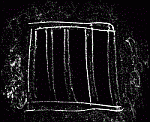

<!DOCTYPE html PUBLIC "-//W3C//DTD XHTML 1.0 Transitional//EN" "http://www.w3.org/TR/xhtml1/DTD/xhtml1-transitional.dtd"> 
<html>
<head>
<meta name="viewport" content="width=device-width, initial-scale=1.0, maximum-scale=1.0, user-scalable=no" />
<meta name="HandheldFriendly" content="true" />
<meta http-equiv="Content-type" content="text/html;charset=UTF-8"> 
<title>Adventure Game</title>
<link rel="stylesheet" type="text/css" href="http://fonts.googleapis.com/css?family=Graduate">
<style>
#bb {color:#ffffff; letter-spacing:0; font-size:17pt; font-family:Papyrus,Dosis,Graduate;}
A:link {color:#ffcc66; text-decoration:none; font-size:20pt;}
A:visited {color:#ffffff; text-decoration:none;}
A:active {color:#ffffff; text-decoration:none;}
hr {color:#888888; height:1px}
table#table1 {width:70%; margin-left:15%; margin-right:15%; background-color:#000033;}
#mapbb {
    font-family:Papyrus,Dosis; 
    font-size:20px;
    color:#FFFFFF;
    text-align : justify;
}

td {
	text-align:center;
	border-color: #999999;
	color:#FFFFFF;
    font-family:Papyrus,Dosis,Graduate; 
    font-size:20px;
}

</style>
<!--
dosis font is for ipad
-->
<script src="http://ajax.googleapis.com/ajax/libs/jquery/1.7.1/jquery.min.js"></script>
<script language="javascript">
<!-- to work properly in google chrome: click on Tools->Extensions and install the 'Reclaim Backspace' addon -->
// --- start map initialize ---
map_first=0;
var mt="";
var icloc = new Array;
var m=new Array(); // m=map
var ag=new Array();
var og=new Array();
var ug=new Array();
var cy="<font color='#ccff00'>";
var boxx=0;
var boxy=0;
var level="ag";  // ag-at ground, og-over ground, ug-underground
var sp=">&nbsp;&nbsp;&nbsp;";
var blue=" bgcolor='#6699FF'>";  // blue
var brown=" bgcolor='#BB6633'>"; // brown
var dkgreen=" bgcolor='#009000'>";  // dk green
var green=" bgcolor='#00BB33'>";  // green
var yellow=" bgcolor='#DDAA33'>";   // yellow
var grey=" bgcolor='#888888'>";   // grey
var ggstat="999init";

m[1]=new Array(); m[2]=new Array(); m[3]=new Array(); m[4]=new Array(); m[5]=new Array();
m[6]=new Array(); m[7]=new Array(); m[8]=new Array(); m[9]=new Array(); m[10]=new Array();
m[11]=new Array(); m[12]=new Array(); m[13]=new Array(); m[14]=new Array(); m[15]=new Array();
m[16]=new Array(); m[17]=new Array(); m[18]=new Array(); m[19]=new Array();

ag[1]=new Array(); ag[2]=new Array(); ag[3]=new Array(); ag[4]=new Array(); ag[5]=new Array();
ag[6]=new Array(); ag[7]=new Array(); ag[8]=new Array(); ag[9]=new Array(); ag[10]=new Array();
ag[11]=new Array(); ag[12]=new Array(); ag[13]=new Array(); ag[14]=new Array(); ag[15]=new Array();
ag[16]=new Array(); ag[17]=new Array(); ag[18]=new Array(); ag[19]=new Array();

og[1]=new Array(); og[2]=new Array(); og[3]=new Array(); og[4]=new Array(); og[5]=new Array();
og[6]=new Array(); og[7]=new Array(); og[8]=new Array(); og[9]=new Array(); og[10]=new Array();
og[11]=new Array(); og[12]=new Array(); og[13]=new Array(); og[14]=new Array(); og[15]=new Array();
og[16]=new Array(); og[17]=new Array(); og[18]=new Array(); og[19]=new Array();

ug[1]=new Array(); ug[2]=new Array(); ug[3]=new Array(); ug[4]=new Array(); ug[5]=new Array();
ug[6]=new Array(); ug[7]=new Array(); ug[8]=new Array(); ug[9]=new Array(); ug[10]=new Array();
ug[11]=new Array(); ug[12]=new Array(); ug[13]=new Array(); ug[14]=new Array(); ug[15]=new Array();
ug[16]=new Array(); ug[17]=new Array(); ug[18]=new Array(); ug[19]=new Array();

var sp="&nbsp;&nbsp;&nbsp;&nbsp;&nbsp;&nbsp;&nbsp;&nbsp;&nbsp;&nbsp;&nbsp;&nbsp;&nbsp;&nbsp;&nbsp;&nbsp;&nbsp;";
ag[1][1]=sp;	ag[1][2]="";				ag[1][3]=""; 					ag[1][4]=sp;						ag[1][5]=sp;						ag[1][6]=sp;							ag[1][7]=sp;							ag[1][8]=sp;							ag[1][9]=sp;								ag[1][10]=sp;							ag[1][11]=sp;				ag[1][12]=sp;				ag[1][13]=sp;	ag[1][14]=sp;	ag[1][15]=sp;	ag[1][16]=sp;	ag[1][17]=sp;	ag[1][18]=sp;	ag[1][19]=sp;	ag[1][20]=sp;	ag[1][21]=sp;
ag[2][1]="";	ag[2][2]="";					ag[2][3]="";				ag[2][4]="";						ag[2][5]="";						ag[2][6]="";							ag[2][7]="";							ag[2][8]="";							ag[2][9]="";								ag[2][10]="";								ag[2][11]="";							ag[2][12]="";				ag[2][13]="";	ag[2][14]="";	ag[2][15]="";	ag[2][16]="";	ag[2][17]="";	ag[2][18]="";	ag[2][19]="";	ag[2][20]="";	ag[2][21]="";
ag[3][1]="";	ag[3][2]="";					ag[3][3]="";				ag[3][4]="";						ag[3][5]="";						ag[3][6]="";							ag[3][7]="";							ag[3][8]="";							ag[3][9]="";								ag[3][10]="";								ag[3][11]="";			ag[3][12]="";				ag[3][13]="";	ag[3][14]="";	ag[3][15]="";	ag[3][16]="";	ag[3][17]="";	ag[3][18]="";	ag[3][19]="";	ag[3][20]="";	ag[3][21]="";
ag[4][1]="";	ag[4][2]="";					ag[4][3]="";				ag[4][4]="";						ag[4][5]="";						ag[4][6]="";							ag[4][7]="";							ag[4][8]="";							ag[4][9]="";								ag[4][10]="";								ag[4][11]="";							ag[4][12]="";				ag[4][13]="";	ag[4][14]="";	ag[4][15]="";	ag[4][16]="";	ag[4][17]="";	ag[4][18]="";	ag[4][19]="";	ag[4][20]="";	ag[4][21]="";
ag[5][1]="";	ag[5][2]="";					ag[5][3]=""; 				ag[5][4]="";						ag[5][5]="071atcliff";			ag[5][6]="-099atcliff";				ag[5][7]="101atcliff";				ag[5][8]="";							ag[5][9]="";								ag[5][10]="";								ag[5][11]="";							ag[5][12]="";				ag[5][13]="";	ag[5][14]="";	ag[5][15]="";	ag[5][16]="";	ag[5][17]="";	ag[5][18]="";	ag[5][19]="";	ag[5][20]="";	ag[5][21]="";
ag[6][1]="";	ag[6][2]="";					ag[6][3]="";	 			ag[6][4]="061atcliff-061onladder";			ag[6][5]="072inbrush";		ag[6][6]="-098behindwall";		ag[6][7]="100behindwall";		ag[6][8]=""; 							ag[6][9]="";								ag[6][10]="";								ag[6][11]="";							ag[6][12]="";				ag[6][13]="";	ag[6][14]="";	ag[6][15]="";	ag[6][16]="";	ag[6][17]="";	ag[6][18]="";	ag[6][19]="";	ag[6][20]="";	ag[6][21]="";
ag[7][1]="";	ag[7][2]="";					ag[7][3]="";				ag[7][4]="060btunnel";		ag[7][5]="073inbrush";		ag[7][6]="-078inhut";			ag[7][7]="-079inhut";				ag[7][8]=""; 							ag[7][9]="";								ag[7][10]="";								ag[7][11]="";							ag[7][12]="";				ag[7][13]="";	ag[7][14]="";	ag[7][15]="";	ag[7][16]="";	ag[7][17]="";	ag[7][18]="";	ag[7][19]="";	ag[7][20]="";	ag[7][21]="";
ag[8][1]="";	ag[8][2]="058btunnel";			ag[8][3]="097btunnel"; 		ag[8][4]="059btunnel";		ag[8][5]="074inbrush";		ag[8][6]="-077inhut";			ag[8][7]="082forestathut";		ag[8][8]="083atcliff-083onladder";				ag[8][9]="090cellardoor"; 			ag[8][10]="093behindhouse";		ag[8][11]="096behindhouse";	ag[8][12]="";				ag[8][13]="";	ag[8][14]="";	ag[8][15]="";	ag[8][16]="";	ag[8][17]="";	ag[8][18]="";	ag[8][19]="";	ag[8][20]="";	ag[8][21]="";
ag[9][1]="";	ag[9][2]="057btunnel";			ag[9][3]="";				ag[9][4]="";				ag[9][5]="075forestfern"; 		ag[9][6]="076forestathut";		ag[9][7]="081forest";				ag[9][8]="086forest";				ag[9][9]="089inbrush";				ag[9][10]="092forest";				ag[9][11]="095inbrush";		ag[9][12]="";				ag[9][13]="";	ag[9][14]="";	ag[9][15]="";	ag[9][16]="";	ag[9][17]="";	ag[9][18]="";	ag[9][19]="";	ag[9][20]="";	ag[9][21]="";
ag[10][1]="";	ag[10][2]="056ontree";				ag[10][3]="152undertree-152ontree";				ag[10][4]="-007onwall";		ag[10][5]="";				ag[10][6]="113forestedge";	ag[10][7]="080forestedge";	ag[10][8]="087forestedge"; 	ag[10][9]="088inbrush";			ag[10][10]="091forestedge"; 			ag[10][11]="094inbrush";		ag[10][12]="";				ag[10][13]="";	ag[10][14]="";	ag[10][15]="";	ag[10][16]="";	ag[10][17]="";	ag[10][18]="";	ag[10][19]="";	ag[10][20]="";	ag[10][21]="";
ag[11][1]="";	ag[11][2]="055trail";				ag[11][3]="005trail";  		ag[11][4]="006onwall"; 		ag[11][5]="015wallw";		ag[11][6]="008nwmeadow";	ag[11][7]="009nemeadow";	ag[11][8]="012stream";		ag[11][9]="017hilltop-048inshack";	ag[11][10]="020hillside";	ag[11][11]="028field";			ag[11][12]="029wagonroad";	ag[11][13]="";	ag[11][14]="";	ag[11][15]="";	ag[11][16]="";	ag[11][17]="";	ag[11][18]="";	ag[11][19]="";	ag[11][20]="";	ag[11][21]="";
ag[12][1]="";	ag[12][2]="";					ag[12][3]="004trail"; 		ag[12][4]="";				ag[12][5]="016wallw";		ag[12][6]="010swmeadow";	ag[12][7]="011semeadow";	ag[12][8]="013stream";		ag[12][9]="018hilltop";				ag[12][10]="024hillside";			ag[12][11]="030field";			ag[12][12]="030wagonroad";	ag[12][13]="";	ag[12][14]="";	ag[12][15]="";	ag[12][16]="";	ag[12][17]="";	ag[12][18]="";	ag[12][19]="";	ag[12][20]="";	ag[12][21]="";
ag[13][1]="";	ag[13][2]="";					ag[13][3]="003trail";   		ag[13][4]="";						ag[13][5]="";						ag[13][6]="035edgeswamp";	ag[13][7]="036edgeswamp";	ag[13][8]="014stream";		ag[13][9]="";								ag[13][10]="";							ag[13][11]="";							ag[13][12]="031wagonroad";	ag[13][13]="";	ag[13][14]="";	ag[13][15]="";	ag[13][16]="";	ag[13][17]="";	ag[13][18]="";	ag[13][19]="";	ag[13][20]="";	ag[13][21]="";
ag[14][1]="";	ag[14][2]="";			ag[14][3]="";						ag[14][4]="";						ag[14][5]="";						ag[14][6]="-037bullrushes";	ag[14][7]="051intree-050bullrushes";		ag[14][8]="";							ag[14][9]="";								ag[14][10]="";									ag[14][11]="";							ag[14][12]="032atbridge-034underbridge";		ag[14][13]="-033atstream";	ag[14][14]="";	ag[14][15]="";	ag[14][16]="";	ag[14][17]="";	ag[14][18]="";	ag[14][19]="";	ag[14][20]="";	ag[14][21]="";
ag[15][1]="";	ag[15][2]="";			ag[15][3]="";						ag[15][4]="";						ag[15][5]="";						ag[15][6]="";						ag[15][7]="";				ag[15][8]="";			ag[15][9]="";				ag[15][10]="";						ag[15][11]="";						ag[15][12]="";						ag[15][13]="";	ag[15][14]="";	ag[15][15]="";	ag[15][16]="";	ag[15][17]="";	ag[15][18]="";	ag[15][19]="";	ag[15][20]="";	ag[15][21]="";
ag[16][1]="";	ag[16][2]="";			ag[16][3]="";						ag[16][4]="";						ag[16][5]="";						ag[16][6]="";						ag[16][7]="";				ag[16][8]="";			ag[16][9]="";	ag[16][10]="";	ag[16][11]="";	ag[16][12]="";	ag[16][13]="";	ag[16][14]="";	ag[16][15]="";	ag[16][16]="";	ag[16][17]="";	ag[16][18]="";	ag[16][19]="";	ag[16][20]="";	ag[16][21]="";
ag[17][1]="";	ag[17][2]="";			ag[17][3]="";						ag[17][4]="";						ag[17][5]="";						ag[17][6]="";							ag[17][7]="";				ag[17][8]="";			ag[17][9]="";	ag[17][10]="";	ag[17][11]="";	ag[17][12]="";	ag[17][13]="";	ag[17][14]="";	ag[17][15]="";	ag[17][16]="";	ag[17][17]="";	ag[17][18]="";	ag[17][19]="";	ag[17][20]="";	ag[17][21]="";
ag[18][1]="";	ag[18][2]="";			ag[18][3]="";						ag[18][4]="";						ag[18][5]="";						ag[18][6]="";						ag[18][7]="";				ag[18][8]="";			ag[18][9]="";	ag[18][10]="";	ag[18][11]="";	ag[18][12]="";	ag[18][13]="";	ag[18][14]="";	ag[18][15]="";	ag[18][16]="";	ag[18][17]="";	ag[18][18]="";	ag[18][19]="";	ag[18][20]="";	ag[18][21]="";
ag[19][1]="";	ag[19][2]="";			ag[19][3]="";						ag[19][4]="";						ag[19][5]="";						ag[19][6]="";						ag[19][7]="";				ag[19][8]="";			ag[19][9]="";	ag[19][10]="";	ag[19][11]="";	ag[19][12]="";	ag[19][13]="";	ag[19][14]="";	ag[19][15]="";	ag[19][16]="";	ag[19][17]="";	ag[19][18]="";	ag[19][19]="";	ag[19][20]="";	ag[19][21]="";

og[1][1]=sp;	og[1][2]="";			og[1][3]="067tunnel"; 		og[1][4]=sp;						og[1][5]=sp;						og[1][6]=sp;				og[1][7]=sp;				og[1][8]=sp;			og[1][9]=sp;			og[1][10]=sp;				og[1][11]=sp;			og[1][12]=sp;				og[1][13]=sp;	og[1][14]=sp;	og[1][15]=sp;	og[1][16]=sp;	og[1][17]=sp;	og[1][18]=sp;	og[1][19]=sp;	og[1][20]=sp;	og[1][21]=sp;
og[2][1]="";	og[2][2]="";			og[2][3]="066tunnel";		og[2][4]="070caveroom";	og[2][5]="-106tunnel";		og[2][6]="-105tunnel";				og[2][7]="";								og[2][8]="";								og[2][9]="";										og[2][10]="";							og[2][11]="";					og[2][12]="";				og[2][13]="";	og[2][14]="";	og[2][15]="";	og[2][16]="";	og[2][17]="";	og[2][18]="";	og[2][19]="";	og[2][20]="";	og[2][21]="";
og[3][1]="";	og[3][2]="";			og[3][3]="065tunnel";		og[3][4]="069caveroom";	og[3][5]="";						og[3][6]="-104caveroom";		og[3][7]="-126caveroom";		og[3][8]="";								og[3][9]="109incave";					og[3][10]="110tunnel";			og[3][11]="112tunnel";	og[3][12]="";				og[3][13]="";	og[3][14]="";	og[3][15]="";	og[3][16]="";	og[3][17]="";	og[3][18]="";	og[3][19]="";	og[3][20]="";	og[3][21]="";
og[4][1]="";	og[4][2]="";			og[4][3]="064incave";		og[4][4]="068incave";		og[4][5]="";						og[4][6]="-103onledge";			og[4][7]="125onledge";			og[4][8]="-107onledge";			og[4][9]="108onledge";					og[4][10]="111tunnel";			og[4][11]="";					og[4][12]="";				og[4][13]="";	og[4][14]="";	og[4][15]="";	og[4][16]="";	og[4][17]="";	og[4][18]="";	og[4][19]="";	og[4][20]="";	og[4][21]="";
og[5][1]="";	og[5][2]="";			og[5][3]="063onledge"; 	og[5][4]="062onladder-062onledge";						og[5][5]="";						og[5][6]="";								og[5][7]="124ropebridge";	og[5][8]="";								og[5][9]="133ropebridge";			og[5][10]="";							og[5][11]="";					og[5][12]="";				og[5][13]="";	og[5][14]="";	og[5][15]="";	og[5][16]="";	og[5][17]="";	og[5][18]="";	og[5][19]="";	og[5][20]="";	og[5][21]="";
og[6][1]="";	og[6][2]="";			og[6][3]="";	 					og[6][4]="128infort";			og[6][5]="";						og[6][6]="";								og[6][7]="123ropebridge";	og[6][8]="085lookoutrock"; 	og[6][9]="132ropebridge";			og[6][10]="";							og[6][11]="";					og[6][12]="";				og[6][13]="";	og[6][14]="";	og[6][15]="";	og[6][16]="";	og[6][17]="";	og[6][18]="";	og[6][19]="";	og[6][20]="";	og[6][21]="";
og[7][1]="";	og[7][2]="";			og[7][3]="";						og[7][4]="127intree";		og[7][5]="";						og[7][6]="121onroof";			og[7][7]="122onroof";			og[7][8]="084lookoutrock"; 	og[7][9]="131intree";						og[7][10]="";							og[7][11]="";					og[7][12]="";				og[7][13]="";	og[7][14]="";	og[7][15]="";	og[7][16]="";	og[7][17]="";	og[7][18]="";	og[7][19]="";	og[7][20]="";	og[7][21]="";
og[8][1]="";	og[8][2]="";			og[8][3]="";						og[8][4]="";						og[8][5]="";						og[8][6]="120onroof";			og[8][7]="";								og[8][8]="";								og[8][9]="130ropebridge"; 			og[8][10]="";							og[8][11]="";					og[8][12]="";				og[8][13]="";	og[8][14]="";	og[8][15]="";	og[8][16]="";	og[8][17]="";	og[8][18]="";	og[8][19]="";	og[8][20]="";	og[8][21]="";
og[9][1]="";	og[9][2]="";			og[9][3]="";						og[9][4]="";						og[9][5]=""; 						og[9][6]="119ropebridge";	og[9][7]="";								og[9][8]="";								og[9][9]="129ropebridge";			og[9][10]="";							og[9][11]="";					og[9][12]="";				og[9][13]="";	og[9][14]="";	og[9][15]="";	og[9][16]="";	og[9][17]="";	og[9][18]="";	og[9][19]="";	og[9][20]="";	og[9][21]="";
og[10][1]="";	og[10][2]="";			og[10][3]="";						og[10][4]="052intree"; 		og[10][5]="";						og[10][6]="118ropebridge";	og[10][7]="";							og[10][8]=""; 		og[10][9]="116onfort-115onladder";				og[10][10]=""; 						og[10][11]="";					og[10][12]="";				og[10][13]="";	og[10][14]="";	og[10][15]="";	og[10][16]="";	og[10][17]="";	og[10][18]="";	og[10][19]="";	og[10][20]="";	og[10][21]="";
og[11][1]="";	og[11][2]="";			og[11][3]=""; 		 			og[11][4]=""; 						og[11][5]="";					og[11][6]="117intree";			og[11][7]="";							og[11][8]="-114platform";	og[11][9]="021intree-049infort"; og[11][10]="-022onbranch";	og[11][11]="";			og[11][12]="";	og[11][13]="";	og[11][14]="";	og[11][15]="";	og[11][16]="";	og[11][17]="";	og[11][18]="";	og[11][19]="";	og[11][20]="";	og[11][21]="";
og[12][1]="";	og[12][2]="";			og[12][3]="";  			og[12][4]="";			og[12][5]="";			og[12][6]="";				og[12][7]="";				og[12][8]="";			og[12][9]="";			og[12][10]="";				og[12][11]="";			og[12][12]="";	og[12][13]="";	og[12][14]="";	og[12][15]="";	og[12][16]="";	og[12][17]="";	og[12][18]="";	og[12][19]="";	og[12][20]="";	og[12][21]="";
og[13][1]="";	og[13][2]="";			og[13][3]="";    			og[13][4]="";			og[13][5]="";			og[13][6]="";				og[13][7]="";				og[13][8]="";			og[13][9]="";			og[13][10]="";				og[13][11]="";			og[13][12]="";	og[13][13]="";	og[13][14]="";	og[13][15]="";	og[13][16]="";	og[13][17]="";	og[13][18]="";	og[13][19]="";	og[13][20]="";	og[13][21]="";
og[14][1]="";	og[14][2]="";			og[14][3]="";			og[14][4]="";			og[14][5]="";			og[14][6]="";					og[14][7]="";				og[14][8]="";			og[14][9]="";			og[14][10]="";				og[14][11]="";			og[14][12]="";		og[14][13]="";	og[14][14]="";	og[14][15]="";	og[14][16]="";	og[14][17]="";	og[14][18]="";	og[14][19]="";	og[14][20]="";	og[14][21]="";
og[15][1]="";	og[15][2]="";			og[15][3]="";			og[15][4]="";			og[15][5]="";			og[15][6]="";					og[15][7]="";				og[15][8]="";			og[15][9]="";				og[15][10]="";						og[15][11]="";				og[15][12]="";	og[15][13]="";	og[15][14]="";	og[15][15]="";	og[15][16]="";	og[15][17]="";	og[15][18]="";	og[15][19]="";	og[15][20]="";	og[15][21]="";
og[16][1]="";	og[16][2]="";			og[16][3]="";			og[16][4]="";			og[16][5]="";			og[16][6]="";				og[16][7]="";				og[16][8]="";	og[16][9]="";	og[16][10]="";	og[16][11]="";	og[16][12]="";	og[16][13]="";	og[16][14]="";	og[16][15]="";	og[16][16]="";	og[16][17]="";	og[16][18]="";	og[16][19]="";	og[16][20]="";	og[16][21]="";
og[17][1]="";	og[17][2]="";			og[17][3]="";			og[17][4]="";			og[17][5]="";			og[17][6]="";				og[17][7]="";				og[17][8]="";	og[17][9]="";	og[17][10]="";	og[17][11]="";	og[17][12]="";	og[17][13]="";	og[17][14]="";	og[17][15]="";	og[17][16]="";	og[17][17]="";	og[17][18]="";	og[17][19]="";	og[17][20]="";	og[17][21]="";
og[18][1]="";	og[18][2]="";			og[18][3]="";			og[18][4]="";			og[18][5]="";			og[18][6]="";				og[18][7]="";				og[18][8]="";	og[18][9]="";	og[18][10]="";	og[18][11]="";	og[18][12]="";	og[18][13]="";	og[18][14]="";	og[18][15]="";	og[18][16]="";	og[18][17]="";	og[18][18]="";	og[18][19]="";	og[18][20]="";	og[18][21]="";
og[19][1]="";	og[19][2]="";			og[19][3]="";			og[19][4]="";			og[19][5]="";			og[19][6]="";				og[19][7]="";							og[19][8]="";	og[19][9]="";	og[19][10]="";	og[19][11]="";	og[19][12]="";	og[19][13]="";	og[19][14]="";	og[19][15]="";	og[19][16]="";	og[19][17]="";	og[19][18]="";	og[19][19]="";	og[19][20]="";	og[19][21]="";

ug[1][1]=sp;	ug[1][2]="";			ug[1][3]=""; 						ug[1][4]=sp;						ug[1][5]=sp;				ug[1][6]=sp;							ug[1][7]=sp;					ug[1][8]=sp;							ug[1][9]=sp;						ug[1][10]=sp;							ug[1][11]=sp;				ug[1][12]=sp;				ug[1][13]=sp;	ug[1][14]=sp;	ug[1][15]=sp;	ug[1][16]=sp;	ug[1][17]=sp;	ug[1][18]=sp;	ug[1][19]=sp;	ug[1][20]=sp;	ug[1][21]=sp;
ug[2][1]="";	ug[2][2]="";			ug[2][3]="";						ug[2][4]="";						ug[2][5]="";					ug[2][6]="";						ug[2][7]="";					ug[2][8]="";							ug[2][9]="";						ug[2][10]="";							ug[2][11]="";				ug[2][12]="";				ug[2][13]="";	ug[2][14]="";	ug[2][15]="";	ug[2][16]="";	ug[2][17]="";	ug[2][18]="";	ug[2][19]="";	ug[2][20]="";	ug[2][21]="";
ug[3][1]="";	ug[3][2]="";			ug[3][3]="";						ug[3][4]="";						ug[3][5]="";					ug[3][6]="";						ug[3][7]="";					ug[3][8]="";							ug[3][9]="";						ug[3][10]="";			ug[3][11]="";		ug[3][12]="";				ug[3][13]="";	ug[3][14]="";	ug[3][15]="";	ug[3][16]="";	ug[3][17]="";	ug[3][18]="";	ug[3][19]="";	ug[3][20]="";	ug[3][21]="";
ug[4][1]="";	ug[4][2]="";			ug[4][3]="";						ug[4][4]="";						ug[4][5]="";					ug[4][6]="";						ug[4][7]="";					ug[4][8]="";							ug[4][9]="";						ug[4][10]="";							ug[4][11]="";				ug[4][12]="";				ug[4][13]="";	ug[4][14]="";	ug[4][15]="";	ug[4][16]="";	ug[4][17]="";	ug[4][18]="";	ug[4][19]="";	ug[4][20]="";	ug[4][21]="";
ug[5][1]="";	ug[5][2]="";			ug[5][3]=""; 						ug[5][4]="";						ug[5][5]="";					ug[5][6]="";						ug[5][7]="";					ug[5][8]="";							ug[5][9]="";						ug[5][10]="";							ug[5][11]="";				ug[5][12]="";				ug[5][13]="";	ug[5][14]="";	ug[5][15]="";	ug[5][16]="";	ug[5][17]="";	ug[5][18]="";	ug[5][19]="";	ug[5][20]="";	ug[5][21]="";
ug[6][1]="";	ug[6][2]="";			ug[6][3]="";	 					ug[6][4]="";						ug[6][5]="";					ug[6][6]="-150tunnel";		ug[6][7]="";					ug[6][8]=""; 							ug[6][9]="";						ug[6][10]="";							ug[6][11]="";				ug[6][12]="";				ug[6][13]="";	ug[6][14]="";	ug[6][15]="";	ug[6][16]="";	ug[6][17]="";	ug[6][18]="";	ug[6][19]="";	ug[6][20]="";	ug[6][21]="";
ug[7][1]="";	ug[7][2]="";			ug[7][3]="";						ug[7][4]="";						ug[7][5]="";					ug[7][6]="-151tunnel";		ug[7][7]="-144tunnel";	ug[7][8]="";	 						ug[7][9]="-138tunnel";		ug[7][10]="";							ug[7][11]="";				ug[7][12]="";				ug[7][13]="";	ug[7][14]="";	ug[7][15]="";	ug[7][16]="";	ug[7][17]="";	ug[7][18]="";	ug[7][19]="";	ug[7][20]="";	ug[7][21]="";
ug[8][1]="";	ug[8][2]="";			ug[8][3]="";						ug[8][4]="";						ug[8][5]="";					ug[8][6]=".077inhut";			ug[8][7]="-143tunnel";	ug[8][8]="";							ug[8][9]="-137tunnel"; 		ug[8][10]="";							ug[8][11]=".096behindhouse";	ug[8][12]="";						ug[8][13]="";	ug[8][14]="";	ug[8][15]="";	ug[8][16]="";	ug[8][17]="";	ug[8][18]="";	ug[8][19]="";	ug[8][20]="";	ug[8][21]="";
ug[9][1]="";	ug[9][2]="";			ug[9][3]="";						ug[9][4]="";						ug[9][5]=""; 					ug[9][6]="";						ug[9][7]="-142tunnel";	ug[9][8]="";							ug[9][9]="-136tunnel";		ug[9][10]=".092forest";			ug[9][11]=".095inbrush";		ug[9][12]="";						ug[9][13]="";	ug[9][14]="";	ug[9][15]="";	ug[9][16]="";	ug[9][17]="";	ug[9][18]="";	ug[9][19]="";	ug[9][20]="";	ug[9][21]="";
ug[10][1]="";	ug[10][2]="";			ug[10][3]="-149tunnel";				ug[10][4]=".007onwall";				ug[10][5]="";					ug[10][6]="";						ug[10][7]="-141tunnel";	ug[10][8]=""; 							ug[10][9]="-135tunnel";		ug[10][10]=".091forestedge"; 	ug[10][11]=".094inbrush";		ug[10][12]="";						ug[10][13]="";	ug[10][14]="";	ug[10][15]="";	ug[10][16]="";	ug[10][17]="";	ug[10][18]="";	ug[10][19]="";	ug[10][20]="";	ug[10][21]="";
ug[11][1]="";	ug[11][2]="";			ug[11][3]="-148tunnel";	  			ug[11][4]="-147tunnel"; 				ug[11][5]="-146tunnel";			ug[11][6]="-145tunnel";		ug[11][7]="-140tunnel";	ug[11][8]="-139tunnel";			ug[11][9]="-134uroom";		ug[11][10]=".020hillside";	ug[11][11]=".028field";		ug[11][12]=".029wagonroad";	ug[11][13]="";	ug[11][14]="";	ug[11][15]="";	ug[11][16]="";	ug[11][17]="";	ug[11][18]="";	ug[11][19]="";	ug[11][20]="";	ug[11][21]="";
ug[12][1]="";	ug[12][2]="";			ug[12][3]=".004trail";  				ug[12][4]="";						ug[12][5]="";					ug[12][6]="";						ug[12][7]="";					ug[12][8]=".013stream";		ug[12][9]="";						ug[12][10]=".024hillside";	ug[12][11]=".030field";		ug[12][12]=".030wagonroad";	ug[12][13]="";	ug[12][14]="";	ug[12][15]="";	ug[12][16]="";	ug[12][17]="";	ug[12][18]="";	ug[12][19]="";	ug[12][20]="";	ug[12][21]="";
ug[13][1]="";	ug[13][2]="";			ug[13][3]=""; 				   		ug[13][4]="";						ug[13][5]="";					ug[13][6]="";						ug[13][7]="";					ug[13][8]="";							ug[13][9]="";						ug[13][10]="";				ug[13][11]="";				ug[13][12]=".031wagonroad";	ug[13][13]="";	ug[13][14]="";	ug[13][15]="";	ug[13][16]="";	ug[13][17]="";	ug[13][18]="";	ug[13][19]="";	ug[13][20]="";	ug[13][21]="";
ug[14][1]="";	ug[14][2]="";			ug[14][3]="";						ug[14][4]="";						ug[14][5]="";					ug[14][6]="";						ug[14][7]="";					ug[14][8]="";							ug[14][9]="";						ug[14][10]="";				ug[14][11]="";					ug[14][12]=".032atbridge";		ug[14][13]="";	ug[14][14]="";	ug[14][15]="";	ug[14][16]="";	ug[14][17]="";	ug[14][18]="";	ug[14][19]="";	ug[14][20]="";	ug[14][21]="";
ug[15][1]="";	ug[15][2]="";			ug[15][3]="";			ug[15][4]="";			ug[15][5]="";			ug[15][6]="";				ug[15][7]="";			ug[15][8]="";			ug[15][9]="";			ug[15][10]="";				ug[15][11]="";				ug[15][12]="";						ug[15][13]="";	ug[15][14]="";	ug[15][15]="";	ug[15][16]="";	ug[15][17]="";	ug[15][18]="";	ug[15][19]="";	ug[15][20]="";	ug[15][21]="";
ug[16][1]="";	ug[16][2]="";			ug[16][3]="";			ug[16][4]="";			ug[16][5]="";			ug[16][6]="";				ug[16][7]="";			ug[16][8]="";			ug[16][9]="";			ug[16][10]="";				ug[16][11]="";				ug[16][12]="";	ug[16][13]="";	ug[16][14]="";	ug[16][15]="";	ug[16][16]="";	ug[16][17]="";	ug[16][18]="";	ug[16][19]="";	ug[16][20]="";	ug[16][21]="";
ug[17][1]="";	ug[17][2]="";			ug[17][3]="";			ug[17][4]="";			ug[17][5]="";			ug[17][6]="";				ug[17][7]="";			ug[17][8]="";			ug[17][9]="";			ug[17][10]="";				ug[17][11]="";				ug[17][12]="";	ug[17][13]="";	ug[17][14]="";	ug[17][15]="";	ug[17][16]="";	ug[17][17]="";	ug[17][18]="";	ug[17][19]="";	ug[17][20]="";	ug[17][21]="";
ug[18][1]="";	ug[18][2]="";			ug[18][3]="";			ug[18][4]="";			ug[18][5]="";			ug[18][6]="";				ug[18][7]="";			ug[18][8]="";			ug[18][9]="";			ug[18][10]="";				ug[18][11]="";				ug[18][12]="";	ug[18][13]="";	ug[18][14]="";	ug[18][15]="";	ug[18][16]="";	ug[18][17]="";	ug[18][18]="";	ug[18][19]="";	ug[18][20]="";	ug[18][21]="";
ug[19][1]="";	ug[19][2]="";			ug[19][3]="";			ug[19][4]="";			ug[19][5]="";			ug[19][6]="";				ug[19][7]="";			ug[19][8]="";			ug[19][9]="";			ug[19][10]="";				ug[19][11]="";				ug[19][12]="";	ug[19][13]="";	ug[19][14]="";	ug[19][15]="";	ug[19][16]="";	ug[19][17]="";	ug[19][18]="";	ug[19][19]="";	ug[19][20]="";	ug[19][21]="";
for (y=1; y<20; y++) {
	for (x=1; x<22; x++) {m[y][x]=ag[y][x];}
}
// --- end map initialize --- 

var key_code;
var pressedshift=0;
var movedtoroom="051intree"; // 051intree 
var camefromroom="051intree"; // 051intree
var ishake=0;
var t_curr_room="";
var curr_room="051intree"; // 051intree
var firsttime=1; 
var iarticle="<a href='javascript:boom(\"look article\");'>article</a>";
var ibag="<a href='javascript:boom(\"look bag\");'>bag</a>";
var ibank="<a href='javascript:boom(\"look bank\");'>bank</a>";
var ibrambles="<a href='javascript:boom(\"look brambles\");'>brambles</a>";
var ibranch="<a href='javascript:boom(\"look branch\");'>branch</a>";
var ibranches="<a href='javascript:boom(\"look branches\");'>branches</a>";
var ibullr="<a href='javascript:boom(\"look ibullrushes\");'>ibullrushes</a>";
var ibeach="<a href='javascript:boom(\"look beach\");'>beach</a>";
var ibone="<a href='javascript:boom(\"look bone\");'>bone</a>";
var ibridge="<a href='javascript:boom(\"look bridge\");'>bridge</a>";
var ibrush="<a href='javascript:boom(\"look brush\");'>brush</a>";
var ibullrushes="<a href='javascript:boom(\"look bullrushes\");'>bullrushes</a>";
var ibushes="<a href='javascript:boom(\"look bushes\");'>bushes</a>";
var icatninetails="<a href='javascript:boom(\"look catninetails\");'>cat-a-nine-tails</a>";
var ichickenfence="<a href='javascript:boom(\"look chicken fence\");'>chicken fence</a>";
var iceiling="<a href='javascript:boom(\"look ceiling\");'>ceiling</a>";
var ichest="<a href='javascript:boom(\"look chest\");'>chest</a>";
var icoins="<a href='javascript:boom(\"look coins\");'>coins</a>";
var icupboard="<a href='javascript:boom(\"look cupboard\");'>cupboard</a>";
var idog="<a href='javascript:boom(\"look dog\");'>dog</a>";
var idoor="<a href='javascript:boom(\"look door\");'>door</a>";
var ieastbank="<a href='javascript:boom(\"look east bank\");'>East</a>";
var ienvelope="<a href='javascript:boom(\"look envelope\");'>envelope</a>";
var ifence="<a href='javascript:boom(\"look fence\");'>fence</a>";
var ifield="<a href='javascript:boom(\"look field\");'>field</a>";
var iflashlight="<a href='javascript:boom(\"look flashlight\");'>flashlight</a>";
var iflare="<a href='javascript:boom(\"look flare\");'>flare</a>";
var ifort="<a href='javascript:boom(\"look fort\");'>fort</a>";
var igrate="<a href='javascript:boom(\"look grate\");'>grate</a>";
var igully="<a href='javascript:boom(\"look gully\");'>gully</a>";
var igrass="<a href='javascript:boom(\"look grass\");'>grass</a>";
var ihillside="<a href='javascript:boom(\"look hillside\");'>hillside</a>";
var ikeyinbottle="<a href='javascript:boom(\"look bottle\");'>bottle</a>";
var iknife="<a href='javascript:boom(\"look knife\");'>knife</a>";
var iladder="<a href='javascript:boom(\"look ladder\");'>ladder</a>";
var ilatch="<a href='javascript:boom(\"look latch\");'>latch</a>";
var ilever="<a href='javascript:boom(\"look lever\");'>lever</a>";
var imailbox="<a href='javascript:boom(\"look mailbox\");'>mailbox</a>";
var imeadow="<a href='javascript:boom(\"look meadow\");'>meadow</a>";
var imountain="<a href='javascript:boom(\"look mountain\");'>mountain</a>";
var inewspaper="<a href='javascript:boom(\"look newspaper\");'>newspaper</a>";
var iovergrowth="<a href='javascript:boom(\"look overgrowth\");'>overgrowth</a>";
var ipurplekey="<a href='javascript:boom(\"look purplekey\");'>purple key</a>";
var irabbithole="<a href='javascript:boom(\"look rabbit hole\");'>rabbit hole</a>";
var iroad="<a href='javascript:boom(\"look road\");'>road</a>";
var iroof="<a href='javascript:boom(\"look roof\");'>roof</a>";
var irug="<a href='javascript:boom(\"look rug\");'>rug</a>";
var isandwich="<a href='javascript:boom(\"look sandwich\");'>sandwich</a>";
var ishack="<a href='javascript:boom(\"look shack\");'>shack</a>";
var isign="<a href='javascript:boom(\"look sign\");'>sign</a>";
var isky="<a href='javascript:boom(\"look sky\");'>sky</a>";
var ismallkey="<a href='javascript:boom(\"look key\");'>key</a>";
var istream="<a href='javascript:boom(\"look stream\");'>stream</a>";
var istonewall="<a href='javascript:boom(\"look stone wall\");'>stone wall</a>";
var iswamp="<a href='javascript:boom(\"look swamp\");'>swamp</a>";
var itable="<a href='javascript:boom(\"look table\");'>table</a>";
var ithief="<a href='javascript:boom(\"look thief\");'>thief</a>";
var itrail="<a href='javascript:boom(\"look trail\");'>trail</a>";
var itree="<a href='javascript:boom(\"look tree\");'>tree</a>";
var itunnel="<a href='javascript:boom(\"look tunnel\");'>tunnel</a>";
var ivegetation="<a href='javascript:boom(\"look vegetation\");'>vegetation</a>";
var iwall="<a href='javascript:boom(\"look wall\");'>wall</a>";
var iwagonroad="<a href='javascript:boom(\"look wagon road\");'>wagon road</a>";
var iwestbank="<a href='javascript:boom(\"look west bank\");'>west bank</a>";
var iwindow="<a href='javascript:boom(\"look window\");'>window</a>";
var iwoods="<a href='javascript:boom(\"look woods\");'>woods</a>";
var iwriting="<a href='javascript:boom(\"look writing\");'>writing</a>";

var ieast="<a href='javascript:xboom(\"e\");'>east<-a>";
var iwest="<a href='javascript:xboom(\"w\");'>west<-a>";
var inorth="<a href='javascript:xboom(\"n\");'>north<-a>";
var isouth="<a href='javascript:xboom(\"s\");'>south<-a>";
var iup="<a href='javascript:xboom(\"u\");'>up<-a>";
var idown="<a href='javascript:xboom(\"d\");'>down<-a>";
var ileapwest="<a href='javascript:xboom(\"leap west\");'>leap west<-a>";

// -- colors
var colori="#00ff00"; // input text color was 33ff66 green good ccff33 eeff99 ffcc99
var colorn="#ffffff"; // normal text color ff9966 33ff66 was ffffcc aaff99
var ckick="<font size='+1' color='#ff6600'>";
var cbrown="<font color='#ddaa99'>"; // gross color - something is really gross
var ccyan="<font color='#00ffff'>";
var ccyanbig="<font color='#00ffff' size='8'>";
var cgreen="<font color='#99ff66'>";
var cgreenbig="<font color='#99ff66' size='6'>";
var cgreenhuge="<font color='#99ff66' size='8'>";
var cltgreen="<font color='#33ff66'>"; // green
var cmagenta="<font color='#ff00ff'>";
var cmagentabig="<font color='#ff00ff' size='6'>";
var cred="<font color='#ff0000'>";
var cpink="<font color='#faafbe'>";
var credbig="<font color='#ff0000' size='6'>";
var cyellow="<font color='#ccff00'>";
var cyellowbig="<font color='#ccff00' size='6'>";
var cltyellow="<font color='#ccff66'>"; // alert color - 4 moving between rooms was 99ccff blue

var ggstat="999init";

// background changes
var sred=0; var sgreen=0; var sblue=0; var ered=0; var egreen=0; var eblue=0; var changing=0; var currbkcol="002200";
var red=0; var green=0; var blue=0;
var istep=0; var step=32; // background color change
var bkpace=0;
var bkey=0;

var cinv="#ffcc00";
var cur=">";
//var cursor="";
var cursor="_";
var cursoroff=" ";
var t="";
var s1="";
var nomore=0;
var curon=0;
var addedto_t=0;  
var x="";
var tab="&nbsp;&nbsp;&nbsp;&nbsp;&nbsp;&nbsp;&nbsp;&nbsp;";
// ||===============================||
// || life is love. Life is the end 			   ||
// ||===============================||
var g_wb="<font color='#ccff00'>You walk out across the branch...</font><br>";
var g_cg="<font color='#ccff00'>You climb down to the ground.</font><br>";
var g_cu="%34<font color='#ccff00'>You climb up higher%%</font><br><br>";
var g_cd="%33<font color='#ccff00'>You climb down%%</font><br><br>";
var g_wn="<font color='#ccff00'>You walk north.</font><br>";
var g_ws="<font color='#ccff00'>You walk south.</font><br>";
var g_we="<font color='#ccff00'>You walk east.</font><br>";
var g_ww="<font color='#ccff00'>You walk west.</font><br>";
var g_fe="%32<font color='#ccff00'>You make your way down the hillside%%</font><br><br>";
var g_ct="%34<font color='yellow'>You climb up into the tree%%</font><br><br>";
var g_tw="%34<font color='#ccff00'>You trudge up the hill%%</font><br><br>";
var g_wade="<font color='#ccff00'>You wade through the stream.</font><br>";
var g_ctb="%34<font color='#ccff00'>You push your way through the dense overgrowth%%</font><br><br>";
var see1="<font color='#ccff00'>"; var see2="</font>";
var isee1="<font color='#ffffff'>"; var isee2="</font>";

// --- window data ---
var _block = null;
var oldcode = new Array(49, 50, 51, 52, 53, 54, 55, 56, 57, 48, 191, 188, 222);
var newcode = new Array(33, 64, 35, 36, 37, 94, 38, 42, 40, 41,	 63,  60,  22);
i=""; oldi="";
processed=0;
var iword=""; // last word in input string
// --- timing vars ---
var delay_disp="";
var t_newroom=0;
var r="";
var timerid;
var totdots=0;
var dotcount=0;
var k=0;
var randx=1; // random # counter. incremented once per sec up to ten, back to 0.
var didrand=0; // =1 if displayed random text
var buttnum=1;
var xmode="crawl";
var s3=".&nbsp;&nbsp;";
var lastkey="";
var st="";
var looktext="";
var j1=0;
var j2=0;
var jj=0;

var okin=0;
var wordmax = 78;

// --- game data ---
var inv=",key1,"; // needs comma at beginning + end
var gstat=",114rope,049cupboardbone,049cupboardbottle,flareinchest,thiefstanding,012thief2,018belltollsign,014oldboard,038candle,038beddusty,038deskdusty,038ropecoil,032shut,038chairhere,051envelope,051letter,sky,";	// actions already performed. needs comma at beginning + end
// + means inventory object. 
var reset="_bankF/_beachF/_bramblesF/_branchF/_branchesF/_bridgeF/_brushwallF/_brushF/_bushesF/_chickenfenceF/_digtoohardF/_digstoneF/_dirtF/_dustF/_fenceF/_fieldF/_grassF/_groundT/_gullyF/_hillsideF/_leavesF/_mailboxF/_meadowF/_mountainF/_onwallF/_overgrowthF/_roadF/_rockwallF/_stonewallF/_streamF/_signF/_stonewallF/_streamF/_treeF/_twigsF/_trailF/_tunnelF/_vegetationF/_wallF/_wagonroadF/_woodsF/_intreeF/_longgrassF/_meadowgrassF/_greenF/_blueF/_greyF/_brownF/"; // must keep the last slash for it to work!
reset+="_intunnelF/_inshackF/_atstream1F/_atstream2F/_onwagonroad3F/_onwagonroad2F/_onwagonroad1F/_trail1F/_area1eF/_area1wF/_area1F/_049infortF/"; // must keep the last slash for it to work!
var objects1 = new Array("bush","cave","debris","dirt","door","key","leaf","lock","notebook","plant","rock","sign","stone","trail","tree","tunnel","twig","wall","mirror","sign","ground","water","grass","bark","brush","dust","sand","newspaper"); //there isn't any - singular
var objects2 = new Array("bushes","leaves","plants","rocks","stones","trees","twigs");  // there aren't any - plural
var p000behindwall="_greenT_trail1T/_stonewallT/_bushesT/_brushT/_leavesT/_grassT/_digtoohardT/_barkT/_digstoneF/_groundT/_overgrowthT";
var p001brush="_greenT_trail1T/_bramblesT";
var p002onwall="_greyT/_trail1T/_bushesT/_brushT/_stonewallT/_digstoneT/_onwallT/_groundF/_overgrowthT";
var p003trail="_greenT/_trail1T/_stonewallT/_bushesT/_brushT/_leavesT/_twigsT/_grassT/_dustT/_trailT/_dirtT/_digtoohardT/_digstoneF/_groundT";
var p004trail="_greenT/_trail1T/_stonewallT/_bushesT/_brushT/_leavesT/_twigsT/_grassT/_dustT/_trailT/_dirtT/_digtoohardT/_digstoneF/_groundT";
var p005trail="_greenT/_trail1T/_treeT/_stonewallT/_bushesT/_brushT/_leavesT/_twigsF/_grassT/_dustF/_trailT/_dirtF/_digtoohardT/_digstoneF/_groundT";
var p006onwall="_greyT/_trail1T/_bushesT/_brushT/_stonewallT/_digstoneT/_onwallT/_treeT/_stonewallT/_treeT/_branchesT/_meadowT";
var p007onwall="_greyT/_trail1T/_treeT/_bushesT/_brushT/_stonewallT/_digstoneT/_onwallT/_stonewallT";
var p008nwmeadow="_greenT/_area1T/_area1wT/_meadowgrassT/_digstoneF/_groundT/_treeF/_dirtF/_skyT/_chickenfenceT";
var p009nemeadow="_greenT/_area1T/_area1wT/_meadowgrassT/_digstoneF/_groundT/_skyT/_chickenfenceT";
var p010swmeadow="_greenT/_area1T/_area1wT/_meadowgrassT/_digstoneF/_groundT/_skyT";
var p011semeadow="_greenT/_area1T/_area1wT/_meadowgrassT/_sign1T/_digstoneF/_groundT/_skyT";
var p012stream="_blueT/_area1T/_area1wT/_streamT/_groundF/_digstoneF/_gullyT/_bankT/_skyT/_chickenfenceT/_atstream1T";
var p013stream="_blueT/_area1T/_area1wT/_streamT/_groundF/_digstoneF/_gullyT/_bankT/_skyT/_atstream2T";
var p014stream="_blueT/_area1T/_area1wT/_streamT/_groundF/_digstoneF/_gullyT/_bankT/_chickenfenceT/_skyT";
var p015wallw="_015wallwT/_greenT/_area1T/_area1wT/_stonewallT/_digstoneT/_stonewallT/_skyT";
var p016wallw="_greenT/_area1T/_area1wT/_stonewallT/_digstoneT/_stonewallT/_overgrowthT/_skyT";
var p017hilltop="_greenT/_area1T/_area1eT/_longgrassT/_groundT/_digstoneF/_groundT/_hilltopT/_hillsideT/_woodsT/_skyT/_bushesT";
var p018hilltop="_greenT/_area1T/_area1eT/_longgrassT/_signT/_digstoneF/_groundT/_hilltopT/_hillsideT/_skyT";
// p019 free
var p020hillside="_greenT/_area1T/_area1eT/_longgrassT/_rockT/_digstoneF/_groundT/_treeT/_hillsideT/_skyT/_chickenfenceT";
var p021intree="_brownT/_treeT/_barkT/_groundF/_digstoneF/_intreeT/_branchT/_skyT";
var p022onbranch="_brownT/_area1T/_area1eT/_treeT/_barkT/_groundF/_digstoneF/_intreeT/_branchT/_skyT";
// p023 free
var p024hillside="_greenT/_area1T/_area1eT/_longgrassT/_digstoneF/_groundT_hillsideT/_skyT";
// p025 free
// p026 free
// p027 free
var p028field="_greenT/_area1T/_area1eT/_longgrassT/_rockT/_digtoohardT/_digstoneF/_groundT/_hillsideT/_fieldT/_fenceT/_bushesT/_skyT/_chickenfenceT/";
var p029wagonroad="_greenT/_onwagonroad1T/_area1eT/_grassT/_rockT/_digtoohardT/_digstoneF/_bushesT/_brushT/_groundT/_brushwallT/_wagonroadT";
var p030wagonroad="_greenT/_onwagonroad2T/_area1eT/_grassT/_rockT/_digtoohardT/_digstoneF/_bushesT/_brushT/_groundT/_brushwallT/_wagonroadT";
var p030field="_greenT/_area1T/_area1eT/_longgrassT/_rockT/_digstoneF/_groundT/bushesT/_fenceT/_hillsideT/_fieldT/_skyT";
var p031attree="_greenT/_area1eT/_treeT/_skyT"
var p031wagonroad="_greenT/_onwagonroad3T/_area1eT/_grassT/_rockT/_digtoohardT/_digstoneF/_bushesT/_brushT/_groundT/_brushwallT/_wagonroadT/_skyT/_treeT";
var p032atbridge="_greenT/_area1eT/_grassT/_rockT/_digtoohardT/_digstoneF/_bushesT/_brushT/_groundT/_treeT/_wagonroadT/_bridgeT";
var p033atstream="_blueT/_groundT/_skyT";
var p034underbridge="_greenT/_groundT/_skyT";
var p035edgeswamp="_greenT/_area1T/_area1wT/_groundT/_skyT";
var p036edgeswamp="_greenT/_area1T/_area1wT/_groundT/_skyT";
var p037bullrushes="_brownT/_area1T/_area1wT/_groundT/_skyT";
var p038u_room="_brownT/_doorT/_groundT";
var p039u_tunnel="_brownT/_intunnelT/_groundT";
var p040u_tunnel="_brownT/_intunnelT/_groundT";
var p041u_tunnel="_brownT/_intunnelT/_groundT";
var p042cave="_greyT/_rockT/_digtoohardT/_digstoneT/_groundT";
var p043cave="_greyT/_rockT/_digtoohardT/_digstoneT/_groundT";
var p044beach="_groundT/_rockwallT/_skyT";
var p045beach="_groundT/_skyT";
var p046beach="_groundT/_skyT";
var p047beach="_groundT/_rockwallT/_skyT";
var p048inshack="_brownT/_groundT/_skyT/_inshackT/_treeT/_branchesT";
var p049infort="_brownT/_groundT";
var p050bullrushes="_brownT/_area1wT/_groundT/_skyT";
var p051intree="_brownT/_treeT/_intreeT/_groundF/_fieldT/_skyT";
var p052intree="_brownT/_treeT/_intreeT/_groundF/_fieldT/_skyT";
//p053 free
//p054 free
var p055trail="_greenT";
var p056ontree="_greenT";
var p057btunnel="_greenT";
var p058btunnel="_greenT";
var p059btunnel="_greenT";
var p060btunnel="_greenT";
var p061atcliff="_greyT";
var p061onladder="_greyT";
var p062onladder="_greyT";
var p062onledge="_greyT";
var p063onledge="_greyT";
var p064incave="_greyT";
var p065tunnel="_brownT/_intunnelT";
var p066tunnel="_brownT/_intunnelT";
var p067tunnel="_brownT/_intunnelT";
var p068incave="_greyT";
var p069caveroom="_greyT";
var p070caveroom="_greyT";
var p071atcliff="_greyT";
var p072inbrush="_greenT";
var p073inbrush="_greenT";
var p074inbrush="_greenT";
var p075forestfern="_greenT";
var p076forestathut="_greenT";
var p077inhut="_brownT";
var p078inhut="_brownT";
var p079inhut="_brownT";
var p080forestedge="_greenT";
var p081forest="_greenT";
var p082forestathut="_greenT";
var p083atcliff="_greyT";
var p083onladder="_greyT";
var p084lookoutrock="_greyT";
var p085lookoutrock="_greyT";
var p086forest="_greenT";
var p087forestedge="_greenT";
var p088inbrush="_greenT";
var p089inbrush="_greenT";
var p090cellardoor="_greenT";
var p091forestedge="_greenT";
var p092forest="_greenT";
var p093behindhouse="_greenT";
var p094inbrush="_greenT";
var p095inbrush="_greenT";
var p096behindhouse="_greenT";
var p097btunnel="_greenT";
var p098behindwall="_greenT"; //x
var p099atcliff="_greyT"; //x
var p100behindwall="_greenT"; //x
var p101atcliff="_greyT"; //x
var p102onledge="_greyT"; //x
var p103onledge="_greyT"; //x
var p104caveroom="_greyT"; //x
var p105tunnel="_greyT"; //x
var p106tunnel="_greyT"; //x
var p107onledge="_greyT";
var p108onledge="_greyT";
var p109incave="_greyT"; //x
var p110tunnel="_greyT"; //x
var p111tunnel="_greyT"; //x
var p112tunnel="_greyT"; //x
var p113forestedge="_greenT";
var p114platform="_greenT";
var p115onladder="_brownT";
var p116onfort="_brownT";
var p117intree="_brownT";
var p118ropebridge="_brownT";
var p119ropebridge="_brownT";
var p120onroof="_greyT";
var p121onroof="_greyT";
var p122onroof="_greyT";
var p123ropebridge="_brownT";
var p124ropebridge="_brownT";
var p125onledge="_greyT";
var p126caveroom="_greyT"; //x
var p127intree="_brownT"; //x
var p128infort="_brownT"; //x
var p129ropebridge="_brownT";
var p130ropebridge="_brownT";
var p131intree="_brownT";
var p132ropebridge="_brownT";
var p133ropebridge="_brownT";
var p134uroom="_brownT";
var p135tunnel="_brownT/_intunnelT";
var p136tunnel="_brownT/_intunnelT";
var p137tunnel="_brownT/_intunnelT";
var p138tunnel="_brownT/_intunnelT";
var p139tunnel="_brownT/_intunnelT";
var p140tunnel="_brownT/_intunnelT";
var p141tunnel="_brownT/_intunnelT";
var p142tunnel="_brownT/_intunnelT";
var p143tunnel="_brownT/_intunnelT";
var p144tunnel="_brownT/_intunnelT";
var p145tunnel="_brownT/_intunnelT";
var p146tunnel="_brownT/_intunnelT"; 
var p147tunnel="_brownT/_intunnelT"; //x
var p148tunnel="_brownT/_intunnelT";
var p149tunnel="_brownT/_intunnelT";
var p150tunnel="_brownT/_intunnelT"; //x
var p151tunnel="_brownT/_intunnelT"; //x
var p152undertree="_greenT";
var p152ontree="_greenT";

var a = new Array(200);
var a1 = new Array(200);
a1[1]=0; a[1]="bag";
a1[2]=0; a[2]="bank";
a1[3]=0; a[3]=".";
a1[4]=0; a[4]="beach";
a1[5]=0; a[5]="bed";
a1[6]=0; a[6]="beer";
a1[7]=0; a[7]="below";
a1[8]=0; a[8]="berries";
a1[9]=0; a[9]="berry";
a1[10]=1; a[10]="blue";
a1[11]=0; a[11]="board";
a1[12]=1; a[12]="bottle";
a1[13]=0; a[13]="boulder";
a1[14]=1; a[14]="box";
a1[15]=0; a[15]="branch";
a1[16]=0; a[16]="break";
a1[17]=0; a[17]="bridge";
a1[18]=0; a[18]=".";
a1[19]=1; a[19]="brown";
a1[20]=0; a[20]="brush";
a1[21]=0; a[21]="bullrushes";
a1[22]=0; a[22]="bushes";
a1[23]=1; a[23]="can";
a1[24]=1; a[24]="chair";
a1[25]=1; a[25]="cheese";
a1[26]=0; a[26]="chest";
a1[27]=0; a[27]="cliff";
a1[28]=1; a[28]="climb";
a1[29]=1; a[29]="close";
a1[30]=0; a[30]="clothes";
a1[31]=1; a[31]="coin";
a1[32]=0; a[32]="couch";
a1[33]=1; a[33]="crawl";
a1[34]=0; a[34]="cupboard";
a1[35]=0; a[35]="desk";
a1[36]=1; a[36]="dig";
a1[37]=1; a[37]="dirt";
a1[38]=0; a[38]="dog";
a1[39]=0; a[39]="door";
a1[40]=1; a[40]="down";
a1[41]=1; a[41]="drink";
a1[42]=1; a[42]="drop";
a1[43]=0; a[43]="dryer";
a1[44]=1; a[44]="dust";
a1[45]=0; a[45]=".";
a1[46]=1; a[46]="east";
a1[47]=1; a[47]="eat";
a1[48]=1; a[48]="enter";
a1[49]=1; a[49]="envelope";
a1[50]=1; a[50]="exit";
a1[51]=1; a[51]="feel";
a1[52]=0; a[52]="field";
a1[53]=1; a[53]="find";
a1[54]=1; a[54]="flare";
a1[55]=1; a[55]="flashlight";
a1[56]=0; a[56]="fort";
a1[57]=1; a[57]="game";
a1[58]=1; a[58]="get";
a1[59]=1; a[59]="go";
a1[60]=1; a[60]="gold";
a1[61]=0; a[61]="grass";
a1[62]=0; a[62]="grate";
a1[63]=1; a[63]="green";
a1[64]=1; a[64]="grey";
a1[65]=1; a[65]="ground";
a1[66]=1; a[66]="gun";
a1[67]=0; a[67]="hillside";
a1[68]=0; a[68]="hilltop";
a1[69]=1; a[69]="hit";
a1[70]=0; a[70]="hole";
a1[71]=0; a[71]="house";
a1[72]=1; a[72]="hunter";
a1[73]=1; a[73]="jump";
a1[74]=1; a[74]="key";
a1[75]=1; a[75]="kick";
a1[76]=1; a[76]="kiss";
a1[77]=1; a[77]="knife";
a1[78]=0; a[78]="ladder";
a1[79]=0; a[79]="lake";
a1[80]=1; a[80]="lantern";
a1[81]=0; a[81]="letter";
a1[82]=0; a[82]="latch";
a1[83]=1; a[83]="laugh";
a1[84]=1; a[84]="leap";
a1[85]=1; a[85]="leave";
a1[86]=0; a[86]="leaves";
a1[87]=1; a[87]="lid";
a1[88]=1; a[88]="lie";
a1[89]=1; a[89]="lift";
a1[90]=1; a[90]="light";
a1[91]=1; a[91]="lock";
a1[92]=0; a[92]=".";
a1[93]=1; a[93]="look";
a1[94]=0; a[94]="machine";
a1[95]=0; a[95]="mailbox";
a1[96]=0; a[96]="mattress";
a1[97]=0; a[97]="meadow";
a1[98]=0; a[98]="mountain";
a1[99]=0; a[99]="muck";
a1[100]=0; a[100]="mud";
a1[101]=1; a[101]="mushroom";
a1[102]=1; a[102]="nails";
a1[103]=1; a[103]="newspaper";
a1[104]=1; a[104]="next";
a1[105]=1; a[105]="north";
a1[106]=1; a[106]="note";
a1[107]=0; a[107]="nothing";
a1[108]=1; a[108]="off";
a1[109]=1; a[109]="on";
a1[110]=1; a[110]="open";
a1[111]=1; a[111]="orange";
a1[112]=1; a[112]="over";
a1[113]=0; a[113]="overgrowth";
a1[114]=1; a[114]="paper";
a1[115]=0; a[115]="path";
a1[116]=1; a[116]="pen";
a1[117]=1; a[117]="pick";
a1[118]=1; a[118]="potion";
a1[119]=1; a[119]="pull";
a1[120]=1; a[120]="purple";
a1[121]=1; a[121]="push";
a1[122]=0; a[122]="rat";
a1[123]=1; a[123]="red";
a1[124]=0; a[124]="road";
a1[125]=1; a[125]="rock";
a1[126]=1; a[126]="rope";
a1[127]=0; a[127]="rug";
a1[128]=1; a[128]="run";
a1[129]=0; a[129]="ruts";
a1[130]=0; a[130]="sand";
a1[131]=1; a[131]="say";
a1[132]=1; a[132]="search";
a1[133]=0; a[133]="shack";
a1[134]=0; a[134]="shelf";
a1[135]=1; a[135]="read";
a1[136]=0; a[136]="shelves";
a1[137]=1; a[137]="shut";
a1[138]=0; a[138]="sign";
a1[139]=1; a[139]="silver";
a1[140]=1; a[140]="sing";
a1[141]=0; a[141]="sky";
a1[142]=1; a[142]="sleep";
a1[143]=1; a[143]="smash";
a1[144]=0; a[144]="smoke";
a1[145]=0; a[145]="snake";
a1[146]=0; a[146]="south";
a1[147]=0; a[147]="stone";
a1[148]=0; a[148]="stream";
a1[149]=0; a[149]=".";
a1[150]=0; a[150]="swamp";
a1[151]=0; a[151]="table";
a1[152]=1; a[152]="take";
a1[153]=1; a[153]="talk";
a1[154]=0; a[154]="thief";
a1[155]=0; a[155]="tire";
a1[156]=1; a[156]="to";
a1[157]=0; a[157]="toilet";
a1[158]=1; a[158]="torch";
a1[159]=0; a[159]="tree";
a1[160]=0; a[160]="tunnel";
a1[161]=1; a[161]="turn";
a1[162]=0; a[162]=".";
a1[163]=1; a[163]="under";
a1[164]=0; a[164]="underground";
a1[165]=1; a[165]="unlock";
a1[166]=1; a[166]="up";
a1[167]=0; a[167]="wagon";
a1[168]=1; a[168]="walk";
a1[169]=0; a[169]="wall";
a1[170]=1; a[170]="wash";
a1[171]=1; a[171]="west";
a1[172]=0; a[172]="window";
a1[173]=1; a[173]="wine";
a1[174]=0; a[174]="woods";
a1[175]=1; a[175]="yell";
a1[176]=0; a[176]="fence";

// icname-counter names; ictime-each counter decreases to 0
var icstart = new Array;
var icalert = new Array;
var icgstatcond1 = new Array;
var icgstatcond2 = new Array;
var iccurrroomcond = new Array;
var icobjcond = new Array;  // only decrements timer if your in the same room as X. If nothing defined then the timer decrements globally, wherever we are. 
var icmsg4roomonly = new Array; // display message only if your in the same room as X
var icaddroom = new Array; // icroom is where object is going to go
var icaddroomobj = new Array; // specific room level objects or vars to add
var icdroproom = new Array; 
var icdroproomobj = new Array; 
var icaddgstat1 = new Array;
var icaddgstat2 = new Array;
var icdropgstat1 = new Array;
var icdropgstat2 = new Array;
var icdropinv = new Array; // objs to drop from inv
var icpushroom = new Array;  // room to automatically move to (smoke)
var icloc = new Array;
var icshake = new Array;
var ictray = new Array;
var icname = new Array;
var ictime = new Array;
var icdroptimer = new Array;
var ictimer = new Array;
var icmsg = new Array; 
var objname = new Array;
var roomobj = new Array(300); // make this bigger when>300 rooms
for (j=0; j<300; j++) {
	icdroptimer[j]=0; // once timer triggers we can drop another timer in action if needed 
	icobjcond[j]=""; icaddgstat1[j]=""; icaddgstat2[j]=""; icdropgstat1[j]=""; icdropgstat2[j]=""; roomobj[j]=","; icaddroom[j]=""; icaddroomobj[j]=""; icdroproom[j]=""; icdroproomobj[j]=""; icdropinv[j]=""; 
	icgstatcond1[j]=""; icgstatcond2[j]=""; iccurrroomcond[j]=""; icshake[j]=0; ictray[j]=0; icmsg4roomonly[j]=0;
	objname[j]=""; icloc[j]=""; icpushroom[j]=""; icalert[j]=1; // 1=red alert! (display text on left side)
	}
roomobj[12]=",thief2,";
roomobj[49]=",sandwich,newspaper,";
var roomnum=0;

/*
You hear a hissing rattling sound behind you!
You hear a hissing rattling sound ahead of you!
You feel a snake slide over your leg!
The snake strikes! You've been hit! You grip your leg in agony!

You feel something crawling over your leg!
You feel something crawling on your back!
OOUCH! You've been stung! It hurts like crazy!

You feel a big rat run across your leg!
A rat sinks his claws into you and runs up your back!
The rat sinks his teeth into your neck. OUCH!

You hear a low moaning sound and the clank of chains behind you!
You've been slimed! Mooooooaaann!

You sense something stalking you from behind!
Something savagely attacks from behind and leaving big gash marks in your leg!
You are now bleeding profusely! You need to get to the hospital!
*/

// if we have an object to drop (icaddroomobj) then we need a place to drop it (icdroproom)  dashed double 
//alert_1="<span style='color:red; font:16pt; padding:2px; border:1px dotted red; align='center';>";
alert_1="<font color='yellow'>";
alert_end="</font>";
redalert_1="<font color='red'>";
alert_end="</font>";
jj=0;

// ----------- main ----------
// <<<Objs are always at location icdroproom[jj] or icloc[jj]
// You hear an explosion to the southwest!
jj++; icshake[jj]=1; icstart[jj]=0; iccurrroomcond[jj]=""; icgstatcond1[jj]=""; objname[jj]=""; icname[jj]="#hunter1blam1"; ictime[jj]=30; icobjcond[jj]=""; icaddgstat1[jj]=""; icaddgstat2[jj]="#1hunter1"; icpushroom[jj]=""; icdropgstat1[jj]=""; icaddroom[jj]=""; icaddroomobj[jj]=""; icdroproom[jj]=""; icdropinv[jj]=""; icdroproomobj[jj]=""; icalert[jj]=0; icmsg[jj]=redalert_1+"You hear an explosion to the southwest!</font>";
// Smoke is filling up the air! Coughing you move north.
jj++; icshake[jj]=0; icstart[jj]=0; iccurrroomcond[jj]="003trail"; icgstatcond1[jj]=""; objname[jj]=""; icname[jj]="#smoke1"; ictime[jj]=30; icobjcond[jj]=""; icaddgstat1[jj]="#smoke2"; icpushroom[jj]="004trail"; icaddgstat2[jj]=""; icdropgstat1[jj]=""; icaddroom[jj]=""; icaddroomobj[jj]=""; icdroproom[jj]=""; icdropinv[jj]=""; icdroproomobj[jj]=""; icalert[jj]=0; icmsg[jj]=redalert_1+"Smoke is filling up the air! Coughing you move north.</font>";
// Coughing you crawl north...
jj++; icshake[jj]=0; icstart[jj]=0; iccurrroomcond[jj]="004trail"; icgstatcond1[jj]=""; objname[jj]=""; icname[jj]="#smoke2"; ictime[jj]=30; icobjcond[jj]=""; icaddgstat1[jj]="#smoke3"; icpushroom[jj]="005trail"; icaddgstat2[jj]="hurtcrawling"; icdropgstat1[jj]=""; icaddroom[jj]=""; icaddroomobj[jj]=""; icdroproom[jj]=""; icdropinv[jj]=""; icdroproomobj[jj]=""; icalert[jj]=0; icmsg[jj]=redalert_1+"Coughing you crawl north...</font>";
// Coughing you climb on the stone wall...
jj++; icshake[jj]=0; icstart[jj]=0; iccurrroomcond[jj]="005trail"; icgstatcond1[jj]=""; objname[jj]=""; icname[jj]="#smoke3"; ictime[jj]=30; icobjcond[jj]=""; icaddgstat1[jj]="#smoke4"; icpushroom[jj]="006onwall"; icaddgstat2[jj]=""; icdropgstat1[jj]=""; icaddroom[jj]=""; icaddroomobj[jj]=""; icdroproom[jj]=""; icdropinv[jj]=""; icdroproomobj[jj]=""; icalert[jj]=0; icmsg[jj]=redalert_1+"Coughing you climb on the stone wall...</font>";
// You crawl into the meadow. Smoke is filling the air!
jj++; icshake[jj]=0; icstart[jj]=0; iccurrroomcond[jj]="006onwall"; icgstatcond1[jj]=""; objname[jj]=""; icname[jj]="#smoke4"; ictime[jj]=30; icobjcond[jj]=""; icaddgstat1[jj]="#smoke5"; icpushroom[jj]="015wallw"; icaddgstat2[jj]="smokedout"; icdropgstat1[jj]=""; icaddroom[jj]=""; icaddroomobj[jj]=""; icdroproom[jj]=""; icdropinv[jj]=""; icdroproomobj[jj]=""; icalert[jj]=0; icmsg[jj]=redalert_1+"You crawl into the meadow. <i>Smoke is filling the air!</i></font>";
// addon+="_#smoke4F&_area1T}{_#smoke4aT//";  Smoke is pouring into the meadow from the trail!
jj++; icshake[jj]=0; icstart[jj]=0; iccurrroomcond[jj]=""; icgstatcond1[jj]=""; objname[jj]=""; icname[jj]="#smoke4a"; ictime[jj]=75; icobjcond[jj]=""; icaddgstat1[jj]="#smoke4b"; icpushroom[jj]=""; icaddgstat2[jj]=""; icdropgstat1[jj]=""; icaddroom[jj]=""; icaddroomobj[jj]=""; icdroproom[jj]=""; icdropinv[jj]=""; icdroproomobj[jj]=""; icalert[jj]=0; icmsg[jj]=redalert_1+"Smoke is pouring into the meadow from the trail!</font>";
// --- Coughing you fall to the ground.
jj++; icshake[jj]=0; icstart[jj]=0; iccurrroomcond[jj]=""; icgstatcond1[jj]=""; objname[jj]=""; icname[jj]="#smoke4b"; ictime[jj]=75; icobjcond[jj]=""; icaddgstat1[jj]="#smoke5"; icpushroom[jj]=""; icaddgstat2[jj]="hurtcrawling"; icdropgstat1[jj]=""; icaddroom[jj]=""; icaddroomobj[jj]=""; icdroproom[jj]=""; icdropinv[jj]=""; icdroproomobj[jj]=""; icalert[jj]=1; icmsg[jj]=redalert_1+"Coughing you fall to the ground.</font>";
// Got one crawling through the meadow!
jj++; icshake[jj]=0; icstart[jj]=0; iccurrroomcond[jj]=""; icgstatcond1[jj]=""; icgstatcond2[jj]="hurtcrawling"; objname[jj]=""; icname[jj]="#smoke5"; ictime[jj]=30; icobjcond[jj]=""; icaddgstat1[jj]="#smoke6"; icaddgstat2[jj]=""; icdropgstat1[jj]=""; icaddroom[jj]=""; icaddroomobj[jj]=""; icdroproom[jj]=""; icdropinv[jj]=""; icdroproomobj[jj]=""; icalert[jj]=1; icmsg[jj]=cyellow+"You hear shouted down: </font>"+redalert_1+"<i>Got one crawling through the meadow!</i></font>";
// You hear a shotgun go "chak-chong".
jj++; icshake[jj]=0; icstart[jj]=0; iccurrroomcond[jj]=""; icgstatcond1[jj]=""; objname[jj]=""; icname[jj]="#smoke6"; ictime[jj]=30; icobjcond[jj]=""; icaddgstat1[jj]="#smoke7"; icaddgstat2[jj]=""; icdropgstat1[jj]=""; icaddroom[jj]=""; icaddroomobj[jj]=""; icdroproom[jj]=""; icdropinv[jj]=""; icdroproomobj[jj]=""; icalert[jj]=1; icmsg[jj]=redalert_1+"You hear a shotgun go &quot;chak-chong&quot;.</i></font>";
// KAABLAMMM!!!!!  (You have died. Would you like to play again?)
jj++; icshake[jj]=1; icstart[jj]=0; iccurrroomcond[jj]=""; icgstatcond1[jj]=""; objname[jj]=""; icname[jj]="#smoke7"; ictime[jj]=30; icobjcond[jj]=""; icaddgstat1[jj]="died"; icpushroom[jj]=" "; icaddgstat2[jj]=""; icdropgstat1[jj]=""; icaddroom[jj]=""; icaddroomobj[jj]=""; icdroproom[jj]=""; icdropinv[jj]=""; icdroproomobj[jj]=""; icalert[jj]=1; icmsg[jj]=credbig+"KAABLAMMM!!!!!</i></font>You have died. Would you like to play again?";

///dogjumpswall triggers hunter2swamp
//#hunter2swamp triggers #1hunter1  (not hunter3blam)

// KAABLAM!!! The hunter shoots at the dog and misses!
//jj++; icstart[jj]=0; icname[jj]="#"; objname[jj]=""; ictime[jj]=10; icobjcond[jj]=""; icaddgstat1[jj]=""; icdropgstat1[jj]=""; icaddroom[jj]=""; icaddroomobj[jj]=""; icdroproom[jj]=""; icdroproomobj[jj]=""; icmsg[jj]=redalert_1+"KAABLAM!!! The hunter shoots at the dog and misses!";
// All is quiet.
//jj++; icstart[jj]=0; icname[jj]="#"; objname[jj]=""; ictime[jj]=10; icobjcond[jj]=""; icaddgstat1[jj]=""; icdropgstat1[jj]=""; icaddroom[jj]=""; icaddroomobj[jj]=""; icdroproom[jj]=""; icdroproomobj[jj]=""; icmsg[jj]=redalert_1+"All is quiet.";
// BOOM!!! BOOM!!! You hear and explosion first from the southeast and then from the southwest!
//jj++; icstart[jj]=0; icname[jj]="#"; objname[jj]=""; ictime[jj]=10; icobjcond[jj]=""; icaddgstat1[jj]=""; icdropgstat1[jj]=""; icaddroom[jj]=""; icaddroomobj[jj]=""; icdroproom[jj]=""; icdroproomobj[jj]=""; icmsg[jj]=redalert_1+"BOOM!! You hear and explosion first from the southeast and then from the southwest!";
// Smoke is pouring into the meadow from both directions east and west!
//jj++; icstart[jj]=0; icname[jj]="#"; objname[jj]=""; ictime[jj]=10; icobjcond[jj]=""; icaddgstat1[jj]=""; icdropgstat1[jj]=""; icaddroom[jj]=""; icaddroomobj[jj]=""; icdroproom[jj]=""; icdroproomobj[jj]=""; icmsg[jj]=redalert_1+"Smoke is pouring into the meadow from both directions east and west!";
// "Smoke 'em out!" Yells the wild-eyed hunter.
//jj++; icstart[jj]=0; icname[jj]="#"; objname[jj]=""; ictime[jj]=10; icobjcond[jj]=""; icaddgstat1[jj]=""; icdropgstat1[jj]=""; icaddroom[jj]=""; icaddroomobj[jj]=""; icdroproom[jj]=""; icdroproomobj[jj]=""; icmsg[jj]=redalert_1+"&quot;Smoke 'em out!&quot; Yells the wild-eyed hunter.";
// It is getting difficult to see.
//jj++; icstart[jj]=0; icname[jj]="#"; objname[jj]=""; ictime[jj]=10; icobjcond[jj]=""; icaddgstat1[jj]=""; icdropgstat1[jj]=""; icaddroom[jj]=""; icaddroomobj[jj]=""; icdroproom[jj]=""; icdroproomobj[jj]=""; icmsg[jj]=redalert_1+"It is getting difficult to see.";
// You are having a hard time breathing. Hacking and coughing you fall to the ground.
//jj++; icstart[jj]=0; icname[jj]="#"; objname[jj]=""; ictime[jj]=10; icobjcond[jj]=""; icaddgstat1[jj]=""; icdropgstat1[jj]=""; icaddroom[jj]=""; icaddroomobj[jj]=""; icdroproom[jj]=""; icdroproomobj[jj]=""; icmsg[jj]=redalert_1+"You are having a hard time breathing. Hacking and coughing you fall to the ground.";

// ---------- alerts ----------
// Boy you smell. You need to jump in the stream.
jj++; icstart[jj]=1; icname[jj]="#smellalert"; objname[jj]=""; ictime[jj]=2; icobjcond[jj]=""; icgstatcond1[jj]="smell"; icaddgstat1[jj]=""; icdropgstat1[jj]=""; icaddroom[jj]=""; icaddroomobj[jj]=""; icdroproom[jj]=""; icdroproomobj[jj]=""; icmsg[jj]=cbrown+"Boy you stink. You stink so bad a skunk would run instead of spray. You need to jump in the stream and wash off.";

// ---------- dog move ----------
// A dog jumps over the stone wall here!
jj++; icstart[jj]=0; objname[jj]="a dog"; icname[jj]="#dogjumpswall"; ictime[jj]=9; icgstatcond1[jj]=""; icaddgstat1[jj]="#dog1"; icaddgstat2[jj]=""; icaddroom[jj]="15"; icaddroomobj[jj]="a dog"; icloc[jj]=""; icdroproom[jj]=""; icdroproomobj[jj]=""; icmsg4roomonly[jj]=1; icmsg[jj]=cred+"<i>A dog leaps over the stone wall!</i></font>";  // wallw1 
jj++; icstart[jj]=0; objname[jj]="a dog"; icname[jj]="#dog1"; ictime[jj]=30; icgstatcond1[jj]=""; icaddgstat1[jj]="#dog2"; icaddroom[jj]="8"; icaddroomobj[jj]="a dog"; icloc[jj]="015wallw"; icdroproom[jj]="15"; icdroproomobj[jj]="a dog"; icmsg4roomonly[jj]=1; icmsg[jj]=cyellow+"The dog heads east.</font>"; // nwmeadow
jj++; icstart[jj]=0; objname[jj]="a dog"; icname[jj]="#dog2"; ictime[jj]=30; icgstatcond1[jj]=""; icaddgstat1[jj]="#dog3"; icaddroom[jj]="9"; icaddroomobj[jj]="a dog"; icloc[jj]="008nwmeadow"; icdroproom[jj]="8"; icdroproomobj[jj]="a dog"; icmsg4roomonly[jj]=1; icmsg[jj]=""; // nemeadow
jj++; icstart[jj]=0; objname[jj]="a dog"; icname[jj]="#dog3"; ictime[jj]=30; icgstatcond1[jj]=""; icaddgstat1[jj]="#dog4"; icaddroom[jj]="12"; icaddroomobj[jj]="a wet dog"; icloc[jj]="009nemeadow"; icdroproom[jj]="9"; icdroproomobj[jj]="a dog"; icmsg4roomonly[jj]=1; icmsg[jj]=""; // stream
jj++; icstart[jj]=0; objname[jj]="a wet dog"; icname[jj]="#dog4"; ictime[jj]=30; icgstatcond1[jj]=""; icaddgstat1[jj]="#dog5"; icaddroom[jj]="17"; icaddroomobj[jj]="a wet dog"; icdroproom[jj]="12"; icloc[jj]="012stream"; icdroproomobj[jj]="a wet dog"; icmsg4roomonly[jj]=1; icmsg[jj]="";  
jj++; icstart[jj]=0; objname[jj]="a wet dog"; icname[jj]="#dog5"; ictime[jj]=30; icgstatcond1[jj]=""; icaddgstat1[jj]="#dog6"; icaddroom[jj]=""; icaddroomobj[jj]=""; icloc[jj]="017hilltop"; icdroproom[jj]=""; icdroproomobj[jj]=""; icmsg4roomonly[jj]=1; icmsg[jj]="";  // hilltop1
jj++; icstart[jj]=0; objname[jj]="a wet dog"; icname[jj]="#dog6"; ictime[jj]=30; icgstatcond1[jj]=""; icaddgstat1[jj]="#dog7"; icaddroom[jj]="48"; icaddroomobj[jj]="a wet dog"; icloc[jj]="017hilltop"; icdroproom[jj]="17"; icdroproomobj[jj]="a wet dog"; icmsg4roomonly[jj]=1; icmsg[jj]=cyellow+"<i>The dog enters the shack.</i></font>";
jj++; icstart[jj]=0; objname[jj]="a wet dog"; icname[jj]="#dog7"; ictime[jj]=35; icgstatcond1[jj]=""; icaddgstat1[jj]=' '; icaddroom[jj]=' '; icaddroomobj[jj]=' '; icloc[jj]="048inshack"; icdroproom[jj]='48'; icdroproomobj[jj]='a wet dog'; icmsg4roomonly[jj]=1; icmsg[jj]=cyellow+"The dog wanders out of the shack. He then walks north and slips under the chicken wire fence and dissapears in the woods.</font>"; icloc[jj]="";

// ---------- thief2 move ----------
jj++; icstart[jj]=0; objname[jj]="thief2"; icname[jj]="#012thief2gosouth"; ictime[jj]=30; icobjcond[jj]=""; icaddgstat1[jj]="013thief2"; icdropgstat1[jj]="012thief2"; icaddroom[jj]="13"; icaddroomobj[jj]="thief2"; icloc[jj]="012stream"; icdroproom[jj]="12"; icdroproomobj[jj]="thief2"; icmsg[jj]=redalert_1+"The thief heads south.</font>"; 
jj++; icstart[jj]=0; objname[jj]="thief2"; icname[jj]="#013thief2gonorth"; ictime[jj]=30; icobjcond[jj]=""; icaddgstat1[jj]="012thief2"; icdropgstat1[jj]="013thief2"; icaddroom[jj]="12"; icaddroomobj[jj]="thief2"; icloc[jj]="013stream"; icdroproom[jj]="13"; icdroproomobj[jj]="thief2"; icmsg[jj]=redalert_1+"The thief heads north.</font>"; 
jj++; icstart[jj]=0; objname[jj]="thief2"; icname[jj]="#-thief2gosouth"; ictime[jj]=30; icobjcond[jj]=""; icaddgstat1[jj]="013thief2"; icdropgstat1[jj]="012thief2"; icaddroom[jj]="13"; icaddroomobj[jj]="thief2"; icloc[jj]="012stream"; icdroproom[jj]="12"; icdroproomobj[jj]="thief2"; icmsg[jj]=""; // thief goes south (no message since you are not at stream)
jj++; icstart[jj]=0; objname[jj]="thief2"; icname[jj]="#-thief2gonorth"; ictime[jj]=30; icobjcond[jj]=""; icaddgstat1[jj]="012thief2"; icdropgstat1[jj]="013thief2"; icaddroom[jj]="12"; icaddroomobj[jj]="thief2"; icloc[jj]="013stream"; icdroproom[jj]="13"; icdroproomobj[jj]="thief2"; icmsg[jj]=""; // thief goes north (no message since you are not at stream)
// thief steals keyinbottle
// thief steals smallkey
// thief steals flashlight

//jj++; icshake[jj]=1; icstart[jj]=0; objname[jj]="thief2"; icname[jj]="#012thief2steals"; ictime[jj]=34; icgstatcond1[jj]="thiefstanding"; icobjcond[jj]="thief2"; icaddgstat1[jj]="hurtcrawling"; icdropgstat1[jj]="012thief2"; icdropgstat2[jj]=""; icdroproom[jj]="12"; icdroproomobj[jj]="thief2"; icdropinv[jj]="all"; icmsg[jj]=redalert_1+"<i>The thief hits you and steals all your possessions. You crash down into the stream while the thief runs away.</i></font>"; // thief steals and dissapears
//jj++; icshake[jj]=1; icstart[jj]=0; objname[jj]="thief2"; icname[jj]="#013thief2steals"; ictime[jj]=34; icgstatcond1[jj]="thiefstanding"; icobjcond[jj]="thief2"; icaddgstat1[jj]="hurtcrawling"; icdropgstat1[jj]="012thief2"; icdropgstat2[jj]=""; icdroproom[jj]="13"; icdroproomobj[jj]="thief2"; icdropinv[jj]="all"; icmsg[jj]=redalert_1+"<i>The thief hits you and steals all your possessions. You fall into the stream in extreme pain while the thief runs away.</i></font>"; //thief steals and dissapears

// ---------- hunter1 move ----------
// A crosseyed hunter emerges from the brush.
jj++; icstart[jj]=0; objname[jj]="hunter1"; icname[jj]="#1hunter1"; ictime[jj]=20; icgstatcond1[jj]=""; icaddgstat1[jj]="#hunter2swamp"; icaddgstat2[jj]="#1hunter2"; icaddroom[jj]="3"; icloc[jj]="003trail"; icaddroomobj[jj]="hunter1"; icdroproom[jj]=""; icdroproomobj[jj]=""; icmsg4roomonly[jj]=1; icmsg[jj]=cyellow+"A crosseyed hunter emerges from the brush.</font>"; // trail0
// The hunter heads north crashing through the brush.
jj++; icstart[jj]=0; objname[jj]="hunter1"; icname[jj]="#1hunter2"; ictime[jj]=20; icgstatcond1[jj]=""; icaddgstat1[jj]="#1hunter3"; icaddroom[jj]="4"; icaddroomobj[jj]="hunter1"; icloc[jj]="003trail"; icdroproom[jj]="3"; icdroproomobj[jj]="hunter1"; icmsg4roomonly[jj]=1; icmsg[jj]=cyellow+"The hunter heads north crashing through the brush.</font>";  // trail1
// The hunter heads north crashing through the brush.
jj++; icstart[jj]=0; objname[jj]="hunter1"; icname[jj]="#1hunter3"; ictime[jj]=20; icgstatcond1[jj]=""; icaddgstat1[jj]="#1hunter4"; icaddroom[jj]="5"; icaddroomobj[jj]="hunter1"; icloc[jj]="004trail"; icdroproom[jj]="4"; icdroproomobj[jj]="hunter1"; icmsg4roomonly[jj]=1; icmsg[jj]=cyellow+"The hunter heads north crashing through the brush.</font>"; // trail2
// The hunter throws one leg over the wall and lifts himself up.
jj++; icstart[jj]=0; objname[jj]="hunter1"; icname[jj]="#1hunter4"; ictime[jj]=20; icgstatcond1[jj]=""; icaddgstat1[jj]="#1hunter5"; icaddroom[jj]="6"; icaddroomobj[jj]="hunter1"; icloc[jj]="005trail"; icdroproom[jj]="5"; icdroproomobj[jj]="hunter1"; icmsg4roomonly[jj]=1; icmsg[jj]=cyellow+"The hunter throws one leg over the wall and lifts himself up.</font>"; //onwall6 
// The hunter heads north on the wall.
jj++; icstart[jj]=0; objname[jj]="hunter1"; icname[jj]="#1hunter5"; ictime[jj]=20; icgstatcond1[jj]=""; icaddgstat1[jj]="#1hunter6"; icaddroom[jj]="7"; icaddroomobj[jj]="hunter1"; icloc[jj]="006onwall"; icdroproom[jj]="6"; icdroproomobj[jj]="hunter1"; icmsg4roomonly[jj]=1; icmsg[jj]=cyellow+"The hunter heads north on the wall.";  //onwall7
jj++; icstart[jj]=0; objname[jj]="hunter1"; icname[jj]="#1hunter6"; ictime[jj]=20; icgstatcond1[jj]=""; icaddgstat1[jj]=""; icaddroom[jj]="52"; icloc[jj]=""; icaddroomobj[jj]="hunter1"; icloc[jj]="007onwall"; icdroproom[jj]="7"; icdroproomobj[jj]="hunter1"; icmsg4roomonly[jj]=1; icmsg[jj]="";  //onwall7

// ---------- hunter2 move ----------
// A wild eyed hunter emerges from the swamp to the south!
//jj++; icstart[jj]=0; objname[jj]="hunter2"; icname[jj]="#hunter2swamp1"; ictime[jj]=30; icgstatcond1[jj]=""; icaddgstat1[jj]="#2hunter2"; icdropgstat1[jj]=""; icaddroom[jj]="50"; icaddroomobj[jj]="hunter2"; icloc[jj]=""; icdroproom[jj]=""; icdroproomobj[jj]=""; icmsg4roomonly[jj]=0; icmsg[jj]=redalert_1+"<i>A wild eyed hunter emerges from the swamp to the south!</i></font>";  
// 051intree: Down below, you see a hunter emerge from the swamp. He walks over to the tree you are in and looks up.
jj++; icstart[jj]=1; objname[jj]="hunter2"; icname[jj]="#2huntera"; ictime[jj]=10; icgstatcond1[jj]=""; iccurrroomcond[jj]="051intree"; icaddgstat1[jj]="#2hunterb"; icdropgstat1[jj]=""; icaddroom[jj]="50"; icaddroomobj[jj]="hunter2"; icloc[jj]=""; icdroproom[jj]=""; icdroproomobj[jj]=""; icmsg4roomonly[jj]=0; icalert[jj]=1; icmsg[jj]=redalert_1+"<i>Down below, you see a hunter emerge from the swamp. He walks over to the tree you are in and looks up.</i></font>";  
// 051intree: The hunter yells -Whatcha DOIN' up there in that TREE!
jj++; icstart[jj]=0; objname[jj]="hunter2"; icname[jj]="#2hunterb"; ictime[jj]=10; icgstatcond1[jj]=""; iccurrroomcond[jj]="051intree"; icaddgstat1[jj]="#2hunterc"; icdropgstat1[jj]=""; icaddroom[jj]=""; icaddroomobj[jj]=""; icloc[jj]=""; icdroproom[jj]=""; icdroproomobj[jj]=""; icmsg4roomonly[jj]=0; icalert[jj]=1; icmsg[jj]=redalert_1+"<i>The hunter yells -Whatcha DOIN' up there in that TREE!</i></font>";  
// 051intree: The hunter yells up- HEY! I'm talking to You!
jj++; icstart[jj]=0; objname[jj]="hunter2"; icname[jj]="#2hunterc"; ictime[jj]=15; icgstatcond1[jj]=""; iccurrroomcond[jj]="051intree"; icaddgstat1[jj]="#2hunter2"; icdropgstat1[jj]=""; icaddroom[jj]=""; icaddroomobj[jj]=""; icloc[jj]=""; icdroproom[jj]=""; icdroproomobj[jj]=""; icmsg4roomonly[jj]=0; icalert[jj]=1; icmsg[jj]=redalert_1+"The hunter yells up- HEY! I'm talking to You!</font>";  
// 051intree: The hunter mutters something. Idiot must be deaf and dumb. I'm gettin outta here. The hunter moves north.
jj++; icstart[jj]=0; objname[jj]="hunter2"; icname[jj]="#2hunter2"; ictime[jj]=30; icgstatcond1[jj]=""; iccurrroomcond[jj]="051intree"; icaddgstat1[jj]="#2hunter3"; icaddgstat2[jj]="#1crashandburn"; icaddroom[jj]="36"; icaddroomobj[jj]="hunter2"; icloc[jj]="050bullrushes"; icdroproom[jj]="50"; icdroproomobj[jj]="hunter2"; icalert[jj]=1; icmsg4roomonly[jj]=0; icmsg[jj]=cyellow+"The hunter mutters something. Idiot must be deaf and dumb. I'm gettin outta here. The hunter moves north.</font>";  // moves to edgeswamp
// The hunter heads north.
jj++; icstart[jj]=0; objname[jj]="hunter2"; icname[jj]="#2hunter3"; ictime[jj]=30; icgstatcond1[jj]=""; icaddgstat1[jj]="#2hunter4"; icaddroom[jj]="11"; icaddroomobj[jj]="hunter2"; icloc[jj]="036edgeswamp"; icdroproom[jj]="36"; icdroproomobj[jj]="hunter2"; icmsg4roomonly[jj]=0; icmsg[jj]=cyellow+"The hunter heads north.</font>"; // semeadow2
// The hunter stomps through the stream heading east.
jj++; icstart[jj]=0; objname[jj]="hunter2"; icname[jj]="#2hunter4"; ictime[jj]=30; icgstatcond1[jj]=""; icaddgstat1[jj]="#2hunter5"; icaddroom[jj]="13"; icaddroomobj[jj]="hunter2"; icloc[jj]="011semeadow"; icdroproom[jj]="11"; icdroproomobj[jj]="hunter2"; icmsg4roomonly[jj]=0; icmsg[jj]=cyellow+"The hunter stomps through the stream heading east.</font>"; // stream2 
// The hunter heads east.
jj++; icstart[jj]=0; objname[jj]="hunter2"; icname[jj]="#2hunter5"; ictime[jj]=30; icgstatcond1[jj]=""; icaddgstat1[jj]="#2hunter6"; icaddroom[jj]="18"; icaddroomobj[jj]="hunter2"; icloc[jj]="013stream"; icdroproom[jj]="13"; icdroproomobj[jj]="hunter2"; icmsg4roomonly[jj]=0; icmsg[jj]=cyellow+"The hunter heads east.";   // hilltop2
// The hunter heads north, now stalking through the grass.
jj++; icstart[jj]=0; objname[jj]="hunter2"; icname[jj]="#2hunter6"; ictime[jj]=30; icgstatcond1[jj]=""; icaddgstat1[jj]="#2hunter7"; icaddroom[jj]="17"; icaddroomobj[jj]="hunter2"; icloc[jj]="018hilltop"; icdroproom[jj]="18"; icdroproomobj[jj]="hunter2"; icmsg4roomonly[jj]=0; icmsg[jj]=cyellow+"The hunter heads north, now stalking through the grass.</font>";  //hilltop1
// The hunter stomps into the shack!
jj++; icstart[jj]=0; objname[jj]="hunter2"; icname[jj]="#2hunter7"; ictime[jj]=30; icgstatcond1[jj]=""; icaddgstat1[jj]="#2cominginfort1"; icaddgstat2[jj]=""; icaddroom[jj]="48"; icaddroomobj[jj]="hunter2"; icloc[jj]="017hilltop"; icdroproom[jj]="17"; icdroproomobj[jj]="hunter2"; icmsg4roomonly[jj]=0; icmsg[jj]=""; //inshack
// msg4room: The hunter climbs the ladder.
// jj++; icstart[jj]=0; objname[jj]="hunter2"; icname[jj]="#2hunter8"; ictime[jj]=30; icgstatcond1[jj]=""; icaddgstat1[jj]="#2hunter9"; icaddroom[jj]="21"; icaddroomobj[jj]="hunter2"; icloc[jj]="048inshack"; icdroproom[jj]="48"; icdroproomobj[jj]="hunter2"; icmsg4roomonly[jj]=1; icmsg[jj]=cyellow+"The hunter climbs the ladder.</font>"; //intree

// 049infort: You hear heavy stomping and some curse words in the shack below!
jj++; icstart[jj]=1; objname[jj]=""; icname[jj]="#2cominginfort1"; ictime[jj]=10; iccurrroomcond[jj]="049infort"; icgstatcond1[jj]=""; icobjcond[jj]=""; icaddgstat1[jj]="#2cominginfort2"; icdropgstat1[jj]=""; icaddroom[jj]=""; icloc[jj]="048inshack"; icaddroomobj[jj]=""; icdroproom[jj]=""; icdroproomobj[jj]=""; icalert[jj]=1; icmsg4roomonly[jj]=0; icmsg[jj]=redalert_1+"You hear heavy stomping and some curse words in the shack below!</font>"; 
// 049infort: The hunter rips the door off the shack!
jj++; icstart[jj]=0; objname[jj]=""; icname[jj]="#2cominginfort2"; ictime[jj]=20; iccurrroomcond[jj]="049infort"; icgstatcond1[jj]=""; icobjcond[jj]=""; icaddgstat1[jj]="#2cominginfort3"; icaddgstat2[jj]="doorfell"; icaddroom[jj]=""; icaddroomobj[jj]=""; icloc[jj]="048inshack"; icdroproom[jj]=""; icdroproomobj[jj]=""; icalert[jj]=1; icmsg4roomonly[jj]=0; icmsg[jj]=redalert_1+"Down below you hear the hunter kick the door off the shack!</font>";
// 049infort: You hear someone turning the latch!
jj++; icstart[jj]=0; objname[jj]=""; icname[jj]="#2cominginfort3"; ictime[jj]=20; iccurrroomcond[jj]="049infort"; icgstatcond1[jj]=""; icobjcond[jj]=""; icaddgstat1[jj]="#2cominginfort4"; icdropgstat1[jj]=""; icaddroom[jj]="021intree"; icaddroomobj[jj]="hunter2"; icloc[jj]="048inshack"; icdroproom[jj]="48"; icdroproomobj[jj]="hunter2"; icmsg4roomonly[jj]=0; icalert[jj]=1; icmsg[jj]=redalert_1+"The hunter yells GET OUTTA MY FORT OR I'M COMING UP!!!";
// 049infort: You hear someone fumbling with the door and swearing.
jj++; icstart[jj]=0; objname[jj]=""; icname[jj]="#2cominginfort4"; ictime[jj]=20; iccurrroomcond[jj]="049infort"; icgstatcond1[jj]=""; icobjcond[jj]=""; icaddgstat1[jj]="#2cominginfort5"; icdropgstat1[jj]=""; icaddroom[jj]="049infort"; icaddroomobj[jj]="hunter2"; icloc[jj]="021intree"; icdroproom[jj]="21"; icdroproomobj[jj]="hunter2"; icmsg4roomonly[jj]=0; icalert[jj]=1; icmsg[jj]=redalert_1+"<i>You hear the latch rattling! And some swearing!</i>";
// 049infort: The hunter bursts in. Enraged, he grabs you by the shirt, drags you across the floor and kicks you out by your butt. You land on the ground with a THUD!
jj++; icstart[jj]=0; objname[jj]=""; icname[jj]="#2cominginfort5"; ictime[jj]=10; iccurrroomcond[jj]="049infort"; icgstatcond1[jj]=""; icobjcond[jj]=""; icaddgstat1[jj]=""; icaddgstat1[jj]="hurtcrawling"; icdropgstat1[jj]=""; icaddroom[jj]=""; icaddroomobj[jj]=""; icdroproom[jj]=""; icdroproomobj[jj]=""; icpushroom[jj]="134uroom"; icalert[jj]=1; icmsg[jj]=redalert_1+"The hunter bursts in, grabs you, drags you across the floor and throws you out the fort. </font><br><br>"+cyellow+"You crash through the roof, arms flailing, and smash right through the ground! Boards and dirt and debree fall down on top of you. You choke in the dirty air.</font>";


// You hear a loud <b>C-R-A-C-K-ing sound!
jj++; icstart[jj]=0; objname[jj]=""; icname[jj]="#1crashandburn"; ictime[jj]=10; icgstatcond1[jj]=""; icaddgstat1[jj]="#2crashandburn"; icdropgstat1[jj]=""; icaddroom[jj]=""; icaddroomobj[jj]=""; icdroproom[jj]=""; icdroproomobj[jj]=""; icpushroom[jj]=""; icalert[jj]=1; icmsg[jj]=redalert_1+"You hear a loud <b>C-R-A-C-K-ing sound!</b></font>";
// The branch you are standing on suddenly breaks and you plummet to the ground. You land <b>KERSPLAT!</b> in the swamp.
jj++; icshake[jj]=1; icstart[jj]=0; objname[jj]=""; icname[jj]="#2crashandburn"; ictime[jj]=10; icgstatcond1[jj]=""; icaddgstat1[jj]=""; icdropgstat1[jj]=""; icaddroom[jj]=""; icaddroomobj[jj]=""; icdroproom[jj]=""; icdroproomobj[jj]=""; icpushroom[jj]="050bullrushes"; icalert[jj]=1; icmsg[jj]=redalert_1+"The branch you are standing on suddenly breaks and you plummet to the ground. You land <b>KERSPLAT!</b> in the swamp.</font>";


//addon+="@l&~hunter2T&_smell2F&_smell3T}{_#2hunteryells1T//";
jj++; icstart[jj]=0; objname[jj]=""; icname[jj]="#2hunteryells1"; ictime[jj]=1; icgstatcond1[jj]=""; icaddgstat1[jj]=""; icdropgstat1[jj]=""; icaddroom[jj]=""; icaddroomobj[jj]=""; icdroproom[jj]=""; icdroproomobj[jj]=""; icpushroom[jj]=""; icalert[jj]=1; icmsg[jj]=cyellow+"<br>The hunter wrinkles his nose and roars 'I SMELL SWAMP MUCK!'</font>";
//addon+="@l&~hunter2T&_smell2T&_smell3F}{_#2hunteryells2T//";
jj++; icstart[jj]=0; objname[jj]=""; icname[jj]="#2hunteryells2"; ictime[jj]=1; icgstatcond1[jj]=""; icaddgstat1[jj]=""; icdropgstat1[jj]=""; icaddroom[jj]=""; icaddroomobj[jj]=""; icdroproom[jj]=""; icdroproomobj[jj]=""; icpushroom[jj]=""; icalert[jj]=1; icmsg[jj]=cyellow+"<br>The hunter wrinkles his nose and roars SOMEBODY GET THE DEODORANT! I SMELL BODY ODOR!</font>";
//addon+="@l&~hunter2T&_smell2T&_smell3T}{_#2hunteryells3T//";
jj++; icstart[jj]=0; objname[jj]=""; icname[jj]="#2hunteryells3"; ictime[jj]=1; icgstatcond1[jj]=""; icaddgstat1[jj]=""; icdropgstat1[jj]=""; icaddroom[jj]=""; icaddroomobj[jj]=""; icdroproom[jj]=""; icdroproomobj[jj]=""; icpushroom[jj]=""; icalert[jj]=1; icmsg[jj]=cyellow+"<br>The hunter wrinkles his nose and roars SOMEBODY GET THE DEODORANT! I SMELL SWAMP MUCK AND BODY ODOR!";
//addon+="@l&~hunter2T&_smell1T}{_#2hunteryells4T//";
jj++; icstart[jj]=0; objname[jj]=""; icname[jj]="#2hunteryells4"; ictime[jj]=1; icgstatcond1[jj]=""; icaddgstat1[jj]=""; icdropgstat1[jj]=""; icaddroom[jj]=""; icaddroomobj[jj]=""; icdroproom[jj]=""; icdroproomobj[jj]=""; icpushroom[jj]=""; icalert[jj]=1; icmsg[jj]=cyellow+"<br>The hunter wrinkles his nose and roars BOY SOMEBODY SMELLS!</font>";

// Pfffiiissssstt! You hear the sound of a beer can opening and deep guzzling.
//jj++; icstart[jj]=0; objname[jj]=""; icname[jj]=""; ictime[jj]=10; icgstatcond1[jj]="049infort"; icobjcond[jj]=""; icaddgstat1[jj]=""; icdropgstat1[jj]=""; icaddroom[jj]=""; icaddroomobj[jj]=""; icdroproom[jj]=""; icdroproomobj[jj]=""; icmsg[jj]=redalert_1+"Pfffiiissssstt! You hear the sound of a beer can opening and deep guzzling.";
// BeeellcHHHHH!!!! The hunter lets a long drawn out belch and throws the beer can down. It lands in front of you.
//jj++; icstart[jj]=0; objname[jj]=""; icname[jj]="#"; ictime[jj]=10; icgstatcond1[jj]="049infort"; icobjcond[jj]=""; icaddgstat1[jj]=""; icdropgstat1[jj]=""; icaddroom[jj]=""; icaddroomobj[jj]=""; icdroproom[jj]=""; icdroproomobj[jj]=""; icmsg[jj]=redalert_1+"BeeellcHHHHH!!!! The hunter lets a long drawn out belch and throws the beer can down. It lands in front of you.";
// BELCH! The hunter throws a mostly empty can of beer down. It lands on your head and runs down your face and clothes and rattles across the floor. Your hands are now sticky and you completely stink like beer.
//jj++; icstart[jj]=0; objname[jj]=""; icname[jj]="#"; ictime[jj]=10; icobjcond[jj]=""; icaddgstat1[jj]=""; icdropgstat1[jj]=""; icaddroom[jj]=""; icaddroomobj[jj]=""; icdroproom[jj]=""; icdroproomobj[jj]=""; icmsg[jj]=redalert_1+"BELCH! The hunter throws a mostly empty can of beer down. It lands on your head and runs down your face and clothes and rattles across the floor. Your hands are now sticky and you completely stink like beer.";
// BEELLCH! The hunter throws another beer can down. It bounces off your head and lands in the stream.
//jj++; icstart[jj]=0; objname[jj]=""; icname[jj]="#"; ictime[jj]=10; icobjcond[jj]=""; icaddgstat1[jj]=""; icdropgstat1[jj]=""; icaddroom[jj]=""; icaddroomobj[jj]=""; icdroproom[jj]=""; icdroproomobj[jj]=""; icmsg[jj]=redalert_1+"BEELLCH! The hunter throws another beer can down. It bounces off your head and lands in the stream.";


//jj++; icstart[jj]=0; objname[jj]="hunter2"; icname[jj]="#getouttahere"; ictime[jj]=5; icgstatcond1[jj]=""; icaddgstat1[jj]=""; icaddroom[jj]=""; icaddroomobj[jj]=""; icloc[jj]="049infort"; icdroproom[jj]=""; icdroproomobj[jj]=""; icmsg4roomonly[jj]=1; icmsg[jj]=cyellow+"The hunter enters the fort.</font>"; //infort
//gbjgbj
// 049infort: r+="_hunterinfortT}{_#getouttahereT//";

// ---------- hunter3 move ----------
// RATTATTATTAT! To the southeast you hear the sound of machine gun fire! (wagon road)
jj++; icshake[jj]=0; icstart[jj]=0; objname[jj]=""; icname[jj]="#hunter3blam"; ictime[jj]=15; icobjcond[jj]=""; icaddgstat1[jj]=""; icdropgstat1[jj]=""; icaddroom[jj]=""; icaddroomobj[jj]=""; icdroproom[jj]=""; icdroproomobj[jj]=""; icmsg[jj]=redalert_1+"<i>RATTATTATTAT! To the southeast you hear the sound of machine gun fire! (wagon road)</i>";

// ---------- mailman move ----------
jj++; icstart[jj]=0; objname[jj]="mailman1"; icname[jj]="#mailman1"; ictime[jj]=10; icmsg[jj]="<span style='background-color:#000000; color:yellow; font:26pt;'>Dingle!<br>Dingle!<br>Dingle!<i><br></span><span style='background-color:#000000; color:lime; font:18pt;'>You hear a bell dinging in the woods to the west!</i></span>"; icaddgstat1[jj]=""; icdroproom[jj]="8"; icaddroomobj[jj]="mailbox,package"; // no comma at end
jj++; icstart[jj]=0; objname[jj]="mailman1";icname[jj]="#mailman2"; ictime[jj]=15; icmsg[jj]="<span style='background-color:#000000; color:lime; font:18pt;'><i>The mailman throws his bike over the wall with a CRASH!   </i></span>"; icaddgstat1[jj]="#mailman3"; icdroproom[jj]="";  icaddroomobj[jj]="";
jj++; icstart[jj]=0; objname[jj]="mailman1";icname[jj]="#mailman3"; ictime[jj]=25; icmsg[jj]="<span style='background-color:#000000; color:lime; font:18pt;'><i>The mailman jumps back onto the bike. He starts pedalling furiously!   </i></span>"; icaddgstat1[jj]="#mailman4";  icdroproom[jj]=""; icaddroomobj[jj]="";
jj++; icstart[jj]=0; objname[jj]="mailman1";icname[jj]="#mailman4"; ictime[jj]=35; icmsg[jj]="<span style='background-color:#000000; color:lime; font:18pt;'><i>The mailman pulls up to the mailbox and tries to shove a package in the mailbox but it doesnt go and the mailbox falls to the ground with a CRASH!!! He hollers out some obscenities, yells, then grabs his bike and rides off.</i></span>"; icaddgstat1[jj]=""; icdroproom[jj]=""; icaddroomobj[jj]="";
//jj++; icstart[jj]=0; icname[jj]="#dropmbox"; ictime[jj]=5; icmsg[jj]="<span style='background-color:#000000; color:lime; font:18pt;'><i>Your arms lost their pizazz. You drop the mailbox with a C R A S H!!!</i></span>"; icaddgstat1[jj]=""; icdroproom[jj]="curr_room"; icaddroomobj[jj]="mailbox"; icdropinv[jj]="mailbox";

// ---------- die1 - meadow -----------
// "I think I see one!"
jj++; icstart[jj]=0; objname[jj]=""; icname[jj]="#"; ictime[jj]=10; icobjcond[jj]=""; icaddgstat1[jj]=""; icdropgstat1[jj]=""; icaddroom[jj]=""; icaddroomobj[jj]=""; icdroproom[jj]=""; icdroproomobj[jj]=""; icmsg[jj]=redalert_1+"I think I see one!";
// You hear a rifle click.
jj++; icstart[jj]=0; objname[jj]=""; icname[jj]="#"; ictime[jj]=10; icobjcond[jj]=""; icaddgstat1[jj]=""; icdropgstat1[jj]=""; icaddroom[jj]=""; icaddroomobj[jj]=""; icdroproom[jj]=""; icdroproomobj[jj]=""; icmsg[jj]=redalert_1+"You hear a rifle click.";
// KABOOM!! Oh, darn, I missed.
jj++; icstart[jj]=0; objname[jj]=""; icname[jj]="#"; ictime[jj]=10; icobjcond[jj]=""; icaddgstat1[jj]=""; icdropgstat1[jj]=""; icaddroom[jj]=""; icaddroomobj[jj]=""; icdroproom[jj]=""; icdroproomobj[jj]=""; icmsg[jj]=redalert_1+"KABOOM!! Oh, darn, I missed.";
// You hear a rifle reloading. Hunter is muttering something under his breath.
jj++; icstart[jj]=0; objname[jj]=""; icname[jj]="#"; ictime[jj]=10; icobjcond[jj]=""; icaddgstat1[jj]=""; icdropgstat1[jj]=""; icaddroom[jj]=""; icaddroomobj[jj]=""; icdroproom[jj]=""; icdroproomobj[jj]=""; icmsg[jj]=redalert_1+"You hear a rifle reloading. Hunter is muttering something under his breath.";
// KABOOM! You feel a sharp pain in your shoulder.
jj++; icstart[jj]=0; objname[jj]=""; icname[jj]="#"; ictime[jj]=10; icobjcond[jj]=""; icaddgstat1[jj]=""; icdropgstat1[jj]=""; icaddroom[jj]=""; icaddroomobj[jj]=""; icdroproom[jj]=""; icdroproomobj[jj]=""; icmsg[jj]=redalert_1+"KABOOM! You feel a sharp pain in your shoulder.";
// KABOOM! You are dead. Would you like to play again?
jj++; icstart[jj]=0; objname[jj]=""; icname[jj]="#"; ictime[jj]=10; icobjcond[jj]=""; icaddgstat1[jj]=""; icdropgstat1[jj]=""; icaddroom[jj]=""; icaddroomobj[jj]=""; icdroproom[jj]=""; icdroproomobj[jj]=""; icmsg[jj]=redalert_1+"KABOOM! You are dead. Would you like to play again?";

// ---------- die2 - from trail ----------
// AHA! GOT ONE! You hear the sound of a rifle cock.
jj++; icstart[jj]=0; objname[jj]=""; icname[jj]="#"; ictime[jj]=10; icobjcond[jj]=""; icaddgstat1[jj]=""; icdropgstat1[jj]=""; icaddroom[jj]=""; icaddroomobj[jj]=""; icdroproom[jj]=""; icdroproomobj[jj]=""; icmsg[jj]=redalert_1+"AHA! GOT ONE! You hear the sound of a rifle cock.";
// KAABOOM!  Aw, #!$@!!!!!  I missed!
jj++; icstart[jj]=0; objname[jj]=""; icname[jj]="#"; ictime[jj]=10; icobjcond[jj]=""; icaddgstat1[jj]=""; icdropgstat1[jj]=""; icaddroom[jj]=""; icaddroomobj[jj]=""; icdroproom[jj]=""; icdroproomobj[jj]=""; icmsg[jj]=redalert_1+"KAABOOM!  Aw, #!$@!!!!!  I missed!";
// I got him! yells one of the hunters from the tree top.
jj++; icstart[jj]=0; objname[jj]=""; icname[jj]="#"; ictime[jj]=10; icobjcond[jj]=""; icaddgstat1[jj]=""; icdropgstat1[jj]=""; icaddroom[jj]=""; icaddroomobj[jj]=""; icdroproom[jj]=""; icdroproomobj[jj]=""; icmsg[jj]=redalert_1+"I got him! yells one of the hunters from the tree top.";
// KAABOOM! Missed again. Drats!
jj++; icstart[jj]=0; objname[jj]=""; icname[jj]="#"; ictime[jj]=10; icobjcond[jj]=""; icaddgstat1[jj]=""; icdropgstat1[jj]=""; icaddroom[jj]=""; icaddroomobj[jj]=""; icdroproom[jj]=""; icdroproomobj[jj]=""; icmsg[jj]=redalert_1+"KAABOOM! Missed again. Drats!";
// Shorty, clean your glasses you idiot! You cant hit worth a dime! Let me take care of this!
jj++; icstart[jj]=0; objname[jj]=""; icname[jj]="#"; ictime[jj]=10; icobjcond[jj]=""; icaddgstat1[jj]=""; icdropgstat1[jj]=""; icaddroom[jj]=""; icaddroomobj[jj]=""; icdroproom[jj]=""; icdroproomobj[jj]=""; icmsg[jj]=redalert_1+"Shorty, you idiot let me take care of this! You cant hit worth a dime!";
// KAABOOM! You have died. Would you like to play again?
jj++; icstart[jj]=0; objname[jj]=""; icname[jj]="#"; ictime[jj]=10; icobjcond[jj]=""; icaddgstat1[jj]=""; icdropgstat1[jj]=""; icaddroom[jj]=""; icaddroomobj[jj]=""; icdroproom[jj]=""; icdroproomobj[jj]=""; icmsg[jj]=redalert_1+"KAABOOM! You have died. Would you like to play again?";

// ---------- die3 - from wagon road ----------
// You hear the sound of a gun cock.
jj++; icstart[jj]=0; objname[jj]=""; icname[jj]="#"; ictime[jj]=10; icobjcond[jj]=""; icaddgstat1[jj]=""; icdropgstat1[jj]=""; icaddroom[jj]=""; icaddroomobj[jj]=""; icdroproom[jj]=""; icdroproomobj[jj]=""; icmsg[jj]=redalert_1+"You hear the sound of a gun cock.";
// I think I see one!
jj++; icstart[jj]=0; objname[jj]=""; icname[jj]="#"; ictime[jj]=10; icobjcond[jj]=""; icaddgstat1[jj]=""; icdropgstat1[jj]=""; icaddroom[jj]=""; icaddroomobj[jj]=""; icdroproom[jj]=""; icdroproomobj[jj]=""; icmsg[jj]=redalert_1+"I think I see one!";
// You hear yelling from the tree above: Bogey! Deer at three o-clock! I got him in my sites!
jj++; icstart[jj]=0; objname[jj]=""; icname[jj]="#"; ictime[jj]=10; icobjcond[jj]=""; icaddgstat1[jj]=""; icdropgstat1[jj]=""; icaddroom[jj]=""; icaddroomobj[jj]=""; icdroproom[jj]=""; icdroproomobj[jj]=""; icmsg[jj]=redalert_1+"You hear yelling from the tree above: Bogey! Deer at three o-clock! I got him in my sites!";
// KABOOM! You are dead. Would you like to play again?
jj++; icstart[jj]=0; objname[jj]=""; icname[jj]="#"; ictime[jj]=10; icobjcond[jj]=""; icaddgstat1[jj]=""; icdropgstat1[jj]=""; icaddroom[jj]=""; icaddroomobj[jj]=""; icdroproom[jj]=""; icdroproomobj[jj]=""; icmsg[jj]=redalert_1+"KABOOM! You are dead. Would you like to play again?";

// ---------- move north trail1 ----------
// It is getting quite difficult to breathe. You move north.
jj++; icstart[jj]=0; objname[jj]=""; icname[jj]="#"; ictime[jj]=10; icobjcond[jj]=""; icaddgstat1[jj]=""; icdropgstat1[jj]=""; icaddroom[jj]=""; icaddroomobj[jj]=""; icdroproom[jj]=""; icdroproomobj[jj]=""; icmsg[jj]=redalert_1+"It is getting quite difficult to breathe. You move north.";
// You are starting to hack and cough profusely. You fall to the ground and immediately begin crawling north.
jj++; icstart[jj]=0; objname[jj]=""; icname[jj]="#"; ictime[jj]=10; icobjcond[jj]=""; icaddgstat1[jj]=""; icdropgstat1[jj]=""; icaddroom[jj]=""; icaddroomobj[jj]=""; icdroproom[jj]=""; icdroproomobj[jj]=""; icmsg[jj]=redalert_1+"You are starting to hack and cough profusely. You fall to the ground and immediately begin crawling north.";
// You are now feeling faint. You crawl east into the field to try and escape the smoke!
jj++; icstart[jj]=0; objname[jj]=""; icname[jj]="#"; ictime[jj]=10; icobjcond[jj]=""; icaddgstat1[jj]=""; icdropgstat1[jj]=""; icaddroom[jj]=""; icaddroomobj[jj]=""; icdroproom[jj]=""; icdroproomobj[jj]=""; icmsg[jj]=redalert_1+"You are now feeling faint. You crawl east into the field to try and escape the smoke!";

// ---------- move north wagon road ----------
// Smoke fills the air. It is getting difficult to see. You push your way north.
jj++; icstart[jj]=0; objname[jj]=""; icname[jj]="#"; ictime[jj]=10; icobjcond[jj]=""; icaddgstat1[jj]=""; icdropgstat1[jj]=""; icaddroom[jj]=""; icaddroomobj[jj]=""; icdroproom[jj]=""; icdroproomobj[jj]=""; icmsg[jj]=redalert_1+"Smoke fills the air. It is getting difficult to see. You push your way north.";
// Hacking and coughing you fall to the ground and begin crawling north. 
jj++; icstart[jj]=0; objname[jj]=""; icname[jj]="#"; ictime[jj]=10; icobjcond[jj]=""; icaddgstat1[jj]=""; icdropgstat1[jj]=""; icaddroom[jj]=""; icaddroomobj[jj]=""; icdroproom[jj]=""; icdroproomobj[jj]=""; icmsg[jj]=redalert_1+"Hacking and coughing you fall to the ground and begin crawling north.";
// You are now feeling faint. Gasping for air, you crawl west into the field.
jj++; icstart[jj]=0; objname[jj]=""; icname[jj]="#"; ictime[jj]=10; icobjcond[jj]=""; icaddgstat1[jj]=""; icdropgstat1[jj]=""; icaddroom[jj]=""; icaddroomobj[jj]=""; icdroproom[jj]=""; icdroproomobj[jj]=""; icmsg[jj]=redalert_1+"You are now feeling faint. Gasping for air, you crawl west into the field.";

// --- in fort before hunter
jj++; icstart[jj]=1; objname[jj]=""; icname[jj]="#slammedshut"; ictime[jj]=5; iccurrroomcond[jj]="049infort"; icgstatcond1[jj]=""; icaddgstat1[jj]="049didshut"; icdropgstat1[jj]=""; icaddroom[jj]=""; icaddroomobj[jj]=""; icdroproom[jj]=""; icdroproomobj[jj]=""; icmsg[jj]=cyellow+"A big gust of wind comes up and the door shuts with a <b>SLAM!</b>";
jj++; icstart[jj]=0; objname[jj]=""; icname[jj]="#kersplash"; ictime[jj]=2; iccurrroomcond[jj]="049infort"; icgstatcond1[jj]=""; icaddgstat1[jj]="#kersplash1"; icdropgstat1[jj]=""; icaddroom[jj]="12"; icaddroomobj[jj]="openbox"; icdroproom[jj]=""; icdroproomobj[jj]=""; icmsg[jj]="You hear it splash down in the stream below.<br>"+cyellowbig+"K-E-R-S-P-L-A-S-H!</font>";
jj++; icstart[jj]=0; objname[jj]=""; icname[jj]="#kersplash1"; ictime[jj]=4; iccurrroomcond[jj]="049infort"; icgstatcond1[jj]=""; icaddgstat1[jj]="#kersplash2"; icdropgstat1[jj]=""; icaddroom[jj]=""; icaddroomobj[jj]=""; icdroproom[jj]=""; icdroproomobj[jj]=""; icmsg[jj]="You hear someone yell<br>"+cyellow+"YAHOO, a free box! A gift from God!</font><br><br>You hear the sound of someone splashing through the water.";
jj++; icstart[jj]=0; objname[jj]=""; icname[jj]="#kersplash2"; ictime[jj]=4; iccurrroomcond[jj]="049infort"; icgstatcond1[jj]=""; icaddgstat1[jj]="#kersplash3"; icdropgstat1[jj]=""; icaddroom[jj]=""; icaddroomobj[jj]=""; icdroproom[jj]=""; icdroproomobj[jj]=""; icmsg[jj]=cred+"You hear the sound of someone ripping open a box.</font>";
jj++; icstart[jj]=0; objname[jj]=""; icname[jj]="#kersplash3"; ictime[jj]=4; iccurrroomcond[jj]="049infort"; icgstatcond1[jj]=""; icaddgstat1[jj]=""; icdropgstat1[jj]=""; icaddroom[jj]=""; icaddroomobj[jj]=""; icdroproom[jj]=""; icdroproomobj[jj]=""; icmsg[jj]=credbig+"YAHHOOO!!!</font>";


for (j=1; j<300; j++) {ictimer[j]=ictime[j];} // ictimer is the active countdown. setting #xxxT in room logic sets icstart[j]=1 and ictimer back to = ictime

ictot=jj; //icstart.length; // tot # of counters (max # in icstart)

var paceid=0;
var iobj = new Array;
var iobjname = new Array;
jj=1;
jj++; iobj[jj]="notebook"; iobjname[jj]="an old notebook";
jj++; iobj[jj]="oldboard"; iobjname[jj]="a faded, slimy old board thats seen better years";
jj++; iobj[jj]="onflashlight"; iobjname[jj]="beat up flashlight (still works, turned on)";
jj++; iobj[jj]="candle"; iobjname[jj]="white candle sitting in candlestick holder";
jj++; iobj[jj]="chair"; iobjname[jj]="an stout old wooden chair (handmade)";
jj++; iobj[jj]="ropecoil"; iobjname[jj]="a coil of rope (10 foot length)";
jj++; iobj[jj]="closedenvelope"; iobjname[jj]="an envelope (closed)";
jj++; iobj[jj]="openenvelope"; iobjname[jj]="an envelope (opened)";
jj++; iobj[jj]="letter"; iobjname[jj]="a letter";
jj++; iobj[jj]="key1"; iobjname[jj]="<a href='javascript:boom(\"look purple key\");'>a purple key</a>";
jj++; iobj[jj]="mailbox"; iobjname[jj]="a mailbox";
jj++; iobj[jj]="package"; iobjname[jj]="package, beat up and dented";
jj++; iobj[jj]="a dog"; iobjname[jj]="<a href='javascript:boom(\"look dog\");'>a dog</a>";
jj++; iobj[jj]="a wet dog"; iobjname[jj]="<a href='javascript:boom(\"look dog\");'>a wet dog</a>";
jj++; iobj[jj]="bone"; iobjname[jj]="<a href='javascript:boom(\"look bone\");'>a bone</a>";
jj++; iobj[jj]="thief1"; iobjname[jj]="<a href='javascript:boom(\"look thief\");'>a thief!</a>";
jj++; iobj[jj]="thief2"; iobjname[jj]="<a href='javascript:boom(\"look thief\");'>a big burly thief!</a>";
jj++; iobj[jj]="hunter1"; iobjname[jj]="<a href='javascript:boom(\"look hunter\");'>a wild eyed hunter!</a>"; 
jj++; iobj[jj]="hunter2"; iobjname[jj]="<a href='javascript:boom(\"look hunter\");'>a wild eyed hunter!</a>";
jj++; iobj[jj]="hunter3"; iobjname[jj]="<a href='javascript:boom(\"look hunter\");'>a wild eyed hunter!</a>";
jj++; iobj[jj]="mailmain"; iobjname[jj]="a mailman";
jj++; iobj[jj]="newspaper"; iobjname[jj]="<a href='javascript:boom(\"look newspaper\");'>a newspaper</a>";
jj++; iobj[jj]="keyinbottle"; iobjname[jj]="<a href='javascript:boom(\"look bottle\");'>a bottle with a key inside</a>";
jj++; iobj[jj]="closedbox"; iobjname[jj]="a closed box";
jj++; iobj[jj]="openbox"; iobjname[jj]="an open  box";
jj++; iobj[jj]="smallkey"; iobjname[jj]="a small key";
jj++; iobj[jj]="flashlight"; iobjname[jj]="a beat up old flashlight";
jj++; iobj[jj]="flare"; iobjname[jj]="<a href='javascript:boom(\"look flare\");'>a rescue flare!</a>";
jj++; iobj[jj]="sandwich"; iobjname[jj]="<a href='javascript:boom(\"look sandwich\");'>a half-eaten sandwich</a>";
jj++; iobj[jj]=""; iobjname[jj]="";
jj++; iobj[jj]=""; iobjname[jj]="";
jj++; iobj[jj]=""; iobjname[jj]="";
jj++; iobj[jj]=""; iobjname[jj]="";
jj++; iobj[jj]=""; iobjname[jj]="";
jj++; iobj[jj]=""; iobjname[jj]="";
jj++; iobj[jj]=""; iobjname[jj]="";


// --- processing ---
var word=" ";							// individ word (w/o extra stuff) from words  
var words=" ";							// will contain all words in adven room data string 
var oper="";							// will contain all operators in adven room data string
var lett, idx=0, found=0;
var srchword=" ", tmp=" ";
var j=new Number(0);
var loopout=0;  
var dolook=1; //=1 to simulate "l" 
var exitlook=0;
var pendinglook=0;
var addlooktext=0;

// have to keep these general timers (non-room specific) here in addon. Then they execute only if the room specific
// timers do not execute. Thief moving around is more info than we need so I didnt display message. Thief is a good 
// combination of 2 room specific and 2 general timers working together flawlessly.
addon=""
addon+="_attackedT}{_diedT//";
addon+="@&_diedT}You have died. Would you like to play again?<br>{_promptdiedT//";
addon+="~packdogsT&_attackedF}You have been attacked!{_attackedT/_hurtcrawlingT//";
//addon+="_smokedoutF}{_#smoke4aT/_smokedoutT//";  // this activates smoke sequence which ends in death. Only if we have already fallen from 051intree
//addon+="_013thief2T&_#012thief2gosouthF&_#013thief2gonorthF&_atstream1F&_atstream2F&_random2T}{_#-thief2gonorthT//"; //anywhere other than stream then move thief. #F to make sure no interference with other timers
addon+="@l&_smell1T&_random2T}"+cred+"<br>Something still smells.</font>{//";
addon+="@l&_smell2T&_random2T}"+cred+"<br>Peeyew! Someones got body odor.</font>{//";
addon+="@l&_smell3T&_random2T}"+cred+"<br>Something reeks like swamp muck.</font>{//";
addon+="@l&~hunter2T&_smell2F&_smell3T}{_#2hunteryells1T//";
addon+="@l&~hunter2T&_smell2T&_smell3F}{_#2hunteryells2T//";
addon+="@l&~hunter2T&_smell2T&_smell3T}{_#2hunteryells3T//";
addon+="@l&~hunter2T&_smell1T}{_#2hunteryells4T//";

//main game sequence

/*
addon+="_dogcameT&_hunter2cameF}{_hunter2hereT/_hunter2swampT/_hunter2cameT//";
addon+="_hunter2cameT&_thief2cameF}{_thief2cameT/_#thief2T/_thief2hereT//";
addon+="_thief2cameT&_hunter2cameF}{_hunter1cameT/_#hunter1blamT/_hunter1hereT//";
addon+="_hunter1cameT&_hunter3cameF}{_hunter3cameT/_#hunter3blamT/_hunter3hereT//";
addon+="_doginshack2&_random2T}{_#allquietT/_allquietT{//";
addon+="_allquietT&_random2T}{_explosionT/_explosionT{//";
addon+="_explosionT&_area1eT!_explosionT&_area1wT}{_#smokepouringinT/_smokepouringinT//";
addon+="_smokepouringinT}{_#smokeemoutT//";
addon+="_smokepouringinT}{_#hunter2beercan1T/_h2threwcan1T//";
//addon+="_h2threwcan1T&_random2T&_nearstreamT}{~crushedbeercanT//";  //this has to happen in #
addon+="_smokepouringinT&_random2T}{_hardtoseeT//";
addon+="_hardtoseeT&_random2T}{_hardtobreathT/_hurtcrawlingT//";
addon+="_hurtcrawlingT&area1wT}{_#die1T//";
addon+="_hurtcrawlingT&area1eT}{_#die2T//";
addon+="_hurtcrawlingT&area1wF&area1eF}{_#die3T//";
*/
//addon+="@l&_gotsleepyT}%77"+cyellow+"<br><br>You crash to the ground and pass out immediately</font>%%{_gotsleepyF/_gettingsleepyF//";
//addon+="@l&_gettingsleepyT}"+cyellow+"<br><br><i>&lt;Yawn!&gt;</i> You are getting sleepy...</font>{_gotsleepyT//";

r="<<000behindwall>>";
r+="@l}{"+reset+p000behindwall+"//";
r+="@l}Thick "+iovergrowth+" (east) runs along the "+istonewall+" leaving a narrow space behind the wall here. {//"; 
r+="@l}You are in a narrow space beside the wall. {>Brush prevents you from going anywhere along the wall (in a n-s direction). To the "+ieast+", tangled brush looms high above your head.//";
r+=addon;
r+="@climb wall!@u}"+cltyellow+"<p>You climb up onto the stone wall.</p><font color='"+colorn+"'>{:002onwall//"; 
r+="@l bushes!@l brush}The brush surrounds you on all sides, extending up far above you. You couldn't break through them even if you wanted to. I would suggest though going over the stone wall.{//";
r+="@search bushes!@search brush}You find nothing of interest.{//";
r+="@l grass}The grass grows long and wild beside the stone wall here.{//";
r+="@l leaves}Some leaves lie scattered about in the grass here. It must be approaching autumn.{//";
r+="@l wall}The stone wall is big enough that you could sit down here and be totally hidden from the other side. In fact, at the base of the wall, snuggled between all the thick bushes is a nice flat spot.{//";
r+="@l ground}Hidden between the brush here along the stone wall you see a flat spot where you can to sit. Its a simple spot, mostly grass with occasional leaves.{//";
r+="@l ground}You are sitting on a flat spot hidden between the brush. You are sitting on grass and afew leaves.{//";
r+="@l u&}You look up to the sky and see the brush towing high above. Along with brush, the trees here provide a dense canopy of leaves, filtering in the sunlight.{//";   
r+=";";
// -----
r+="<<001brush>>";
r+="@l}{"+reset+"//";
r+="@l}You are lying within the "+ibrambles+" surrounding you, as if it was a room, on all sides. Well then again, its not really a room, you could easily touch the sides spinning around, if you reached out with your legs; but its close enough. Just above your head to the west you see sunlight shining down through the path of your reentry orbit. You have enough squeeze room to squeeze in along to the east. {//";
r+=addon;
r+="@l brush!@l branches!@l brambles!@l briars}The brush is very dense and surrounding on all sides. Its like an alcove or a fox den or something in here. Its pretty neat.{//";
r+="@l ground}You roll to one side kinda against the wall of brush reviewing some of the ground you've been laying on. Its fairly usual, lots of grass, leaves and stuff. Has the afew twigs though which you quickly push out of the way.{//";
r+="@l u}Looking up you can see a ceiling of branches and briars and stuff that would be be kind of hard to push through.{//";  
r+="@stand}No way! That would be difficult...{//";
r+="@w!crawl out!@crawl west!@crawl w!@leave!@exit!@get out}Crawling out on your hands and knees and bushing aside the brush as you go, you wriggle your way towards the opening...<br>{:000behindwall//";
r+=";";
// -----
r+="<<002onwall>>";
r+="@l}{"+reset+p002onwall+"//";
r+="@l}You are {//";
r+="@l&_hurtcrawlingT}resting {//";
r+="@l&_hurtcrawlingF}standing {//";
r+="@l}on top of this "+istonewall+". The high wall and "+iovergrowth+" rising high above the wall here provides great protection and a great vantage point to see anyone coming down the "+itrail+" from the north without them seeing you!!! {>A looming tangle of brush and overgrowth completely obstructs your vision preventing you from moving along the top of the wall here.//";
r+=addon;
r+="@l bushes!@l brush}The brush and bushes here upon the wall appear to be very ordinary.{//";
r+="@l trail!@l path}You look over and see the trail. It appears to be a deserted trail, abandoned and grown in with brush to the east and west.{//";  
r+="@search bushes!@search brush}You search the bushes very carefully here, seeing as they're on the stone wall and there might be something in them, but you don't find anything.{//";
r+="@push bushes}Leaning forward careful not to lose your balance, you throw all of your weight on the bushes here. They push in a bit but refuse to give way.{//";
r+="@push brush}Leaning forward careful not to lose your balance, you throw all of your weight on the bushes here. They push in a bit but refuse to give way.{//";
r+="@get bushes!@get brush}What would you want that for?{//";
r+="@w&_hurtcrawlingF!@d w&_hurtcrawlingF}<p>"+cltyellow+"You jump down off the stone wall.</p></font>{:003trail//"
r+="@w&_hurtcrawlingT!@d w&_hurtcrawlingT}%34<p>"+cltyellow+"You slide down off the stone wall.%%</p></font>{:003trail//"
r+="@e&_hurtcrawlingF!@d e&_hurtcrawlingF}<p>"+cltyellow+"You jump down off the stone wall.</p></font>{:000behindwall//"
r+="@e&_hurtcrawlingT!@d e&_hurtcrawlingT}%34<p>"+cltyellow+"You slide down off the stone wall.%%</p></font>{:000behindwall//"

r+="@leap off wall}You have to tell me which way you want to leap off the wall.{//";
//r+="@leap w}"+credbig+"EEEIIIIII-YAAAAAAAAAAAA!!!!</font><br>"+ccyan+"You take a flying leap off the stone wall, landing with a THUNK! on the ground below.<br></font>{:003trail//";
//r+="@leap e}"+credbig+"EEEIIIIII-YAAAAAAAAAAAA!!!!</font><br>"+ccyan+"You take a flying leap off the stone wall, landing with a THUNK! on the ground below.<br></font>{:000behindwall//";
r+="@leap n!@leap s}You can't leap that way.{//";
r+="@l e}Looking out across this huge impassible mass of bushes extending normally well above your head you can just ";
r+="make out hidden within the thicket a kind of secret clearing filled with thick, deep green grasses. ";
r+="A great old grandfather tree within the middle of the clearing extends out and above completely sheltering it making the clearing as viewed from above all but invisible to the human eye.{//";
r+="@l e}Looking east, you can see an impenetrable forest consisting of an enormous mass of thickets. These thickets, quite dense, block your view of the forest, even from this position high up on the wall. Looking down here in the brush beside the wall is a flat spot - a nice place to hide!{//"
r+="@l w}Looking down, you can see the trail. It appears to be a deserted trail, abandoned and grown in with brush on the sides.{//";
r+="@l n}In front of you growing high above your head is a miserable amount of brush and growth no kind of man could push through.{//";
r+="@l s}In front of you growing high above your head is a miserable pile of brush and growth no kind of man could push through.{//";
r+=";";
// -----
r+="<<003trail>>";
r+="@l}{"+reset+p003trail+"//";
r+="@l}You are {//";
r+="@l&_hurtcrawlingT}resting {//";
r+="@l&_hurtcrawlingF}standing {//";
r+="@l}on an old "+itrail+". {//";
r+="@l}A huge tangle of "+ibrush+" looms along the trail pressing in getting in your face and poking you on both sides. {>The trail continues through the brush "+inorth+". Next to you is an old stone wall ("+ieast+").// ";
r+=addon;
r+="@l n}The dirt trail continues through the bushes to the north. You can't see where it leads to.{//";
r+="@l s}The dirt trail continues through the bushes to the south. You can't see much about where it leads to though...{//";
r+="@l e}Several steps in this direction stands the stone wall. Tufts of grass grow out from underneath the wall here.{//";
r+="@l w}In this direction lies an insurmountable tangle of brush and debris.{//";
r+="@l trail}It seems to be made of fine dust. You can find some grasses and an occasional scattered sparse plant here and there but mainly its hard earth ground. {//";
r+="@e}I'm not sure that you can go that way.{//";
r+="@climb wall&_hurtcrawlingT}%34<p>"+cltyellow+"You drag yourself onto the stone wall.%%</font></p>{_note0T/:002onwall//";
r+="@climb wall&_hurtcrawlingF}<p>"+cltyellow+"You hop up onto the stone wall.</font></p>{_note0T/:002onwall//";
r+="@n&_hurtcrawlingT}%34"+cltyellow+"You crawl along the trail to the north.%%</font><br><br>{:004trail//";
r+="@n&_hurtcrawlingF}"+cltyellow+"You follow the trail to the north... </font><br><br>{:004trail//";
r+="@push brush!@push bushes}You attempt to push your way through the brush. The bushes just do not give and you are reduced to wiping the sweat off your now sweaty face. So be it.{//";
r+=";";  
// -----
r+="<<004trail>>";
r+="@l}{"+reset+p004trail+"//";
r+="@l}You are {//";
r+="@l&_hurtcrawlingT}resting {//";
r+="@l&_hurtcrawlingF}standing {//";
r+="@l}on an old "+itrail+". A giant wall of "+ibrush+" grows very high over your head in every direction. It presses in and pokes you from all sides. You put your hands in front of your face to push the bushes away.{>The stone wall, covered with brush and bushes stands a few paces "+ieast+". A huge tangle of brush pushes up against you to the "+iwest+". You can see the trail disappear "+inorth+" and "+isouth+" through the heavy brush.//";
r+=addon;
r+="@l trail}The trail is a simple path, barely visible but little used. Here it is made up of short grass mostly.{//";
r+="@l n}The dirt trail continues through the bushes to the north. You can't see where it leads to.{//";
r+="@l s}The dirt trail continues through the bushes to the south. You can't see much about where it leads to though...{//";
r+="@l w}In this direction lies an insurmountable tangle of brush and debris. You wouldn't want to go there.{//";
r+="@s&_#smoke2F}%34"+cltyellow+"You follow the trail to the south%%</font><br><br>{:003trail//";
r+="@s&_#smoke2T}There is too much smoke in that direction!{//";
r+="@n&_hurtcrawlingT}%34"+cltyellow+"You crawl along the trail to the north.%%</font><br><br>{:005trail//";
r+="@n&_hurtcrawlingF}"+cltyellow+"You follow the trail to the north...<br><br>{:005trail//";
r+="@push brush!@push bushes}You attempt to push through the brush.  But it is so dense and thick here you only end up getting scratched in the end. Was it really worth it?{//";
r+=";";
// -----
r+="<<005trail>>";
r+="@l}{"+reset+p005trail+"//";
r+="@l}Sprawled across the "+itrail+" here lies a large "+itree+", waist high and covered over by a mass of thick, impenetrable "+ibushes+" reaching high above your head. You put your hand on the "+istonewall+" to your right muttering. {>The trail disappears through the brush to the "+isouth+". There is just enough room to squeeze in here heading "+iwest+" through the bushes that extend high over your head alongside the fallen tree. Stone wall is beside you ("+ieast+").//";
r+=addon;
r+="@l tree}You wonder what it was that made that great big tree fall down. {//"; 
r+="@l brush}A thick mass of brush completely covers over the fallen tree here. {//";
//r+="@open door&_005dooropenF}You pull the door. You hear a large groan. Heaving with all your might, you see the brush part to reveal a door covered with brush open. The brush has been fastened to scattered nails on the door with wire. Inside is a brush tunnel, large enough to crawl through but not large enough to stand (or sit) in.{_005dooropenT//";
//r+="@close door&_005dooropenT}You close the door. It swings shut.{_005dooropenF//";
r+="@climb wall&_hurtcrawlingF!@e&_hurtcrawlingF}"+cltyellow+"You climb on top of the stone wall.<br> {:006onwall//"; 
r+="@climb wall&_hurtcrawlingT!@e&_hurtcrawlingT}%34"+cltyellow+"You pull yourself on top of the wall.%%<br> {:006onwall//"; 
r+="@climb tree}You try to climb on top of the fallen tree but the huge mass of brush and bramble around and high over it makes it difficult if not impossible to grab onto anything to climb.{//";
r+="@l trail}The trail is barely visible and runs south through lots of brush. It also continues west along the fallen tree.{//";
r+="@l tree}To the north lying across the trail here lies an old, decaying tree, about waist high. The tree looks like it has been here a long time with all of the brush growing over it. Grass and various flowers grow slightly under and up against the tree here...{//";
r+="@w&_hurtcrawlingT}%34"+cltyellow+"You crawl along the trail to the west.%%</font><br><br>{:055trail//";
r+="@w&_hurtcrawlingF}"+cltyellow+"You follow the trail to the west...<br><br>{:055trail//";
r+="@s&_#smoke3T}There is too much smoke in that direction!{//";
r+="@s&_#smoke3F}%34"+cltyellow+"You follow the trail to the south%%</font><br><br>{:004trail//";
r+="@d}"+see1+"You climb down..."+see2+"<br>{:148tunnel//";
r+="@push brush!@push bushes}No matter how much you try to push at the brush, it pushes back.<br><br>"+cyellow+"You give up eventually, exhausted and sweating like a pig.</font>{_smell1F/_smell2T/_#smellalertT//";
r+="@n}You attempt to plough through the brush but are met with resistance.{//";
r+=";";
// ----- 
r+="<<006onwall>>";
r+="@l}{"+reset+p006onwall+"//";
r+="@l}You are {//";
r+="@l&_hurtcrawlingT}resting {//";
r+="@l&_hurtcrawlingF}standing {//";
r+="@l}on top of the "+iwall+" looking out over the "+imeadow+". A big "+itree+" with very high "+ibranches+" grows on the eastern side next to the wall here.{>The top of the wall extends out to the "+inorth+". Brush grows over the wall to the "+isouth+". You can "+ileapwest+" into the dense thick overgrowth (think jungle-type) forest to the trail down below.//";
r+=addon;
r+="@n&_#smoke4T}There is too much smoke in that direction!{//";
r+="@n&_#smoke4F}%34"+cltyellow+"You crawl across the top of the wall.%%</font><br><br>{:007onwall//";
r+="@e}"+cltyellow+"<p>You climb down from the wall.</p></font>{:015wallw//";
r+="@w&_#smoke4T}There is too much smoke in that direction!{//";
r+="@w&_#smoke4F}"+cltyellow+"You climb down from the wall</font><br><br>{:005trail//";
r+=";";
// -----
r+="<<007onwall>>";
r+="@l}{"+reset+p007onwall+"//";
r+="@l}You are {//";
r+="@l&_hurtcrawlingT}resting {//";
r+="@l&_hurtcrawlingF}standing {//";
r+="@l}on top of the "+iwall+" looking at the "+ibrush+" growing over the top of this wall. A huge tower of "+ibrush+" that grows up against the wall on both sides and extends upward. Next to you is a large "+itree+" growing up against the wall and towering high above.{>Thick brush surrounds on both sides but you still do have alittle elbow room left. The stone wall continues "+isouth+".//";
r+=addon;
r+="@l wall!@l d} On the side (w), the brush parts away from the wall giving you plenty of leg room and even to jump down. The wall is 7 feet high so who knows whats down there. {//";
r+="@u&_hurtcrawlingF!@climb tree&_hurtcrawlingF}"+cltyellow+"You climb up...</font><br><br>{:052intree//";
r+="@u&_hurtcrawlingT!@climb tree&_hurtcrawlingT}Not in this condition!{//";
r+="@n}The brush is too dense to go in that direction.{//";
r+="@s&_hurtcrawlingT}%34"+cltyellow+"You crawl across the top of the wall...%%</font><br><br>{:006onwall//";
r+="@s&_hurtcrawlingF}"+cltyellow+"You make your way across the top of the wall...</font><br><br>{:006onwall//";
r+="@leap s}"+cltyellow+"You leap across the top of the wall...</font><br><br>{:006onwall//";
r+="@l bushes!@l brush}You don't see anything interesting about the brush and bushes along the wall here.{//";
r+="@search bushes!@search brush}You search the bushes but you don't find anything.{//";
r+="@push bushes}Leaning forward careful not to lose your balance, you throw all of your weight on the bushes to the east. They push in a bit but refuse to give way.{//";
r+="@push brush}Leaning forward careful not to lose your balance, you throw all of your weight on the bushes to the east. They push in a bit but refuse to give way.{//";
r+="@get bushes!@get brush}What would you want that for?{//";
r+="@e}There's too much brush in that direction.<br><br>"+cgreen+"<Yawn!></font>{//";
r+="@w}There's too much brush in that direction.<br><br>"+cgreen+"<Yawn!></font>{//";
r+="@leap n}There's too many bushes in the way to leap in that direction!{//";
r+=";";
// ----- 
r+="<<008nwmeadow>>";
r+="@l}{"+reset+p008nwmeadow+"//"; 
r+="@l}You are {//";
r+="@l&_hurtcrawlingT}resting {//";
r+="@l&_hurtcrawlingF}standing {//";
r+="@l}in a long, flowing grassy "+imeadow+" to the northwestern side. Grass rustles in the breeze.{>The meadow continues "+ieast+" and "+isouth+". To the "+iwest+" you see a stone wall and overgrowth beyond.//";
//r+="@l&_dogcameF}{_#dog1T/_dogcameT//";
r+=addon;
r+="@e&_hurtcrawlingT}%34<font color='#ccff00'>You crawl east.%%</font><br>{:009nemeadow//";
r+="@e&_hurtcrawlingF}<font color='#ccff00'>You walk west.</font><br>{:009nemeadow//";
r+="@s&_hurtcrawlingT}%34<font color='#ccff00'>You crawl south through the tall grass%%</font><br><br>{:010swmeadow//";
r+="@s&_hurtcrawlingF}<font color='#ccff00'>You walk south.</font><br>{:010swmeadow//";
r+="@w&_hurtcrawlingT}%34<font color='#ccff00'>You crawl west through the tall grass%%</font><br><br>{:015wallw//";
r+="@w&_hurtcrawlingF}<font color='#ccff00'>You walk west.</font><br>{:015wallw//";
r+="@n}You can't. A chicken wire fence is that way.{//";
r+=";";
// -----
r+="<<009nemeadow>>";
r+="@l}{"+reset+p009nemeadow+"//";
r+="@l}You are {//";
r+="@l&_hurtcrawlingT}resting {//";
r+="@l&_hurtcrawlingF}standing {//";
r+="@l}in long, tall "+igrass+" on the north-eastern side of the "+imeadow+". A tall tree reaches up into the sky.{>To the "+ieast+" you see a high bank and a stream. To the "+inorth+" you see woods and to the "+isouth+": meadow. //";
r+=addon;
r+="@s&_hurtcrawlingT}%34<font color='#ccff00'>You crawl south through the tall grass%%</font><br>{:011semeadow//";
r+="@s&_hurtcrawlingF}<font color='#ccff00'>You walk south.</font><br>{:011semeadow//";
r+="@w&_hurtcrawlingT}%34<font color='#ccff00'>You crawl west through the tall grass%%</font><br>{:008nwmeadow//";
r+="@w&_hurtcrawlingF}<font color='#ccff00'>You walk west.</font><br>{:008nwmeadow//";
r+="@e}<font color='#ccff66'>You slide down the bank and land <b>kersplash!</b> into the stream.</font><br><br>{:012stream//";
r+="@n}You can't. A chicken wire fence is that way.{//";
r+="@climb tree}The first branch is more than 20 feet up, way out of the reach of your mortal (albeit puny) arms.{//";
r+=";";
// ----
r+="<<010swmeadow>>";
r+="@l}{"+reset+p010swmeadow+"//";
r+="@l}You are {//";
r+="@l&_hurtcrawlingT}resting {//";
r+="@l&_hurtcrawlingF}standing {//";
r+="@l}here contemplating life among the long flowing "+igrass+" in this peaceful "+imeadow+".{//";
r+=addon;
r+="@n&_hurtcrawlingT}%34<font color='#ccff00'>You crawl north through the tall grass%%</font><br>{:008nwmeadow//";
r+="@n&_hurtcrawlingF}<font color='#ccff00'>You walk north.</font><br>{:008nwmeadow//";
r+="@s&_hurtcrawlingT}%34<font color='#ccff00'>You crawl south through the tall grass%%</font><br>{:035edgeswamp//";
r+="@s&_hurtcrawlingF}<font color='#ccff00'>You walk south.</font><br>{:035edgeswamp//";
r+="@e&_hurtcrawlingT}%34<font color='#ccff00'>You crawl east through the tall grass%%</font><br>{:011semeadow//";
r+="@e&_hurtcrawlingF}<font color='#ccff00'>You walk east.</font><br>{:011semeadow//";
r+="@w&_hurtcrawlingT}%34<font color='#ccff00'>You crawl west through the tall grass%%</font><br>{:016wallw//";
r+="@w&_hurtcrawlingF}<font color='#ccff00'>You walk west.</font><br>{:016wallw//";
r+=";";
// -----
r+="<<011semeadow>>";
r+="@l}{"+reset+p011semeadow+"//";
r+="@l}You have reached the south-eastern side of the "+imeadow+". The "+igrass+" is long and tall, but somewhat shorter here. {>To the "+ieast+" you see a high bank and a stream cutting south through the meadow. To the "+inorth+" you see meadow and to the "+isouth+": the edge of a swamp. //";
r+=addon;
r+="@n&_hurtcrawlingT}%34<font color='#ccff00'>You crawl north through the tall grass%%</font><br>{:009nemeadow//";
r+="@n&_hurtcrawlingF}<font color='#ccff00'>You walk north.</font><br>{:009nemeadow//";
r+="@s&_hurtcrawlingT}%34<font color='#ccff00'>You crawl south through the tall grass%%</font><br>{:036edgeswamp//";
r+="@s&_hurtcrawlingF}<font color='#ccff00'>You walk south.</font><br>{:036edgeswamp//";
r+="@w&_hurtcrawlingT}%34<font color='#ccff00'>You crawl west through the tall grass%%</font><br>{:010swmeadow//";
r+="@w&_hurtcrawlingF}<font color='#ccff00'>You walk west.</font><br>{:010swmeadow//";
r+="@e}You slide down the bank and land &lt;kersplash!&gt; into the stream.<br><br>{:013stream//";
r+=";";
// -----
r+="<<012stream>>";
r+="@l}{"+reset+p012stream+"//";
r+="@l}You are {//";
r+="@l&_smell2T!@l&_smell3T}{_smell2F/_smell3F/_smell1T//";
r+="@l&_hurtcrawlingT}resting {//";
r+="@l&_hurtcrawlingF}standing {//";
r+="@l}in a deep "+igully+" in the middle of a gently flowing "+istream+". {>On each side of the stream "+ieast+" and "+iwest+" a bank looms much higher than your head. The stream runs "+inorth+" and "+isouth+"//";
r+="@l&~thief2T&_thiefstandingT}The "+ithief+" is fishing in the stream. He is carrying a "+ibag+". {//";
r+="@l&_smell1T&~thief2T}The thief wrinkles his nose and looks away.{//";
//r+="_random2T&~thief2T&_#012thief2gosouthF&_#-thief2gosouthF&_hurtcrawlingF&_thiefstandingT}{_#012thief2stealsT//"; 
r+="_random2T&~thief2T&_#012thief2gosouthF&_#-thief2gosouthF&_#012thief2stealsF}{_#012thief2gosouthT//";
r+=addon;
r+="@wash off&~thief2F}"+cyellow+"You wash off in the stream. Phew!</font><br><br>You are now clean and sparkling beautiful again.{_smell1F/_smell2F/_smell3F//";
r+="@wash off&~thief2T}"+cyellow+"You wash off in the stream. Phew! The thief nods his head in approval.</font><br><br>You are now clean and sparkling beautiful again.{_smell1F/_smell2F/_smell3F//";
r+="@l&_snorecameF&~doggy drinking waterT!@l&_snorecameF&~sopping wet doggyT}{_#snore1T/_snorecameT//";
r+="@s&_hurtcrawlingT}%34<font color='#ccff00'>You crawl through the stream.%%</font><br>{:013stream//";
r+="@s&_hurtcrawlingF}<font color='#ccff00'>You wade through the stream.</font><br>{:013stream//";
r+="@w&_hurtcrawlingF}<font color='#ccff66'>You climb up the bank.</font><br>{:009nemeadow//";
r+="@w&_hurtcrawlingT}%34<font color='#ccff66'>You crawl up the bank.%%</font><br>{:009nemeadow//";
r+="@e&_hurtcrawlingT}%34<font color='#ccff66'>You crawl out of the gully and up the bank%%</font><br>{:017hilltop//";
r+="@e&_hurtcrawlingF}<font color='#ccff66'>You climb out of the gully and scramble up the bank here...</font><br>{:017hilltop//";
r+="@l thief&~thief2T}The thief is busy fishing. He does not want to be disturbed. He is carrying a bulging "+ibag+" over his shoulder.{//";
r+="@l bag&~thief2T}It looks like a bag of gold "+icoins+". They are clinking together.<br>{//";
r+="@l bag&~thief2F!@l coins&~thief2F}The thief has moved downstream.{//";
r+="@l coins&~thief2T}The bag is bulging with them! You cant see them but imagine they must be gold, or silver, or maybe even bronze. Whatever the case might be, you could be rich if you could only get them.<br>{//";
r+="@get bag&~thief2T&_hurtcrawlingT!@get coins&~thief2T&_hurtcrawlingT}Its not possible. You are hurt and crawling.{//";
r+="@get bag&~thief2T&_hurtcrawlingF!@get coins&~thief2T&_hurtcrawlingT}"+cyellow+"You try to steal the bag. The thief hits you over the head with it and you fall to the ground in pain.</font>{_hurtcrawlingT//";
r+="@push thief&~thief2T}"+cyellow+"The thief sidesteps and delivers a blow to the head. You fall to the ground in pain.</font>{_hurtcrawlingT//";
r+="@yell thief&~thief2T}That doesnt phase the thief. He ignores you.{//";
r+="@talk thief&~thief2T!@talk&~thief2T}The thief definitely does not want to talk to you. {//";
r+="@hit thief&~thief2T&_hurtcrawlingT}You try and hit the thief from down here but he simply walks away.{//";
r+="@hit thief&~thief2T&_hurtcrawlingF}"+cyellow+"You try to hit the thief but he turns around and swings at you with the bag of gold.</font><br><br>"+cred+"<i>He lands a direct hit and you go tumbling to the ground in pain.</i></font>{_hurtcrawlingT//";
r+="@kick thief&~thief2T&_hurtcrawlingF}"+cyellow+"You try to kick the thief and miss. He swings at you with the gold coins and lands a direct hit.</font><br><br>"+cred+"<i>You go tumbling to the ground in pain.</i></font>{_hurtcrawlingT//";
r+="@kick thief&~thief2T&_hurtcrawlingF}Its not possible to kick the thief. You are hurt and crawling.{//";
r+="@l thief&~thief2F!@yell thief&~thief2F!@talk thief&~thief2F}You dont see him. He must have moved downstream.{//";
r+="@hit thief&~thief2F}You dont see him. He must have moved downstream.{//";
r+="@kick thief&~thief2F}You dont see him. He must have moved downstream.{//";
r+="@talk thief&~thief2F!@talk&~thief2F}You dont see him. He must have moved downstream.{//";
r+="@n}You can't. A chicken wire fence stands in your way.{//";
r+="@kiss thief&~thief2T}"+cmagentabig+"Ewwww, BlecHH!!!</font>{//";
r+=";";
// -----
r+="<<013stream>>";
r+="@l}{"+reset+p013stream+"//";
r+="@l}You are {//";
r+="@l&_smell2T!@l&_smell3T}{_smell2F/_smell3F/_smell1T//";
r+="@l&_hurtcrawlingT}resting {//";
r+="@l&_hurtcrawlingF}standing {//";
r+="@l}in the middle of the "+istream+" that flows through this deep "+igully+", surrounded by banks which run about head high. {>The stream runs "+inorth+" and "+isouth+".<br>//"; 
r+="@l&~thief2T}The "+ithief+" is fishing in the stream. He is carrying a "+ibag+". {//";
r+="@l&_smell1T&~thief2T}The thief wrinkles his nose and looks away.{//";
//r+="_random2T&~thief2T&_hurtcrawlingF&_#013thief2gonorthF&_#-thief2gonorthF}{_#013thief2stealsT//"; 
r+="_random2T&~thief2T&_#013thief2gonorthF&_#-thief2gonorthF&_#013thief2stealsF}{_#013thief2gonorthT//";
r+=addon;
//r+="@l&_snorecameF&~doggy drinking waterT!@l&_snorecameF&~sopping wet doggyT}{_#snore1T/_snorecameT//";
r+="@wash off&~thief2F}"+cyellow+"You wash off in the stream. Phew!</font><br><br>You are now clean and sparkling beautiful again.{_smell1F/_smell2F/_smell3F//";
r+="@wash off&~thief2T}"+cyellow+"You wash off in the stream. Phew! The thief nods his head in approval.</font><br><br>You are now clean and sparkling beautiful again.{_smell1F/_smell2F/_smell3F//";
r+="@n&_hurtcrawlingT}%34<font color='#ccff66'>You crawl through the stream.%%</font><br>{:012stream//";
r+="@n&_hurtcrawlingF}<font color='#ccff66'>You wade through the stream.</font><br>{:012stream//";
r+="@s&_hurtcrawlingT}%34<font color='#ccff66'>You crawl through the stream.%%</font><br>{_from013T/:014stream//";
r+="@s&_hurtcrawlingF}<font color='#ccff66'>You wade through the stream.</font><br>{_from013T/:014stream//";
r+="@w&_hurtcrawlingT}%34<font color='#ccff66'>You crawl up the bank.%%</font><br>{:011semeadow//";
r+="@w&_hurtcrawlingF}<font color='#ccff66'>You climb up the bank.</font><br>{:011semeadow//";
r+="@e&_hurtcrawlingF}<font color='#ccff66'>You climb out of the gully and scramble up the bank...</font><br>{:018hilltop//";
r+="@e&_hurtcrawlingT}%34<font color='#ccff66'>In considerable pain, you crawl out of the gully and up the bank%%</font><br>{:018hilltop//";
r+="@l thief&~thief2T}The thief is busy fishing. He does not want to be disturbed. He is carrying a bulging "+ibag+" over his shoulder.{//";
r+="@l bag&~thief2T}It looks like a bag of gold "+icoins+". They are clinking together.<br>{//";
r+="@l bag&~thief2F!@l coins&~thief2F}The thief has moved upstream.{//";
r+="@l coins&~thief2T}The bag is bulging with them! You cant see them but imagine they must be gold, or silver, or maybe even bronze. Whatever the case might be, you could be rich if you could only get them.<br>{//";
r+="@get bag&~thief2T&_hurtcrawlingT}Its not possible. You are hurt and crawling.{//";
r+="@get bag&~thief2T&_hurtcrawlingF}"+cyellow+"You try to steal the bag. The thief hits you over the head with it and you fall to the ground in pain.</font>{_hurtcrawlingT//";
r+="@push thief&~thief2T}"+cyellow+"The thief sidesteps and delivers a blow to the head. You fall to the ground in pain.</font>{_hurtcrawlingT//";
r+="@yell thief&~thief2T}That doesnt phase the thief. He ignores you.{//";
r+="@talk thief&~thief2T!@talk&~thief2T}The thief definitely does not want to talk to you. {//";
r+="@hit thief&~thief2T&_hurtcrawlingT}You try and hit the thief from down here but he simply walks away.{//";
r+="@hit thief&~thief2T&_hurtcrawlingF}"+cyellow+"You try to hit the thief but he turns around and swings at you with the gold coins.</font><br><br>"+cred+"<i>He lands a direct hit and you go tumbling to the ground in pain.</i></font>{_hurtcrawlingT//";
r+="@kick thief&~thief2T&_hurtcrawlingT}Its not possible to kick the thief. You are hurt and crawling.{//";
r+="@kick thief&~thief2T&_hurtcrawlingF}"+cyellow+"You try to kick the thief and miss. He swings at you with the gold coins and lands a direct hit.</font><br><br>"+cred+"<i>You go tumbling to the ground in pain.</i></font>{_hurtcrawlingT//";
r+="@l thief&~thief2F!@yell thief&~thief2F!@talk thief&~thief2F}You dont see him. He must have moved upstream.{//";
r+="@hit thief&~thief2F}You dont see him. He must have moved upstream.{//";
r+="@kick thief&~thief2F}You dont see him. He must have moved upstream.{//";
r+="@kiss thief&~thief2T}"+cmagentabig+"Ewwww, BlecHH!!!</font>{//";
r+=";";
// -----
r+="<<014stream>>";
r+="@l}{"+reset+p014stream+"//";
r+="@l&_smell2T!@l&_smell3T}{_smell2F/_smell3F/_smell1T//";
r+="@l}It is apparent that the "+istream+", meandering north to south, has finally decided to meander its way through this old rusted "+ichickenfence+" (south), through the "+ibrush+" and "+ivegetation+" growing around it.  {>Your only other alternatives would be to climb up the bank "+ieast+" and "+iwest+" or wade back "+inorth+" up the stream.//";
r+="@l&_014belltollsignT&_014signfaceupF&_014signpinnedF}You see an old sign floating face down in the water. {//";
r+="@l&_014belltollsignT&_014signfaceupT&_014signpinnedF}You see an old sign floating submerged face up in the water. {//";
r+="@l&_014belltollsignT&_014signpinnedT}You barely make out now deep underneath the rushing water, a sign pinned way up against the chicken fence. {//";
r+="@l&_014oldboardT}A faded brown cracked old board rests along the edge of the water here, half floating, half docked on land. {//"; 
r+="@l&_smell2T&~thief2F!@l&_smell3T&~thief2F}"+cyellow+"The thief wrinkles his nose and looks away.{//";

r+=addon;
r+="@wash off}"+cyellow+"You wash off in the stream. Phew!</font><br><br>You are now clean and sparkling beautiful again.{_smell1F/_smell2F/_smell3F//";
r+="@l&_snorecameF&~doggy drinking waterT!@l&_snorecameF&~sopping wet doggyT}{_#snore1T/_snorecameT//";
r+="@s}You can't. A chicken wire fence is that way.{//";
r+="@n&_hurtcrawlingT}%34You crawl through the stream.%%<br>{_from013F/:013stream//";
r+="@n&_hurtcrawlingF}You wade through the stream.{_from013F/:013stream//";
r+="@e}The bank is too high to climb here.{//";
r+="@get board&_014oldboardT}You reach down and retrieve the board. Yuck!{+oldboardT/_014oldboardF//";
r+="@l board&+oldboardT}%79In white paint you see:<br><br>oh tell me why<br>&nbsp;do we build castles in the sky<br><br>oh tell me why<br>&nbsp;all the castles way up high<br><br>please tell me why<br>&nbsp;do we build castles in the sky<br><br>oh tell me why<br>&nbsp;all the castles way up high...<br><br>You drop the board. <br><font color='#ccff66'>You take a 10 minute walk%%</font><br><br>{+oldboardF/:028field//";
r+="@l sign&_014belltollsignT&_014signpinnedF&_014signfaceupT}<font color='#ccccff'>No man is an Island, entire of itself; every man is a piece of the Continent, a part of the main; if a clod be washed away by the sea, Europe is the less, as well as if a promontory were, as well as if a manor of thy friends or of thine own were; any man's death diminishes me, because I am involved in Mankind; And therefore never send to know for whom the bell tolls; it tolls for thee.<br></font>{//";
r+="@l sign&_014belltollsignT&_014signpinnedF&_014signfaceupF}It's face down. You can't read anything.{//";
r+="@l sign&_014belltollsignT&_014signpinnedT}It's under the water. You can't see it well.{//";
r+="@flip sign&_014belltollsignT&_014signfaceupF&_014signpinnedF}You flip the sign over.{_014signfaceupT//";
//r+="@flip sign&_014belltollsignT&_014signfaceupT&_014signpinnedF}You flip the sign over.{_014signfaceupF//";
r+="@get sign&_014belltollsignT&_014signpinnedT}You reach under the water and grab the edge of the sign. You begin to pull but the sign slips from your grasp slips under the hole in the fence. You see it bob up and down as it disappears behind some grass tussocks further on down the stream...{_014belltollsignF//";
r+="@get sign&_014belltollsignT&_014signpinnedF}You walk over to retrieve the sign. The water from your movement pushes the sign into the current. The sign submerges and becomes pinned up against the chicken fence, water now running forcefully around it.{_014signpinnedT//";
r+=";";
// -----
r+="<<015wallw>>";
r+="@l}{"+reset+p015wallw+"//";
r+="@l}You are {//";
r+="@l&_hurtcrawlingT}resting {//";
r+="@l&_hurtcrawlingF}standing {//";
r+="@l}alongside the "+iwall+" here in a shady place.{>To the "+ieast+" you see a meadow. To the "+inorth+", the woods. The wall continues "+isouth+". //";
r+="@l&_015grateopenF&_015gratefoundT}There is a "+igrate+" here.{//";
r+="@l&_015grateopenT&_015gratefoundT}There is an open "+igrate+" here.{//";
r+=addon;  
r+="@e&_hurtcrawlingT}%34<font color='#ccff66'>You crawl east.%%</font><br>{_015wallF/:008nwmeadow//";
r+="@e&_hurtcrawlingF}<font color='#ccff66'>You walk east.</font><br>{_015wallF/:008nwmeadow//";
r+="@s&_hurtcrawlingT}%34<font color='#ccff66'>You crawl south.%%</font><br>{_015wallF/:016wallw//"; 
r+="@s&_hurtcrawlingF}<font color='#ccff66'>You walk south.</font><br>{_015wallF/:016wallw//"; 
r+="@climb wall&_#smoke5T!@w&_#smoke5T}There is too much smoke in that direction!{//";
r+="@climb wall&_#smoke5F!@w&_#smoke5F}%34"+cltyellow+"You climb up on the wall%%</font><br><br>{:006onwall//";
r+="@dig&_015gratefoundF!@l d&_015gratefoundF!@l ground&_015gratefoundF}Brushing aside the thin layer of dirt on the ground, you expose a cleverly hidden grate.{_015gratefoundT//";
r+="@open grate&_015gratefoundT&_015grateopenF}You grab the edge and heave the grate slowly upwards. The grate crashes with a loud WHUMP! against the side of the stone wall. Dirt and dust fly into the air. You see a tunnel running underneath the ground here.{_015grateopenT//";
r+="@close grate&_015gratefoundT&_015grateopenT}You close the grate. Creeeeeaak!{_015grateopenF//";
r+="@l grate&_015grateopenF&_015gratefoundT}Its just an old grate. Lord knows where it goes. {//";
r+="@l grate&_015grateopenT&_015gratefoundT}Its just an old grate. Lord knows where it goes. The grate is open revealing a tunnel below.{//";
r+="@d&_015grateopenT!@enter tunnel&015grateopenT}"+see1+"<p>You jump down into the tunnel.</p>"+see2+"{_015wallF/:146tunnel//";
r+="@d&_015grateopenF&_015gratefoundT}The grate is closed.{//";
r+="@d&_015gratefoundF}Huh?{//";
r+=";";
// -----
r+="<<016wallw>>";
r+="@l}{"+reset+p016wallw+"//";
r+="@l}You are {//";
r+="@l&_hurtcrawlingT}resting {//";
r+="@l&_hurtcrawlingF}standing {//";
r+="@l}in a shady area near this tall "+istonewall+". "+iovergrowth+" extends high over the "+iwall+" here, extending somewhat over its side. You spy an old "+irabbithole+" near the edge of the wall. {>The meadow is to the "+ieast+", wall "+inorth+", impenetrable brush halts any advance to the "+isouth+". //";
r+=addon;
r+="@e&_hurtcrawlingT}%34<font color='#ccff00'>You crawl east.%%</font><br>{:010swmeadow//"; 
r+="@e&_hurtcrawlingF}<font color='#ccff00'>You walk east.</font><br>{:010swmeadow//";
r+="@n&_hurtcrawlingT}%34<font color='#ccff00'>You crawl north.%%</font><br>{:015wallw//";
r+="@n&_hurtcrawlingF}<font color='#ccff00'>You walk north.</font><br>{:015wallw//";
r+="@w}There are too many briars and brush growing above the wall here.{//";
r+=";";
// -----
r+="<<017hilltop>>";
r+="@l}{"+reset+p017hilltop+"/_swayingT//";
r+="@l}You have arrived at the top of the "+ihillside+". {//";
r+="@l}You see an old dilapidated "+ishack+" here in front of a "+itree+". An impenetrable mass of "+ibushes+" grows behind the shack.{>You see the hillside run "+ieast+" (downhill). The top of the hill continues "+isouth+". To the "+iwest+" you see a meadow and a stream running through.//";
r+=addon;
r+="@s&_hurtcrawlingT}%34<font color='#ccff00'>You crawl south.%%</font><br>{:018hilltop//";  
r+="@s&_hurtcrawlingF}<font color='#ccff00'>You walk south.</font><br>{:018hilltop//";
r+="@w&_hurtcrawlingT}%34<font color='#ccff00'>You crawl west.%%</font><br>{:012stream//";
r+="@w&_hurtcrawlingF}<font color='#ccff00'>You walk west.</font><br>{:012stream//";
r+="@e&_hurtcrawlingT}%32<font color='#ccff00'>You crawl through the grass%%</font><br><br>{:020hillside//";
r+="@e&_hurtcrawlingF}<font color='#ccff00'>You make your way down the hillside...</font><br><br>{:020hillside//";
r+="@n}You can't. A chicken wire fence is that way.{//";
r+="@l brush}An impenetrable mass of bushes grows behind the shack. {//";
r+="@l tree}Its an old tree that looks like it has been here a long time. It reaches up into the sky.{//";
r+="@l shack}Its a very old shack and has weathered the better part of many years. The front door is almost falling off and the roof is missing.{//";
r+="@kick shack}That would be counterproductive.{//";
r+="@open door}Why dont you walk right in?{//";
r+="@enter shack!@go in shack!@enter!@go inside!@go in}"+cltyellow+"You walk in the "+ishack+".</font><br><br>{:048inshack//";
r+="@climb tree}"+g_ct+"{:021intree//";
r+=";";
// -----
r+="<<018hilltop>>";
r+="@l}{"+reset+p018hilltop+"/_swayingT//";
r+="@l}You are {//";
r+="@l&_hurtcrawlingT}resting {//";
r+="@l&_hurtcrawlingF}standing {//";
r+="@l}in knee high "+igrass+" on a grassy "+ihillside+" between the "+iwoods+" north and south. The grass {//";
r+="@l&_random2T}rustles in the breeze. {_swayingF//";
r+="@l&_swayingT}sways to and fro in the breeze. {//";
r+="@l} {>You see the hillside run "+ieast+" (downhill), and "+inorth+" (level). To the "+iwest+" you see a meadow and a stream running through.//";
r+="@l&_018belltollsignT}You see an old wooden sign, weathered and leaning over slightly... {//";
r+=addon;
r+="@l sign&_018belltollsignT}<font color='#ccccff'>No man is an Island, entire of itself; every man is a piece of the Continent, a part of the main; if a clod be washed away by the sea, Europe is the less, as well as if a promontory were, as well as if a manor of thy friends or of thine own were; any man's death diminishes me, because I am involved in Mankind; And therefore never send to know for whom the bell tolls; it tolls for thee.</font></td></tr></table><br><br>Frustrated, you grab the sign and throw it away.{_018belltollsignF/_014belltollsignT/_014signfaceupF//";
r+="@kick sign}Nah.{//";
r+="@pull sign}Uuuuuugggghhhhhh!!!!!!{//";
r+="@n&_hurtcrawlingT}%34<font color='#ccff00'>You crawl north.%%</font><br>{:017hilltop//";
r+="@n&_hurtcrawlingF}<font color='#ccff00'>You walk north.</font><br>{:017hilltop//";
r+="@w&_hurtcrawlingT}%34<font color='#ccff00'>You crawl west.%%</font><br>{:013stream//";
r+="@w&_hurtcrawlingF}<font color='#ccff00'>You walk west.</font><br>{:013stream//";
r+="@e&_hurtcrawlingT}%34<font color='#ccff00'>You crawl east.%%</font><br>{:024hillside//";
r+="@e&_hurtcrawlingF}<font color='#ccff00'>You walk east.</font><br>{:024hillside//";
r+=";";

r+="<<020hillside>>";
r+="@l}{"+reset+p020hillside+"/_swayingT//";
r+="@l}You are {//";
r+="@l&_hurtcrawlingT}resting {//";
r+="@l&_hurtcrawlingF}standing {//";
r+="@l}in knee high grass on a grassy "+ihillside+". The "+igrass+" rustles in the breeze.{>The hillside continues "+iwest+" (uphill), "+ieast+" (downhill), and "+isouth+" (level).//";
r+=addon;
r+="@w&_hurtcrawlingT}%34<font color='#ccff00'>You crawl up the hill%%</font><br><br>{:017hilltop//";
r+="@w&_hurtcrawlingF}<font color='#ccff00'>You trudge up the hill...</font><br><br>{:017hilltop//";  
r+="@e&_hurtcrawlingT}%34<font color='#ccff00'>You crawl through the grass%%</font><br><br>{:028field//";
r+="@e&_hurtcrawlingF}<font color='#ccff00'>You make your way down the hillside...</font><br><br>{:028field//";
r+="@s&_hurtcrawlingT}%34<font color='#ccff66'>You crawl south.%%</font><br><br>{:024hillside//";
r+="@s&_hurtcrawlingF}<font color='#ccff66'>You walk south.</font><br><br>{:024hillside//";
r+="@n}You can't. A chicken wire fence is that way.{//";
r+=";";
// -----
r+="<<021intree>>"; 
r+="@l}{"+reset+p021intree+"//";
r+="@l}You are in a large oak "+itree+" next to a large "+ifort+". There is a door here with a "+ilatch+". Attached to the side of the fort is a metal "+ilever+".{>The tree overlooks the "+ifield+" below. A "+ibranch+" extends out to the east.//";
r+="@l&_021ladderT}"+cyellow+"<br>A rope ladder hangs down the side of the fort!</font>{//";
r+=addon;
r+="@pull lever&_021ladderT}Nothing happens.{//";
r+="@pull lever&_021ladderF}A rope ladder falls down from above.{_021ladderT//";
r+="@climb ladder&_021ladderT!@climb u&_021ladderT!@u&_021ladderT}"+cltyellow+"You climb the ladder and pull yourself up.</font><br>{:114platform//";
//r+="@pull lever}You pull with all your might but it won't move.{//";
//r+="@push lever}It doesnt budge. It must be all rusted up. Maybe if you had some WD-40...{//";
r+="@l lever}Its just a plain ordinary lever. All rusted up, but other than that nothing unusual.{//";
r+="@l latch}I think its one of those latches where you push your thumb down and some thingie lifts up.{//";
r+="@d}"+g_cg+"{:048inshack//"; 
r+="@go in fort!@climb in fort!@climb in large fort!@yes climb in large fort!@enter fort}Take it from me. Save yourself some typing, kiddo. and type 'enter please'.{//";
r+="@enter please fort&_enterpleaseT&_enterplease2T}Ok, fine. Why dont you just kick in the door and get it over with?{//"; 
r+="@enter please fort&_enterpleaseT&_enterplease2F}Haven't we already been down this road? Again, please simply ask me to '<u>enter please</u>'. {//"; 
r+="@enter please fort&_enterpleaseF}Do you mean enter fort please? Just type in 'enter'. You dont have to ask me for permission.{_enterpleaseT//"; 
r+="@please enter fort}I think you switched around the wording but thats not good enough.{//";
r+="@enter fort please}Please what? Please further clarify your request.{//";
r+="@break door!@smash door}Its unbreakable. There must be an easier way.{//";
r+="@kick door!@kick in door}%36You try to kick in the door%% but it just wont go. There must be an easier way.{//";
r+="@please enter}Please enter...{//";
r+="@enter please&_enterplease1T}Again, 'Enter please' is not <u>complete</u> instruction. Please specify more completely <u>exactly</u> what you want to enter (for example: 'enter please fort'). That sounds much nicer. It has a noun and a verb.{_enterplease2T//"; 
r+="@enter please&_enterplease1F}'Enter please' is not complete instruction. Please specify what you want to enter.{_enterplease1T//"; 
r+="@fort}Fort what?{//"; 
r+="@unlock door}It doesnt have a keyhole. There's nothing to unlock.{//";
r+="@open door&_021unstuckF!@lift latch&_021unstuckF!@push latch&_021unstuckF}You push on the latch but the darn thing wont open. UUnngh! Its stuck.{//"; 
r+="@open door&_021unstuckT}%36"+see1+"You push down on the latch%% and open the door.</font><br><br>{:049infort//"; 
r+="@push door!@push}Nothing happens.{//";
r+="@hit door&_021unstuckT!@hit latch&_021unstuckT}You already hit it. Once was enough.{//";
r+="@hit door&_021unstuckF!@hit latch&_021unstuckF}The door gets unstuck.{_021unstuckT//";
r+="@kick door&_021unstuckT!@kick latch&_021unstuckT}You already hit it. Once was enough.{//";
r+="@kick door&_021unstuckF!@kick latch&_021unstuckF}The door gets unstuck.{_021unstuckT//";
r+="@enter dumb stupid fort!@enter stupid dumb fort}Hmm two adjectives but only one noun...{//";
r+="@enter damn fort}The fort is not a dam. Please clarify your input.{//";
r+="@enter dumb fort}The fort is not a dumb. Please clarify your input.{//";
r+="@enter stupid fort}The fort is not a stupid. Please clarify your input.{//";
r+="@please go in fort}How?{//";
r+="@enter&_enter1T}Enter...? 'Enter' is not complete instruction. Please provide <u>complete</u> instruction. That means a noun and a verb.{_enter2T//"; 
r+="@enter&_enter1F}Do you mean 'Go in fort'?{_enter1T//"; 
r+="@no}'That is not clear to me. Please provide something more complete. 'No' is incomplete instruction.{//";
r+="@yes}'Yes' instruction is incomplete. Please provide complete instruction.{//";
r+="@yes enter large fort!@yes enter fort!@yes go in fort}I'm not sure what you mean. This appears to be multiple commands. Please provide one instruction at a time.{//";
r+="@e}"+g_wb+"{:022onbranch//";
//r+="@u}%34<font color='#ccff66'>You climb higher%%<br><br>{:051intree//"; 
r+="@climb branch}"+g_wb+"{:022onbranch//";
r+="@climb on branch}"+g_wb+"{:022onbranch//";
r+="@enter shack}The shack is below you. You cant enter it from here.{//";
r+=";";
// -----
r+="<<022onbranch>>";
r+="@l}{"+reset+p022onbranch+"//";
r+="@l}You are standing perched on a branch high above the "+ibushes+" below.{//"; 
r+=addon;
r+="@w}"+g_ww+"{:021intree//";
r+=";";
// -----
r+="<<024hillside>>";
r+="@l}{"+reset+p024hillside+"//";
r+="@l}You are {//";
r+="@l&_hurtcrawlingT}resting {//";
r+="@l&_hurtcrawlingF}standing {//";
r+="@l}in knee high grass on a grassy "+ihillside+". The "+igrass+" waves in the breeze.{>The hillside continues to the "+ieast+" (downhill), "+iwest+" (uphill), and "+inorth+" (level).//";
r+=addon;
r+="@n&_hurtcrawlingT}%34<font color='#ccff00'>You crawl through the tall grass%%.</font>{:020hillside//";
r+="@n&_hurtcrawlingF}<font color='#ccff00'>You walk north.</font>{:020hillside//";
r+="@w&_hurtcrawlingT}%34<font color='#ccff00'>You crawl through the grass%%</font><br><br>{:018hilltop//"; 
r+="@w&_hurtcrawlingF}<font color='#ccff00'>You trudge up the hill...</font><br><br>{:018hilltop//"; 
r+="@e&_hurtcrawlingT}%34<font color='#ccff00'>You crawl through the grass%%</font><br><br>{:030field//";
r+="@e&_hurtcrawlingF}<font color='#ccff00'>You make your way down the hillside...</font><br><br>{:030field//";
r+=";";
/*
// -----
r+="<<025tunnel>>";
r+="@l}{"+reset+p025tunnel+"//";
r+="@l&_lightF}You are on all fours in a deep "+itunnel+". Sunshine beams into the tunnel from the hole above. The tunnel goes in one direction, east. Looking east, you can see nothing but darkness. The floor, walls and ceiling here are made of concrete. {//";
r+="@l&_lightT}You are on all fours in a deep "+itunnel+". The tunnel goes in one direction, east. The floor, walls and ceiling here are made of concrete. {//";
r+=addon;
r+="@u}"+see1+"<p>You climb up out of the tunnel.</p>"+see2+"{:015wallw//";
r+="@e&_lightF}"+see1+"<p>You crawl in the dark..</p>"+see2+"{:026tunnel1//";
r+="@e&_lightT}"+see1+"<p>You crawl through the tunnel, flashlight in hand...</p>"+see2+"{:026tunnel1//";
r+=";";
// -----
r+="<<026tunnel>>";
r+="@l}{"+reset+p026tunnel+"//";
r+="@l&_lightF}You bumble around in the darkness of the tunnel. It is very dark and difficult to see anything. {//";
r+="@l&_lightT}You are in a tunnel. The tunnel heads east and west. {//";
r+=addon;
r+="@e&_lightT}"+see1+"<p>You crawl east...</p>"+see2+"{:027tunnel//";
r+="@w&_lightT}"+see1+"<p>You crawl west...</p>"+see2+"{:025tunnel//";
r+="@l ground!@l wall!@l ceiling}Its too dark to see anything.{//";
r+="@n&_bumpnT!@s&_bumpsT}Well the wall is there but there aint no goin' that way!{//";
r+="@n&_bumpnF}You bump into the wall here. "+cred+"<b>Ooph!!!</b></font> {_bumpnT//";
r+="@s&_bumpsF}You bump into the wall here. "+cred+"<b>Ooph!!!</b></font> {_bumpsT//";
r+="@e&_lightF}"+see1+"<p>You crawl east in the darkness...</p>"+see2+"{:027tunnel//";
r+="@w&_lightF}"+see1+"<p>You crawl west in the darkness...</p>"+see2+"{:025tunnel//";
r+=";";
// -----
r+="<<027tunnel>>";
r+="@l}{"+reset+p027tunnel+"//";
r+="@l&_lightF}You are in a tunnel. In the total darkness you cant see anything. {//";
r+="@l&_lightT}You are in a tunnel. {//";
r+=addon;
r+="@w}"+see1+"<p>You crawl west through the tunnel..</p>"+see2+"{:026tunnel//";
r+="@e}"+see1+"<p>You crawl east through the tunnel..</p>"+see2+"{:054uroom//";
r+="@l ground!@l wall!@l ceiling}Its too dark to see anything.{//";
r+="@n!@s}Feels like a wall in that direction.{//";
//r+="@n}Groping, you feel what seems to be a wooden door blocking the tunnel in front of you.{//";
//r+="@open door}It wont budge. It seems to be locked.{//";
//r+="@unlock door}You dont have the key.{//";
//r+="@push door}You push at the door. It doesnt move. {//";
//r+="@pull door&_doorpullT}You grab the handle and pull. Nothing happens.{//";
//r+="@pull door&_doorpullF}You grab the handle and pull. A clump of dirt falls from the ceiling.{_doorpullT//";
//r+="@break door}<b>WHAM! WHAM! WHAM!</b> This door is unbreakable.{//";
//r+="@kick door}As you kick the door dirt falls from the ceiling into your eyes and filling the air. You lapse into a coughing fit, trying to catch your breath. You might as well be kicking at a wall.{//"; 
//r+="@hit door}As you hit the door dirt falls from the ceiling into your eyes and filling the air. You lapse into a coughing fit, trying to catch your breath. You might as well be hitting the wall.{//"; 
r+="@kick wall!@hit wall}Getting desparate?{//";
//r+="@pull handle}You grasp the handle and pull. Nothing happens.{//";
r+="@yell}You yell. Then again, all is silent.{//";
//r+="@l door&_lightF}Since you cant see the door you feel around it. There seems to be a keyhole under the handle.{//";
//r+="@feel door}It feels made of a very hard, strong solid wood. The handle feels very strong. It feels like a keyhole under the handle.{//";
//r+="@feel handle}The handle feels very solid, very strong.{//";
//r+="@kick handle!@kick at handle}You kick at the handle. It kicks back. That is you feel yourself slam into the wall from the brute of your force.{//";
//r+="@pick lock}Nah, its hopeless. It just wont work.{//";
//r+="@feel lock!@feel keyhole}Yep, its there allright. You'll need the key, thats for sure. {//";
r+=";";
*/
// -----
r+="<<028field>>";
r+="@l}{"+reset+p028field+"//";
r+="@l}You are {//";
r+="@l&_hurtcrawlingT}resting {//";
r+="@l&_hurtcrawlingF}standing {//";
r+="@l}at the bottom of the "+ihillside+" which has leveled off as a "+ifield+"{//";;
r+="@l&_fencebrokenF}. A broken down wooden "+ifence+", paint peeling, covered in "+ibushes+", is just paces away and leaning partially. Beyond the fence are brush, bushes, and the forest. {>The grassy field continues "+isouth+". The hillside (uphill) is "+iwest+". The woods are "+ieast+"//";
r+="@l&_fencebrokenT}. To the east are brush, bushes, and the forest.<br><br>"+cyellow+"A fence lies on the ground here all smashed up and broken to pieces.</font>{>The grassy field continues "+isouth+". The hillside (uphill) is "+iwest+". The woods are "+ieast+"//";
r+=addon;
r+="@get fence}What? Are you kidding me?{//";
r+="@l fence&_fencebrokenF}The fence here appears to be very old and rickety. It is one of those old fashioned fences, fit together with tree limbs. The wood is very old. The fence appears to have been here a very long time and looks like it has weathered many years...{//";
r+="@l fence&_fencebrokenT}The fence is lying on the ground here in pieces. Someone like YOU must have busted it up.{//"; 
r+="@l field}The grass at the base of this hillside grows much shorter here, but still very wild. A fence separates the field from the woods. It feels free here. The wind blows in your hair.{//";
r+="@hit fence&_fencebrokenF!@kick fence&_fencebrokenF!@break fence&_fencebrokenF!@smash fence&_fencebrokenF}"+credbig+"BAM BAM BAM!!!</font><br><br>The fence falls over with a C-R-A-S-H! Wood goes flying everywhere.{_fencebrokenT//";
r+="@hit fence&_fencebrokenF!@kick fence&_fencebrokenF!@break fence&_fencebrokenF!@smash fence&_fencebrokenF}You already busted the fence up. There is nothing left to smash up.{//";
r+="@w&_hurtcrawlingT}%34<font color='#ccff00'>You crawl through the grass%%</font><br><br>{:020hillside//";
r+="@w&_hurtcrawlingF}<font color='#ccff00'>You trudge up the hill...</font><br><br>{:020hillside//";
r+="@s&_hurtcrawlingT}%34<font color='#ccff00'>You crawl south.%%</font>{:030field//"; 
r+="@s&_hurtcrawlingF}You walk south.{:030field//"; 
r+="@e&_hurtcrawlingF}<font color='#ccff66'>You climb over the old wood fence.</font><br><br>{:029wagonroad//";
r+="@e&_hurtcrawlingT}%34<font color='#ccff66'>You crawl under the old wood fence.%%</font><br><br>{:029wagonroad//";
r+="@n}You can't. A chicken wire fence is that way.{//";
r+=";";
// -----
r+="<<029wagonroad>>";
r+="@l}{"+reset+p029wagonroad+"//";
r+="@l}You are {//";
r+="@l&_hurtcrawlingT}resting {//";
r+="@l&_hurtcrawlingF}standing {//";
r+="@l}on a long abandoned n/s "+iwagonroad+" overgrown with "+ibrush+" and "+ibushes+". Wagon ruts pit the road, quickly dissapearing under the bushes and brush. {>To the "+inorth+" and "+ieast+" there is a brush wall-impass. To the "+iwest+", brush covered fence aligns with the road, followed by the field beyond. To the "+isouth+" the wagon road continues.//";
r+="@l}You see a "+isign+" along the side of the road. {//";
r+="@l&_029ropetochairT}"+cltgreen+"You see length of rope running along the ground. Following the rope, you see it descend down into a hole in the ground.</font> {//";
r+="@l&_029uncoveredT&_029openF}"+cltgreen+"Where the dirt and leaves have been scraped aside you see a cast iron door, closed! {//";
r+="@l&_029uncoveredT&_029openT}"+cltgreen+"You see a bunch of dirt and leaves scraped aside, a cast iron door (open), and an open hole leading down! {//";
r+="@l&_038chairhereT&_ropetochairT&+ropecoilT}"+cltgreen+"The rope you are now holding loops down, runs across the ground and descends down in the hole.</font> {//";
r+="@l&_chairhereT}"+cltgreen+"Someone left an old wooden chair here.</font>{//";
r+="@l&_029uncoveredT&_029openF}<br><br><br>{//"; 
r+=addon;
// the command after this one (l field) doesnt work.
//r+="@l sign}It is a single board nailed onto a post. It is a very old sign, possibly a century or more. The "+iwriting+" on the sign appears to be almost faded away.<br><br>{//";
r+="@l field}Through the brush you see the field to the west.{//";
r+="@l writing!@l writing on sign!@l sign}%55It says%%<br><br>Land of tunnels. {//";
r+="@l brush!@l brush wall!@l wall}The brush wall towers high above your head. It is the largest that you've ever seen, and the vegetation grows very thick and abundantly.{//";
r+="@l d&_029uncoveredT&_029openF}It is a 2x2 foot iron door. A handle extrudes from the right side of the door. The door is not of the locking type, fortunately.{//";
r+="@l door&_029uncoveredT}It is a 2x2 foot iron door. A handle extrudes from the right side of the door. The door is not of the locking type, fortunately.{//";
r+="@l d&_029uncoveredT&_029openT}Looking down, you observe a cement floor about 8 feet down. It is too dark to see anything else below.{//";
r+="@l d&_029uncoveredF}You don't see anything unusual.{//";
r+="@l road}Looking around, it is difficult to tell that this area had once been a road. The only indication are wagon ruts which occasionally run under the bushes. Will the roads of civilization look like this someday?{//";
r+="@l ruts}Inspecting the ground carefully, you see deep pits. It looks like this was one of the early wagon roads that settlers used to travel out west. Much of the wagon pits and grooves are now overgrown by thick bushes and are difficult to see. But you do see them there. The faint traces of a past world, a past civilization...{//";
r+="@cover over door&_029uncoveredT&_029openF}Carefully you cover the door over with dirt and leaves.{_029uncoveredF//";
r+="@cover door&_029uncoveredT&_029openF}Carefully you cover the door over with dirt and leaves.{_029uncoveredF//";
r+="@hide door&_029uncoveredT&_029openF}Carefully you cover the door over with dirt and leaves.{_029uncoveredF//";
r+="@close door&_029openT&_029ropetochairF}You close the door.{_029openF//";
r+="@close door&_029openT&_ropetochairT&_038chairhereT}You can't. The rope runs through the hole.{//";
r+="@get rope&_029ropetochairT}You pick up the rope.{+ropecoilT/_029ropetochairF//";
r+="@pull rope&_038chairhereT&_ropetochairT&+ropecoilT}%55You pull on the rope%%<br><br>The chair slowly comes up out of the hole. You pick up the chair and congratulate yourself for your good work.{_038chairhereF/_038chairmF/_029ropetochairF/+chairT//";
r+="@pull rope&_029ropetochairT&+ropecoilF}You don't have it.{//";
r+="@turn sign}Heaving you attempt to start the turning. No way.<br>The ground feels especially hard under the sign here.{//";
r+="@pull sign}Heaving, you attempt to pull the sign. No way.<br><br>You notice that the ground feels unusually solid under the sign here. Maybe you just need new sneakers...{//";
r+="@push sign}Straining, you attempt to push the sign. No luck.<br><br>You notice that the ground feels unusually solid under the sign here. Maybe you just need new sneakers...{//";
r+="@kick sign}In exasperation you kick at the sign. "+credbig+"<i><b>KICK KICK KICK!!!</b></i></font><br><br>You notice that the ground feels unusually solid under the sign here. Maybe you just need new sneakers...{//";
r+="@hit sign}With your best shot you slam your fist into the sign. "+credbig+"<i><b>WHAMMM!!!</b></i></font><br><br>You notice that the ground feels unusually solid under the sign here. Maybe you just need new sneakers...{//";
r+="@lift sign}You brace your legs, sumo style, and you try to heft the sign. Gorillas had more brains than that, you think...<br><br>You notice that the ground feels unusually solid under the sign here. Maybe you just need new sneakers...{//";
r+="@dig}Dig where? Be more specific.{//"; 
r+="@dig near sign}You clear the leaves around the sign in an effort to scrape away some of the dirt.<br><br>"+cltgreen+"You see a small iron door embedded in the ground!{_029uncoveredT//"; 
r+="@dig under sign}You clear the leaves around the sign in an effort to scrape away some of the dirt.<br><br>"+cltgreen+"You see a small iron door embedded in the ground!{_029uncoveredT//"; 
r+="@open door&_029uncoveredT}The door creaks open eerily. It smells alittle musty to you. Looking down, you observe a cement floor about 8 feet down. It is too dark to see anything else below.{_029openT//";
r+="@pull handle&_029uncoveredT}The door creaks open eerily. It smells alittle musty to you. Looking down, you observe a cement floor about 8 feet down. It is too dark to see anything else below.{_029openT//";
r+="@d}<font color='#ccff66'>You drop down and land on the cement floor below.</font><br>{:038u_room//"; 
r+="@n!@e}There is too much brush and bushes in that direction to go that way.{//";
r+="@w&_hurtcrawlingT}%34<font color='#ccff66'>You crawl under the fence into the meadow.%%</font><br>{:028field//";
r+="@w&_hurtcrawlingF}<font color='#ccff66'>You hop over the fence again into the meadow.</font><br>{:028field//";
r+="@s&_038chairhereT&_ropetochairT}%34<font color='#ccff66'>You push your way through the brush%%<br></font>{+ropecoilF/_029ropetochairT/:030wagonroad//";
r+="@s}%34<font color='#ccff66'>You push your way through the brush%%<br></font>{:030wagonroad//";
r+=";";
// -----
r+="<<030wagonroad>>";
r+="@l}{"+reset+p030wagonroad+"//";
r+="@l}You are {//";
r+="@l&_hurtcrawlingT}resting {//";
r+="@l&_hurtcrawlingF}standing {//";
r+="@l}on a abandoned "+iwagonroad+" road. Overgrowth negates all possibility that this might actually be a usable road. Wagon ruts pit the road dissapearing under thick "+ibushes+" and "+ibrush+". You wonder what you are doing here. It feels so abandoned.{>Brush forms an impasse to the "+ieast+". Through bushes you see a field to the "+iwest+". To the "+isouth+" the wagon road continues.//";
r+=addon;
r+="@l ruts}Inspecting the ground carefully, you see deep pits. It looks like this was one of the early wagon roads that settlers used to travel out west. Much of the wagon pits and grooves are now overgrown by thick bushes and are difficult to see. But you do see them there. The faint traces of a past world, a past civilization...{//";
r+="@l road}Looking around, it is difficult to tell that this area had once been a road. The only indication are wagon ruts which occasionally run under the bushes. Will the roads of civilization look like this someday?{//";
r+="@l brush!@l brush wall!@l wall}The brush wall towers high above your head. It is the largest that you've ever seen, and the vegetation grows very thick and abundantly.{//";
r+="@w&_hurtcrawlingT}%34<font color='#ccff66'>You crawl under the fence into the meadow.%%</font><br>{:030field//";
r+="@w&_hurtcrawlingF}<font color='#ccff66'>You hop over the fence into the meadow.</font><br>{:030field//";
r+="@n}%34<font color='#ccff66'>You push your way through the brush%%</font><br>{:029wagonroad//";
r+="@s}%34<font color='#ccff66'>You push your way through the brush%%</font><br>{:031wagonroad//";
r+="@e}There is too much brush and bushes in that direction to go that way.{//";
r+=";";
// -----
r+="<<030field>>";
r+="@l}{"+reset+p030field+"//";
r+="@l}You are {//";
r+="@l&_hurtcrawlingT}resting {//";
r+="@l&_hurtcrawlingF}standing {//";
r+="@l}in the midst of a small "+ifield+" at the base of the "+ihillside+". You see an old wooden "+ifence+" covered in "+ibushes+" and leaning slightly just a few short paces away, perhaps due to the weight of the bushes. {>The fence meanders somewhat "+inorth+".//";
r+=addon;
r+="@l fence}The fence is old and rickety, made of decaying tired old wood and partially falling over. Its looks to have been here for a pretty long time. Bushes grow around the fence.{//";
r+="@l field}The grass at the base of this hillside grows much shorter here, but still very wild. A fence separates the field from the woods. It feels free here. The wind blows in your hair.{//";
r+="@listen bell&_random2T}You hear the distant toll of a church bell in the distance.{//";
r+="@n&_hurtcrawlingT}%34<font color='#ccff00'>You crawl north.%%</font><br><br>{:028field//";
r+="@n&_hurtcrawlingF}You walk north.{:028field//";
r+="@w&_hurtcrawlingT}%34<font color='#ccff00'>You trudge up the hill%%</font><br><br>{:024hillside//"; 
r+="@w&_hurtcrawlingF}<font color='#ccff00'>You crawl through the grass...</font><br><br>{:024hillside//"; 
r+="@e}There is impassible fence and brush in that direction.{//";
r+=";";
// -----
r+="<<031wagonroad>>";
r+="@l}{"+reset+p031wagonroad+"//";
r+="@l}You are {//";
r+="@l&_hurtcrawlingT}resting {//";
r+="@l&_hurtcrawlingF}standing {//";
r+="@l}on a abandoned "+iwagonroad+" running under a large tree nearby to your east. Sparse brush remains with no evidence of wagon ruts that you can see. {>To the "+isouth+" is an old aging wooden bridge. Looming east and west along the road is an impregnable wall of brush. The fence follows the wagon road on the western side. The wagon road goes "+inorth+".//";
r+=addon;
r+="@l tree}The tree grows very high and spreads its branches far and wide.{//";
r+="@l ruts}Inspecting the ground carefully, you see deep pits. It looks like this was one of the early wagon roads that settlers used to travel out west. Much of the wagon pits and grooves are now overgrown by thick bushes and are difficult to see. But you do see them there. The faint traces of a past world, a past civilization...{//";
r+="@l road}Looking around, it is difficult to tell that this area had once been a road. The only indication are wagon ruts which occasionally run under the bushes. Will the roads of civilization look like this someday?{//";
r+="@l brush!@l brush wall!@l wall}The brush wall towers high above your head. It is the largest that you've ever seen, and the vegetation grows very thick and abundantly.{//";
r+="@w&_hurtcrawlingT}%34<font color='#ccff66'>You crawl under the fence again into the meadow.%%</font><br><br>{:030field//";
r+="@w&_hurtcrawlingF}<font color='#ccff66'>You hop over the fence again into the meadow.</font><br>{:030field//";
r+="@n}%33<font color='#ccff66'>You push your way through the brush%%</font><br>{:030wagonroad//";
r+="@s&_hurtcrawlingT}%34"+see1+"You crawl south.%%</font><br><br>{:032atbridge//";
r+="@s&_hurtcrawlingF}"+see1+"You walk south.</font>{:032atbridge//";
r+="@e!@walk over to tree!@walk to tree!@go over to tree}%33<font color='#ccff66'>You walk to the tree%%</font><br>{:031attree//";
r+="@climb tree}You can't. It's not close enough.{//";
r+=";";
// -----
r+="<<031attree>>";
r+="@l}You are {//";
r+="@l&_hurtcrawlingT}resting {//";
r+="@l&_hurtcrawlingF}standing {//";
r+="@l}under an old, strong oak "+itree+" which stretches up into the sky and spreads its "+ibranches+" far and wide. {>Looking "+ieast+" and surrounding is dense brush. The road is to the "+iwest+".//"; 
//r+="@l&_chairhereT}<br>"+cltgreen+"Someone has discarded an old wooden chair here.</font>{//";
r+=addon;
r+="@l u!@l tree!@l rungs!@l rung}Looking up, you see wooden rungs nailed into the side of the tree. The first rung is a good five feet from the ground.{//";
//r+="@kick tree&_031treelimb1F}You give the tree a good, nice, swift kick.<br>Nothing happens.{//";
//r+="@drop chair&+chairT}You drop the chair.{+chairF/_031chairhereT/_chairhereT//";
r+="@w!@go back!@return!@return back!@return back to road!@go back to road!@leave tree}%33<font color='#ccff66'>You walk back to the road%%</font><br>{:031wagonroad//";
r+="@e!@n!@s}The brush and bushes are too thick in that direction.{//";
// can do
r+="@jump}You jump. Nothing happens.{//";
r+="@jump grab rung}You jumped and grabbed the rung and it wasnt too hard.{//";
r+="@u!@climb tree}%45<font color='#ccff66'>Jumping up, you grab onto the first rung on the tree and climb up%%</font><br>{:055intree//";
r+="@l branches}One branch in particular extends high above the wall of brush over to the other side.{//";

// cannot
//r+="@u&_stndchairF}The first branch is ten feet up! Just out of jumping distance.{//";
//r+="@climb tree&_stndchairF}You can't climb this tree. The first branch is over ten feet up!{//";
//r+="@jump&_stndchairF}You jump up with all your might and try to grab the rung. Your about a foot short of reaching it...{//";
//r+="@jump u&_stndchairF}You jump up with all your might and try to grab the rung. Your about a foot short of reaching it...{//";
//r+="@grab rung&_stndchairF}You jump up with all your might and try to grab the rung. Your about a foot short of reaching it...{//";
//r+="@jump grab rung&_stndchairF}You jump up with all your might and try to grab the rung. Your about a foot short of reaching it...{//";
//r+="@run tree!@run tree grab rung!@run u tree!@run u tree grab rung}You make an attempt to run up the tree to grab the first rung. You can't reach it.{//";
//r+="@yes you can}No, I can't. It's too hard.{//";
//r+="@reach it}I can't. It's too hard.{//";
//r+="@jump really high}That's not going to do it.{//";
//r+="@jump really really high}That won't do it either.{//";
r+=";";

// -----
r+="<<032atbridge>>";
r+="@l}{"+reset+p032atbridge+"//";
r+="@l}You are {//";
r+="@l&_hurtcrawlingT}resting {//";
r+="@l&_hurtcrawlingF}standing {//";
r+="@l}on a n/s "+iwagonroad+" in front of an old wooden "+ibridge+" (south). A steep "+ibank+" runs along both sides of the "+iroad+". "+ivegetation+" grows very dense on both banks. Along the the road here (e) an oak tree reaches to the sky. {//";
r+="@l&_032boxgF}Nailed to the tree you see a rusty old "+imailbox+" that looks like its ready to fall apart, the top of it smashed in. {//";
r+="@l&_032boxgT&_032mailgT}"+cltgreen+"You see a rusty beat-up mailbox lying on the ground and bits and wet floppy junk mail scattered everywhere.</font> {//";
r+="@l&_032boxgT&_032mailgF}An old mailbox lies sideways on the ground. {//";
r+="@l}<br><br><br>{//";
r+=addon;
r+="@kick mailbox&_032boxgF}You kick the mailbox. The mailbox falls off the tree and rolls across the ground, scattering letters and bits of paper everywhere.{_032boxgT/_032shutF//";
r+="@hit mailbox&_032boxgF}In your best wrestling style, you put your elbow up in barbarian style, and crash down onto the top of the mailbox. The mailbox clatters down, rolling across the ground, scattering letters and bits of paper everywhere. {_032boxgT/_032shutF//";
r+="@n&_hurtcrawlingT}%34"+see1+"You crawl north.%%</font>{:031wagonroad//";
r+="@n&_hurtcrawlingF}"+see1+"You walk north.</font>{:031wagonroad//";
r+="@e!@climb d bank!@slide d bank!@d}%72<font color='#ccff66'>You slide down the bank%%</font><br>"+cmagenta+"Wheee!!</font><br><br>{:033atstream//";
r+="@l road}The road is starting to look more like a road here. The vegetation is spotty and there are sparse patches of dirt gravel. However, the bridge has weathered the strands of time less well than the road has.{//";
r+="@l bridge}The center of the bridge has completely collapsed in the stream. The bridge itself is rotting. No doubt, many an animal and person fell through trying to cross it...{//";
r+="@s!@cross bridge!@walk across bridge!@go across bridge!@go bridge}The entire middle of the bridge has collapsed into the stream, such is the sad state of this bridge. The wood is in such rotten condition that you would not even trust your own cat to walk on it.{//";
r+="@l bank}Which bank? "+ieastbank+" or "+iwestbank+"?{//";
r+="@l w bank!@l bank to west!@l western bank!@l bank on west side}The bank on the western side of the road drops sharply through dense prickers and brush. Definitely not your family vacation.{//";
r+="@l e bank!@l bank to east!@l eastern bank!@l bank on east side}The bank on the eastern side of the road drops sharply through dense brush and leads down to the stream.{//";
r+="@kick bridge!@hit bridge}You kick the bridge. Wood flies off the bridge rapidly and lands in the stream below. You look over the edge and chuckle.{//";
r+="@step on bridge}Tentatively you put your best foot forward and put a little weight down onto the bridge. You hear the wood below you begin to crack apart. Immediately you retreat.{//";
r+="@climb on bridge}Ha! Maybe jump <i>through</i>&nbsp;&nbsp;the bridge, but definitely not jump on!!!{//";
r+="@l tree&_032mailgF}It looks like a very large and stout oak tree that reaches to the sky. Nailed onto the side of the tree at about waist height, you see a rusty old rural-style mailbox. The mailbox looks like it has been clobbered over the top by a baseball bat.{//"
r+="@l tree&_032mailgT}It looks like a very large and stout oak tree that reaches to the sky.{//"
r+="@l mailbox&_032mailgF}The mailbox is in bitter disrepair and has ill-weathered the storms of time. You wonder who's box it is. Nobody seems to live here. The wagon road here isn't even a road anymore.{//" 
r+="@l mailbox&_032mailgF&_032shutT}"+cltgreen+"The door to the mailbox is closed.</font>{//";
r+="@l mailbox&_032mailgF&_032shutF}"+cltgreen+"The door to the mailbox is open.</font>{//";
r+="@l mailbox&_032mailgT}The mailbox lies on the ground here. It looks old and weathered, rusting away. It looks busted up. The door lies partially open, connected by one hinge.{//"
r+="@l in mailbox&_032shutT}The mailbox is closed. I can't see inside it.{//"; 
r+="@l in mailbox&_032shutF&_032tookmailF}You peer inside. The mailbox is stuffed to the brim with mail, almost to the point of overflowing.{//"; 
r+="@l in mailbox&_032shutF&_032tookmailT}You peer inside. The mailbox is empty.{//"; 
r+="@open mailbox&_032shutT&_032tookmailF}You open the door. It falls and hangs lopsided on one hinge.<br><br>"+cltgreen+"The mailbox is stuffed to the brim with mail, almost to the point of overflowing.</font>{_032shutF//";
r+="@open door&_032shutT&_032tookmailF}You open the door. It falls and hangs lopsided on one hinge.<br><br>"+cltgreen+"The mailbox is stuffed to the brim with mail, almost to the point of overflowing.</font>{_032shutF//";
r+="@open mailbox&_032shutT&_032tookmailT}You open the door. It falls and hangs lopsided on one hinge.<br><br>"+cltgreen+"The mailbox is empty.</font>{_032shutF//";
r+="@open door&_032shutT&_032tookmailT}You open the door. It falls and hangs lopsided on one hinge.<br><br>"+cltgreen+"The mailbox is empty.</font>{_032shutF//";
r+="@close door&_032boxgF&_032shutF}You shut the mailbox.{_032shutT//";
r+="@close door&_032boxgT&_032shutF}It won't shut. Its permanently damaged.{//";
r+="@get mail&_032tookmailF}You reach in the box and begin to pull out the mail. Yuck! Its wet and floppy, falling apart! You yank out bits and pieces.<br><br>Gross! Its all junk mail. On some fragments you see the text 'buy a car. Live a life of luxury'<br>'Buy now, save later'<br>'One time only! Free offer!'<br><br>Yanking out the last bit of floppy decomposed mail, you dump it all over the side of the bridge, throwing it all into the stream. You watch as the bits and pieces float away downstream. 'Recyclable!', you think.{_032tookmailT//";
r+=";";
// -----
r+="<<033atstream>>";
r+="@l}{"+reset+p033atstream+"//";
r+="@l}You are standing in the middle of thick weeds and bushes along the edge of the stream. {//";
r+="@l&_033brokencanT}Looking down, you see an old dented, broken soda can now faded, resting in the weeds. {//"; 
r+="@l}The stream, not more than afew steps ahead of you rushes along creating eddies from rocks resting underneath the water. Looking up you see a plow mark made from someone sliding down the bank. {//";
r+="@l}Along the stream a huge tree grows out from the bank and extends high up into the air mixing its branches into the surrounding trees...{//";
r+="@l}<br><br>{>You see narrow path (big enough for you to squeeze through) squeezing through the bushes leading west.//"; 
r+=addon;
r+="@w}%24<font color='#ccff66'>You push your way through the brush%%</font><br>{:034underbridge//";
r+="@climb bank!@climb u bank@!@n!@u}%34<font color='#ccff66'>You climb up the bank%%</font><br><br>{:032atbridge//";
r+="@climb tree}%45<font color='#ccff66'>Grabbing firmly the first branch, you begin to climb%%<br></font>{:035intree//";
r+=";";
// -----
r+="<<034underbridge>>";
r+="@l}{"+reset+p034underbridge+"//";
r+="@l}You are {//";
r+="@l&_hurtcrawlingT}resting {//";
r+="@l&_hurtcrawlingF}standing {//";
r+="@l}near the stream. An old broken down wooden bridge looms high above you. The area here is basically a small open gravel space surrounded by dense brush and bushes in looming all around you (e/w/n). You see a nice pile of rocks on the gravel nearby. The streams current roars along, rushing and swirling around rocks underneath the water. The gravelly area goes right up to the edge of the stream.{//"; 
r+=addon;
r+="@e}%24<font color='#ccff66'>You push your way through the brush%%</font><br>{:033atstream//";
r+="@l stream}The stream is quite deep here and the current rushes by quite strong.{//";
r+=";";
// -----
r+="<<035edgeswamp>>";
r+="@l}{"+reset+p035edgeswamp+"//";
r+="@l}You are {//";
r+="@l&_hurtcrawlingT}resting {//";
r+="@l&_hurtcrawlingF}standing {//";
r+="@l}in long dark-green and thick grasses along the edge of a bullfrog swamp. Looking south into the swamp, you see a nothing but "+ibullrushes+" and tall "+icatninetails+" growing up into the sky.{>To the "+iwest+" is a tangle of dense brush and bushes. To the "+ieast+" the edge of the bullfrog swamp continues. The meadow is "+inorth+". //";
r+=addon;
r+="@n}"+g_wn+"{:010swmeadow//";
r+="@l bullrushes}They certainly do make the swamp an impenetrable mass!<br>{//";
r+="@l catninetails}They reach majestically into the sky.<br>{//";
r+="@s&_hurtcrawlingT}%45<font color='#ccff66'>You crawl into the bullrushes and feel your arms and legs slipping deep into the mud%%<br><br>{:037bullrushes//";
r+="@s&_hurtcrawlingF}%45<font color='#ccff66'>You step out into the bullrushes and feel your feet slipping deep into the mud%%<br><br>{:037bullrushes//";
r+="@e&_hurtcrawlingT}%33<font color='#ccff66'>You crawl along the edge%%</font><br><br>{:036edgeswamp//";
r+="@e&_hurtcrawlingF}<font color='#ccff66'>You meander along the edge...</font><br><br>{:036edgeswamp//";
r+="@w}The brush and bushes are too thick to go that direction.{//";
r+=";";
// ----
r+="<<036edgeswamp>>";
r+="@l}{"+reset+p036edgeswamp+"//";
r+="@l}You are {//";
r+="@l&_hurtcrawlingT}resting {//";
r+="@l&_hurtcrawlingF}standing {//";
r+="@l}in long dark-green and thick grasses along the edge of a bullfrog "+iswamp+". Looking south into the swamp, you see a nothing but "+ibullrushes+" and tall "+icatninetails+" growing up into the sky.{>To the "+ieast+" you see land covered in a dense brush and bushes rise sharply. To the "+iwest+" the edge of the bullfrog swamp continues. You see the meadow "+inorth+". //";
r+=addon;
r+="@l catninetails}The cat-a-nine tails grow tall and reach majestically into the sky.<br>{//";
r+="@l bullrushes}The bullrushes grow very thickly in the swamp.<br>{//";
r+="@n}"+g_wn+"{:011semeadow//";
r+="@s&_hurtcrawlingT}%45<font color='#ccff66'>You crawl into the bullrushes and feel your arms and legs slipping deep into the mud%%</font><br><br>{:050bullrushes//";
r+="@s&_hurtcrawlingF}%45<font color='#ccff66'>You step out into the bullrushes and feel your feet slipping deep into the mud%%</font><br><br>{:050bullrushes//";
r+="@e}The brush and bushes are too thick to go that direction.{//";
r+="@w}The brush and bushes are too thick for you to go in that direction.{//";
r+=";";
// ----
r+="<<037bullrushes>>";
r+="@l}{"+reset+p037bullrushes+"//";
r+="@l}You are {_smell1F/_smell3T//";
r+="@l&_hurtcrawlingT}resting {//";
r+="@l&_hurtcrawlingF}standing {//";
r+="@l}ankle deep in swamp murk surrounded by bullrushes. You can see "+ibullrushes+", thats about all. You feel the mud sucking your feet into the swamp muck.{//";
r+=addon;
r+="@l bullrushes}The bullrushes grow very thickly in the swamp.<br>{//";
r+="@n}%45<font color='#ccff66'>Listening to the sounds of schlurp schlurp and rustling bullrushes, you slog your way to dry land%%</font><br><br>{:035edgeswamp//";
r+="@e}%45<font color='#ccff66'>You muck your way through the swamp%%</font><br><br>{:050bullrushes//";
r+="@s}The area gets too swampy, thick, and murky in that direction. It doesn't look like your going to be doing any serious swamp tromping today, after all, your not a BOY.{//";
r+="@w}The brush and bushes are too thick to go that direction.{//";
r+=";";

// -----
// solution: pile of rope is lying here. You tie the rope to the chair, climb on the chair, get up, then pull the chair up.
// can then use the chair in the tree fort.  !!! Yes
r+="<<038u_room>>";
r+="@l}{"+reset+p038u_room+"//";
r+="@l&_038chairhereT}{_chairhereT//";
r+="@l&_038chairhereF}{_chairhereF//";
r+="@l&_schairF&_038chairmF&_stndchairF}You are standing in {//";
r+="@l&_chairhereT&_stndchairT}You are standing on a chair in {//"; 
r+="@l&_chairhereT&_schairF&_stndchairF&_038chairmT}You are standing next to a chair in the middle of {//"; 
r+="@l}You are sitting on the floor in the middle of {//";
r+="@l&_chairhereT&_schairT&_038chairmT}You are sitting in a chair in the middle of {//";
r+="@l&_chairhereT&_schairT&_038chairmF}You are sitting in a chair in {//";
r+="@l}a concrete underground room. Light streams in from above through an opening. In front of you to the west sits a very old oak aging wooden desk. {//";
r+="@l&_038deskdustyT}It is covered with dust. {//";
r+="@l&_038candleT}On the right side of the desk you see a candle sitting in a candlestick holder. {//";
r+="@l&_chairhereT&_038chairmF}In front of the desk is a old wooden chair. {//";
r+="@l&_038chairhereT&_038ropecoilT&_038chairmF}Lying on the floor next to the chair you see a coil of rope. {//";
r+="@l&_038chairhereT&_038ropecoilT&_038chairmT}Lying on the floor near the desk you see a coil of rope. {//";
r+="@l&_038ropecoilT&_038chairhereF}Lying on the floor near the desk you see a coil of rope. {//";
r+="@l&_038noshelfF}Along the wall (south) you see four or five tiers of dusty shelves reaching up to the ceiling. {//";
r+="@l}Behind you (east) is an old steel bed with steel springs. {//";
r+="@l&_038beddustyF}On the bed lies a mattress. {//";
r+="@l&_038beddustyT}On the bed lies a mattress covered in dust. {//";
r+="@l&_038noshelfT}<font color='#ccff66'><i>What a mess!</i> You see bit and pieces of broken wood all over the floor here.</font> {//";
r+=addon;
r+="@tie rope to chair&+ropecoilT&+chairT&_ropetochairF}You drop the chair. Using your best knot, you tie the rope securely to the chair.{_ropetochairT/+chairF/_chairhereT/_038chairmT//";
r+="@u&_chairhereT&_stndchairT&_038chairmT}%34<font color='#ccff66'>Wriggling a little and heaving, you push yourself up through the opening%%<br></font>{_stndchairF/:029wagonroad//";
r+="@u&_chairhereT&_stndchairT&_038chairmF}You can't reach the opening from here.{//";
r+="@l under desk&_stndchairF&_schairF&_038openT}You peer under the desk.<br><br>"+cltgreen+"You see a small metal door with a wooden handle embedded in the wall. The door is ajar.</font>{_038lunderT//"; 
r+="@l under desk&_stndchairF&_schairF&_038openF}You kneel down and peer under the desk.<br><br>"+cltgreen+"You see a small metal door with a wooden handle embedded in the wall!</font>{_038lunderT//"; 
r+="@l under desk&_stndchairT}You can't really see under the desk from this position.{//";
r+="@l under desk&_schairT}You can't really see under the desk from this position.{//";
r+="@open door&_038openF&_038firsttryT}%35Bracing your feet against the wall, you heave%% <b><i>#$@#!!!</i></b><br><br><b>AHA!!!</b><br>You see an underground tunnel running east.<br>The tunnel is dark and has a fresh, dank earthy smell.{_038openT//";
r+="@pull handle&_038openF&_038firsttryT}%35Bracing your feet against the wall, you heave%% <b><i>#$@#!!!</i></b><br><br><b>AHA!!!</b><br>You see an underground tunnel running east.<br>The tunnel is dark and has a fresh, dank earthy smell.{_038openT//";
r+="@open door&_038openF&_038lunderT&_038firsttryF}You attempt to open the door. It does not budge.{_038firsttryT//";
r+="@close door&_038openT}You close the door. It clicks shut securely.{_038firsttryF/_038openF//";
r+="@kick door&_038openF}Nothing happens.{//";
r+="@kick door&_038openT}It's already open!{//";
r+="@e&_038openT&_038lunderT}<font color='#ccff66'>You crawl into the tunnel.</font><br>{:039u_tunnel//";
r+="@enter tunnel&_038openT&_038lunderT}<font color='#ccff66'>Reluctantly you crawl in.</font><br>{:039u_tunnel//";
r+="@jump u&_stndchairT}You don't need to jump being so close to the ceiling.{|038u_room//";
r+="@jump u grab door&_stndchairT}You don't need to jump being so close to the ceiling.{|038u_room//";
r+="@jump u grab opening&_stndchairT}You don't need to jump being so close to the ceiling.{|038u_room//";
//r+="@u!@jump u!@jump u grab door!@jump u grab opening}You jump up and grab the edge of the opening with your hands and try to swing yourself up. Unfortunately the opening is a little too high off the ground and you come crashing back down to the ground, monkey man you.{|038u_room//";
r+="@move chair under door}You have to stand before you attempt to do that.{//";
r+="@move chair under door&_038chairmT}Why? It's already there.{//";
r+="@move chair under door&_038chairmF&_chairhereT}You scoot the chair to the middle of the room and sit in it. Ah!.{_038chairmT/_schairT//";
r+="@move chair under door&_038chairmF&+chairT}You put the chair down in the middle of the room and sit in it. Ah!{_038chairmT/+chairF/_038chairhereT/_chairhereT/_schairT//";
r+="@sit in chair&+chairT&_schairF}You drop the chair and sit in it. Ah!{+chairF/_schairT/|038u_room//";
r+="@get chair&_chairhereT&_schairF&_stndchairF}You grab the chair. You are not sure what to do with it.{_038chairhereF/_chairhereF/+chairT//";
r+="@get rope&_038ropecoilT}You grab the coil of rope and sling it over your shoulder.{_038ropecoilF/+ropecoilT//";
r+="@drop chair&+chairT}You drop the chair.{+chairF/_038chairhereT/_chairhereT/_038chairmT//";
r+="@l shelves!@l shelf!@l on shelves!@l on shelf}%34You look on the shelves and find%% nothing.{//"; 
r+="@get candle&_038candleT&+candleF}You take the candle and the candlestick holder.{_038candleF/+candleT//";
r+="@move bed!@push bed}You can't. It's too heavy.{//";
r+="@get bed}It's too big to take.{//";
r+="@climb on bed!@sleep on bed}Nah.{//";
r+="@hit shelves&_038noshelfF}%64In a fit of rage you slam into the shelves and smash them to pieces%% <br>The shelves are now smashed to your full satisfaction.<br>You survey the mess around you smugly.{_038noshelfT//";
r+="@hit shelf&_038noshelfF}%64In a fit of rage you slam into the shelves and smash them to pieces%% <br>The shelves are now smashed to your full satisfaction.<br>You survey the mess around you smugly.{_038noshelfT//";
r+="@kick bed}Why? The bed didn't do anything to you.{//";
r+="@kick desk}Kicking the desk is not going to accomplish anything.{//";
r+="@push desk!@lift desk}It's too heavy.{//";
r+="@hit bed}You stomp on the bed. Nothing happens.{//";
r+="@hit desk}It was too solidly made. The builder was thinking ahead.{//";
r+="@dust desk&_038deskdustyT}%45You dust off the desk%%<i>Phew!</i> <br><b>AAAAACHOOOOOO!!!</b>{_038deskdustyF//";
r+="@clean desk&_038deskdustyT}%45You dust off the desk%%<i>Phew!</i> <br><b>AAAAACHOOOOOO!!!</b>{_038deskdustyF//";
r+="@dust bed&_038beddustyT}%45You dust off the mattress%%<i>Phew!</i> <br><b>AAAAACHOOOOOO!!!</b>{_038beddustyF//";
r+="@clean bed&_038beddustyT}%45You dust off the mattress%%<i>Phew!</i> <br><b>AAAAACHOOOOOO!!!</b>{_038beddustyF//";
r+="@dust mattress&_038beddustyT}%45You dust off the mattress%%<i>Phew!</i> <br><b>AAAAACHOOOOOO!!!</b>{_038beddustyF//";
r+="@l under bed}You peer underneath the bed. You don't see anything.{//";
r+="@l behind bed}You don't see anything behind the bed.{//";
r+="@get mattress}It's much to big to take.{//";
r+="@l door_038openF}It appears to be a metal 2x2 foot door embedded snugly and secretly into the wall. You would not have been able to see it if you did not look under the desk.{//";
r+="@l door_038openT}It appears to be a metal 2x2 foot door embedded snugly and secretly into the wall. You would not have been able to see it if you did not look under the desk. The door is wide open, exposing the blackness of the tunnel beyond.{//";
r+=";";
// -----
r+="<<039u_tunnel>>";
r+="@l}{"+p039u_tunnel+"//";
r+="@l&_lightT}You are on your hands and knees in a narrow dirt tunnel (e/w). Every two feet along the tunnel, cedar logs run up the length of the wall and across the ceiling. Light bounces off the walls of the tunnel. A few feet ahead of you is blackness.{//"; 
r+="@l&_lightF}You are on your hands and knees in a tunnel. Boy is it dark in here!!!{//"; 
r+=addon;
r+="@e&_lightT}%34"+see1+"You crawl east%%"+see2+"<br><br>{:040u_tunnel//";
r+="@w}"+see1+"You crawl backwards and emerge into the room."+see2+"{:038u_room//";
r+=";";
// -----
r+="<<040u_tunnel>>";
r+="@l}{"+reset+p040u_tunnel+"//";

r+="@l&_flashonT&_lightT&_flashout1F}"+cltgreen+"The flashlight goes out, leaving everything in pitch blackness.<br><br>{_flashout1T/_lightF//";
r+="@l&_lightT}You are on hands and knees in a narrow, constricted dirt tunnel (e/w). Every two feet along the tunnel, cedar logs run up the length of the wall and across the ceiling. Light bounces off the walls of the tunnel. A few feet ahead of you is blackness.{//"; 
r+="@l&_lightF}You are on your hands and knees in what appears to be a tunnel.<br>Everything is pitch black. You can't see anything. {//"; 
r+=addon;
r+="@e&_lightT}%34"+see1+"You crawl east%%"+see2+"<br><br>{:041u_tunnel//";
r+="@e&_lightF}%34"+see1+"You crawl in the dark%%"+see2+"<br><br>{:041u_tunnel//";
r+="@w}%34"+see1+"You crawl backwards%%"+see2+"<br><br>{:039u_tunnel//";
r+=";";
// -----
r+="<<041u_tunnel>>";
r+="@l}{"+reset+p041u_tunnel+"//";
r+="@l&_flashonT&_lightT&_flashout1T&_flashout2F}"+cltgreen+"<i>The flashlight goes out again, leaving everything in total darkness. $#!#%!</i><br><br>{_flashout2T/_lightF//";
r+="@l&_lightT}You are on hands and knees at the end of the narrow constricted tunnel (w); you are facing a dirt wall in front of you. {//";
r+="@l&_041openF&_lightT}Above you, just above your head appears to be an old wooden door with no handle. {//";
r+="@l&_041openT&_lightT}Above you is an opening. {//";
r+="@l&_lightT}Light bounces off the walls. {//"; 
r+="@l&_lightF}You are on your hands and knees in what appears to be a tunnel.<br>Everything is pitch black. You can't see anything. {//"; 
r+=addon;
r+="@e&_lightF}<b>OOPH!</b> You've hit a dirt wall. <i>%$#@$!!</i>{//";
r+="@w}%44"+see1+"You crawl backwards%%"+see2+"<br><br>{:040u_tunnel//";
r+="@l door&_lightT}It looks like a regular wooden door. Nothing unusual.{//";
r+="@l door&_lightF}Huh? What door?{//";
r+="@push door&_041openF}You heave at the door above. You feel the door swing over and land with a thud above.{_041openT/_042openT//";
r+="@u}%34<font color='#ccff66'>You pull yourself through the hole%%</font><br>{:042cave//";
r+=";";
// -----
r+="<<042cave>>";
r+="@l}{"+reset+p042cave+"//";
r+=addon;
r+="@l}You are {//";
r+="@l&_hurtcrawlingT}resting {//";
r+="@l&_hurtcrawlingF}standing {//";
r+="@l}in a fairly large solid rock cave measuring 20 feet (n/s), 40 feet (e/w) and reaching about 7-8 feet high. The floor is made of solid stone. Trickles of water flow down the wall entering into a small shallow pool here. The cave continues east where you see light streaming in and splaying out onto the floor. {//";
r+="@l&_042openT}A hole here in the floor here leads somewhere down. {//";
r+="@l&_042openF}A wooden door is built into the floor here.{//";
r+="@d}<font color='#ccff66'>You climb down through the hole.</font><br>{:041u_tunnel//";
r+="@e&_hurtcrawlingT}You crawl east.{:043cave//";
r+="@e&_hurtcrawlingF}You walk east.{:043cave//";
r+="@open door&_042openF}%44You struggle to open the door%%Opened!{_042openT//";
r+="@close door&_042openT}The door slams shut with a whump.{_042openF//";
r+=";";
// -----
r+="<<043cave>>";
r+="@l}{"+reset+p043cave+"//";
r+=addon;
r+="@l}You are {//";
r+="@l&_hurtcrawlingT}resting {//";
r+="@l&_hurtcrawlingF}standing {//";
r+="@l}in a large cave. You see the remnants of a long abandoned fire here. Light streams in through a nearby entrance in the south wall. Through the entrance you see a beach illuminated by sunshine. The cave continues west.{//";
r+="@w&_hurtcrawlingT}You crawl west.{:042cave//";
r+="@w&_hurtcrawlingF}You walk west.{:042cave//";
r+="@s}<font color='#ccff66'>You walk south. Excited to be outside in the sunshine, you take off your sneakers and chuck them away. Ah, what a wonderful day!!!</font>{:044beach//";
r+=";";
// -----
r+="<<044beach>>";
r+="@l}{"+reset+p044beach+"//";
r+=addon;
r+="@l}You are {//";
r+="@l&_hurtcrawlingT}resting {//";
r+="@l&_hurtcrawlingF}standing {//";
r+="@l}on a sandy beach enjoying yourself immensely, digging your toes into the sand. The sand feels cozy and warm between your toes and you relax and bask in the sunshine. The beach runs east and south. Looking beyond the beach to the east you see bushes. Directly behind you (n), a steep, almost verticle rock face runs to the east. In the rock wall is a large cave entrance, towering high above your head! Leaning against this massive rock wall to your right (w), you look to the south and see it end in a bramble-mix of bushes.{//";
r+="@n!@enter cave}"+g_wn+"{:043cave//";
r+="@n&_hurtcrawlingT!@enter cave&_hurtcrawlingT}You crawl north.{:043cave//";
r+="@n&_hurtcrawlingF!@enter cave&_hurtcrawlingF}You walk north.{:043cave//";
r+="@s}<font color='#ccff66'>Feeling merry, you walk south.{:045beach//";
r+="@e}<font color='#ccff66'>You lumber your way across the beach, your toes digging in...{:047beach//";
r+=";";
// -----
r+="<<045beach>>";
r+="@l}{"+reset+p045beach+"//";
r+=addon;
r+="@l}You are standing on a sandy beach basking in the sun. In front of you is a stream which murmurs and babbles its way due east. To your west is a jungle-like mass of brush and bushes. The beach continues east and north.{//";
r+="@n}<font color='#ccff66'>You walk north, feeling your feet slip in the sand.{:044beach//";
r+="@e}<font color='#ccff66'>You walk along the beach.{:046beach//";
r+=";";
// -----
r+="<<046beach>>";
r+="@l}{"+reset+p046beach+"//";
r+=addon;
r+="@l}You are {//";
r+="@l&_hurtcrawlingT}resting {//";
r+="@l&_hurtcrawlingF}standing {//";
r+="@l}on a sandy beach at the edge of a stream. The stream runs smoothly, flowing east. It's peaceful here. You dig your toes in the sand and relax, looking up to the sun. To the east you see brush and bushes. The beach continues north and west. {//";
r+="@n}<font color='#ccff66'>You push your way north, feeling your feet slip delightfully in the sand.{:047beach//";
r+="@w}<font color='#ccff66'>You walk along the beach.{:045beach//";
r+="@e}The brush and bushes are too thick in that direction.{//";
r+=";";
// -----
r+="<<047beach>>";
r+="@l}{"+reset+p047beach+"//";
r+=addon;
r+="@l}You are {//";
r+="@l&_hurtcrawlingT}resting {//";
r+="@l&_hurtcrawlingF}standing {//";
r+="@l}on a sandy beach enjoying yourself, feeling the sand come between your toes. Near where you are standing, you see the rock wall (n). Next to the wall are the charred remains of an old fire. To the south and west the beach continues. To the east you see brush and bushes. {//";
r+="@s}<font color='#ccff66'>Feeling merry, you walk south.{:046beach//";
r+="@w}<font color='#ccff66'>You walk along the beach.{:044beach//";
r+="@e}<font color='#ccff66'>You push through the bushes.{:048brushbushes//";
r+=";";

// ----
r+="<<048inshack>>";  
r+="@l}{"+reset+p048inshack+"//";
r+="@l&_doorfellF}You are in a dilapidated old "+ishack+", the front "+idoor+" half falling off. In front of you is a large "+itree+" and the shack "+iwall+" behind it. A "+iladder+" on the tree extends ups through the "+iroof+" above. Looking up, you see the sky above and the remnants of what used to be the roof. Sunlight streams down from above. {//";
r+="@l&_doorfellT}You are in a dilapidated old "+ishack+". On the ground the front "+idoor+" lies in pieces. In front of you is a large "+itree+" and the shack "+iwall+" behind it. A "+iladder+" on the tree extends ups through the "+iroof+" above. Looking up, you see the sky above and the remnants of what used to be the roof. Sunlight streams down from above. {//";
r+=addon;
r+="@l shack&_doorfellF}There isn't much to look at. Its a dilapidated old "+ishack+", the front "+idoor+" half falling off.  Looking up, you see the sky above and the remnants of the "+iroof+".{//";
r+="@l shack&_doorfellT}There isn't much to look at. Its a dilapidated old "+ishack+". On the ground the front "+idoor+" lies in pieces. Looking up, you see the sky above and the remnants of the "+iroof+".{//";
r+="@l roof}It looks like someone must have fell through the roof already because there is this huge hole in the middle. Streamlight streams in through the roof.<br><br>{//";
r+="@l door&_doorfellF}It's seen better days. The door is holding on by one hinge and looks like its about ready to fall over.{//";
r+="@l door&_doorfellT}It used to be a nice door but now its in pieces.{//";
r+="@l wall}Its just an old dilapidated shack wall. You dont see anything interesting.{//";
r+="@l ladder}The wooden ladder is nailed to the tree. Its extends up high through the roof.{//";
r+="@pull door&_doorfellF!@yank off door&_doorfellF!@pull off door&_doorfellF!@push door&_doorfellF!@kick door&_doorfellF!@hit door&_doorfellF}The door falls to the ground with a"+cred+" <i>C-R-A-S-H!!!</i></font>{_doorfellT//";
r+="@l tree}The tree grows up high through the roof. The first branch is not too high up.{//";
r+="@u&_hurtcrawlingF!@climb ladder&_hurtcrawlingF}"+cltyellow+"You climb up the ladder.</font><br><br>{:021intree//";
r+="@u&_hurtcrawlingT!@climb ladder&_hurtcrawlingT}You are in no condition to climb the ladder now.{//";
r+="@d}"+see1+"You climb down..."+see2+"<br>{:134uroom//";
r+="@leave!@leave shack!@exit!@get out}"+cltyellow+"You exit the shack.</font><br><br>{:017hilltop//";
r+=";";

r+="<<049infort>>"; 
r+="@l}{"+reset+p049infort+"//";
r+="@l}You are in a fort in camoflage green. A "+itable+" sits on a small "+irug+". Behind the table is an open "+iwindow+" and a "+iladder+" attached to the "+iwall+". Next to the ladder is a small "+icupboard+" the same camoflage green color with a "+iknife+" stuck in it. {_049infortT//";
r+="@l&~newspaperT&~sandwichF}On the table you see an old "+inewspaper+".<br>{//";
r+="@l&~sandwichT&~newspaperF}On the table you see a half eaten "+isandwich+".<br>{//";
r+="@l&~newspaperT&~sandwichT}On the table you see an old "+inewspaper+" and a half eaten "+isandwich+".<br>{//";
r+="@l}<br>You see some "+iwriting+" on the wall.{//";
r+=addon;
r+="@l ceiling}You see a "+idoor+" in the middle of the ceiling above about 8 feet up.{//";
r+="@l door}On ceiling or on wall?{//";
r+="@l door on ceiling}It looks like a thick slab of wood on hinges with a lock on it.{//";
r+="@l door on wall}Its just a plain nondescript door. You dont see anything unusual.{//";
r+="@l wall}On the wall you see some Very big "+iwriting+". Its hard to miss it.{//";
r+="@l rug}It is not very interesting. Light green, color almost faded away. The table sits on it. {//";
r+="@l ladder}Its mounted on the wall. It goes right up to the ceiling.{//";
r+="@l window}The window is half open.{//";
r+="@l knife}It's a hunters knife or something. Its stuck into the cupboard something fierce.{//";
r+="@l table}Its an old shoddily built table. Nothing unusual.{//";
r+="@l cupboard}Made out of sturdy and unsanded wood. Definitely not your typical cupboard made for good looks.{//";
r+="@l writing!@read writing}It says: "+cyellow+"Is there life after death? Trespass here and find out!</font>{//";
r+="@pull knife!@get knife}It wont come out. Its stuck into the "+icupboard+" by someone stronger than you.{//";
r+="@jump out window}Your too big. You dont fit.{//";
r+="@break window}That would not accomplish anything.{//";
r+="@open door&_049didshutT}The darn thing wont open. Unnngh! Its stuck. I'm afraid its stuck for good this time.{//";
r+="@open window}It's already open.{//";
r+="@open cupboard&_049openF&_049cupboardboneT&_049cupboardbottleT}%44You open the cupboard.<br><br>In it you find.%% a key in a bottle! a bone! {_049openT//";
r+="@open cupboard&_049openF&_049cupboardboneT&_049cupboardbottleF}%44You open the cupboard.<br><br>In it you find.%% a bone! {_049openT//";
r+="@open cupboard&_049openF&_049cupboardboneF&_049cupboardbottleT}%44You open the cupboard.<br><br>In it you find.%% a key in a bottle! {_049openT//";
r+="@open cupboard&_049openF&_049cupboardboneF&_049cupboardbottleF}%44You open the cupboard.<br><br>In it you find.%% nothing.{_049openT//";
r+="@l in cupboard&_049cupboardboneT&_049cupboardbottleT}%44In it you find.%% a key in a bottle! a bone! {_049openT//";
r+="@l in cupboard&_049cupboardboneT&_049cupboardbottleF}%44In it you find.%% a bone! {_049openT//";
r+="@l in cupboard&_049cupboardboneF&_049cupboardbottleT}%44In it you find.%% a key in a bottle! {_049openT//";
r+="@l in cupboard&_049cupboardboneF&_049cupboardbottleF}%44In it you find.%% nothing.{_049openT//";
r+="@close cupboard&_049openT}You close the cupboard.{_049openF//";
r+="@get bone&_049cupboardboneT}You take the "+ibone+".{_049cupboardboneF/+boneT//";
r+="@get key&_049cupboardbottleT!@get bottle&_049cupboardbottleT}You take the "+ikeyinbottle+".{_049cupboardbottleF/+keyinbottleT//";
r+="@close window}"+cyellowbig+"UNNNNNGGGHHH!!!!</font> The window won't close.{//";
r+="@leave&_049didshutT!@exit&_049didshutT!@leave fort&_049didshutT}You cant. The door is stuck. Its really stuck this time. Possibly locked.{//";
r+="@leave&_049didshutF!@exit&_049didshutF!@leave fort&_049didshutF}You exit the fort.<br><br>{//";
r+="@d}%34"+see1+"You climb down.%%</font><br><br>{:021intree//";
r+="@u}%34"+see1+"You climb up.%%</font><br><br>{:115onladder//";
r+=";";
// -----

r+="<<050bullrushes>>";
r+="@l}{"+reset+p050bullrushes+"//";
r+="@l}You are {_smell1F/_smell3T//";
r+="@l&_hurtcrawlingT}resting {//";
r+="@l&_hurtcrawlingF}standing {//";
r+="@l}ankle deep in swamp murk surrounded by bullrushes. All you can see is "+ibullrushes+" and more bullrushes. You feel the mud sucking your feet into the ground. {//";
r+="@l&_050chestopenT}Embedded in the muck here is an open "+ichest+"!{//";
r+="@l&_050chestopenF}Embedded in the muck here is a closed "+ichest+"!{//";
r+=addon;
r+="@l bullrushes}The bullrushes grow very thickly in the swamp.<br>{//";
r+="@l chest&_050chestopenF}The chest looks like its been sitting here for awhile. It is closed.<br>{//";
r+="@l chest&_050chestopenT&_flareinchestT}In the chest you see a rescue flare!{//";
r+="@l chest&_050chestopenT&_flareinchestF}%35You look in the chest and find%% nothing.{//";
r+="@open chest&_flareinchestT}%35In the chest you find%% a rescue flare!{_050chestopenT//";
r+="@close chest&_050chestopenT}You close the chest.{_050chestopenF//";
r+="@get flare&_flareinchestT}You take the "+iflare+".{_flareinchestF/+flareT//";
r+="@get chest}"+cmagentabig+"UUnnnnGGGGGHHH!!!!</font><br>You try to pull up the chest but its stuck deep in the mud.{//";
r+="@n}%45<font color='#ccff66'>Listening to the sounds of schlurp schlurp and rustling bullrushes, you slog your way to dry land%%</font><br><br>{:036edgeswamp//";
r+="@s}The area gets too swampy, thick, and murky in that direction. It doesn't look like your going to be doing any serious swamp tromping today, after all, your not a <i>BOY</i>.{//";
r+="@e}It's way too schlurpy to go in that direction.{//";
r+="@w}%45<font color='#ccff66'>You muck your way through the swamp%%</font><br><br>{:037bullrushes//";
r+=";";
// -----

r+="<<051intree>>";
r+="@l}{"+reset+p051intree+"//";
r+="@l}You are standing high above the "+ifield+" near the top of the "+itree+". To the east you see a beautiful "+ibeach+" and sun. Nailed to the side of the tree is a small, urban-style "+imailbox+".<br><br>{//";
r+="@l&_051openT}"+cyellow+"The box is currently open.</font>{//"; 
r+="@l&_051openF}"+cyellow+"The box is currently closed.</font>{//"; 
r+=addon;
r+="@l box&_051openT}Whoever would put a mailbox here? The mailbox is open.{//";
r+="@l box&_051openF}Whoever would put a mailbox here? The mailbox is closed.{//";
r+="@open box&_051openF&_051letterT}You open the mailbox. It creaks open.<br><br>"+cltgreen+"Inside you see a envelope!</font>{_051openT//";
r+="@open box&_051openF&_051letterF}You open the mailbox. It creaks open.<br><br>"+cltgreen+"It is empty!</font>{_051openT//";
r+="@close box&_051openT}The lid flips down with a resounding "+cyellow+"<i>thhhwappppp!!!!</i></font>{_051openF//";
r+="@hit box!@smash box}Thats not proper.{//";
r+="@get envelope&_051openT&_051envelopeT}You reach into the "+imailbox+" and get the "+ienvelope+".{+closedenvelopeT/_051envelopeF//";
r+="@d!@go d}You are at the top of the tree with no way down. Look, and face it. You are here to stay until an act of abomination, or of god ('g' or Capital G?) occurs.{//";
r+="@yes}Well, go entertain your fancies elsewhere. This is a dignified game.{//";
r+="@rip u letter&+letterT!@tear u letter&+letterT}You rip up the letter and watch as the pieces slowly float down to the ground way below.{+letterF//";
r+="@rip u envelope&+closedenvelopeT!@tear u envelope&+closedenvelopeT}You rip up the envelope and watch as the pieces float back and forth in the wind down to the ground below.{+closedenvelopeF//";
r+="@rip u envelope&+openenvelopeT!@tear u envelope&+openenvelopeT}You rip up the envelope and watch as the pieces float back and forth in the wind down to the ground below.{+openenvelopeF//";
r+="@drop letter&+letterT}You drop the letter and watch as it slowly floats to the ground way below.{+letterF//";
r+="@drop envelope&+openenvelopeT}You drop the letter and watch as it slowly floats to the ground way below.{+openenvelopeF//";
r+="@drop envelope&+closedenvelopeT}You drop the letter and watch as it slowly floats to the ground way below.{+closedenvelopeF//";
r+="@nothing&_#2huntercT!@say nothing&_#2huntercT!@say no way&_#2huntercT}The hunter yells up WHAT? I can't hear you!{//"; 
r+="@nothing&_#2hunter2T!@say nothing&_#2hunter2T!@say no way&_#2hunter2T}The hunter yells up WHAT? I can't hear you!{//";
r+="@stupid&_#2huntercT!@say stupid&_#2huntercT}The hunter yells up WHAT? I can't hear you, you dumb moron!{//";
r+="@stupid&_#2hunter2T!@say stupid&_#2hunter2T}The hunter yells up WHAT? I can't hear you, you dumb moron!{//";
r+="@say shut u&_#2huntercT!@shut u&_#2huntercT!@shut u&_#2hunter2T}You yell down: "+cpink+"SHUT Up!</font><br><br>"+cred+"WHAT???</font> He says.{//";
r+="@say shut u&_#2huntercF!@shut u&_#2huntercF&_#2hunter2F}You yell down: "+cpink+"SHUT Up!</font><br><br>"+cred+"WHAT???</font> He says.{//";
r+="@say so what&_#2huntercT!@so what&_#2huntercT}You yell down: "+cpink+"So What!</font><br><br>"+cred+"WHAT???</font> He says.{//";
r+="@say so what&_#2huntercF!@so what&_#2huntercF&_#2hunter2F}You yell down: "+cpink+"So What!</font><br><br>"+cred+"WHAT???</font> He says.{//";
r+="@say stupid&_#2huntercF&_#2hunter2F!@stupid&_#2huntercF&_#2hunter2F}You yell down: "+cyellow+"STUPID!</font> <br> ...To no one in particular. No one responds back.{//";
r+="@yell}How about Om? Saying OMMMMMMMmmmm...{//";
r+="@hello!@say hi}Are you talking to yourself?{//";
r+="@kick tree!@hit tree}Getting desparate?{//";
r+="@no!@say no}You mutter 'No'.{//";
r+="@help!@say help}I feel for you kid. I've been in this situation before. Probably you just need to wait for help.{//";
r+="@wait}%45Oh God, I have to wait? Ok, you wait.%%{//";
r+="@yell really loud}Why? {//";
//r+="@d}"+g_cd+"{:021intree//";
r+=";";

// -----
r+="<<052intree>>";
r+="@l}{"+reset+p052intree+"//";
r+="@l}You are standing on a large thick branch about twenty feet off of the ground overlooking the meadow to the east.{//"; 
r+="@l&_052ropeT}"+cyellow+"<br><br><i>A solitary rope hangs down here. It originates from high in the treetop above. You can swing east.</i>{//";
r+=addon;
r+="@d}%34"+cltyellow+"You climb down.</font>%%<br><br>{:007onwall//";
r+="@swing e!@e}"+cltyellow+"You swing east...</font><br>{:117intree//";
r+=";";

// -----
r+="<<055trail>>";
r+="@l}{"+reset+p055trail+"//";
r+="@l}You are {//";
r+="@l&_hurtcrawlingT}resting {//";
r+="@l&_hurtcrawlingF}standing {//";
r+="@l}on an old "+itrail+".{//";
r+=addon;
r+="@e}"+cltyellow+"You follow the trail to the east...</font><br><br>{:005trail//";
r+="@w!@n!@s}There is too much brush and bushes to go in that direction.{//";
r+=";";

// -----
r+="<<056ontree>>";
r+="@l}{"+reset+p056ontree+"//";
r+="@l}You are {//";
r+="@l&_hurtcrawlingT}resting {//";
r+="@l&_hurtcrawlingF}standing {//";
r+="@l}on top of a huge tree laying on its side.{//";
r+="@n}"+see1+"You get down on your hands and knees and crawl into the tunnel."+see2+"<br>{:057btunnel//";
r+="@e&_hurtcrawlingT}"+see1+"You crawl east."+see2+"<br>{:152ontree//";
r+="@e&_hurtcrawlingF}"+see1+"You walk east."+see2+"<br>{:152ontree//";
r+="@s}The brush is too dense in that direction.{//";
r+=";";

// -----
r+="<<057btunnel>>";
r+="@l}{"+reset+p057btunnel+"//";
r+=addon;
r+="@l}You are crawling through a brush tunnel.{//";
r+="@n}"+see1+"You crawl north."+see2+"<br>{:058btunnel//";
r+="@s}"+see1+"You crawl south."+see2+"<br>{:056ontree//";
r+="@e!@w}The brush is too dense in that direction.{//";
r+=";";

// -----
r+="<<058btunnel>>";
r+="@l}{"+reset+p058btunnel+"//";
r+=addon;
r+="@l}You are crawling through a brush tunnel.{//";
r+="@e}"+see1+"You crawl east."+see2+"<br>{:097btunnel//";
r+="@s}"+see1+"You crawl south."+see2+"<br>{:057btunnel//";
r+="@w!@n}The brush is too dense in that direction.{//";
r+=";";

// -----
r+="<<059btunnel>>";
r+="@l}{"+reset+p059btunnel+"//";
r+=addon;
r+="@l}You are crawling through a brush tunnel.{//";
r+="@n}"+see1+"You crawl north."+see2+"<br>{:060btunnel//";
r+="@w}"+see1+"You crawl west."+see2+"<br>{:097btunnel//";
r+="@s!@e}The brush is too dense in that direction.{//";
r+=";";

// -----
r+="<<060btunnel>>";
r+="@l}{"+reset+p060btunnel+"//";
r+=addon;
r+="@l}You are crawling through a brush tunnel.{//";
r+="@n}"+see1+"You crawl north."+see2+"<br>{:061atcliff//";
r+="@s}"+see1+"You crawl south."+see2+"<br>{:059btunnel//";
r+="@w!@e}The brush is too dense in that direction.{//";
r+=";";

// -----
r+="<<061atcliff>>";
r+="@l}{"+reset+p061atcliff+"//";
r+="@l}You are {//";
r+="@l&_hurtcrawlingT}resting {//";
r+="@l&_hurtcrawlingF}standing {//";
r+="@l}in the brush at the face of a cliff. You see an iron ladder embedded into the cliff wall. It goes straight up.{//";
r+=addon;
r+="@u&_hurtcrawlingF}"+see1+"You climb up."+see2+"<br>{:061onladder//";
r+="@e&_hurtcrawlingT}"+see1+"You crawl east."+see2+"<br>{:072inbrush//";
r+="@e&_hurtcrawlingF}"+see1+"You walk east."+see2+"<br>{:072inbrush//";
r+="@s}"+see1+"You get on your hands and knees and crawl into the tunnel."+see2+"<br>{:060btunnel//";
r+="@w}The brush is too dense in that direction.{//";
r+=";";

// -----
r+="<<061onladder>>";
r+="@l}{"+reset+p061onladder+"//";
r+="@l}You are standing on a ladder on the face of a cliff.{//";
r+=addon;
r+="@u}"+see1+"You climb up."+see2+"<br>{:062onladder//";
r+="@d}"+see1+"You climb down."+see2+"<br>{:061atcliff//";
r+="@e!@w}That would be a little dangerous!{//";
r+=";";

// -----
r+="<<062onladder>>";
r+="@l}{"+reset+p062onladder+"//";
r+="@l}You are standing on a ladder on the face of a cliff.{//";
r+=addon;
r+="@u}"+see1+"You climb up."+see2+"<br>{:062onledge//";
r+="@d}"+see1+"You climb down."+see2+"<br>{:061onladder//";
r+="@e!@w}That would be suicide!{//";
r+=";";

// -----
r+="<<062onledge>>";
r+="@l}{"+reset+p062onledge+"//";
r+="@l}You are {//";
r+="@l&_hurtcrawlingT}resting {//";
r+="@l&_hurtcrawlingF}standing {//";
r+="@l}against the cliff wall on a narrow ledge. A ladder at the edge of the ledge goes down.{//";
r+=addon;
r+="@w&_hurtcrawlingF}"+see1+"You side along the edge of the cliff wall."+see2+"<br>{:063onledge//";
r+="@w&_hurtcrawlingT}"+see1+"You crawl along the edge of the cliff wall."+see2+"<br>{:063onledge//";
r+="@d}"+see1+"You climb down the ladder."+see2+"<br>{:062onladder//";
r+="@s}Whoa! Not that way unless you want to die!{//";
r+=";";

// -----
r+="<<063onledge>>";
r+="@l}{"+reset+p063onledge+"//";
r+="@l}You are {//";
r+="@l&_hurtcrawlingT}resting {//";
r+="@l&_hurtcrawlingF}standing {//";
r+="@l}against the cliff wall on a narrow ledge. Directly in front of you is a cave entrance!{//";
r+=addon;
r+="@e&_hurtcrawlingF}"+see1+"You side along the edge of the cliff wall."+see2+"<br>{:062onledge//";
r+="@e&_hurtcrawlingT}"+see1+"You crawl along the edge of the cliff wall."+see2+"<br>{:062onledge//";
r+="@n!@enter cave}"+see1+"You go in the cave."+see2+"<br>{:064incave//";
r+="@s}Whoa! Not that way unless you want to die!{//";
r+=";";

// -----
r+="<<064incave>>";
r+="@l}{"+reset+p064incave+"//";
r+="@l}You are {//";
r+="@l&_hurtcrawlingT}resting {//";
r+="@l&_hurtcrawlingF}standing {//";
r+="@l}in a cave. Light streams in from the south.{//";
r+=addon;
r+="@e&_hurtcrawlingF}"+see1+"You walk east, your feet kicking up dust."+see2+"<br>{:068incave//";
r+="@e&_hurtcrawlingT}"+see1+"You crawl east stirring up dust"+see2+"<br>{:068incave//";
r+="@s!@leave cave}"+see1+"You exit the cave for the ledge."+see2+"<br>{:063onledge//";
r+="@n}"+see1+"You crawl north through the tunnel."+see2+"<br>{:065tunnel//";
r+="@w}The cave wall is that way.{//";
r+=";";

// -----
r+="<<065tunnel>>";
r+="@l}{"+reset+p065tunnel+"//";
r+="@l}You are crawling in a low tunnel.{//";
r+=addon;
r+="@n}"+see1+"You crawl north."+see2+"<br>{:066tunnel//";
r+="@s}"+see1+"You crawl south."+see2+"<br>{:064incave//";
r+="@w!@e}The cave wall is that way.{//";
r+=";";

// -----
r+="<<066tunnel>>";
r+="@l}{"+reset+p066tunnel+"//";
r+="@l}You are crawling in a low tunnel.{//";
r+=addon;
r+="@n}"+see1+"You crawl north."+see2+"<br>{:067tunnel//";
r+="@s}"+see1+"You crawl south."+see2+"<br>{:065tunnel//";
r+="@w!@e}The cave wall is that way.{//";
r+=";";

// -----
r+="<<067tunnel>>";
r+="@l}{"+reset+p067tunnel+"//";
r+="@l}You are crawling in a low tunnel.{//";
r+=addon;
r+="@s}"+see1+"You crawl south."+see2+"<br>{:066tunnel//";
r+="@w!@e!@n}The cave wall is that way.{//";
r+=";";

// -----
r+="<<068incave>>";
r+="@l}{"+reset+p068incave+"//";
r+="@l}You are {//";
r+="@l&_hurtcrawlingT}resting {//";
r+="@l&_hurtcrawlingF}standing {//";
r+="@l}in a cave. You are at the opening of a large cave room.{//";
r+=addon;
r+="@n&_hurtcrawlingF}"+see1+"You enter the room."+see2+"<br>{:069caveroom//";
r+="@n&_hurtcrawlingT}"+see1+"You crawl into the room."+see2+"<br>{:069caveroom//";
r+="@w&_hurtcrawlingF}"+see1+"You walk west, your feet kicking up dust."+see2+"<br>{:064incave//";
r+="@w&_hurtcrawlingT}"+see1+"You crawl west stirring up dust."+see2+"<br>{:064incave//";
r+="@s!@e}The cave wall is that way.{//";
r+=";";

// -----
r+="<<069caveroom>>";
r+="@l}{"+reset+p069caveroom+"//";
r+="@l}You are {//";
r+="@l&_hurtcrawlingT}resting {//";
r+="@l&_hurtcrawlingF}standing {//";
r+="@l}in a large cave room.{//";
r+=addon;
r+="@n&_hurtcrawlingF}"+see1+"You walk north."+see2+"<br>{:070caveroom//";
r+="@n&_hurtcrawlingT}"+see1+"You crawl north."+see2+"<br>{:070caveroom//";
r+="@s!@leave cave}"+see1+"You leave the cave room."+see2+"<br>{:068incave//";
r+="@e!@w}The cave wall is that way.{//";
r+=";";
// -----
r+="<<070caveroom>>";
r+="@l}{"+reset+p070caveroom+"//";
r+="@l}You are {//";
r+="@l&_hurtcrawlingT}resting {//";
r+="@l&_hurtcrawlingF}standing {//";
r+="@l}in a large cave room.{//";
r+=addon;
r+="@s&_hurtcrawlingF}"+see1+"You walk south."+see2+"<br>{:069caveroom//";
r+="@s&_hurtcrawlingT}"+see1+"You crawl south."+see2+"<br>{:069caveroom//";
r+="@e!@w!@n}The cave wall is that way.{//";
r+=";";

// -----
r+="<<071atcliff>>";
r+="@l}{"+reset+p071atcliff+"//";
r+="@l}You are {//";
r+="@l&_hurtcrawlingT}resting {//";
r+="@l&_hurtcrawlingF}standing {//";
r+="@l}in the brush at the face of a cliff. You see an iron chest sitting on the ground.{//";
r+=addon;
r+="@u}"+see1+"The cliff is too steep here to climb."+see2+"<br>{//";
r+="@s&_hurtcrawlingT}"+see1+"You crawl east."+see2+"<br>{:072inbrush//";
r+="@s&_hurtcrawlingF}"+see1+"You walk east."+see2+"<br>{:072inbrush//";
r+="@e}There is a stone wall in that direction.{//";
r+="@w}The cliff wall is there.{//";
r+=";";

// -----
r+="<<072inbrush>>";
r+="@l}{"+reset+p072inbrush+"//";
r+=addon;
r+="@l}You are {//";
r+="@l&_hurtcrawlingT}resting {//";
r+="@l&_hurtcrawlingF}standing {//";
r+="@l}in the brush.{//";
r+="@n}"+see1+"You break through the brush into an open space."+see2+"<br>{:071atcliff//";
r+="@s&_hurtcrawlingT}"+see1+"You crawl through the brush..."+see2+"<br>{:073inbrush//";
r+="@s&_hurtcrawlingF}"+see1+"You push through the brush..."+see2+"<br>{:073inbrush//";
r+="@w}"+see1+"You break through into an open area."+see2+"<br>{:061atcliff//";
r+="@e}You feel a stone wall.{//";
r+=";";
// -----
r+="<<073inbrush>>";
r+="@l}{"+reset+p073inbrush+"//";
r+=addon;
r+="@l}You are {//";
r+="@l&_hurtcrawlingT}resting {//";
r+="@l&_hurtcrawlingF}standing {//";
r+="@l}in the brush.{//";
r+="@n&_hurtcrawlingT}"+see1+"You crawl through the brush..."+see2+"<br>{:072inbrush//";
r+="@n&_hurtcrawlingF}"+see1+"You push through the brush..."+see2+"<br>{:072inbrush//";
r+="@s&_hurtcrawlingT}"+see1+"You crawl through the brush..."+see2+"<br>{:074inbrush//";
r+="@s&_hurtcrawlingF}"+see1+"You push through the brush..."+see2+"<br>{:074inbrush//";
r+="@e}You feel an old wooden wall of some sort.{//";
r+="@w}The brush is too dense in that direction.{//";
r+=";";

// -----
r+="<<074inbrush>>";
r+="@l}{"+reset+p074inbrush+"//";
r+=addon;
r+="@l}You are {//";
r+="@l&_hurtcrawlingT}resting {//";
r+="@l&_hurtcrawlingF}standing {//";
r+="@l}in the brush.{//";
r+="@n&_hurtcrawlingT}"+see1+"You crawl through the brush..."+see2+"<br>{:073inbrush//";
r+="@n&_hurtcrawlingF}"+see1+"You push through the brush..."+see2+"<br>{:073inbrush//";
r+="@s&_hurtcrawlingT}"+see1+"You crawl through the brush..."+see2+"<br>{:075forestfern//";
r+="@s&_hurtcrawlingF}"+see1+"You push through the brush..."+see2+"<br>{:075forestfern//";
r+="@e}You feel an old wooden wall of some sort.{//";
r+="@w}The brush is too dense in that direction.{//";
r+=";";

// -----
r+="<<075forestfern>>";
r+="@l}{"+reset+p075forestfern+"//";
r+=addon;
r+="@l}You are {//";
r+="@l&_hurtcrawlingT}resting {//";
r+="@l&_hurtcrawlingF}standing {//";
r+="@l}in the ferns in the middle of the forest.{//";
r+="@n&_hurtcrawlingT}"+see1+"You crawl north..."+see2+"<br>{:074inbrush//";
r+="@n&_hurtcrawlingF}"+see1+"You walk north..."+see2+"<br>{:074inbrush//";
r+="@e&_hurtcrawlingT}"+see1+"You crawl east..."+see2+"<br>{:076forestathut//";
r+="@e&_hurtcrawlingF}"+see1+"You walk east..."+see2+"<br>{:076forestathut//";
r+="@s}The brush is too dense in that direction.{//";
r+="@w}The stone wall is in that direction.{//";
r+=";";

// -----
r+="<<076forestathut>>";
r+="@l}{"+reset+p076forestathut+"//";
r+=addon;
r+="@l}You are {//";
r+="@l&_hurtcrawlingT}resting {//";
r+="@l&_hurtcrawlingF}standing {//";
r+="@l}in front of a hut.{//";
r+="@n}"+see1+"You enter the hut."+see2+"<br>{:077inhut//";
r+="@e&_hurtcrawlingT}"+see1+"You crawl east..."+see2+"<br>{:081forest//";
r+="@e&_hurtcrawlingF}"+see1+"You walk east..."+see2+"<br>{:081forest//";
r+="@s&_hurtcrawlingT}"+see1+"You crawl south..."+see2+"<br>{:113forestedge//";
r+="@s&_hurtcrawlingF}"+see1+"You walk south..."+see2+"<br>{:113forestedge//";
r+="@w&_hurtcrawlingT}"+see1+"You crawl west..."+see2+"<br>{:075forestfern//";
r+="@w&_hurtcrawlingF}"+see1+"You walk west..."+see2+"<br>{:075forestfern//";
r+=";";

// -----
r+="<<077inhut>>";
r+="@l}{"+reset+p077inhut+"//";
r+=addon;
r+="@l}You are {//";
r+="@l&_hurtcrawlingT}resting {//";
r+="@l&_hurtcrawlingF}standing {//";
r+="@l}in the hut.{//";
r+="@n&_hurtcrawlingT}"+see1+"You crawl north..."+see2+"<br>{:078inhut//";
r+="@n&_hurtcrawlingF}"+see1+"You walk north..."+see2+"<br>{:078inhut//";
r+="@s}"+see1+"You leave the hut."+see2+"<br>{:076forestathut//";
r+="@e!@w}The hut wall is that way.{//";
r+=";";

// -----
r+="<<078inhut>>";
r+="@l}{"+reset+p078inhut+"//";
r+=addon;
r+="@l}You are {//";
r+="@l&_hurtcrawlingT}resting {//";
r+="@l&_hurtcrawlingF}standing {//";
r+="@l}in the hut.{//";
r+="@e&_hurtcrawlingT}"+see1+"You crawl east..."+see2+"<br>{:079inhut//";
r+="@e&_hurtcrawlingF}"+see1+"You walk east..."+see2+"<br>{:079inhut//";
r+="@s&_hurtcrawlingT}"+see1+"You crawl south..."+see2+"<br>{:077inhut//";
r+="@s&_hurtcrawlingF}"+see1+"You walk south..."+see2+"<br>{:077inhut//";
r+="@w!@n}The hut wall is that way.{//";
r+=";";

// -----
r+="<<079inhut>>";
r+="@l}{"+reset+p079inhut+"//";
r+=addon;
r+="@l}You are {//";
r+="@l&_hurtcrawlingT}resting {//";
r+="@l&_hurtcrawlingF}standing {//";
r+="@l}in the hut.{//";
r+="@w&_hurtcrawlingT}"+see1+"You crawl west..."+see2+"<br>{:078inhut//";
r+="@w&_hurtcrawlingF}"+see1+"You walk west..."+see2+"<br>{:078inhut//";
r+="@e!@s!@n}The hut wall is that way.{//";
r+=";";

// -----
r+="<<080forestedge>>";
r+="@l}{"+reset+p080forestedge+"//";
r+=addon;
r+="@l}You are {//";
r+="@l&_hurtcrawlingT}resting {//";
r+="@l&_hurtcrawlingF}standing {//";
r+="@l}at the edge of the forest. You see an old dishwasher lying on the ground.{//";
r+="@e&_hurtcrawlingT}"+see1+"You crawl east..."+see2+"<br>{:087forestedge//";
r+="@e&_hurtcrawlingF}"+see1+"You walk east..."+see2+"<br>{:087forestedge//";
r+="@n&_hurtcrawlingT}"+see1+"You crawl north..."+see2+"<br>{:081forest//";
r+="@n&_hurtcrawlingF}"+see1+"You walk north..."+see2+"<br>{:081forest//";
r+="@s}The chicken wire fence is in that direction.{//";
r+=";";

// -----
r+="<<081forest>>";
r+="@l}{"+reset+p081forest+"//";
r+=addon;
r+="@l}You are {//";
r+="@l&_hurtcrawlingT}resting {//";
r+="@l&_hurtcrawlingF}standing {//";
r+="@l}in the forest. You see a refridgerator lying on its side on the ground.{//";
r+="@e&_hurtcrawlingT}"+see1+"You crawl east..."+see2+"<br>{:086forest//";
r+="@e&_hurtcrawlingF}"+see1+"You walk east..."+see2+"<br>{:086forest//";
r+="@w&_hurtcrawlingT}"+see1+"You crawl west..."+see2+"<br>{:076forestathut//";
r+="@w&_hurtcrawlingF}"+see1+"You walk west..."+see2+"<br>{:076forestathut//";
r+="@n&_hurtcrawlingT}"+see1+"You crawl north..."+see2+"<br>{:082forestathut//";
r+="@n&_hurtcrawlingF}"+see1+"You walk north..."+see2+"<br>{:082forestathut//";
r+="@s&_hurtcrawlingT}"+see1+"You crawl south..."+see2+"<br>{:080forestedge//";
r+="@s&_hurtcrawlingF}"+see1+"You walk south..."+see2+"<br>{:080forestedge//";
r+=";";

// -----
r+="<<082forestathut>>";
r+="@l}{"+reset+p082forestathut+"//";
r+=addon;
r+="@l}You are {//";
r+="@l&_hurtcrawlingT}resting {//";
r+="@l&_hurtcrawlingF}standing {//";
r+="@l}along the hut wall.{//";
r+="@e&_hurtcrawlingT}"+see1+"You crawl east..."+see2+"<br>{:083atcliff//";
r+="@e&_hurtcrawlingF}"+see1+"You walk east..."+see2+"<br>{:083atcliff//";
r+="@s&_hurtcrawlingT}"+see1+"You crawl south..."+see2+"<br>{:081forest//";
r+="@s&_hurtcrawlingF}"+see1+"You walk south..."+see2+"<br>{:081forest//";
r+="@n!@w}The hut wall is that way!{//";
r+=";";

// -----
r+="<<083atcliff>>";
r+="@l}{"+reset+p083atcliff+"//";
r+=addon;
r+="@l}You are {//";
r+="@l&_hurtcrawlingT}resting {//";
r+="@l&_hurtcrawlingF}standing {//";
r+="@l}at the cliff wall. You see a ladder.{//";
r+="@s&_hurtcrawlingT}"+see1+"You crawl south..."+see2+"<br>{:086forest//";
r+="@s&_hurtcrawlingF}"+see1+"You walk south..."+see2+"<br>{:086forest//";
r+="@w&_hurtcrawlingT}"+see1+"You crawl west..."+see2+"<br>{:082forestathut//";
r+="@w&_hurtcrawlingF}"+see1+"You walk west..."+see2+"<br>{:082forestathut//";
r+="@u!@climb ladder}"+see1+"You climb up."+see2+"<br>{:083onladder//";
r+="@n}The cliff wall is that way!{//";
r+="@e}The chicken wire fence is that way!{//";
r+=";";

// -----
r+="<<083onladder>>";
r+="@l}{"+reset+p083onladder+"//";
r+="@l}You are standing on a ladder on the face of a cliff.{//";
r+=addon;
r+="@u}"+see1+"You climb up."+see2+"<br>{:084lookoutrock//";
r+="@d}"+see1+"You climb down."+see2+"<br>{:083atcliff//";
r+="@e!@w}You jump off the ladder.{:083atcliff//";
r+=";";

// -----
r+="<<084lookoutrock>>";
r+="@l}{"+reset+p084lookoutrock+"//";
r+="@l}You are standing on the top of lookout rock.{//";
r+=addon;
r+="@d}"+see1+"You climb down."+see2+"<br>{:083onladder//";
r+="@n&_hurtcrawlingT}"+see1+"You crawl north..."+see2+"<br>{:085lookoutrock//";
r+="@n&_hurtcrawlingF}"+see1+"You walk north..."+see2+"<br>{:085lookoutrock//";
r+="@e!@w}Jump off? No, not today.{//";
r+=";";

// -----
r+="<<085lookoutrock>>";
r+="@l}{"+reset+p085lookoutrock+"//";
r+="@l}You are standing on the top of lookout rock.{//";
r+=addon;
r+="@s&_hurtcrawlingT}"+see1+"You crawl south..."+see2+"<br>{:084lookoutrock//";
r+="@s&_hurtcrawlingF}"+see1+"You walk south..."+see2+"<br>{:084lookoutrock//";
r+="@e!@w!@n}Jump off? No, not today.{//";
r+=";";


// -----
r+="<<086forest>>";
r+="@l}{"+reset+p086forest+"//";
r+=addon;
r+="@l}You are {//";
r+="@l&_hurtcrawlingT}resting {//";
r+="@l&_hurtcrawlingF}standing {//";
r+="@l}in the forest. You see an old drying lying on its side.{//";
r+="@s&_hurtcrawlingT}"+see1+"You crawl south..."+see2+"<br>{:087forestedge//";
r+="@s&_hurtcrawlingF}"+see1+"You walk south..."+see2+"<br>{:087forestedge//";
r+="@n&_hurtcrawlingT}"+see1+"You crawl north..."+see2+"<br>{:083atcliff//";
r+="@n&_hurtcrawlingF}"+see1+"You walk north..."+see2+"<br>{:083atcliff//";
r+="@w&_hurtcrawlingT}"+see1+"You crawl west..."+see2+"<br>{:081forest//";
r+="@w&_hurtcrawlingF}"+see1+"You walk west..."+see2+"<br>{:081forest//";
r+="@e}The chicken wire fence is that way!{//";
r+=";";

// -----
r+="<<087forestedge>>";
r+="@l}{"+reset+p087forestedge+"//";
r+=addon;
r+="@l}You are {//";
r+="@l&_hurtcrawlingT}resting {//";
r+="@l&_hurtcrawlingF}standing {//";
r+="@l}at the edge of the forest. You see a pile of tire rims on the ground.{//";
r+="@w&_hurtcrawlingT}"+see1+"You crawl west..."+see2+"<br>{:080forestedge//";
r+="@w&_hurtcrawlingF}"+see1+"You walk west..."+see2+"<br>{:080forestedge//";
r+="@n&_hurtcrawlingT}"+see1+"You crawl north..."+see2+"<br>{:086forest//";
r+="@n&_hurtcrawlingF}"+see1+"You walk north..."+see2+"<br>{:086forest//";
r+="@s!@e}The chicken wire fence is in that direction.{//";
r+=";";

// -----
r+="<<088inbrush>>";
r+="@l}{"+reset+p088inbrush+"//";
r+=addon;
r+="@l}You are {//";
r+="@l&_hurtcrawlingT}resting {//";
r+="@l&_hurtcrawlingF}standing {//";
r+="@l}in dense brush.{//";
r+="@n&_hurtcrawlingT}"+see1+"You crawl through the brush..."+see2+"<br>{:089inbrush//";
r+="@n&_hurtcrawlingF}"+see1+"You push through the brush..."+see2+"<br>{:089inbrush//";
r+="@e&_hurtcrawlingT}"+see1+"You crawl through the brush..."+see2+"<br>{:091forestedge//";
r+="@e&_hurtcrawlingF}"+see1+"You push through the brush..."+see2+"<br>{:091forestedge//";
r+="@s!@w}The chicken wire fence is that way.{//";
r+=";";

// -----
r+="<<089inbrush>>";
r+="@l}{"+reset+p089inbrush+"//";
r+=addon;
r+="@l}You are {//";
r+="@l&_hurtcrawlingT}resting {//";
r+="@l&_hurtcrawlingF}standing {//";
r+="@l}in dense brush.{//";
r+="@n&_hurtcrawlingT}"+see1+"You crawl through the brush..."+see2+"<br>{:090cellardoor//";
r+="@n&_hurtcrawlingF}"+see1+"You push through the brush..."+see2+"<br>{:090cellardoor//";
r+="@e&_hurtcrawlingT}"+see1+"You crawl through the brush..."+see2+"<br>{:092forest//";
r+="@e&_hurtcrawlingF}"+see1+"You push through the brush..."+see2+"<br>{:092forest//";
r+="@w}The chicken wire fence is that way.{//";
r+=";";

// -----
r+="<<090cellardoor>>";
r+="@l}{"+reset+p090cellardoor+"//";
r+=addon;
r+="@l}You are {//";
r+="@l&_hurtcrawlingT}resting {//";
r+="@l&_hurtcrawlingF}standing {//";
r+="@l}in dense brush at the cellar door behind the house.{//";
r+="@s&_hurtcrawlingT}"+see1+"You crawl through the brush..."+see2+"<br>{:089inbrush//";
r+="@s&_hurtcrawlingF}"+see1+"You push through the brush..."+see2+"<br>{:089inbrush//";
r+="@e&_hurtcrawlingT}"+see1+"You crawl through the brush..."+see2+"<br>{:093behindhouse//";
r+="@e&_hurtcrawlingF}"+see1+"You push through the brush..."+see2+"<br>{:093behindhouse//";
r+="@w}The chicken wire fence is that way.{//";
r+="@n}The house is that way.{//";
r+=";";

// -----
r+="<<091forestedge>>";
r+="@l}{"+reset+p091forestedge+"//";
r+=addon;
r+="@l}You are {//";
r+="@l&_hurtcrawlingT}resting {//";
r+="@l&_hurtcrawlingF}standing {//";
r+="@l}at the edge of the forest.{//";
r+="@e&_hurtcrawlingT}"+see1+"You crawl east..."+see2+"<br>{:094inbrush//";
r+="@e&_hurtcrawlingF}"+see1+"You walk east..."+see2+"<br>{:094inbrush//";
r+="@n&_hurtcrawlingT}"+see1+"You crawl north..."+see2+"<br>{:092forest//";
r+="@n&_hurtcrawlingF}"+see1+"You walk north..."+see2+"<br>{:092forest//";
r+="@s}The chicken wire fence is in that direction.{//";
r+=";";

// -----
r+="<<092forest>>";
r+="@l}{"+reset+p092forest+"//";
r+=addon;
r+="@l}You are {//";
r+="@l&_hurtcrawlingT}resting {//";
r+="@l&_hurtcrawlingF}standing {//";
r+="@l}in the forest.{//";
r+="@e&_hurtcrawlingT}"+see1+"You crawl east..."+see2+"<br>{:095inbrush//";
r+="@e&_hurtcrawlingF}"+see1+"You walk east..."+see2+"<br>{:095inbrush//";
r+="@n&_hurtcrawlingT}"+see1+"You crawl north..."+see2+"<br>{:093behindhouse//";
r+="@n&_hurtcrawlingF}"+see1+"You walk north..."+see2+"<br>{:093behindhouse//";
r+="@s}The chicken wire fence is in that direction.{//";
r+=";";

// -----
r+="<<093behindhouse>>";
r+="@l}{"+reset+p093behindhouse+"//";
r+=addon;
r+="@l}You are {//";
r+="@l&_hurtcrawlingT}resting {//";
r+="@l&_hurtcrawlingF}standing {//";
r+="@l}in dense brush behind the house{//";
r+="@s&_hurtcrawlingT}"+see1+"You crawl through the brush..."+see2+"<br>{:092forest//";
r+="@s&_hurtcrawlingF}"+see1+"You push through the brush..."+see2+"<br>{:092forest//";
r+="@e&_hurtcrawlingT}"+see1+"You crawl through the brush..."+see2+"<br>{:096behindhouse//";
r+="@e&_hurtcrawlingF}"+see1+"You push through the brush..."+see2+"<br>{:096behindhouse//";
r+="@w&_hurtcrawlingT}"+see1+"You crawl through the brush..."+see2+"<br>{:090cellardoor//";
r+="@w&_hurtcrawlingF}"+see1+"You push through the brush..."+see2+"<br>{:090cellardoor//";
r+=";";

// -----
r+="<<094inbrush>>";
r+="@l}{"+reset+p094inbrush+"//";
r+=addon;
r+="@l}You are {//";
r+="@l&_hurtcrawlingT}resting {//";
r+="@l&_hurtcrawlingF}standing {//";
r+="@l}in the brush.{//";
r+="@n&_hurtcrawlingT}"+see1+"You crawl through the brush..."+see2+"<br>{:095inbrush//";
r+="@n&_hurtcrawlingF}"+see1+"You push through the brush..."+see2+"<br>{:095inbrush//";
r+="@w&_hurtcrawlingT}"+see1+"You crawl through the brush..."+see2+"<br>{:091forestedge//";
r+="@w&_hurtcrawlingF}"+see1+"You push through the brush..."+see2+"<br>{:091forestedge//";
r+="@s}The chicken wire fence is that way.{//";
r+="@e}Impenetrable brush is in that direction.{//";
r+=";";

// -----
r+="<<095inbrush>>";
r+="@l}{"+reset+p095inbrush+"//";
r+=addon;
r+="@l}You are {//";
r+="@l&_hurtcrawlingT}resting {//";
r+="@l&_hurtcrawlingF}standing {//";
r+="@l}in dense brush. You see a tombtone somewhat leaning to one side.{//";
r+="@n&_hurtcrawlingT}"+see1+"You crawl through the brush..."+see2+"<br>{:096behindhouse//";
r+="@n&_hurtcrawlingF}"+see1+"You push through the brush..."+see2+"<br>{:096behindhouse//";
r+="@w&_hurtcrawlingT}"+see1+"You crawl through the brush..."+see2+"<br>{:092forest//";
r+="@w&_hurtcrawlingF}"+see1+"You push through the brush..."+see2+"<br>{:092forest//";
r+="@e}Impenetrable brush is in that direction.{//";
r+=";";

// -----
r+="<<096behindhouse>>";
r+="@l}{"+reset+p096behindhouse+"//";
r+=addon;
r+="@l}You are {//";
r+="@l&_hurtcrawlingT}resting {//";
r+="@l&_hurtcrawlingF}standing {//";
r+="@l}in dense brush behind the house{//";
r+="@s&_hurtcrawlingT}"+see1+"You crawl through the brush..."+see2+"<br>{:095inbrush//";
r+="@s&_hurtcrawlingF}"+see1+"You push through the brush..."+see2+"<br>{:095inbrush//";
r+="@w&_hurtcrawlingT}"+see1+"You crawl through the brush..."+see2+"<br>{:093behindhouse//";
r+="@w&_hurtcrawlingF}"+see1+"You push through the brush..."+see2+"<br>{:093behindhouse//";
r+="@e}Impenetrable brush is in that direction.{//";
r+=";";

// -----
r+="<<097btunnel>>";
r+="@l}{"+reset+p097btunnel+"//";
r+=addon;
r+="@l}You are crawling through a brush tunnel.{//";
r+="@e}"+see1+"You crawl east."+see2+"<br>{:059btunnel//";
r+="@w}"+see1+"You crawl west."+see2+"<br>{:058btunnel//";
r+="@n!@s}The brush is too dense in that direction.{//";
r+=";";

// -----
r+="<<107onledge>>";
r+="@l}{"+reset+p107onledge+"//";
r+="@l}You are {//";
r+="@l&_hurtcrawlingT}resting {//";
r+="@l&_hurtcrawlingF}standing {//";
r+="@l}against the cliff wall on a ledge. {//";
r+=addon;
r+="@e&_hurtcrawlingF}"+see1+"You side along the edge of the cliff wall."+see2+"<br>{:108onledge//";
r+="@e&_hurtcrawlingT}"+see1+"You crawl along the edge of the cliff wall."+see2+"<br>{:108onledge//";
r+=";";

// -----
r+="<<108onledge>>";
r+="@l}{"+reset+p108onledge+"//";
r+="@l}You are {//";
r+="@l&_hurtcrawlingT}resting {//";
r+="@l&_hurtcrawlingF}standing {//";
r+="@l}against the cliff wall on a ledge. {//";
r+=addon;
r+="@w&_hurtcrawlingF}"+see1+"You side along the edge of the cliff wall."+see2+"<br>{:107onledge//";
r+="@w&_hurtcrawlingT}"+see1+"You crawl along the edge of the cliff wall."+see2+"<br>{:107onledge//";
r+="@s&_hurtcrawlingT}"+see1+"You crawl south..."+see2+"<br>{:133ropebridge//";
r+="@s&_hurtcrawlingF}"+see1+"You walk south..."+see2+"<br>{:133ropebridge//";
r+=";";

// -----
r+="<<113forestedge>>";
r+="@l}{"+reset+p113forestedge+"//";
r+=addon;
r+="@l}You are {//";
r+="@l&_hurtcrawlingT}resting {//";
r+="@l&_hurtcrawlingF}standing {//";
r+="@l}at the edge of the forest.{//";
r+="@e&_hurtcrawlingT}"+see1+"You crawl east..."+see2+"<br>{:080forestedge//";
r+="@e&_hurtcrawlingF}"+see1+"You walk east..."+see2+"<br>{:080forestedge//";
r+="@n&_hurtcrawlingT}"+see1+"You crawl north..."+see2+"<br>{:076forestathut//";
r+="@n&_hurtcrawlingF}"+see1+"You walk north..."+see2+"<br>{:076forestathut//";
r+="@w}Impenetrable brush and bushes are in that direction.{//";
r+="@s}The chicken wire fence is in that direction.{//";
r+=";";

// -----
r+="<<114platform>>";
r+="@l}{"+reset+p114platform+"//";
r+="@l}You are standing on a platform on the side of the fort.{//";
r+="@l&_114ropeT}"+cyellow+"<br><br><i>A solitary rope hangs down here. It originates from high in the treetop above. You can swing west.</i>{//";
r+=addon;
r+="@swing w&_114ropeT!@w&_114ropeT}"+see1+"You swing west..."+see2+"<br>{:117intree//";
r+="@grap rope!@swing}Just type 'swing w' or 'w'.{//";
r+="@d}"+see1+"You climb down."+see2+"<br>{:021intree//";
r+="@u}Can't climb the fort wall. It goes straight up.{//";
r+=";";

// -----
r+="<<115onladder>>";
r+="@l}{"+reset+p115onladder+"//";
r+="@l}You are standing at the top of the ladder. Above you is an embedded door in the ceiling.{//";
r+=addon;
r+="@u}"+see1+"You climb up."+see2+"<br>{:116onfort//";
r+="@d}"+see1+"You climb down."+see2+"<br>{:049infort//";
r+=";";

// -----
r+="<<116onfort>>";
r+="@l}{"+reset+p116onfort+"//";
r+=addon;
r+="@l}You are {//";
r+="@l&_hurtcrawlingT}resting {//";
r+="@l&_hurtcrawlingF}standing {//";
r+="@l}on the roof of the fort. To the north a rope bridge swings high over the forest{//";
r+="@n&_hurtcrawlingT}"+see1+"You crawl north.</font><br>{:129ropebridge//";
r+="@n&_hurtcrawlingF}"+see1+"You walk north.</font><br>{:129ropebridge//";
r+="@d}"+see1+"You climb down.</font><br>{:115onladder//";
r+="@e!@w}Just looking over the side of the roof makes you dizzy.{//";
r+=";";

// -----
r+="<<117intree>>";
r+="@l}{"+reset+p117intree+"//";
r+="@l}You are in a tree high above the ground. A rope bridge heads north.{//"; 
r+="@l}"+cyellow+"<br><br><i>A solitary rope hangs down here. It originates from high in the treetop above. You can swing east or west.</i>{//";
r+=addon;
r+="@d}No way! You are too high and there is no way down anyways.{//";
r+="@n}%34"+see1+"You hang on to the sides of the rope bridge and tentatively cross%%"+see2+"<br>{:118ropebridge//";
r+="@swing e!@e}"+cltyellow+"You swing east...</font><br>{_052ropeF/_114ropeT/:114platform//";
r+="@swing w!@w}"+cltyellow+"You swing west...</font><br>{_052ropeT/_114ropeF/:052intree//";
r+=";";

// -----
r+="<<118ropebridge>>";
r+="@l}{"+reset+p118ropebridge+"//";
r+=addon;
r+="@l}You are {//";
r+="@l&_hurtcrawlingT}resting {//";
r+="@l&_hurtcrawlingF}standing {//";
r+="@l}on a rope bridge which dangles north. It sways to-and-fro in the wind.{//";
r+="@n&_hurtcrawlingT}"+see1+"You crawl north.</font><br>{:119ropebridge//";
r+="@n&_hurtcrawlingF}"+see1+"You walk north.</font><br>{:119ropebridge//";
r+="@s&_hurtcrawlingT}"+see1+"You crawl south.</font><br>{:117intree//";
r+="@s&_hurtcrawlingF}"+see1+"You walk south.</font><br>{:117intree//";
r+="@e}Whoa! You wouldn't want to jump overboard would you?{//";
r+="@w}Whoa! You wouldn't want to jump overboard would you?{//";
r+=";";

// -----
r+="<<119ropebridge>>";
r+="@l}{"+reset+p119ropebridge+"//";
r+=addon;
r+="@l}You are {//";
r+="@l&_hurtcrawlingT}resting {//";
r+="@l&_hurtcrawlingF}standing {//";
r+="@l}on a rope bridge. Looking off to the north you see the bridge attached to the hut roof.  The bridge swings precariously in the wind.{//";
r+="@n&_hurtcrawlingT}"+see1+"You crawl north.</font><br>{:120onroof//";
r+="@n&_hurtcrawlingF}"+see1+"You walk north.</font><br>{:120onroof//";
r+="@s&_hurtcrawlingT}"+see1+"You crawl south.</font><br>{:118ropebridge//";
r+="@s&_hurtcrawlingF}"+see1+"You walk south.</font><br>{:118ropebridge//";
r+="@e!@w}Whoa! You wouldn't want to jump overboard would you?{//";
r+=";";

// -----
r+="<<120onroof>>";
r+="@l}{"+reset+p120onroof+"//";
r+=addon;
r+="@l}You are {//";
r+="@l&_hurtcrawlingT}resting {//";
r+="@l&_hurtcrawlingF}standing {//";
r+="@l}on the roof of a hut.{//";
r+="@n&_hurtcrawlingT}"+see1+"You crawl north.</font><br>{:121onroof//";
r+="@n&_hurtcrawlingF}"+see1+"You walk north.</font><br>{:121onroof//";
r+="@s&_hurtcrawlingT}"+see1+"You crawl south.</font><br>{:119ropebridge//";
r+="@s&_hurtcrawlingF}"+see1+"You walk south.</font><br>{:119ropebridge//";
r+="@e!@w}Just looking over the side of the roof makes you dizzy.{//";
r+=";";

// -----
r+="<<121onroof>>";
r+="@l}{"+reset+p121onroof+"//";
r+=addon;
r+="@l}You are {//";
r+="@l&_hurtcrawlingT}resting {//";
r+="@l&_hurtcrawlingF}standing {//";
r+="@l}on the roof of a hut.{//";
r+="@e&_hurtcrawlingT}"+see1+"You crawl east.</font><br>{:122onroof//";
r+="@e&_hurtcrawlingF}"+see1+"You walk east.</font><br>{:122onroof//";
r+="@s&_hurtcrawlingT}"+see1+"You crawl south.</font><br>{:120onroof//";
r+="@s&_hurtcrawlingF}"+see1+"You walk south.</font><br>{:120onroof//";
r+="@n!@w}Just looking over the side of the roof is enough to make you dizzy.{//";
r+=";";

// -----
r+="<<122onroof>>";
r+="@l}{"+reset+p122onroof+"//";
r+=addon;
r+="@l}You are {//";
r+="@l&_hurtcrawlingT}resting {//";
r+="@l&_hurtcrawlingF}standing {//";
r+="@l}on the roof of a hut. You see a rope bridge attached to the roof here. It sways north.{//";
r+="@w&_hurtcrawlingT}"+see1+"You crawl west.</font><br>{:121onroof//";
r+="@w&_hurtcrawlingF}"+see1+"You walk west.</font><br>{:121onroof//";
r+="@n&_hurtcrawlingT}"+see1+"You crawl north.</font><br>{:123ropebridge//";
r+="@n&_hurtcrawlingF}"+see1+"You walk north.</font><br>{:123ropebridge//";
r+="@s!@e}Just looking over the side of the roof is enough to make you dizzy.{//";
r+=";";

// -----
r+="<<123ropebridge>>";
r+="@l}{"+reset+p123ropebridge+"//";
r+=addon;
r+="@l}You are {//";
r+="@l&_hurtcrawlingT}resting {//";
r+="@l&_hurtcrawlingF}standing {//";
r+="@l}on a rope bridge.{//";
r+="@n&_hurtcrawlingT}"+see1+"You crawl north.</font><br>{:124ropebridge//";
r+="@n&_hurtcrawlingF}"+see1+"You walk north.</font><br>{:124ropebridge//";
r+="@s&_hurtcrawlingT}"+see1+"You crawl south.</font><br>{:122onroof//";
r+="@s&_hurtcrawlingF}"+see1+"You walk south.</font><br>{:122onroof//";
r+="@e!@w}Whoa! Its scary enough up here without nuts like you wanting to jump off!{//";
r+=";";

// -----
r+="<<124ropebridge>>";
r+="@l}{"+reset+p124ropebridge+"//";
r+=addon;
r+="@l}You are {//";
r+="@l&_hurtcrawlingT}resting {//";
r+="@l&_hurtcrawlingF}standing {//";
r+="@l}on a rope bridge.{//";
r+="@n&_hurtcrawlingT}"+see1+"You crawl north.</font><br>{:125onledge//";
r+="@n&_hurtcrawlingF}"+see1+"You walk north.</font><br>{:125onledge//";
r+="@s&_hurtcrawlingT}"+see1+"You crawl south.</font><br>{:123ropebridge//";
r+="@s&_hurtcrawlingF}"+see1+"You walk south.</font><br>{:123ropebridge//";
r+="@e!@w}Whoa! Its scary enough up here without nuts like you wanting to jump off!{//";
r+=";";

// -----
r+="<<125onledge>>";
r+="@l}{"+reset+p125onledge+"//";
r+="@l}You are {//";
r+="@l&_hurtcrawlingT}resting {//";
r+="@l&_hurtcrawlingF}standing {//";
r+="@l}against the cliff wall on a narrow ledge. You see a treasure chest!{//";
r+=addon;
r+="@s&_hurtcrawlingT}"+see1+"You crawl south.</font><br>{:124ropebridge//";
r+="@s&_hurtcrawlingF}"+see1+"You walk south.</font><br>{:124ropebridge//";
r+="@e!@w}The cliff wall is that way{//";
r+=";";

// -----
r+="<<129ropebridge>>";
r+="@l}{"+reset+p129ropebridge+"//";
r+=addon;
r+="@l}You are {//";
r+="@l&_hurtcrawlingT}resting {//";
r+="@l&_hurtcrawlingF}standing {//";
r+="@l}on a rope bridge going north.{//";
r+="@n&_hurtcrawlingT}"+see1+"You crawl north.</font><br>{:130ropebridge//";
r+="@n&_hurtcrawlingF}"+see1+"You walk north.</font><br>{:130ropebridge//";
r+="@s&_hurtcrawlingT}"+see1+"You crawl south.</font><br>{:116onfort//";
r+="@s&_hurtcrawlingF}"+see1+"You walk south.</font><br>{:116onfort//";
r+="@e!@w}Whoa! You wouldn't want to jump overboard would you?{//";
r+=";";

// -----
r+="<<130ropebridge>>";
r+="@l}{"+reset+p130ropebridge+"//";
r+=addon;
r+="@l}You are {//";
r+="@l&_hurtcrawlingT}resting {//";
r+="@l&_hurtcrawlingF}standing {//";
r+="@l}on a rope bridge going north.{//";
r+="@n&_hurtcrawlingT}"+see1+"You crawl north.</font><br>{:131intree//";
r+="@n&_hurtcrawlingF}"+see1+"You walk north.</font><br>{:131intree//";
r+="@s&_hurtcrawlingT}"+see1+"You crawl south.</font><br>{:129ropebridge//";
r+="@s&_hurtcrawlingF}"+see1+"You walk south.</font><br>{:129ropebridge//";
r+="@e!@w}Whoa! You wouldn't want to jump overboard would you?{//";
r+=";";

// -----
r+="<<131intree>>";
r+="@l}{"+reset+p131intree+"//";
r+="@l}You are standing in a tree high above the ground. The rope bridge attached here goes north and south.{//"; 
r+=addon;
r+="@n&_hurtcrawlingT}"+see1+"You crawl north.</font><br>{:132ropebridge//";
r+="@n&_hurtcrawlingF}"+see1+"You walk north.</font><br>{:132ropebridge//";
r+="@s&_hurtcrawlingT}"+see1+"You crawl south.</font><br>{:130ropebridge//";
r+="@s&_hurtcrawlingF}"+see1+"You walk south.</font><br>{:130ropebridge//";
r+=";";

// -----
r+="<<132ropebridge>>";
r+="@l}{"+reset+p132ropebridge+"//";
r+=addon;
r+="@l}You are {//";
r+="@l&_hurtcrawlingT}resting {//";
r+="@l&_hurtcrawlingF}standing {//";
r+="@l}on a rope bridge going north.{//";
r+="@n&_hurtcrawlingT}"+see1+"You crawl north.</font><br>{:133ropebridge//";
r+="@n&_hurtcrawlingF}"+see1+"You walk north.</font><br>{:133ropebridge//";
r+="@s&_hurtcrawlingT}"+see1+"You crawl south.</font><br>{:131intree//";
r+="@s&_hurtcrawlingF}"+see1+"You walk south.</font><br>{:131intree//";
r+="@e!@w}Whoa! You wouldn't want to jump overboard would you?{//";
r+=";";

// -----
r+="<<133ropebridge>>";
r+="@l}{"+reset+p133ropebridge+"//";
r+=addon;
r+="@l}You are {//";
r+="@l&_hurtcrawlingT}resting {//";
r+="@l&_hurtcrawlingF}standing {//";
r+="@l}on a rope bridge going north.{//";
r+="@n&_hurtcrawlingT}"+see1+"You crawl north.</font><br>{:108onledge//";
r+="@n&_hurtcrawlingF}"+see1+"You walk north.</font><br>{:108onledge//";
r+="@s&_hurtcrawlingT}"+see1+"You crawl south.</font><br>{:132ropebridge//";
r+="@s&_hurtcrawlingF}"+see1+"You walk south.</font><br>{:132ropebridge//";
r+="@e!@w}Whoa! You wouldn't want to jump overboard would you?{//";
r+=";";

// -----
r+="<<134uroom>>";
r+="@l}{"+reset+p134uroom+"//";
r+="@l&_lightF}You are surrounded by darkness. You feel pieces of wood everywhere.{//";
r+="@l&_lightT}You are in an underground room.{//";
r+=addon;
r+="@n&_lightT}"+see1+"You crawl north..."+see2+"<br>{:135tunnel//";
r+="@n&_lightF}"+see1+"You crawl north in the darkness..."+see2+"<br>{:135tunnel//";
r+="@w&_lightT}"+see1+"You crawl west..."+see2+"<br>{:139tunnel//";
r+="@w&_lightF}"+see1+"You crawl west in the darkness..."+see2+"<br>{:139tunnel//";
r+="@l ground&_lightF!@l wall&_lightF!@l ceiling&_lightF}Its too dark to see anything.{//";
r+=";";

// -----
r+="<<135tunnel>>";
r+="@l}{"+reset+p135tunnel+"//";
r+="@l&_lightF}You are in an underground tunnel. It is pitch black. You cannot see anything.{//";
r+="@l&_lightT}You are in an underground tunnel.{//";
r+=addon;
r+="@n&_lightT}"+see1+"You crawl through the tunnel."+see2+"<br>{:136tunnel//";
r+="@n&_lightF}"+see1+"You crawl in the darkness..."+see2+"<br>{:136tunnel//";
r+="@s&_lightT}"+see1+"You crawl south..."+see2+"<br>{:134uroom//";
r+="@s&_lightF}"+see1+"You crawl through the cobwebs in the darkness..."+see2+"<br>{:134uroom//";
r+="@l ground&_lightF!@l wall&_lightF!@l ceiling&_lightF}Its too dark to see anything.{//";
r+="@e&_lightF!@w&_lightF}You bump into the wall.{//";
r+=";";

// -----
r+="<<136tunnel>>";
r+="@l}{"+reset+p136tunnel+"//";
r+="@l&_lightF}You are in an underground tunnel. It is pitch black. You cannot see anything.{//";
r+="@l&_lightT}You are in an underground tunnel.{//";
r+=addon;
r+="@n&_lightT}"+see1+"You crawl through the tunnel."+see2+"<br>{:137tunnel//";
r+="@n&_lightF}"+see1+"You crawl in the darkness..."+see2+"<br>{:137tunnel//";
r+="@s&_lightT}"+see1+"You crawl south..."+see2+"<br>{:135tunnel//";
r+="@s&_lightF}"+see1+"You crawl through the cobwebs in the darkness..."+see2+"<br>{:135tunnel//";
r+="@l ground&_lightF!@l wall&_lightF!@l ceiling&_lightF}Its too dark to see anything.{//";
r+="@e&_lightF!@w&_lightF}You bump into the wall.{//";
r+=";";
// -----
r+="<<137tunnel>>";
r+="@l}{"+reset+p137tunnel+"//";
r+="@l&_lightF}You are in an underground tunnel. It is pitch black. You cannot see anything.{//";
r+="@l&_lightT}You are in an underground tunnel.{//";
r+=addon;
r+="@n&_lightT}"+see1+"You crawl through the tunnel."+see2+"<br>{:138tunnel//";
r+="@n&_lightF}"+see1+"You crawl in the darkness..."+see2+"<br>{:138tunnel//";
r+="@s&_lightT}"+see1+"You crawl south..."+see2+"<br>{:136tunnel//";
r+="@s&_lightF}"+see1+"You crawl through the cobwebs in the darkness..."+see2+"<br>{:136tunnel//";
r+="@l ground&_lightF!@l wall&_lightF!@l ceiling&_lightF}Its too dark to see anything.{//";
r+="@e&_lightF!@w&_lightF}You bump into the wall.{//";
r+=";";

// -----
r+="<<138tunnel>>";
r+="@l}{"+reset+p138tunnel+"//";
r+="@l&_lightF}You are in an underground tunnel. It is pitch black. You cannot see anything.{//";
r+="@l&_lightT}You are in an underground tunnel.{//";
r+=addon;
r+="@s&_lightT}"+see1+"You crawl south..."+see2+"<br>{:137tunnel//";
r+="@s&_lightF}"+see1+"You crawl through the cobwebs in the darkness..."+see2+"<br>{:137tunnel//";
r+="@l ground&_lightF!@l wall&_lightF!@l ceiling&_lightF}Its too dark to see anything.{//";
r+="@e&_lightF!@w&_lightF!@n&_lightF}You bump into the wall.{//";
r+=";";

// -----
r+="<<139tunnel>>";
r+="@l}{"+reset+p139tunnel+"//";
r+="@l&_lightF}You are in an underground tunnel. It is pitch black. You cannot see anything.{//";
r+="@l&_lightT}You are in an underground tunnel.{//";
r+=addon;
r+="@e&_lightT}"+see1+"You crawl through the tunnel."+see2+"<br>{:134uroom//";
r+="@e&_lightF}"+see1+"You crawl east in the darkness..."+see2+"<br>{:134uroom//";
r+="@w&_lightT}"+see1+"You crawl west..."+see2+"<br>{:140tunnel//";
r+="@w&_lightF}"+see1+"You crawl west in the darkness..."+see2+"<br>{:140tunnel//";
r+="@l ground&_lightF!@l wall&_lightF!@l ceiling&_lightF}Its too dark to see anything.{//";
r+="@n&_lightF!@s&_lightF}You bump into the wall.{//";
r+=";";

// -----
r+="<<140tunnel>>";
r+="@l}{"+reset+p140tunnel+"//";
r+="@l&_lightF}You are in an underground tunnel. It is pitch black. You cannot see anything.{//";
r+="@l&_lightT}You are in an underground tunnel.{//";
r+=addon;
r+="@e&_lightT}"+see1+"You crawl through the tunnel."+see2+"<br>{:139tunnel//";
r+="@e&_lightF}"+see1+"You crawl east in the darkness..."+see2+"<br>{:139tunnel//";
r+="@w&_lightT}"+see1+"You crawl west..."+see2+"<br>{:145tunnel//";
r+="@w&_lightF}"+see1+"You crawl west in the darkness..."+see2+"<br>{:145tunnel//";
r+="@n&_lightT}"+see1+"You crawl north..."+see2+"<br>{:141tunnel//";
r+="@n&_lightF}"+see1+"You crawl through the cobwebs in the darkness..."+see2+"<br>{:141tunnel//";
r+="@l ground&_lightF!@l wall&_lightF!@l ceiling&_lightF}Its too dark to see anything.{//";
r+="@e&_lightF!@w&_lightF}You bump into the wall.{//";
r+=";";

// -----
r+="<<141tunnel>>";
r+="@l}{"+reset+p141tunnel+"//";
r+="@l&_lightF}You are in an underground tunnel. It is pitch black. You cannot see anything.{//";
r+="@l&_lightT}You are in an underground tunnel.{//";
r+=addon;
r+="@n&_lightT}"+see1+"You crawl north..."+see2+"<br>{:142tunnel//";
r+="@n&_lightF}"+see1+"You crawl through the cobwebs in the darkness..."+see2+"<br>{:142tunnel//";
r+="@s&_lightT}"+see1+"You crawl through the tunnel."+see2+"<br>{:140tunnel//";
r+="@s&_lightF}"+see1+"You crawl south in the darkness..."+see2+"<br>{:140tunnel//";
r+="@l ground&_lightF!@l wall&_lightF!@l ceiling&_lightF}Its too dark to see anything.{//";
r+="@e&_lightF!@w&_lightF}You bump into the wall.{//";
r+=";";

// -----
r+="<<142tunnel>>";
r+="@l}{"+reset+p142tunnel+"//";
r+="@l&_lightF}You are in an underground tunnel. It is pitch black. You cannot see anything.{//";
r+="@l&_lightT}You are in an underground tunnel.{//";
r+=addon;
r+="@s&_lightT}"+see1+"You crawl through the tunnel."+see2+"<br>{:141tunnel//";
r+="@s&_lightF}"+see1+"You crawl south in the darkness..."+see2+"<br>{:141tunnel//";
r+="@n&_lightT}"+see1+"You crawl north..."+see2+"<br>{:143tunnel//";
r+="@n&_lightF}"+see1+"You crawl through the cobwebs in the darkness..."+see2+"<br>{:143tunnel//";
r+="@l ground&_lightF!@l wall&_lightF!@l ceiling&_lightF}Its too dark to see anything.{//";
r+="@e&_lightF!@w&_lightF}You bump into the wall.{//";
r+=";";

// -----
r+="<<143tunnel>>";
r+="@l}{"+reset+p143tunnel+"//";
r+="@l&_lightF}You are in an underground tunnel. It is pitch black. You cannot see anything.{//";
r+="@l&_lightT}You are in an underground tunnel.{//";
r+=addon;
r+="@s&_lightT}"+see1+"You crawl through the tunnel."+see2+"<br>{:142tunnel//";
r+="@s&_lightF}"+see1+"You crawl south in the darkness..."+see2+"<br>{:142tunnel//";
r+="@n&_lightT}"+see1+"You crawl north..."+see2+"<br>{:144tunnel//";
r+="@n&_lightF}"+see1+"You crawl through the cobwebs in the darkness..."+see2+"<br>{:144tunnel//";
r+="@l ground&_lightF!@l wall&_lightF!@l ceiling&_lightF}Its too dark to see anything.{//";
r+="@e&_lightF!@w&_lightF}You bump into the wall.{//";
r+=";";

// -----
r+="<<144tunnel>>";
r+="@l}{"+reset+p144tunnel+"//";
r+="@l&_lightF}You are in an underground tunnel. It is pitch black. You cannot see anything.{//";
r+="@l&_lightT}You are in an underground tunnel.{//";
r+=addon;
r+="@s&_lightT}"+see1+"You crawl through the tunnel."+see2+"<br>{:143tunnel//";
r+="@s&_lightF}"+see1+"You crawl south in the darkness..."+see2+"<br>{:143tunnel//";
r+="@l ground&_lightF!@l wall&_lightF!@l ceiling&_lightF}Its too dark to see anything.{//";
r+="@e&_lightF!@w&_lightF!@n&_lightF}You bump into the wall.{//";
r+=";";

// -----
r+="<<145tunnel>>";
r+="@l}{"+reset+p145tunnel+"//";
r+="@l&_lightF}You are in an underground tunnel. It is pitch black. You cannot see anything.{//";
r+="@l&_lightT}You are in an underground tunnel.{//";
r+=addon;
r+="@e&_lightT}"+see1+"You crawl through the tunnel."+see2+"<br>{:140tunnel//";
r+="@e&_lightF}"+see1+"You crawl east in the darkness..."+see2+"<br>{:140tunnel//";
r+="@w&_lightT}"+see1+"You crawl west..."+see2+"<br>{:146tunnel//";
r+="@w&_lightF}"+see1+"You crawl west in the darkness..."+see2+"<br>{:146tunnel//";
r+="@l ground&_lightF!@l wall&_lightF!@l ceiling&_lightF}Its too dark to see anything.{//";
r+="@n&_lightF!@s&_lightF}You bump into the wall.{//";
r+=";";

// -----
r+="<<146tunnel>>";
r+="@l}{"+reset+p146tunnel+"//";
r+="@l&_lightF}You are in an underground tunnel. It is pitch black. You cannot see anything.{//";
r+="@l&_lightT}You are in an underground tunnel.{//";
r+=addon;
r+="@e&_lightT}"+see1+"You crawl through the tunnel."+see2+"<br>{:145tunnel//";
r+="@e&_lightF}"+see1+"You crawl east in the darkness..."+see2+"<br>{:145tunnel//";
r+="@l ground&_lightF!@l wall&_lightF!@l ceiling&_lightF}Its too dark to see anything.{//";
r+="@n&_lightF!@s&_lightF!@w&_lightF}You bump into the wall.{//";
r+="@u}"+see1+"You climb up."+see2+"<br>{:015wallw//";
r+=";";

// -----
r+="<<148tunnel>>";
r+="@l}{"+reset+p148tunnel+"//";
r+="@l&_lightF}You are in an underground tunnel. It is pitch black. You cannot see anything.{//";
r+="@l&_lightT}You are in an underground tunnel.{//";
r+=addon;
r+="@n&_lightT}"+see1+"You crawl through the tunnel."+see1+"<br>{:149tunnel//";
r+="@n&_lightF}"+see1+"<p>You crawl north in the darkness...</p>"+see2+"{:149tunnel//";
r+="@l ground&_lightF!@l wall&_lightF!@l ceiling&_lightF}Its too dark to see anything.{//";
r+="@e&_lightF!@w&_lightF!@s&_lightF}You bump into the wall. "+cred+"<b>Ooph!!!</b></font> {//";
r+="@u}"+see1+"You climb up..."+see2+"{:005trail//";
r+=";";

// -----
r+="<<149tunnel>>";
r+="@l}{"+reset+p149tunnel+"//";
r+="@l&_lightF}You are in an underground tunnel. It is pitch black. You cannot see anything.{//";
r+="@l&_lightT}You are in an underground tunnel.{//";
r+=addon;
r+="@s&_lightT}"+see1+"You crawl through the tunnel."+see2+"<br>{:148tunnel//";
r+="@s&_lightF}"+see1+"<p>You crawl north in the darkness...</p>"+see2+"{:148tunnel//";
r+="@l ground&_lightF!@l wall&_lightF!@l ceiling&_lightF}Its too dark to see anything.{//";
r+="@e&_lightF!@w&_lightF!@n&_lightF}You bump into the wall. "+cred+"<b>Ooph!!!</b></font> {//";
r+="@u}"+see1+"You climb up..."+see2+"<br>{:152undertree//";
r+=";";


// -----
r+="<<152undertree>>";
r+="@l}{"+reset+p152undertree+"//";
r+="@l}You are sitting in a brush room under a tree.{//";
r+="@u}"+see1+"You climb up..."+see2+"<br>{:152ontree//";
r+="@n!@s!@w}The brush is too dense in that direction.{//";
r+="@e}The stone wall is that way.{//";
r+="@d}"+see1+"You climb down..."+see2+"<br>{:149tunnel//";
r+=";";

// -----
r+="<<152ontree>>";
r+="@l}{"+reset+p152ontree+"//";
r+="@l}You are {//";
r+="@l&_hurtcrawlingT}resting {//";
r+="@l&_hurtcrawlingF}standing {//";
r+="@l}on top of a huge tree laying on its side.{//";
r+="@w&_hurtcrawlingT}"+see1+"You crawl west."+see2+"<br>{:056ontree//";
r+="@w&_hurtcrawlingF}"+see1+"You walk west."+see2+"<br>{:056ontree//";
r+="@d}"+see1+"You climb down..."+see2+"<br>{:152undertree//";
r+="@n!@s}The brush is too dense in that direction.{//";
r+=";";

/*
OOPH! You bump into a dirt wall. You feel gnarly roots growing out of it.
*/

// ----- 
r+="<<generalcatchall>>";
r+="@clean}Just type 'clean up'.{//";
r+="@l wall&_onwallT!@l d@onwallT}The wall seems fairly wide and sturdy. The rocks provide a nice flat surface on which to stand on.<br>{//";  
r+="@wash}Just type 'wash off'.{//";
r+="@stand up&_hurtcrawlingT}You cant. Your hurting.{//";
r+="@hit hunter&~hunter2T}You step forward but the hunter swings his gun up and you think better of it.{//";
r+="@talk hunter&~hunter2T}The hunter snarls and walks away huffing at something.{//";
r+="@hit hunter&~hunter2F}I dont see the hunter.{//";
r+="@talk hunter&~hunter2F}I dont see the hunter.{//";
r+="@l newspaper&+newspaperT!@read newspaper&+newspaperT}<br>It says: The Daily Hunter. Blah blah blah blah blah. Hunt hunt. Blah blah blah blah blah. <br><br>There is one sort-of half interesting "+iarticle+" on the back page though.{//"; 
r+="@l newspaper&~newspaperT!@read newspaper&~newspaperT}<br>It says: The Daily Hunter. Blah blah blah blah blah. Hunt hunt. Blah blah blah blah blah. <br><br>There is one sort-of half interesting "+iarticle+" on the back page though.{//"; 
r+="@read article&+newspaperT}It says:<br><div class='center'><table id='table1' border='1' cellspacing='0' cellpadding='3'><tr><td><font class='newspaper'>To commence mail delivery for the new year: Climb the highest tree you can possibly find. Light the rescue flare and wait. However long it takes. When you finally hear the mailmans bike going <i>tinkle tinkle tinkle!</i> be ready and oh so ready at the mailbox with <u>3</u> (not 2 - Yes <u>3</u>!) gold coins and blow to conch shell. He shall arrive. (otherwise we'll go out of business) If you are Not late (and the mailman is ON time) the two shall meet and mail delivery shall occur!</font></td></tr></table></div>{//";
r+="@read article&+newspaperF!@l article&+newspaperF}You have to get the "+inewspaper+" first.{//";
r+="@get purple key&~key1T}You pick up the "+ipurplekey+".{+key1T/~key1F//";
r+="@get key&~key1T}You pick up the key.{+key1T/~key1F//";
r+="@drop purple key&+key1T}You drop the key.{+key1F/~key1T//";
r+="@drop key&+key1T}You drop the key.{+key1F/~key1T//";
r+="@get newspaper&~newspaperT!@get paper&~newspaperT}You pick up the newspaper.{~newspaperF/+newspaperT//";
r+="@drop newspaper&+newspaperT}You drop the newspaper.{~newspaperT/+newspaperF//";
r+="@get flare&~flareT}You take the flare.{~flareF/+flareT//";
r+="@drop flare&+flareT}You drop the flare.{+flareF/~flareT//";
r+="@light flare&+matchesF}You dont have matches.{//";
r+="@get sandwich&~sandwichT}You get the half eaten sandwich. "+cmagentabig+"BleCH! </font>{~sandwichF/+sandwichT//";
r+="@drop sandwich&+sandwichT}You drop the sandwich.{+sandwichF/~sandwichT//";
r+="@l sandwich&~sandwichT!@l sandwich&+sandwichT}Well, it certainly looks disgusting. But its palatable.. well, sort of...{//";
r+="@eat sandwich&~sandwichT}You pick up the sandwich and eat it. You've certainly had better things to eat than this moldy, mold encrusted sandwich.{//";
r+="@eat sandwich&+sandwichT}You eat the sandwich. "+cmagentabig+"BleeCH! BeeelllllllCCCHHHH!!!! </font>{+sandwichF//";

//r+="@give bone&+boneT&~a wet dogT}You pull out the doggytreats. The dog backs against the table and growls. However, then he starts digging and digging, hits bottom, drops the doggietreats in the hole and covers it up. He then runs out the door.{_#dog10F/+doggytreatsF/~a wet dogF//";
//r+="@give bone to dog&+boneT&~a wet dogT}You pull out the doggytreats. The dog backs against the table and growls. However, then he starts digging and digging, hits bottom, drops the doggietreats in the hole and covers it up. He then runs out the door.{_#dog10F/+doggytreatsF/~a wet dogF//";

r+="@l dog&~a dogT!@l dog&~a wet dogT}He's a nice doggy. A little on the wild side. Definitely a stray and probably looking for food.{//";
r+="@pet dog&~a dogT!@pet dog&~a wet dogT}You try to pet the dog but he darts away.{//"; 
r+="@get dog&~a dogT!@get dog&~a wet dogT}You try to grab the dog but he jumps away.{//"; 
r+="@hit dog&~a dogT!@hit dog&~a wet dogT}You approach with clenched fists but the dog notices immediately and runs away.{//"; 
r+="@kick dog&~a dogT!@kick dog&~a wet dogT}You try to kick the dog but he easily darts away. He already has your number thats for sure.{//"; 
r+="@talk to dog&~a dogT!@talk&~a dogT!@talk to dog&~a wet dogT!@talk&~a wet dogT}You say 'hi' to the dog. He notices but seems to be preoccupied.{//";
r+="@talk dog&~a dogT!@talk&~a dogT!@talk dog&~a wet dogT}You say 'hi' to the dog. He notices but seems to be preoccupied.{//";
r+="@kiss dog&~a dogT!@kiss dog&~a wet dogT}You try to kiss the doggy but he will have none of it.{//";
r+="@give doggytreats&+doggytreatsT&~a dogT&_inshackF}You pull out the doggytreats. The dog, clearly startled jumps and runs.{//";
r+="@give doggytreats to dog&+doggytreatsT&~a dogT&_inshackF}You pull out the doggytreats. The dog, clearly startled jumps and runs. {//";
r+="@give doggytreats&+doggytreatsT&~a wet dogT&_inshackF}You pull out the doggytreats. The dog, clearly startled jumps and runs.{//";
r+="@give doggytreats to dog&+doggytreatsT&~a wet dogT&_inshackF}You pull out the doggytreats. The dog, clearly startled jumps and runs.{//";
r+="@drop doggytreats&~doggytreatsT}You drop the doggytreats.{~doggytreatsT/+doggytreatsF//";

// actions with things
r+="@get key&+smallkeyF&~smallkeyT}You take the key.{+smallkeyT/~smallkeyF//";
r+="@get flashlight&+flashlightF&~flashlightT}You take the flashlight.{+flashlightT/~flashlightF//";
r+="@close notebook&_nbopenT&+notebookT}You close the notebook.{_nbopenF//";
r+="@drop box&+mailboxT}You drop the mailbox. Thank heavens!{~mailboxT/+mailboxF//";
r+="@drop package&+packageT}You drop the package.{~packageT/+packageF//";
r+="@get leaves&~leavesT}You take them.{~leavesF/+leavesT//";
r+="@l leaves&~leavesT}Just some old leaves. Nothing very interesting.{//";
r+="@l in mirror&+mirrorT}You look into the mirror. You are a youthful looking woman in your mid 30's with freckles, cute face and light blue eyes. You have straight blonde hair that goes over your strong, thin shoulders. You are wearing a white T-shirt and shorts with what looks to be a set of well worn running sneakers.{//";
r+="@l letter&+letterT&_readenvelopeT}In faded pencil it reads:<br><br>"+cgreen+"<i>If a song was a road<br>I would ride through the night to you<br>theres a moon on the rise<br>and I m drawn on the tide to you.<br>And I will be with you<br><br><br>and I will stay with you<br>and I will dream with you<br>if you need me to<br>anytime, anywhere<br>in a corner of your mind s eye<br><br><br>Planets will cool, Josie<br>tyrants will rule, Josie<br>I will be here for you<br>oceans divide, Josie<br>stars will collide, Josie<br>nations will rise and fall<br>and never see the world<br>through these eyes.</i><br></font><br><br>Movie: The Minds Eye, produced 198?{//";
r+="@l letter&+letterT&_readenvelopeF}In faded pencil it reads:<br><br>"+cgreen+"<i>If a song was a road<br>I would ride through the night to you<br>theres a moon on the rise<br>and I m drawn on the tide to you.<br>And I will be with you<br><br><br>and I will stay with you<br>and I will dream with you<br>if you need me to<br>anytime, anywhere<br>in a corner of your mind s eye<br><br><br>Planets will cool, Josie<br>tyrants will rule, Josie<br>I will be here for you<br>oceans divide, Josie<br>stars will collide, Josie<br>nations will rise and fall<br>and never see the world<br>through these eyes.</i><br></font><br><br>Movie: The Minds Eye, produced 198?"+cred+"<br>You forgot to read the envelope, didn't you?. I just knew it. Everyone always forgets and no one even reads or even writes (or even mails) any real letters any more. I'm going to deduct your score one point. It's all email. Crap, crap, crap. Text text text. More and more text. Blah blah blah. That's all it is. Write a letter to your friend for Gods sake.</font>{//";
r+="@l mirror&+mirrorT}You look into the mirror. You are a youthful looking woman in your mid 30's with freckles, cute face and light blue eyes. You have straight blonde hair that goes over your strong, thin shoulders. You are wearing a white T-shirt and shorts with what looks to be a set of well worn running sneakers.{//";
r+="@l envelope&+closedenvelopeT!@l envelope&+openenvelopeT}It says: Welcome to this text adventure, whoever you are. The 'gate to the minds eye-corner of your minds eye' on-y-ou-tu-be. Welcome to the welcome. Enjoy and good luck.{_readenvelopeT//";
r+="@open envelope&+openenvelopeT}Its already open!{//";
r+="@open envelope&+closedenvelopeT}You reach in the envelope and pull out a letter.{+letterT/+closedenvelopeF/+openenvelopeT//";

r+="@get package&~packageT}You take the package.{~packageF/+packageT//";
r+="@get mailbox&~mailboxT}You take the mailbox.{~mailboxF/+mailboxT/_#dropmboxT//";
r+="@hit flashlight&_flashout1T&_flashonT}You hit the flashlight. The flashlight turns on again.{_lightT/_flashonT//";
r+="@hit flashlight&_flashout1T&_flashonF}You hit the flashlight. Nothing happens.{//";
r+="@open notebook&_nbopenF&+notebookT}You flip the notebook open to the first page. {_nbopenT//";
r+="@read notebook&+notebookT}Specify it as 'read page 1', 'read page 2', etc.{_nbopenT//";
r+="@shake flashlight&_flashout1T&_flashonT}You shake the flashlight. The flashlight turns on again.{_lightT/_flashonT//";
r+="@hit flashlight&_flashout1T&_flashonF}You hit the flashlight. Nothing happens.{//";
r+="@turn on flashlight&+flashlightT&_flashonT}It's already on!{//";
//r+="@turn on flashlight&+flashlightT&_flashonF&_lightF&_intunnelT}<font color='#ccff66'>You flip on the flashlight. Light floods the tunnel.</font>{_flashonT/_lightT/:[[curr_room]]//";
r+="@turn on flashlight&+flashlightT&_flashonF}<font color='#ccff66'>You turn on the flashlight.</font>{_flashonT/_lightT/:[[curr_room]]//";
r+="@turn off flashlight&+flashlightT&_flashonF}It's already off!{//";
r+="@turn off flashlight&+flashlightT&_lightT&_flashonT&_intunnelT}<font color='#ccff66'>You turn off the flashlight. Everything becomes pitch black.</font>{_flashonF/_lightF/:[[curr_room]]//";
r+="@turn off flashlight&+flashlightT&_lightT&_flashonT}<font color='#ccff66'>You turn off the flashlight.</font>{_flashonF/_lightF/:[[curr_room]]//";
r+="@open envelope&+closedenvelopeT}%72You rip open the envelope, barbarian style%%<br><br>Inside is a letter. You take the letter out and open it.{+letterT/+openenvelopeT/+closedenvelopeF//";

// look inventory items
r+="@l box&+closedboxT}Its a small box, closed.{//";
r+="@l box&+openboxT}Its a small box, closed.{//";
r+="@l key&+smallkeyT&+key1T}Which one? You have more than one. You have quite a collection of keys already.{//";
r+="@l small key&+smallkeyT}It sure is a small key.{//";
r+="@l flashlight&+flashlightT}Its an ordinary weathered flashlight thats been dropped a few times with glass cracked on the front. At least it still works though.<br>{//";
r+="@l purple key&+key1T}<br>{//";

// all general
r+="@l wall&_onwallF&_stonewallT}Its a dilapidated old stone wall. Impenetrable brush grows above and beyond the wall.<br>{//";
r+="@l box&~closedboxT}Its a small box, closed.{//";
r+="@l box&~openboxT}Its a small box, closed.{//";
r+="@l brambles&_bramblesT}You don't see anything interesting about the brambles here.{//";
r+="@l brush&_brushT}You don't see anything interesting about the brush here.{//";
r+="@l bushes&_bushesT!@l bush&_bushesT}You don't see anything interesting about the bushes here.{//";
r+="@l chicken fence&_chicken fenceT}Now what is a chicken fence doing in this game?{//";
r+="@l d&_groundT}You don't see anything unusual.{//";
r+="@l d&_groundF}Look down? No way! Not from this height!{//";
r+="@l dump&_dumpT}Yuck! Its a dump allright. And a big one.{//";
r+="@l dust&_dustT}Nothing interesting about the dust here.{//"; 
r+="@l field&_fieldT}Now thats a field! Thats what I call a field for sure. I think I already described it.{//";
r+="@l grass&_longgrassT}The grass is around knee high or even waist high in places and sways back and forth too and fro in the wind.{//";
r+="@l grass&_grassT}Its just scruffy grass. Nothing interesting.{//";
r+="@l grass&_meadowgrassT}Its just your typical meadow grass. Nothing unusual.{//";
r+="@l gully&_gullyT}Yep, its a gully allright. Dont see many of them back where you live in Noorth Caaroolina.{//";
r+="@l hillside&_hillsideT}It goes down.{//";
r+="@l hilltop&_hilltopT}You are at the top of the hill. Its the hilltop. So to speak.{//";
r+="@l meadow&_meadowT}The meadow goes yonder. It makes you dreamy, thinking of lillies and roses.{//";
r+="@l overgrowth&_overgrowthT}You don't see anything interesting about the overgrowth here.{//";
r+="@l sky&_skyT}You see the sky. Looks like a beautiful day.{//";
r+="@l stream&_streamT}The stream swirls around creating eddies in the water.<br>{//";
r+="@l tree&_treeT!@l branches&_branchesT!@l branch&_branchT{You dont see anything unusual.{//";
r+="@l twigs&_twigsT}You don't see anything unusual.{//";
r+="@l vegetation&_vegetationT}You don't see anything interesting about the vegetation here.{//";
r+="@l woods_&woodsT}These woods are like you used to see 'em in the old days. Wild and free.{//";

//l mountain
//l beach
//l tunnel
//l fence
//l wagon road

// actions with environment
r+="@n!@s!@e!@w!@u!@d}You can't go that way.{//";
r+="@beat wall&_stonewallT}<font color='#FF33FF'>Kicking and beating don't solve the worlds problems</font></b>{//";
r+="@beat brush&_brushT}<font color='"+cmagenta+"'><b>RAAAWWWRRRRGG!!!!</b></font>&nbsp;&nbsp;You beat at the brush kicking and screaming...{//";
r+="@climb brush&_brushT}Its not climbable.{//";
r+="@climb tree&_intreeT}You can't climb any higher.{//";
r+="@climb overgrowth&_overgrowthT}The overgrowth here is too difficult to climb.{//";
r+="@climb wall&_rockwallT}%44You feel for pits where you can place your fingers in%%<br><br>There are none.{//";
r+="@dig&_digtoohardT}The ground is too hard to dig here!!!{//";  
r+="@dive off wall&_stonewallT}It's much too dangerous.{//";
r+="@dive w&_stonewallT}It's much too dangerous.{//";
r+="@dive e&_stonewallT}It's much too dangerous.{//";
r+="@eat tree&_treeT!@eat bushes&_bushesT!@eat brush&_brushT!@eat dirt&_dirtT!@eat overgrowth&_overgrowthT}"+cred+"<b>Ewww! Blech!</b></font>{//";
r+="@eat grass&_grassT!@eat brambles&_bramblesT!@eat leaves&_leavesT!@eat twigs&_twigsT!@eat dust&_dustT!@eat wall&_stonewallT}"+cred+"<b>EWWW! YUCK!!!</b></font>{//";
r+="@get bushes!@get brush}What would you want that for?{//";
r+="@get dirt&_dirtT!@get grass&_grassT!@get tree&_treeT!@get bushes&_bushesT!@get brush&_brushT}Ugh! Why would you want that?{//";
r+="@get leaves&_leavesT!@get twigs&_twigsT!@get dust&_dustT}Ugh! Why would you want that?{//";
r+="@grab onto brush!@grab brush!@grab bramble!@grab onto bramble}You grab it but it grabs you back.{//";
r+="@hit wall&_stonewallT}It's much too strong to be smashed.{//";
r+="@hit wall&_rockwallT}Measuring the distance visually, you slam your fist into the wall.<br><font color='#FF9999'><i>Ow! Ow! Ow! Ow!</i></font>{//";
r+="@hit tree&_intreeT}Not from this height, not from up here!{//";
r+="@hit tree&_groundT&_treeT}You slam your fist into the tree mightily. "+credbig+"WHAP!</b></font>{//";
r+="@hit fence&_chickenfenceT!@hit chicken fence&_chickenfenceT}"+credbig+"BAM BAM BAM!!!</font> Your pretty strong but that fence does not give.{//";
r+="@jump&_onwallT}You jump high up into the air and, feeling very confident of yourself, land squarely in the middle of the rock.{//";
r+="@kick wall&_stonewallT&_onwallF}Better save that big toe of yours. Might need it for future problems sometime...{//";
r+="@kick wall&_rockwallT}%44You begin to kick at the wall%%<br><br>The wall does not budge.{//";
r+="@kick brush&_bushesT}You give the brush a good, swift kick. RAWRH!!!{//";
r+="@kick bushes&_bushesT}You give the brush a good, swift kick. RAWRH!!!{//";
r+="@kick tree&_intreeT}Not from this height!{//";
r+="@kick tree&_groundT&_treeT}In anger and frustration you begin to kick the tree."+credbig+"<br>WHAP! WHAP! WHAP!!!</b></font>{//";
r+="@kick bramble!@kick brush}Aw, damn bramble. Muttering...{//";
r+="@kick overgrowth&_overgrowthT}%35You kick at the overgrowth%%<br><br>It refuses to yield.{//";
r+="@kick fence&_chickenfenceT!@kick chicken fence&_chickenfenceT}"+ckick+"Kick!! Kick Kick!!!</font> It doesnt give.{//";
r+="@kiss overgrowth&_overgrowthT}Gently you lean over and kiss the overgrowth.<br><br><i><font size='+1'>SMOOCH!!!</font></i>{//";
r+="@kiss grass&_grassT!@kiss tree&_treeT!@kiss bushes&_bushesT!@kiss brush&_brushT!@kiss leaves&_leavesT!@kiss twigs&_twigsT!@kiss dust&_dustT!@kiss dirt&_dirtT}You dont want that.{//";
r+="@lie on grass&_grassT!@lie on bushes&_bushesT!@lie on brush&_brushT!@lie on ground&_groundT!@lie on trail&_trailT!@lie on leaves&_leavesT!@lie in stream&_streamT!@lie in dirt&_dirtT!@lie on dirt&_dirtT}Not today.{//";
r+="@move overgrowth&_overgrowthT}%44You attempt to push aside the overgrowth%%<br><br>You can't do it. The overgrowth is too thick.{//";
r+="@move bushes&_bushesT}%44You push at the bushes%% <br><br>The bushes are exasperatingly reticent.{//";
r+="@move brush&_brushT}%44You push at the brush%% <br><br>The brush is exasperatingly reticent.{//";
r+="@pat wall&_stonewallT}Huh? How did you come up with that one? Regardless, you pat the wall with your right hand.{//";
r+="@pull brush&_brushT}%44You attempt to pull up the brush%%<br><br>It's anchored in there too good. You need a shovel to dig it out.{//";
r+="@pull u brush&_brushT}%44You attempt to pull up the brush%%<br><br>It's anchored in there too good. You need a shovel to dig it out.{//";
r+="@pull overgrowth&_overgrowthT}%44You attempt to pull the overgrowth%%<br><br>No luck. The overgrowth is too strong and thick here. {//";
r+="@pull u overgrowth&_overgrowthT}%44You attempt to pull up the overgrowth%%<br><br>The overgrowth is too strong and thick to pull up. {//";
r+="@pull rock&_onwallT}You pull on the some of the rocks on top of the wall here, but they rocks don't budge.{//"; 
r+="@pull rocks&_onwallT}You pull on the some of the rocks on top of the wall here, but they rocks don't budge.{//"; 
r+="@push bushes&_bushesT}%44You push at the bushes%% <br><br>The bushes are exasperatingly reticent.{//";
//r+="@push brush}Leaning forward careful not to lose your balance, you throw all of your weight on the bushes. They push in a bit but refuse to give way.{//";
r+="@push brush&_brushT}%44You push at the brush%% <br><br>The brush is exasperatingly reticent.{//";
r+="@push d on rocks&_onwallT}You push down on the rocks. The rocks won't budge.{//";
r+="@push d on wall&_onwallT}You push down on the wall. Nothing happens.{//";
r+="@push d&_onwallT}You push down on the rocks. The rocks won't budge.{//";
r+="@push rocks&_onwallT}You push down on the rocks. The rocks won't budge.{//";
r+="@push rock&_onwallT}You push down on the rocks. The rocks won't budge.{//";
r+="@push overgrowth&_overgrowthT}%44You push at the overgrowth%%<br><br>It is too difficult to push. The overgrowth is too strong and thick here.{//";
r+="@push tree}Grunting and groaning you heave your shoulders into the tree. It won't budge.<br>Any other bright ideas?{//";
r+="@push wall&_onwallT}You push down on the rocks. The rocks won't budge.{//";
r+="@push wall&_rockwallT}Nothing happens.{//";
r+="@push wall&_stonewallT&_onwallF}%44You get down low, and, anchoring your feet into the ground and pressing your hands and face into wall, grunting and heaving, heave...%%<br><font color='#cc9999'>It's some wall. Wish I had one of them in my backyard.</font>{//";
r+="@sleep!@doze!@doze off!@close eyes}%85Uhhh.... Feeling very tired, you lie down. Soon you are fast asleep. <font color='#cc9999'>ssssnnoree%%</font>{//";
r+="@search bushes!@search brush}You search the bushes very carefully here but you don't find anything.{//";
r+="@taste grass&_grassT!@taste tree&_treeT!@taste bushes&_bushesT!@taste brush&_brushT!@taste leaves&_leavesT!@taste twigs&_twigsT!@taste dust&_dustT}Tastes yucky.{//";
r+="@taste overgrowth&_overgrowthT}It tastes bitter.{//";
r+="@touch wall&_stonewallT}%83Hmmm%% <br>Interesting.{//";
r+="@touch wall&_stonewallF}What wall?{//";

// chair stuff
r+="@sit&_schairT}Your already sitting!{//";
r+="@sit in chair&_chairhereT}You decide that its too much work to get up off the floor. {//";
r+="@sit in chair&_schairF&_chairhereT}You sit in the chair. Ah!{_schairT/:[[curr_room]]//";
r+="@sit in chair&_schairT&_chairhereT}Deciding that you've had enough of this sitting business, you stand up.{_schairF//";
r+="@sit in chair&+chairT}You can't. Your holding it.{//";
r+="@climb on chair&+chairT}You can't. Your holding it.{//";
r+="@get chair&_schairT&_chairhereT}You can't. Your sitting in it.{//";
r+="@get chair&_stndchairT&_chairhereT}You can't. Your standing on it.{//";
r+="@climb on chair&_schairF&_stndchairF&_chairhereT}You stand on the chair.{_stndchairT//";
r+="@climb on chair&_schairT&_chairhereT}You can't. Your sitting in it.{//";
r+="@climb off chair&_schairF&_stndchairT&_chairhereT}You get off of the chair.{_stndchairF//";
r+="@d&_schairF&_stndchairT&_chairhereT}You get off of the chair.{_stndchairF//";
r+="@tie rope to chair&+chairT&_ropetochairT}It's already tied to the chair!{//";
r+="@tie rope to chair&_chairhereT&_ropetochairT}It's already tied to the chair!{//";
r+="@tie rope to chair&+ropecoilT&+chairT&_ropetochairF}Using your best knot, you tie the rope securely to the chair.{_ropetochairT//";
r+="@tie rope to chair&+ropecoilT&_chairhereT&_ropetochairF}Using your best knot, you tie the rope securely to the chair.{_ropetochairT//";

// poems
r+="@l notebook&+notebookT}On page <b>1</b> it reads:<br><br><table border='1' cellpadding='5' cellspacing='2'><tr><td><font class='love'>If all the world were mine to plunder<br>I'd be content with just one town,<br>And in that town, one house alone,<br>And in that house, one single room,<br>And in that room, one cot only,<br>For there, asleep, is the one I love.</font></td></tr></table>You hear a bird chirp.{//";

// it is assumed to be ground unless _floor defined
r+="@dig&_digstoneT}The place where you are standing is made of stone, definitely not diggable.{//";
r+="@dig&_floorT}You cannot dig into the floor...{//";
r+="@search dust&_dustT}You search the ground for any signs of footsteps, but do not see any...{//";
r+="@search dust&_dustT&_floorT}You search the dust on the floor for any signs of footsteps, but do not see any...{//";
r+="@get dust&_dustF}I don't see any dust here...{//";
r+="@search dust&_dustF}I don't see it here...{//";

// silly
r+="@idiot computer!@dumb computer!@you stupid computer}Hey, I <i>heard</i> that!!!{//";
r+="@burp}You burp with aplomb.{//";
r+="@yell}You yell, boisterous and loud, shouting out at the new day with all your might. You hear birds caw in response somewhere off in the distance.{//";
r+="@die}<i><font color='#ccff00' size='+1'>HEY!</font></i>&nbsp; Where do you get off thinking you can just up and die on the rest of us? If you die it means you haven't won the game yet and you have to play the game again. In real life if you don't win it means your not good enough and you buddy have to re-incarnate again in the next life. Got it buster? So that's that!!!! So I'm stating that your not strong enough, your not smart enough, your not good enough, and your not spiritual enough, and <font color='#FFCC99'>Keep Playing The damn GAME!!!! <b>ROOAAAAUUURRRR!!!!!! GRRRRRRR...</b></font><br><br>What kind of a God is that my friend? What kind of a God <i>is</i> that, people?<br><br>The Gods have gone wild. I suspect a bunch of people have too. (once they read this)<br>Well, I have my right of free speech and am not denigrating but glorifying Them (Gods, if theres more than One). <font color='#ccff99'><i>So take that!!!!!!!! </font><br><br>You have to learn your lessons. You can't have any pudding if you don't eat your meat so you have to eat your meat like a good boy. Your in school now, you can't leave school till school is over, 'till the bell tolls, I mean rings, if it ever does. So pucker up and <font color='#ccff99'>get back <b><i>in</i></b> here!!!</font> Your time is not up yet!!!{//";
r+="@stupid game}It is a stupid game too, isn't it?{//";
r+="@you are an idiot!@you are stupid!@you are dumb}I'm looking at my reflection and I seem to see you.{//";
r+="@computers are dumb!@computers are stupid}I can't do anything about that.{//";
r+="@i hate computers}Well, what are we going to do about that?<br>They're better than TV. At least they don't make you into thinking zombies. When used correctly, they stimulate growth.{//";
r+="@its stupid}Whats stupid?{//";
r+="@exit!@leave}Exiting life is like escaping, or trying to escape it. In reality, you can't escape it. Life is full of exciting chances, exciting possibilities. Why would you want to escape, anyways? You have everything you need. You have trees, water, grass, food, air, earth, fire, wind, sky, love, life, God. What else do you need? Pray, please tell me what. Please understand that life is filled with endless excitement, endless opportunity at every turn. Please tell me why you would want to leave...{//"; 
r+="@escape}What are you trying to escape from?{//";
r+="@think}You think for awhile..{//";
r+="@relax!@rest}What rest, relax? You have so many places to go, so many places to see!!! Why rest when you can have a good time??{//";
r+="@have a good time}yay, yay, yay, yay, dance, dance, yay, yay, yay, yay, DANCE!{//";
r+="@be happy!@bee happy!@b-happy!@b happy!@be happy happy}You <i>are!!!</i>{//";
r+="@grin}<font color='00FFFF'>Grin!</font>{//";
r+="@sing&_sing2T}<font color='FFAAFF'>Its a beautiful day in the neighborhood, its a beautiful day in the neighborhood...</font>{_sing1F/_sing2F//";
r+="@sing&_sing1F}<font color='EEAABB'>la la la...</font>{_sing2T/_sing1T//";
r+="@laugh&_laugh1F}Leaning back wholeheartedly, you chortle.<br>You look around quickly to see if anyone could see you.{//";
r+="@have fun}Aren't we already? :>{//";
r+="@cry}<font color='#ccff66'>wAAAHHHHHH!!!!!</font> sniffle...{//";
r+="@puke on wall!@throw u on wall!@throw u over wall!@puke over wall!@barf on wall}%46Blech! Bllahhh! Barf. Groooaaaan. Heave! Uuuuuuuuggghhhhh%%<br>groan.{//";
r+="@puke!@barf}%46Bleeech! Barf! Groooan. Ooooooph...%%<br>uuuuuuuh... man. What a day.{//";
r+="@jump&_hurtcrawlingT!@jump happily&_hurtcrawlingT}Vhattt?!!!! Are you off your rocker???? You certainly cannot jump while you are hurt crawling!!!!!!!{//";
r+="@jump&_hurtcrawlingF!@jump u and d&_hurtcrawlingF}Laughing, you jump up and down. What a beautiful day... Exuberant, you wonder why can't other people be so happy? Life is good!{//";
r+="@i love this game}Me too!!!<br>Life is only so long you know...<br>:><br><br>Life is beautiful...<br>Once life is over, I look forward to creating things of <font color='#ccff66'><b>true</b></font> beauty.<br>In the life afterwards where all things are possible...<br>BE happy, we're only here for a short time!!!<br>Take care, my friend!{//";
r+="@swear}damn!{//";
r+="@get stuff}Stuff? Like what? I can't know unless you be specific!{//";
r+="@follow trail&_trailT}I'm not that smart. You'll have to tell me which direction to go.{//";
r+="@kick can&_rustycanT}You already have it!{//";
r+="@pull again}I'm not sure what you want me to pull.{//";
r+="@pull this thing}You have to be more specific.{//";
r+="@touch it!@pull it!@push it!@kick it}I'm sorry. You'll have to be more specific.{//";
r+="@shut u}I don't shut up I grow up and when I look at you I throw up.{//";
r+="@oh yes i can!@yes i can}<font color='cyan'>No you can't.</font>{//";
r+="@can too}<font color='yellow' style='text-decoration:underline'>can not.</font>{//";
r+="@i am not}well, I am.{//";
r+="@so what}So. Could be worse.{//";
r+="@i did}You did not.{//";
r+="@did too}did not.{//";
r+="@i did too}Oh did you?{//";
r+="@yes i did!@oh yes i did}Well, could be worse.{//";
r+="@no}No?{//";
r+="@no.}You should change your mind sometime.{//";
r+="@my computer sucks!@this computer sucks}Why does it &quot;suck&quot;?{//";
r+="@i hate this machine!@i hate this computer}I do too.{//";
r+="@what a stupid machine}Well, stupid is relative<br>I'm not so dumb{//";
r+="@yes you are!@yes, you are}No, I'm not.{//";
r+="@are too}Are not.{//";
r+="@who are you}Ask me if I am alive.{//";
r+="@you are awesome}You are also an awesome part of life. Awe, awe inspiring. Because you are the walking miracle that God made.{//";
r+="@are you intelligent!@are you real!@are you alive!@are you human!@are you self conscious!@are you aware!@are you sentient!@are you self aware!@are you cognizant!@are you self cognizant}No, I am not. I am logic, pure logic. And no substitute for human interaction. Though our virtual reality may make it seem so. This represents hours of programming time and sacrifice of life...<br><br>But then, what else would I be doing? :> Life is fantastic!{//";
r+="@why are you intelligent}It does not matter why{//";
r+="@why not}To answer is the beginning of the question{//";
r+="@eat shit}What a distasteful thought.{//";
r+="@life sucks}If life sucks then it sucks. No one ever made life bad, then again, no one ever made life good. No one ever made life the way it is anyways. It just is. The creator made it. He knows, he always knew us before we were born, therefore, he understood all of the genetic complexities and evolutions of DNA and life patterns that got us up to this point, therefore, he made us this way, therefore, there was only one place, if my mom married another then I would not be this way my physical being undoubtedy (thus brain physical cells makeup and capacity, functioning) would necessarily be different, therefore all rests on God. All science, all reality. All life, all that is, all the stars. Make that, put that into your perspective and you will see. Put that into who you are and you will unfold. Don't live life from 9 to 5. Live life as reality. Forget the stars. Be a human. Be who you are. And live. No one ever lost at living. Only those who had nothing to live for...{//";
r+="@why am i here}Ah, why, why? Why do you always ask me why? You are asking me why and I don't know why. I don't know why again. Why do you ask me why? You ask me why and I don't like it again. Just leave me alone. What did I do to deserve this? Why do I ask why? Why, I ask why again? I must be torturing myself. God, I hate this life. Arrgh! Geez. What am I here for? What am I doing? Why do I live? Ah, geez. Ah, why? Ah, well. Ah, why. Ah, crap. Ah, well. Ah, why. Ah, am. Ah, here. Ah, am. Ah, I'm sick of answering questions. I think I'll shut up and let you answer them. You will. Give it time. I am.{//";
r+="@i am}and I am.{//";
r+="@i am real}As real as you are{//";
r+="@I am god}If you were then you wouldn't be here. But nice trying.. :> I'm pretty smart too, you know... :>{//";
r+="@who is this guy}who he is doesn't matter half as much as what he does{//";
r+="@who created this game}who he is doesn't matter half as much as what he does{//";
r+="@who built this game}who he is doesn't matter half as much as what he does{//";
r+="@who created you}who he is doesn't matter half as much as what he does{//";
r+="@what do you like best about life}I like everything that loves{//";
r+="@who am i}Why do you ask me?{//";
r+="@i dont know}Want a hint to the game? Hint: l, i, climb tree, dig, smile, laugh, jump, lie down, sleep, sit, turn handle, unlock door, l north, l south, turn e, turn w, jump around, yell, smile, l grass, l ground, dig, eat, drink, break, push, crawl, push, shove, destroy, rest, tiptoe n, sneak n there are a million things to people just don't think of them and then they wonder why their life gets boring...{//";
r+="@life is not boring}Sometimes it is though..{//";
r+="@what is meaning life}The meaning is to find the purpose{//";
r+="@what is purpose life}The purpose is to find the meaning{//";
r+="@what is that supposed to mean}I don't know. It means what you want{//";
r+="@what does that mean}I don't know. It means what you want{//";
r+="@your crazy}I knew someone would say that someday..{//";
r+="@i want to go home}I want to too.{//";
r+="@why}It's hard to say{//";
r+="@what is question}Merriam Websters Dictionary defines it as 1. an interogative expression 2. a subject for debate 3. An inquery or 4. Dispute.<br>Now, what is it? I can never decide.{//";
r+="@what is a question}Merriam Websters Dictionary defines it as 1. an interogative expression 2. a subject for debate 3. An inquery or 4. Dispute. <br>Now, what is it? I can never decide.{//";
r+="@your amazing}And so are you{//";
r+="@it will}It will not.{//";
r+="@yes}What do you mean &quot;yes&quot;?{//";
r+="@yes it will}No, it will not.{//";
r+="@shut up}<font color='#ccff00'>Make me.</font> Don't get too attached, too in your with your computer.{//";
r+="@kick computer}You kick me and I'll kick you.{//";
r+="@kick kick kick}Aburdly, you throw wild kicks into the air. What an idiot.{//";
r+="@shut up}Aburdly, you throw wild kicks into the air. What an idiot.{//";
r+="@life}We are the builders, we are the destroyers, we are the enemies. Let and let live let go on...{//";
r+="@life is a trip}A trip is a road. Is a road better than the destination? A road is one where everything that you create that is a thing of beauty makes the road down the road one thats even more beautiful. Then, some people make it cruddy with their trash. Trash, if its left long enough will rot away, but if people would just pick it UP!!!!{//";
r+="@get moving}Yea, but its such a fine young day. You get moving, move about some. I'm going to have some rest.{//";
r+="@walk}Hup two three four Hup two three four alaman left do-si do your partner sniffle... <br><br><b>&lt;yawn!&gt;</b>{//";

r+="@l page 5&+notebookT}";
r+="<font color='#ffffdd'><p>Children<p>The Need to have Children</font>";
r+="<br><p>One of the functions of existence is self-propagation. You know, some males conveniently imagine that childbearing is only the function of the woman, and therefore, if they have no children, the men don't lose anything. This is a very convenient male chauvinist idea. Because a couple having children leads to, in some intangible way, the emotional fulfillment of both, the human being becoming a complete person, you see. And I think that is why nature made it a cooperative effort. So this we should remember, that a child in a family is necessary for both - the man and the woman. In some way, a childless couple is an incomplete entity. ";
r+="<p><font color='#ffffdd'>The desirability of having children</font>";
r+="<p>This relates more to economic desirability than otherwise. That is, balancing the budget; child or a car, a child or a house, a child or a pacific holiday - things like that. But if you wait long enough without having children, I am yet to meet a woman who has not felt sorry that she didn't have a child. It is not that men don't feel sorry. They are able mask their feelings better. But for a woman it is an essential and vital need, and in a greater measure, a need for self-fulfillment. So the need and the desirability are mixed up in such a way that you need not try to separate them. ";
r+="<p>Some people have brought forth some very specious arguments, devious arguments, that we should not add to the world population, that we should not bring in children into a polluted atmosphere. I mean these are virtually lies - lying to themselves first. Because when we want to have a child, we don't think of the world population and the current level of pollution in the atmosphere. People living in deserts have children, and Eskimos in the Arctic Circle have children too. So at the base of this unwillingness to have children, is selfishness. We have a good thing. Why spoil it by bringing in a brawling brat, who needs attention, care, and love? ";
r+="<p>It is not that we are worried about the expense. Because I have seen in America, couples wasting hundreds and thousands of dollars of toys on their kids. I mean the kids in America have more toys than the adults have books to read, for instance. All this expense on toys is to cover up their guilt - for the love that they are not able to give, for the time that they are not able to give, for the attention they are not able to give their children. ";
r+="<p>Essentially, selfishness means that the love and attention that we should give to others, we are sort of turning it upon ourselves. So the first prerequisite to even think of having children is that we should love children. We should love the idea of having children, with all that it involves - sacrifice of time, of convenience, of money, of your personal pleasures. ";
r+="<p>In the third world, economic penury is a blessing, because it keeps the family together. You don't have money to go and get drunk, or to go and sow your wild oats. So we stay at home, and one or two kids more makes not much difference, when you are already on the borderline of starvation. And it is amazing with what enormous love in the heart, and genuine generosity, such borderline families exist. ";
r+="<p>In a selfish, self-centered, pleasure-oriented culture, even the thought arises, should we have a child? I mean in Oriental cultures people would be shocked if a newly-married couple asks such a question. They would say, &quot;Why did you get married, if not to have children?&quot; And it's a well-known fact that if a couple has been married a year, and there is no child, everybody goes frantic. First they go to the doctors. If no solution results, they go to the astrologers. If still nothing comes, temples, pilgrimages, and ultimately a Master. This is the way of life in our Eastern cultures. Why? Because, as they put it very pithily, if you have an apple tree, you expect to have apples out of it. One doesn't grow a tree for fun. ";
r+="<p>So this is the dramatic difference between these two cultures, and I would suggest for your consideration, that the Eastern way is natural. Here again I would like to say that there is no moral judgement. It is neither right to have children, nor wrong to have children. It is natural to have children. So we are in the Sahaj Marg way, and we say it is the natural way, therefore it is natural to love, natural to get married, natural to have children. These things don't need permission; they don't need sanction. They shouldn't even be thought about. And of course, where, by samskara, some cannot have children, it becomes a very tragic situation. ";
r+="<p>When we come into being, we bring with us attendant joys and responsibilities. And there is a Vedic couplet, which has a very big pointer to this. It says, the father is reborn in the son. Not in any physical sense, but in the sense of a continuity of existence which he represents. And that is why we say that without a child who can mirror your love and affection, there is no fulfillment in life. ";
r+="<p><font color='#ffffdd'>Paralyzing Parental Care</font>";
r+="<p>Family discipline doesn't exist nowadays. In my days, when I was a child, joint family living was the rule and we had grandparents. We had large number of children living at home; there was a great deal of play. People taught us things in the cradle, taught us the ethics and the moral situations coming from the Ramayan and Mahabharat and things like that. There was a harmonious environment at home, which is lacking today. Now the family is getting bifurcated. Children live alone. They get married, they have their small families, and very often parental care is missing. Unfortunately children tend to evaluate or equate care with love, and when they don't have sufficient care, they think the parents don't love them. And when there is no love in a family or at least as the children think there is no love, they become desperate to find this love elsewhere. ";
r+="<p>Therefore we find this phenomenon of going to playgrounds and the increasing addiction to friendship. And then they are exposed to an environment which is - at least to my mind - a little alien to the home situation. And then unavoidably, they cannot possibly avoid going to their friends and doing what the friends do, because the children seek acceptance at some level. They want to be part of group; there is security in being part of a group. They think they are loved, they think they are wanted, they feel needed, which, things nowadays under the pressure of existence with which the adults are pressed, the adults can hardly give us. ";
r+="<p>You know, a father in a metropolitan city often gets home only at nine o'clock. Next morning he has to leave at seven o'clock. What is the time he can give to his children? Forget the wife, how much time has he to give to his children? So the mother is often nowadays the custodian of the child's education, its training in ethics, its training in morality. But according to the Vedas, at least, the mother is the one who gives life to the children; the father has to provide the element of discipline, training in culture, training in social morals. And if father has to go away, the mother has to substitute, I think, with due apologies to the mothers - they are great women of our country, Swami Vivekananda has praised them beyond anything else he has praised. But the mother has to look after the house, she has to cook, she has to wash her clothes and, in addition, look after the children. And not many of the mothers are qualified to look after children: their educational needs, their social problems arising out of interaction with schoolmates and with others. ";
r+="<p>So you see, we have a situation which is breaking down slowly, little by little, because on one hand we have the parental influences which are diminishing because the parents have to make money, have to fulfill their own goals in society, their own ambitions. On the other side we have the children trying desperately to seek the love and attention they need from the parents and not getting much of it. It is undoubted that the parents love their children, but there is no tangible way of showing this love. So I feel that fundamentally it is the breakdown in the family life, in the family situation, and the corporate or other materialistic goals against which the parents are pitted, which is one of the main reasons for the children's breakdown, first emotionally, next morally. ";
r+="<p>The first thing that spirituality offers is, &quot;Friends, reorient your goal.&quot; Start with the mind, purify the mind, orient it towards the proper goal, train it by meditation and then, you see, if the parents start it, the influence automatically percolates to the family environment. The children benefit from it. They get absorbed in the goals that the parents set for themselves because all children try to emulate their parents. A family in which the parents are harmonious, loving each other, fighting not for materialistic goals but aiming, striving for an inward nobleness to achieve spiritual goals which are eternal, long lasting, influences the children in the right way. Now the children, instead of just respecting their parents, begin to love them, to adore them and perhaps even to worship them. ";
r+="<p><font color='#ffffdd'>Relationship of the Parent and the Child</font>";
r+="<p>A child trusts its parents. I have not seen any children distrusting their parents. Instead of seeing our parents in the future as our guides, as our friends, as our philosophers, as somebody who is leading us into the future, they have become the past to us. Why? Because they have done things which have hardened them as images and nothing more. They have ceased to exist for the child. These parents are dead to the children. They have gone against the basic human concepts of what a parent should be to the child. The child has to be afraid, it becomes insecure. And those who should love and cherish it have become ogres of selfishness, wallowing in their own so-called wealth and riches and satisfaction and happiness and pleasure. And the child is abandoned. ";
r+="<p>So you see, parents must remain in the future of the child, must not slip back into the past of the child. We have always to be ahead, not behind. Think of a mountain guide who is walking at the end of a line of people who are roped together to climb up a precipice covered with ice. He has to be up right in front, you see, then the people following him who have roped themselves to him will have some confidence, He says, &quot;No, no, I will tie myself last. You all climb first.&quot; What can such a guide do? So you see, being in front means exposed. Exposed to the good, exposed to the bad such as we see it, exposed to danger. That is why when a child feels danger it goes behind its parent, it hides, but the father or the mother must be present in front, not hide behind the child. &quot;No, no, child, you come to the front. I will stand behind you. I am behind you all the time.&quot; A child is not fooled by these things. ";
r+="<p>So, are we willing to be a sort of shield for the child whom we have raised to protect it against dangers, real and fancied? Which means, are we willing to take upon ourselves any possible danger that may affect my child? If not, such a person does not deserve to be a parent. It is a pity that in human society, we don't use the same care in breeding that we do with our animals and birds. I think there should be a law on the breeding of human beings - are these people fit to be parents, are they bedding just for pleasure or to be parents? I think it's a shame you see, that the care we give to our cows and dogs and chicken we don't give to ourselves, therefore we raise monsters. ";
r+="<p>When I have a child, it means I have to be its father, my wife has to be its mother. Are we prepared to sacrifice? Are we prepared to suffer? Are we prepared to stand in front of it and protect it from everything? Are we, in short, prepared to be a shield for it, ever in front of it, ever advancing ahead? Nobody holds a shield at the back, the shield is always held in front. If you are that, you are prepared or you are fit to be a parent. Otherwise it is better not to have children, you see, not to indulge in parenthood. ";
r+="<p><font color='#ffffdd'>Parents should be living examples</font>";
r+="<p>If we live life in the right way the children automatically lead the life, in the right way. That is the importance of parenthood. That we provide the right environment, the right example. That is why I have always said that it is a big and onerous thing, you know, being a parent. Whether you are the father or mother is not relevant. We have to be alert. What is the use of a father, you know, smoking hash and telling his child, &quot;You should not do it.&quot; And then when he starts doing it, the father cannot even muster the courage to tell him, &quot;Do not do it,&quot; because he is guilty. ";
r+="<p>You should show what is right, rather than tell what is right. It is always easy to preach, and to be dogmatic, and to insist. By your living you should show your children what is this, what is that. That is why it is said there are two ways of bringing children: by example and by precept. We always try the precept, because to be an example is difficult. ";
r+="<p>There is a heavy responsibility cast upon every human being, male and female, and the family is the first step in that direction. One who cannot be a good father or a good mother, cannot be a good abhyasi, leave alone a good teacher or a good master. ";
r+="<p>That is why in Sahaj Marg the family life is so important. This is not a place for dropouts, for people who have run away from society, people who have abandoned their wives and come in search of spirituality or wives who have abandoned their husbands or both who have abandoned their children. This is not a place for them. This is a place for those warriors of the soul who say, &quot;Yes, I have raised a family.&quot; &quot;Have you suffered?&quot; &quot;Not that I am aware of.&quot; &quot;Yes, but people tell me you have suffered.&quot; &quot;Ah. It was not suffering!&quot; For my child, how can I suffer? What I give for my child is not a sacrifice, it is my Self. How can I give my Self and suffer for it? Can you suffer when you give your love for something? When you take up a bird with a broken wing and take it home and kiss it and feed it its milk, are you suffering? Is that milk a sacrifice? Is it a duty or a pleasure? ";
r+="<p>So you see, until we have evolved to the level where a sacrifice is no sacrifice, where giving is no more giving but a pleasure, we are not fit to be anything. So it is the duty of everyone of us to take ourselves in our own hands and examine ourselves. Am I what I claim to be? Am I a father, am I a mother? Is this child mine, is it wanted or is it unwanted? Today there are too many children who are unwanted. And they feel it. They feel it from the time they are conceived. I have often advised prospective mothers who are bearing the child in their womb to speak to the child with love. Speak to it as if it is already there. It is there. Welcome it, love it. But on the contrary we have only hatred, attempts at abortion and that child grows up knowing it is unwanted. It is disgraceful. It is hated. ";
r+="<p>Life is possibility. Life is not complete, life is a process. It is a process in which we make the possible actual. And what is this possibility? That which surrounds us. What is it that surrounds us? Plenitude, beauty, harmony, love, everything is there around us. ";
r+="<p>So you see, unless we can create in the present all that we wish in the future, there is no future. Therefore the message of spirituality is quite clear - here and now! There is no future in spirituality, the future is here.";

r+="<p>Is There Anything That I Can Take With Me?<p>Master says, \"Yourself!\" \"But Babuji, is it not something which I am taking with me now when I die?\" Then he comes out with the brilliant answer, \"No! Because if you were able to take it with you, you wouldn't have to come back.\" You know, when you leave your keys at home, you come back for the keys. The fact that we keep coming back to this life again and again means we have left something here. And it couldn't be for the body that we come back, or for the yacht in the Mediterranean, or for the girlfriend in Acapulco. It is for myself that I have left behind here, for which I keep returning again and again, you see. And the Master says, \"Well if you wish, if you desire it ardently as the only thing that you want, I can help you to go away with yourself this time so that you need never, never return again.";
r+="<p>Daily Life<p>Sahaj Marg is to be looked at, as a road that the Master has laid for us. We can say it is a royal road through life. A journey is nothing but travel from the starting point to the destination and all that we see on the way is nothing but scenery, some good scenery, some bad, some difficult, some easy. Similarly life should be looked upon as nothing but a field of events and circumstances through which we pass, and if there is an easy road, accessible to all, that life can have as little impact or difficulty for us as when we motor on the autobahn from one place to the other. ";
r+="<p>So what is life? Because some people say, \"Life is difficult,\" some people say, \"Life is easy,\" some people say, \"Life is enjoyable.\" Life can be all this, but life need not be any of this. Life is difficult or easy depending on whether you walk across it or run across it. And wisdom says take the easiest way through it. And the difficulty starts when we get out of our cars and start wandering around, taking a swim, plunging into the depths. Then, we find that life is a mixture. ";
r+="<p>You have seen school boys sometimes, in villages, going to school. In India they walk, of course, sometimes five, six kilometres. Some never reach school because there are the mango trees, the tamarind trees, every little distraction stops them on the way, and most children reach school only after lunch time; but inevitably when coming home, they rush fast, because it will be dark. So that is another lesson for us, you see, that if we are going to be distracted by every small thing which is on the way, we are never going to reach our destination. ";
r+="<p>So if we look at life as a fixed scene of events, circumstances, hurdles, then we will see that they really have no attraction. It is we who endow them with attraction. Nature has nothing beautiful or ugly. That is why you can see sometimes four people traveling together in one car: one becomes crazy when he sees a lake, another becomes crazy when he sees a mountain, the fourth becomes crazy when he sees a restaurant, etc. Which of these are really attractive nobody can say, because it is how we react to these scenes that makes it attractive, or non-attractive.{//";
r+=";";

//function showtable(nr,icloc,icstart,ictot,gstat) {
//	window.parent.frames["nav"].focus(); 
//	window.parent.frames["nav"].showtable(nr,icloc,icstart,ictot,gstat);
//}

function sendtexta(addtext) {  // alert
//	window.parent.frames["thealert"].focus();
//	window.parent.frames["thealert"].sendtext(addtext);
}

function sendtextd(addtext) { // look type stuff
//	window.parent.frames["images"].focus();
//	window.parent.frames["images"].sendtext(addtext);
}

function doshake(n) {
	if (parent.moveBy) {
		for (ii = 10; ii > 0; ii--) {
			for (jj = n; jj > 0; jj--) {
				parent.moveBy(0,ii);
				parent.moveBy(ii,0);
				parent.moveBy(0,-ii);
				parent.moveBy(-ii,0);
			}
		}
    }
}

function exp_parse() {
	// first separate expression sentence so we can process it
	out=0;
	words=""; oper=""; j=0; 
	while (out==0) {
		word=j;
		words+="["+word+"]";
 		while (out==0) {
			idx++;
			lett=r.charAt(idx);
			if (lett=="!" || lett=="&" || lett=="}") {out=1;}
			else {words+=lett;}
			}
		oper+=lett;
		j++;
		if (lett=="}") {out=1; word=j; words+="["+word+"]";} else {out=0;}
		if (j>30) {out=1; t+="OUTERR";} // safeguard
	}
	maxwords=j;
	// now search within expression sentence to see if we match 	
	j=0;
	var logicexp="";
	var istrue=0;
	var tmp1=" ";
	out=0;
	test=0;
	while (out==0) {
		tmp=j;
		srch_mark="["+tmp+"]";
		k=words.indexOf(srch_mark,0);
		k1=words.indexOf("]", k);
		k2=words.indexOf("[",k1);
		word=words.substr(k1+1,k2-k1-1);
		srchword=word.substr(1,word.length-2);
		if (word.charAt(0)=="@" && i!="l" && i!="wake" && word.substr(1,word.length)=="-startgame-") // bypass (adv code is always true regardless of text input)
            {istrue=1;}
		else	
		if (word.charAt(0)=="@" && word.substr(1,word.length)=="-allcmd-") // bypass (adv code is always true regardless of text input)
            {istrue=1;}
		else
		if (word.charAt(0)=="@" && i==word.substr(1,word.length)) // if whats in text = keyb input 
            {istrue=1;}
		else
		if (word.charAt(0)=="@" && i!=word.substr(1,word.length)) // if whats in text <> keyb input
			{istrue=0;}
		else
		{	
			found=0;

  			if (word.charAt(0)=="+") { 
				if (inv.search(","+srchword+",")>-1) {found=1;}
			}
			if (word.charAt(0)=="_") {
				if (gstat.indexOf(","+srchword+",",0)>-1) {found=1;} 
				}
			if (word.charAt(0)=="~") {
				roomnum=Number(curr_room.substr(0,3));			
				if (roomobj[roomnum].indexOf(","+srchword+",",0)>-1) {found=1;}
			}
			istrue=0;	

			// random
			if (srchword=="random2") {
				randx=Math.round(Math.random()*10);
				if (word.substr(word.length-1,1)=="T" && randx<=5) {istrue=1;}
 				if (word.substr(word.length-1,1)=="F" && randx>5) {istrue=1;}

			}
			if (srchword=="random3") {
				randx1=Math.round(Math.random()*100);
 				if (word.substr(word.length-1,1)=="T" && randx1<30) {istrue=1; didrand=1;} // 30% chance of thing happening
			}
			// otherwise normal if statement
			if (srchword.substr(0,5)!="Random")	
			{
				if (word.substr(word.length-1,1)=="T" && found==1) {istrue=1;}
				if (word.substr(word.length-1,1)=="F" && found==0) {istrue=1;}
			}			
		}
		if (istrue==1) {logicexp+="T";}
		if (istrue==0 && oper.charAt(j-1)!="}") {logicexp+="F";}
		logicexp+=oper.charAt(j);
		if (oper.charAt(j-1)=="}") {out=2;} 
		j++;  
	}	
//t+=oper+"......"+words+"......"+logicexp+"<br>";
	// determine if out=1 (true) or out=2 (false)
	out=2;
	if (logicexp=="T}" || logicexp=="T&T}" || logicexp=="T&T&T}") {out=1;} 
	if (logicexp.substr(0,2)=="T!") {out=1;}
	if (logicexp.substr(0,4)=="T&T!") {out=1;}
	if (logicexp.substr(0,6)=="T&T&T!") {out=1;}
	if (logicexp.indexOf('!T!',0)>0) {out=1;}
	if (logicexp.indexOf('!T}',0)>0) {out=1;}
	if (logicexp.indexOf('!T&T!',0)>0) {out=1;}
	if (logicexp.indexOf('!T&T}',0)>0) {out=1;}
    if (logicexp.indexOf('!T&T&T!',0)>0) {out=1;}
	if (logicexp.indexOf('!T&T&T}',0)>0) {out=1;}	
	if (out==2) {  // waste processing time in the unlikely event for these extreme cases
		if (logicexp=="T&T&T&T}" || logicexp=="T&T&T&T&T}" || logicexp=="T&T&T&T&T&T}" || logicexp=="T&T&T&T&T&T&T}") {out=1;}
		if (logicexp.substr(0,8)=="T&T&T&T!") {out=1;}
		if (logicexp.substr(0,10)=="T&T&T&T&T!") {out=1;}
		if (logicexp.substr(0,12)=="T&T&T&T&T&T!") {out=1;}
		if (logicexp.substr(0,14)=="T&T&T&T&T&T&T!") {out=1;}	
		if (logicexp.indexOf('!T&T&T&T&T}',0)>0) {out=1;}
		if (logicexp.indexOf('!T&T&T&T}',0)>0) {out=1;}	
		if (logicexp.indexOf('!T&T&T&T!',0)>0) {out=1;}
		if (logicexp.indexOf('!T&T&T&T&T!',0)>0) {out=1;}
		if (logicexp.indexOf('!T&T&T&T&T&T!',0)>0) {out=1;}
		if (logicexp.indexOf('!T&T&T&T&T&T&T!',0)>0) {out=1;}
	}
	if (out==1) {
		// --- now get output string ---
		j=r.indexOf('}',idx); 		
		idx=r.indexOf('{',idx); 		
		dispout = r.substr(j+1,idx-j-1); 
		// --- if we need to display dot pause, display left part of dispout & display it here ---
        if (dispout.charAt(0)=='%') { // dot dot delay 2nd, 3rd char contains the # of dots 4th contains the delay time a=.5, b=1, c=1.5, d=2
           var dotdelay_t=new Number;
           totdots=dispout.charAt(1);
           dotcount=1;
           dotdelay_t=dispout.charAt(2);
           if (dotdelay_t==1) {interv=50;} 
           if (dotdelay_t==2) {interv=100;}
           if (dotdelay_t==3) {interv=150;}
           if (dotdelay_t==4) {interv=175;}
           if (dotdelay_t==5) {interv=200;}
           if (dotdelay_t==6) {interv=250;}
           if (dotdelay_t==7) {interv=300;}
           if (dotdelay_t==8) {interv=400;}
           if (dotdelay_t==9) {interv=600;}
           dispout=dispout.substr(3,dispout.length);
//           d = new Date();
//           begin_t = d.getTime();
//           interv_t=begin_t;
           t+="<font class='bb'>"+dispout.substr(0,dispout.indexOf('%%',0))+"."; // automatic display of 1st dot. we will end close font tag after last dot is displayed...
			addedto_t=1;
           _block.bb.innerHTML = t;
			scrol("#bb");
           dispout=dispout.substr(dispout.indexOf('%%',0)+2,dispout.length); // 1st dot
           delay_disp="</font><font color='"+colorn+"'>"+dispout+"</font>";
	   oldi=i;
           timerid = setInterval("showdots()",dotdelay_t*interv);
        } 
		else {		
           // --- now add righthand part of dispout to t, removing the %% command ---
           if (totdots>0 && pendinglook==1)
              {addedto_t=1; delay_disp+="<font color='"+colorn+"'>"+dispout+"</font>"; exitlook=1;}
           else {
			  dispout=dispout.replace(". ",s3); dispout=dispout.replace(". ",s3);
			  dispout=dispout.replace(". ",s3); dispout=dispout.replace(". ",s3);
			  dispout=dispout.replace(". ",s3); dispout=dispout.replace(". ",s3);
			  dispout=dispout.replace(". ",s3); dispout=dispout.replace(". ",s3);
  			  dispout=dispout.replace(". ",s3); dispout=dispout.replace(". ",s3);			  			  
			  if (dispout!="") {addedto_t=1;} 
              t+="<font color='"+colorn+"'>"+dispout+"</font>"; 
		   }
        }
		// --- now parse&set approp. variables if they exist. Also, go to another room if necessary --- 
		atend=r.indexOf("//",idx);	// our stop position
		kp=idx+1;
		k=idx+1;					// place starting pos in pos right after {
		slashp=r.indexOf("/",idx);	// always = next slash after current
		nomore=0;

		while (kp!=atend) {	// has to be k-1...
			tmp=r.substr(k+1,slashp-k-1); // *** first char either + or _ (need to fix for future?)
			tmp1=tmp.substr(0,tmp.length-1); // remove T/F
			if (r.charAt(k)=="+") {k2=inv.indexOf(","+tmp1+",");}
			if (r.charAt(k)=="_") {k2=gstat.indexOf(","+tmp1+",");} 
			if (r.charAt(k)=="~") {roomnum=Number(curr_room.substr(0,3)); k2=roomobj[roomnum].indexOf(","+tmp1+",");}   
			if (r.charAt(k)==">") {
				if (firsttime==1) {  // sets firsttime=0 way below in key_down
//					t+="<br>"+cur+"<FONT COLOR='"+colori+"'></FONT>"+cursor;
//					_block.bb.innerHTML = t; 
                    t+="<br>";
                    i=""; changing=1; showbkg(); sendtexta(" "); sendtextd("reload");
				}
				sendtextd(tmp);
			} else
			if (r.charAt(k)==":") {  //newroom=1 means move to the new room after the dots finish
				movedtoroom=tmp;
				camefromroom=curr_room;
				showtable(movedtoroom,icloc,icstart,ictot,gstat);
				// if addlooktext=1 when we leave here, key_down will again call this proc to add the look text to delay_disp
				if (totdots>0) {curr_room=tmp; pendinglook=1; addlooktext=1;} // after end of ... curr_room will be t_curr_room
				else { 
					if (tmp=="[[curr_room]]") {dolook=1; exitlook=1; Key_Down1();}
					else {curr_room=tmp; dolook=1; exitlook=1; Key_Down1();} 
				}
				break;
			} else
			if (r.charAt(k)=="|") {  // | means don't look after entering new room
				if (totdots>0) {t_newroom=1; t_curr_room=tmp;} // after end of ... curr_room will be t_curr_room
				else {curr_room=tmp; nomore=1; break;} 
			} else
			if (k2>-1 && tmp.charAt(tmp.length-1)=="F") { // remove var from inv,gstat or roomobj
				// replace function doesn't work. We have to write one here
				if (r.charAt(k)=="+") {inv=inv.substr(0,k2+1)+inv.substr(k2+tmp1.length+2,inv.length);}	// remove var from inv	+2 removes 2 commas
				if (r.charAt(k)=="_") { //remove var from gstat
					gstat=gstat.substr(0,k2+1)+gstat.substr(k2+tmp1.length+2,gstat.length);
					if (r.charAt(k+1)=="#") {
						for (j=0; j<=ictot; j++) {if (icname[j]==tmp1) {icstart[j]=0;};} 			
					}
				}
				if (r.charAt(k)=="~") { //remove var from roomobj 
					roomnum=Number(curr_room.substr(0,3));			
					jj=roomobj[roomnum].length;
					roomobj[roomnum]=roomobj[roomnum].substr(0,k2+1)+roomobj[roomnum].substr(k2+tmp1.length+2,jj);
					}
			} else
			if (k2==-1 && tmp.charAt(tmp.length-1)=="T") { // its not in. Then lets add
				if (r.charAt(k)=="+") {inv+=tmp1+",";}
				if (r.charAt(k)=="_") {
					gstat+=tmp1+",";
					if (tmp1=="hurtcrawling" || tmp1=="green" || tmp1=="blue" || tmp1=="grey" || tmp1=="brown") {changing=1; showbkg();};
					if (r.charAt(k+1)=="#") {  
					for (j=0; j<=ictot; j++) {if (icname[j]==tmp1 && icstart[j]==0) {icstart[j]=1; ictimer[j]=ictime[j];};}	//added icstart[j]=0 since we dont want to overwrite an existing timer in countdown 	
					}				
				}
				if (r.charAt(k)=="~") { // add object to room
					roomnum=Number(curr_room.substr(0,3));			
					roomobj[roomnum]+=tmp1+",";
				}
			}
			k=r.indexOf("/",k+1)+1; // go to next slash (was slashp's last pos)		
			kp=k-1;
			slashp=r.indexOf("/",k+1); // slashp is always the next pos 
			} // end while
		j=1;	// 1: good!
		idx=atend+1;	
        processed=1;
		if (nomore==1) return 1;
        return 0; 
		} // end if out==1
	else 
		{j=0; // 0: this line does not match		
		 idx=r.indexOf("//",idx)+1; // if not match, then skip line altogether
		 return 0;} 
}

function blinkpace() {
	if (totdots>0) return;
	if (curon==0) {
		curon=1; t=t.substr(0,t.length-1)+"_"; _block.bb.innerHTML = t;
	} else if (curon>28) {
		curon=0; t=t.substr(0,t.length-1)+" "; _block.bb.innerHTML = t;
	} else curon++;
}
			
function second_pace() { 
//	if (gstat.indexOf("999init",0)>-1) {return;}
	ishake=0;
	savei=i;
	var wasin=0;
	if (totdots>0) return;
	showedtext=0;

	showtable(curr_room,icloc,icstart,ictot,gstat);

	for (j=0; j<ictot+1; j++) {		// decrease counter for each room. if counter reached 0, display message 
		if (icstart[j]==1 && ictimer[j]>0) {
			if (icobjcond[j]!="") { // if the condition is that X is in room (and for some reason they are currently not there - for instance you moved to another room) then pause timer (dont decrement & dont enter final display). if nothing defined in ictimer4roomonly then the timer decrements globally.
				jjj=Number(curr_room.substr(0,3));
				jj=roomobj[jjj].indexOf(","+icobjcond[j]+","); //ictimer4roomonly lets us not action timer if X left the room.  jj=-1 means X no longer in the room.
				if (jj>-1) {ictimer[j]=ictimer[j]-1;} // >-1 means found - condition met so can decrement
			} else 
			if (icgstatcond1[j]!="") { // if the condition is that gstat condtion is true then delay timer until true 		
				if (icgstatcond1[j]=="Random2") {
					randx=Math.round(Math.random()*10);
					if (randx>5) {ictimer[j]=ictimer[j]-1;}
				} else {
					jj=gstat.indexOf(","+icgstatcond1[j]+","); 
					jjj=-2;
					if (icgstatcond2[j]!="") {jjj=gstat.indexOf(","+icgstatcond2[j]+",");}	// just condition1<>"" true then true.  If condition1<>"" & condition2<>"" and both true then true				
					if (jj>-1 && jjj==-2 || jj>-1 && jjj>-1) {ictimer[j]=ictimer[j]-1;} // >-1 means found - condition met so can decrement
				}
			} else 
			if (iccurrroomcond[j]!="") {
				if (iccurrroomcond[j]==curr_room) {ictimer[j]=ictimer[j]-1;}
			} else {ictimer[j]=ictimer[j]-1;} 

			if (ictimer[j]==0) {
			icstart[j]=0;					
				// add to left window		
				if (icmsg[j]!="") {  
					// conditional display (of text) based on condition being true.  If condition1="random2" or ="" or is true then display text (but only if cond2 is true also)
					showedtext=1;
//					roomnum=Number(curr_room.substr(0,3));
//					jj=-1; // its icdroproom (not icaddroom because if they are leaving they we need alert)
//					if (roomnum==icdroproom[j]) {jj=0;} //else 

					if (icalert[j]==0 && icmsg[j]!="") {sendtexta(icmsg[j]); flashred();}  // add to right window
//					if (icalert[j]==1 && jj>-1 && icmsg[j]!="") {
					if (icalert[j]==1 && icmsg[j]!="") {
						t=t.substr(0,t.length-cursor.length)+"</font><br>"+icmsg[j]+"</font><br>"+cur; 
						if (i.length>0) { 
							for (jj=0; jj<i.length; jj++) {t+="<FONT COLOR='"+colori+"'>"+i.charAt(jj)+"</FONT>";}
						}
						t+=cursor;
					}
					if (icshake[j]==1) {flashred(); ishake=1;};
				}

				// ------ stuff lost as a result of timer expired -----
				// 1- drop from gstat. timer stays in gstat until its time is up, then is removed
				jj=gstat.indexOf(","+icname[j]+",");
				if (jj>-1) {gstat=gstat.substr(0,jj+1)+gstat.substr(jj+icname[j].length+2,gstat.length);}
				// 2- drop from inv (like if stolen)
				tmp1=icdropinv[j];
				if (tmp1=="all") {inv=",,";} else 
				if (tmp1!="") {
					jj=inv.indexOf(","+icdropinv[j]+",");
					inv=inv.substr(0,jj+1)+inv.substr(jj+tmp1.length+1,inv.length);
				}

				// 3- drop from room (moving from room to room)
				tmp1=icdroproomobj[j]; 
				if (tmp1!="") {
					if (icdroproom[j]=="curr_room") {jj=Number(curr_room.substr(0,3));} else {jj=icdroproom[j];} // which room to drop or move from
					jj1=roomobj[jj].indexOf(","+icdroproomobj[j]+",");
					roomobj[jj]=roomobj[jj].substr(0,jj1+1)+roomobj[jj].substr(jj1+tmp1.length+2,roomobj[jj].length);
				}
				// 4- drop from gstat
				if (icdropgstat1[j]!="") {
					jj=gstat.indexOf(","+icdropgstat1[j]+",");
					gstat=gstat.substr(0,jj+1)+gstat.substr(jj+icdropgstat1[j].length+2,gstat.length);
				}
				if (icdropgstat2[j]!="") {
					jj=gstat.indexOf(","+icdropgstat2[j]+",");
					gstat=gstat.substr(0,jj+1)+gstat.substr(jj+icdropgstat2[j].length+2,gstat.length);
				}
				// 5- drop another timer if necessary
				if (icdroptimer[j]!="") {
					jjj=icdroptimer[j];
					timer[jjj]=0;
				}
				// ----- stuff to add as a result of timer expired  -----
				// 1- add to gstat
				if (icaddgstat1[j]!="") {gstat=gstat+icaddgstat1[j]+",";}
				if (icaddgstat1[j]=="hurtcrawling") {changing=1; showbkg();}
				if (icaddgstat2[j]!="") {gstat=gstat+icaddgstat2[j]+",";}
				if (icaddgstat2[j]=="hurtcrawling") {changing=1; showbkg();}
				// 2- add any room objects
				if (icaddroomobj[j]!="") {
					if (icaddroom[j]=="curr_room") {jj=Number(curr_room.substr(0,3));} else {jj=icaddroom[j];} // which room to add -  curr_room or other
					roomobj[jj]+=icaddroomobj[j]+",";  //add room object
				}
				// 3- if another timer was setup then start that one
				if (icaddgstat1[j]!="" || icaddgstat2[j]!="") {
				for (jj=1; jj<=ictot; jj++) {
						if (icname[jj]==icaddgstat1[j]) {icstart[jj]=1; ictimer[jj]=ictime[jj];} 
						if (icname[jj]==icaddgstat2[j]) {icstart[jj]=1; ictimer[jj]=ictime[jj];} 
					}
				}
				// 4-move to new room
				tt=icpushroom[j];
				if (tt!="") {curr_room=icpushroom[j]; boom1("clear "); boom("l");}  

				// stuff that needs to get done
				i=savei;				
				if (ishake==1) {doshake(1);}
				_block.bb.innerHTML=t;
				scrol("#bb");
				showtable(curr_room,icloc,icstart,ictot,gstat); 

			}
		} // end icstart/ictime if
	}
}

function showdots() {
	d = new Date();
	curr_t = d.getTime();
	if (dotcount==totdots) {
		clearInterval(timerid);
		  delay_disp=delay_disp.replace(". ",s3); dispout=dispout.replace(". ",s3);
		  delay_disp=delay_disp.replace(". ",s3); dispout=dispout.replace(". ",s3);
		  delay_disp=delay_disp.replace(". ",s3); dispout=dispout.replace(". ",s3);
		  delay_disp=delay_disp.replace(". ",s3); dispout=dispout.replace(". ",s3);
		  delay_disp=delay_disp.replace(". ",s3); dispout=dispout.replace(". ",s3);
        t+="<FONT COLOR='"+colorn+"'>"+delay_disp+"</FONT><br>"; 
		totdots=0;
        if (t_newroom>0) {curr_room=t_curr_room;}
        t_newroom=0;
		if (oldi=="n" || oldi=="s" || oldi=="e" || oldi=="w" || oldi=="u" || oldi=="d" || oldi=="l" || oldi=="open door" || oldi=="open grate") {showobj();}
		if (firsttime==0) {t+=cur+"<FONT COLOR='"+colori+"'></FONT>"+cursor;} // also executes if firsttime==1 above, where it added already added '>' to t
		_block.bb.innerHTML=t;
		scrol("#bb");
 	    }
	else {
		dotcount++;
		t+=".";
 		_block.bb.innerHTML = t;
		scrol("#bb");
		}
}

function get_t() {
  return t;
}

function changebutton() {
	var endpos=0;
	var endstr="";
	buttnum++;
	if (buttnum==4) {buttnum=1;};
	if (buttnum==1) {xmode="crawl";};
	if (buttnum==2) {xmode="walk";};
	if (buttnum==3) {xmode="run";};
}

function boom(what){
		i+=what;
		t=t.substr(0,t.length-cursor.length);
		for (jj=0; jj<what.length; jj++) {
			t+="<font color='"+colori+"'>"+what.charAt(jj)+"</font>";
		}
		t+=cursor;
		_block.bb.innerHTML=t;
		scrol("#bb");		
		key_code=13; dolook=2; Key_Down1() ;
}

function boom1(what){
	if (what.length==1) {
		key_code=what.charCodeAt(0);

			i+=String.fromCharCode(key_code);
			ispace1=-1; ispace2=-1; ispace3=-1;
			ispace1=i.indexOf(" ");  // 1st space
			ispace2=i.indexOf(" ",ispace1+1);	 // 2nd space
			ispace3=i.indexOf(" ",ispace2+1);	 // 2nd space
			if (ispace1==-1) {iword=i;}
			else if (ispace1>-1 && ispace2==-1) { // has 1st space but not 2nd. Then we want 2nd word
				iword=i.substr(ispace1+1,i.length);}
			else if (ispace2>-1 && ispace3==-1) { // has 1st space but not 2nd. Then we want 3rd word
				iword=i.substr(ispace2+1,i.length);}				
			
			lastkey=String.fromCharCode(key_code);
			showHint(iword); 
			if (found==0) {				
				t=t.substr(0,t.length-cursor.length)+"<FONT COLOR='"+colori+"'>"+lastkey+"</FONT>"+cursor;
				_block.bb.innerHTML=t;
				scrol("#bb");
			}
			found=0;
	} else
	if (what=="toggle ") {} else
	if (what=="clear ") {
		jjj=i.length;
		for (jj=0; jj<jjj; jj++) {
			i=i.substr(0,i.length-1);
			t=t.substr(0,t.length-30-cursor.length)+cursor;
		}
		_block.bb.innerHTML=t;
		scrol("#bb");
	} else
	if (what=="space ") {i+=" "; t=t.substr(0,t.length-cursor.length)+"<font color='"+colori+"'> </font>"+cursor;
		_block.bb.innerHTML=t;
		scrol("#bb");
	} else
	if (what=="backsp") {
		i=i.substr(0,i.length-1);
		t=t.substr(0,t.length-30-cursor.length)+cursor;
		_block.bb.innerHTML=t;
		scrol("#bb");
	} else	
		{
		i+=what;
		t=t.substr(0,t.length-cursor.length);
		for (jj=0; jj<what.length; jj++) {
			t+="<font color='"+colori+"'>"+what.charAt(jj)+"</font>";
		}
		t+=cursor;
		_block.bb.innerHTML=t; 
		scrol("#bb");
	}
}

function Key_Down(e) {
	if (document.all) { // ie
		key_code = event.keyCode;
		if (event.shiftKey) {pressedshift=1;}
		Key_Down1();
		return false;
	} 
	else { // everything else; firefox, chrome, opera
		if (window.event) {evt=window.event;} else {evt=e;}
		key_code = evt.keyCode;
		if (evt.shiftKey) {pressedshift=1;}		
		bkey=setTimeout("Key_Down1()",50); return false;
	}
}

function Key_Down1() {
	if (totdots>0) {return;}     
    if (i=="1") {alert("gstat: "+gstat);} 
    if (i=="2") {alert("inv: "+ inv);}
    if (i=="3") {alert("curr_room: "+ curr_room);}
    if (i=="4") {roomnum=Number(curr_room.substr(0,3)); alert("roomobj["+roomnum+"]: "+ roomobj[roomnum]);}
    if (i=="5") {alert("t: "+t);} 
    	
	if (dolook==2) {key_code=13; dolook=0;
	} else if (dolook==1) {key_code=13; i="l"; dolook=0;} 
	
	if (gstat.indexOf("999init",0)>-1 && key_code!=13) {return;}

	// check if died
    jj=gstat.indexOf(",died,",0);
	if (key_code==13 && jj>-1 && i=="yes") {window.parent.location.reload(); return;}
	if (key_code==13 && jj>-1 && i=="y") {window.parent.location.reload(); return;}
	if (key_code==13 && jj>-1 && i=="sure") {window.parent.location.reload(); return;}
	if (key_code==13 && jj>-1 && i=="ok") {window.parent.location.reload(); return;}
	if (key_code==13 && jj>-1 && firsttime>-1) {t+="<br>Ok, better luck next time!"; _block.bb.innerHTML=t; firsttime=-1; return;}

	if (jj>-1 && firsttime==-1) {return;}
	
	/*
	if (xmode=="crawl" || xmode=="walk" || xmode=="run") {
	    if (key_code==38) {t=t.substr(0,t.length-i.length-30); i=xmode+" north"; t+=cyellow+i+"</font>_"; key_code=13; _block.bb.innerHTML=t;}; 
	    if (key_code==40) {t=t.substr(0,t.length-i.length-30); i=xmode+" south"; t+=cyellow+i+"</font>_"; key_code=13; _block.bb.innerHTML=t;};
	    if (key_code==39) {t=t.substr(0,t.length-i.length-30); i=xmode+" east"; t+=cyellow+i+"</font>_"; key_code=13; _block.bb.innerHTML=t;};
	    if (key_code==37) {t=t.substr(0,t.length-i.length-30); i=xmode+" west"; t+=cyellow+i+"</font>_"; key_code=13; _block.bb.innerHTML=t;};	
	    if (key_code==191) {changebutton();};
		if (key_code==186) {t=t.substr(0,t.length-i.length-30); i="look"; t+=cyellow+i+"</font>_"; key_code=13; _block.bb.innerHTML=t;};
		if (key_code==222) {t=t.substr(0,t.length-i.length-30); i="snooze"; t+=cyellow+i+"</font>_"; key_code=13; _block.bb.innerHTML=t;};	
	}
*/
	if (key_code==8 && i.length>0)
		{
			i=i.substr(0,i.length-1);
			t=t.substr(0,t.length-30-cursor.length)+cursor;
			_block.bb.innerHTML=t;
			return false;
		}
	else		
	// c=crawl, cl=crawl, g=get, r=run, w=walk, 
	if (key_code==13) { 
	document.getElementById("bb1").innerHTML="";
		
		// trim t
		k1=0;
		for (k=0; k<t.length; k++) {if (t.substr(k,2) == ">>") k1++;} // count # occurrences of >>
		if (k1>=8) {k3=t.indexOf(">>",2); t=t.substr(k3+1,t.length);} // if 8 ">>" then trim t
		
		if (exitlook==1) {t=t.substr(0,t.length);} //-cursor.length);}
		  else {t=t.substr(0,t.length-cursor.length)+'</font><br>';}
		// --- if regular look, then look around ---
		k3=0;
		var tmp="";

		i=i+" ";
		i=i.replace(" all "," "); 
		i=i.replace("again "," "); 
		i=i.replace(" and "," ");
		i=i.replace("annihilate ","break ");
		i=i.replace("anyway "," ");
		i=i.replace("around","near");
		i=i.replace(" at "," ");
		i=i.replace("awaken","wake");
		i=i.replace("bash ","break ");
		i=i.replace("beside","near");
		i=i.replace("carry ","get ");
		i=i.replace("chat with","talk");			
		i=i.replace("climb across branch","climb on branch");
		i=i.replace("climb d ","d ");
		i=i.replace("climb d from wall","jump d ");
		i=i.replace("climb d off wall","jump d "); 
		i=i.replace("climb on wall","climb wall");
		i=i.replace("climb off wall","jump d "); 
		i=i.replace("climb out across branch","climb on branch");
		i=i.replace("climb out onto branch","climb on branch");
		i=i.replace("climb over ","d ");
		i=i.replace("climb u on ","climb on ");
		i=i.replace("climb u","u");
		i=i.replace("climb vines","u");
		i=i.replace("climb vine","u");
		i=i.replace("crush ","break ");
		i=i.replace("damage ","break ");
		i=i.replace("destroy ","break ");
		i=i.replace("doggie ","dog "); 
		i=i.replace("doggy ","dog "); 
		i=i.replace(" down "," d ");
		i=i.replace("dust off","dust");
		i=i.replace("eat it","eat");
		i=i.replace("east ","e ");
		i=i.replace(" everywhere "," ");		
		i=i.replace("examine ","search ");
		i=i.replace("flip over ","flip ");
		i=i.replace("from thief",""); // dont need to clarify
		i=i.replace("gaze ","l ");
		i=i.replace("get up ","stand ");
		i=i.replace("get d ","d "); 
		i=i.replace("get d from wall","jump d "); 
		i=i.replace("get d off wall","jump d ");
		i=i.replace("get in","enter");
		i=i.replace("get on ","climb on ");
		i=i.replace("get off ","climb off ");
		i=i.replace("get out","leave");
		i=i.replace("go in ","enter");
		i=i.replace("go n ","n "); 
		i=i.replace("go s ","s "); 
		i=i.replace("go e ","e ");
		i=i.replace("go w ","w ");
		i=i.replace("go over ","climb ");		
		i=i.replace("grab ","get ");
		i=i.replace("hunt for ","find ");		
		i=i.replace(" into "," in ");
		i=i.replace("inspect ","search ");
		i=i.replace("inv ","i ");
		i=i.replace("inventory","i ");
		i=i.replace("jump d off wall","jump d ");
		i=i.replace("jump d ","d "); 
		i=i.replace("jump off stone wall","d ");
		i=i.replace("jump off wall ","d "); 
		i=i.replace("jump off ","d "); 
		i=i.replace("jump on ","climb on ");
		i=i.replace("jump u on ","climb on ");
		i=i.replace("jump over ","d ");
		i=i.replace("large ",""); i=i.replace("small ","");
		i=i.replace(" lay "," lie "); 
		i=i.replace(" left "," l ");
		i=i.replace("lie on ground","lie down"); 
		i=i.replace("lie on floor","lie down"); 
		i=i.replace("lie on grass","lie down");
		i=i.replace("lift u ","lift ");
		i=i.replace("look around ","l ");
		i=i.replace("look path ","look trail ");
		i=i.replace("look for ","find ");
		i=i.replace("look ","l ");
		i=i.replace("mailbox ","box ");
		i=i.replace("move chair under opening","move chair under door");
		i=i.replace("move chair in middle of room","move chair under door");
		i=i.replace("move chair in center of room","move chair under door");
		i=i.replace("move chair to middle of room","move chair under door");
		i=i.replace("move chair to center of room","move chair under door");
		i=i.replace("next to","near");
		i=i.replace("nothin ","nothing "); 		
		i=i.replace("north ","n "); 
		i=i.replace("oak tree","tree");
		i=i.replace("obliterate ","break ");
		i=i.replace(" of "," ");
		i=i.replace("on top of ","on ");
		i=i.replace(" onto "," on ");
		i=i.replace(" pg"," page");
		i=i.replace("pick u ","lift ");
		i=i.replace("pound ","hit ");
		i=i.replace("pound on ","hit ");
		i=i.replace("pulverize ","break ");
		i=i.replace("push chair under opening","move chair under door");
		i=i.replace("push chair under door","move chair under door");
		i=i.replace("push chair to middle of room","move chair under door");
		i=i.replace("push chair to center of room","move chair under door");
		i=i.replace("push over ","push ");
		i=i.replace("put ","move ");
		i=i.replace("rabbit hole"," hole");
		i=i.replace("read ","l "); 
		i=i.replace(" right "," r ");								
		i=i.replace("search for ","find ");
		i=i.replace("sit down ","sit "); 
		i=i.replace("sit on ground ","sit "); 
		i=i.replace("sit on dirt ","sit "); 
		i=i.replace("sit on grass ","sit "); 
		i=i.replace("sit on floor ","sit ");
		i=i.replace("scream","yell");
		i=i.replace("search for ","find ");		
		i=i.replace("smash ","break ");
		i=i.replace("snooze","sleep");
		i=i.replace("south ","s "); 
		i=i.replace("speak to","talk");
		i=i.replace("stand up ","stand ");
		i=i.replace("stand on ","climb on "); // climb on=>climb is room specific
		i=i.replace("steal ","get ");
		i=i.replace("stone wall ","wall ");
		i=i.replace("stonewall ","wall ");
		i=i.replace("talk to","talk");	
		i=i.replace("take off","remove");
		i=i.replace("take ","get ");
		i=i.replace("then "," ");
		i=i.replace(" the "," ");
		i=i.replace(" tree trunk"," trunk");
		i=i.replace("to the left ","l ");
		i=i.replace("to the right ","r ");
		i=i.replace("to n ","n ");
		i=i.replace("to s ","s ");
		i=i.replace("to e ","e ");
		i=i.replace("to w ","w ");
		i=i.replace(" to "," ");
		i=i.replace("turn over ","flip ");
		i=i.replace(" up "," u "); 
		i=i.replace("underneath ","under ");
		i=i.replace("wagon road","road");
		i=i.replace("wagon ruts","ruts");
		i=i.replace("walk in","enter");		
		i=i.replace("walk n","n");
		i=i.replace("walk s","s");
		i=i.replace("walk e","e");						
		i=i.replace("walk w","w");
		i=i.replace("west ","w "); 
		i=i.replace("wake u","wake");
		i=i.replace("wipe","clean");

//		i=i.replace("look sky ","look u ");  // not a good idea
//        i=i.replace("break ","hit "); //not a good idea - 2 different things
//		i=i.replace("climb in","enter");  // let them sweat it out
//		i=i.replace("climb tree","u"); bad decision
//		i=i.replace(" box"," mailbox"); // nope. dont do
//		i=i.replace("mailbox","box"); //  bad decision
		i=i.replace("converse with","talk");	
		i=i.replace("say hi","talk");
		i=i.replace("say hello","talk");
		i=i.replace("say how are you","talk");
		i=i.replace("get u","stand");

		// room specific
		i=i.replace("l flat place","l ground");            
		i=i.replace("l flat spot","l ground");
		i=i.replace("l spot","l ground");      
		i=i.replace("brush wall-impass","brush wall");
		i=i.replace("brush wall impass","brush wall");
		i=i.replace("wall impass","brush wall");
		i=i.replace("wall-impass","brush wall");
		i=i.replace("brush impass","brush wall");
		i=i.replace("impass","brush wall");
		i=i.replace("climb down","d");
		i=i.replace("climb up","u");
		i=i.replace("vines","overgrowth");
		i=i.replace("vegetation","overgrowth");

		i=i.replace("take bath in stream ","wash off");
		i=i.replace("wash off in stream ","wash off");
		i=i.replace("get clean in stream","wash off");
		i=i.replace("wash up ","wash off");
		i=i.replace("clean up ","wash off");
		i=i.replace("get clean ","wash off");
		i=i.replace("clean off ","wash off");
		i=i.replace("take bath ","wash off");
		i=i.replace("   "," ");            
		i=i.replace("  "," ");            
		if (i.substr(0,1)==" ") {i=i.substr(1,i.length);}
		if (i.substr(i.length-1,1) == " ") {i=i.substr(0,i.length-1);} // remove last space from i

		addedto_t=0;  
		if (i=="l") {addedto_t=1;}

		// --- if typed 'i', display inventory ---
		if (i=="i") {
			addedto_t=1;
			showinv();
			t+=cur+cursor;
			_block.bb.innerHTML=t; 		   
			scrol("#bb"); 
			return false;
			}
        // --- within room: parse input, determine output string ---
        var loopnum=0;
        loopout=0;
        processed=0;
        tmp="<<"+curr_room+">>"; 
        idx=r.indexOf(tmp,0); 
        idx+=tmp.length-1; // move past the room name to actual room data
           while (loopout==0) {
              loopnum++;
              j=exp_parse(); // process 1 expression
              if (r.charAt(idx+1)==";") {loopout=2;} // we've reached end. we have to leave idx 1 char behind
              if (j==1) {loopout=1;}
           } 
        if (exitlook==1) {exitlook=0; 
			if (gstat.indexOf("999init",0)==-1) { // only execute if we are not in initialization
			if (i=="l") {didrand=0; showobj();} else {showobj(); showinv();} 
			t+="<FONT COLOR='"+colori+"'></FONT>";
			_block.bb.innerHTML=t; scrol("#bb"); return false;
			}
		}
		
        // --- within generalcatchall: parse input, determine output string ---
        // processed only if individ. room could not process string 
	if (didrand==1) {didrand=0; processed=0; t+="<br>";} // didrand=1 when displayed random happenings and we also want to process general text, makes for a very dynamic game.
    if (loopout!=1 && addedto_t==0) {
		var loopnum=0;        
		loopout1=0;
		tmp="<<generalcatchall>>";
		idx=r.indexOf(tmp,0);
		idx+=tmp.length-1; // move past the room name to actual room data
  		while (loopout1==0) {
			loopnum++;
			j=exp_parse(); // process 1 expression
			if (r.charAt(idx+1)==";") {loopout1=2;} // we've reached end. we have to leave idx 1 char behind
			if (j==1) {loopout1=1;}
		}
        }
//        if (processed==0 && loopout==2 && loopout1==2) {
        if (addedto_t==0 && loopout==2 && loopout1==2) { //xxxxxx
            i=i+" "; dontsee=0;
			for (j=1; j<objects2.length; j++) { // first search for object (plural)
			  j1=i.indexOf(objects2[j],0);
			  if (j1>0 && gstat.indexOf(objects2[j],0)==-1) {dontsee=1; t+="</font><font color='"+colorn+"'>You don't see them.</font>";}
			  if (j1>0 && gstat.indexOf(objects2[j],0)>-1) {dontsee=1; t+="</font><font color='"+colorn+"'>You don't see anything interesting about the "+objects2[j]+".</font>";}
			}
			if (dontsee==0) {
			  for (j=1; j<objects1.length; j++) { // objects not found? Search for object (singular)
			    j1=i.indexOf(objects1[j],0);
			    if (j1>0 && gstat.indexOf(objects1[j],0)==-1) {dontsee=1; t+="</font><font color='"+colorn+"'>You don't see it.</font>";}
		  	  }
			}        
            if (dontsee==0) {t+="</font><font color='"+colorn+"'>You can't do that here.</font>";}
            dontsee=0;
        }
              
		// --- update window ---
//		if (i=="l") {showobj(); showinv();} 
		if (i!="" && totdots==0) {t+="<br>";}
		if (i=="l" && totdots==0) {t+="<br>";}

        if (totdots==0) {
			if (gstat.indexOf("999init",0)==-1) {t+=""+cur+"<FONT COLOR='"+colori+"'></FONT>"+cursor;}
			_block.bb.innerHTML=t; 		   
			scrol("#bb");
		}
		firsttime=0;
		i="";
        // *********before we finally leave... *************
        // WHEN WITHIN EXP_PARSE AND OUTPUTTING SENTENCE WITH ... DELAY,
        // WE WANT TO ACTUALLY LOOK WHEN DELAY IS OVER. THIS IS HOW WE DO IT. 
        // --- if processed ... expression then we also need to display
        // roomtext (if used :) In exp_parse, if found : then it will set
        // addlooktext=1 to delay_disp. When showdots finally triggers,
        // it will add delay_disp to t. This is the only legal way to do
        // this. NOTE: We cannot call keydown again from within exp_parse (because exp_parse would then be calling itself)
        if (addlooktext==1) {
			addlooktext=0;
			var loopnum=0; loopout=0; processed=0;
			i="l"; tmp="<<"+curr_room+">>";
			idx=r.indexOf(tmp,0);
			idx+=tmp.length-1; // move past the room name to actual room data
			while (loopout==0) {
				loopnum++;
				j=exp_parse(); // process 1 expression                 
				if (r.charAt(idx+1)==";") {loopout=2;} // we've reached end. we have to leave idx 1 char behind
				if (j==1) {loopout=1;}
			}
			i="";
           if (exitlook==1) {exitlook=0; _block.bb.innerHTML=t; scrol("#bb"); pendinglook=0; return false;}
        }
    // **********************************
	}
	else
	{ 
        ok=0;
        if (pressedshift==1) {
           for (j=0; j<oldcode.length; j++)
           if (oldcode[i]==key_code) {key_code=newcode[i]; ok=1;}
           if (key_code>64 && key_code<91) {ok=1;}                                  
        }
        else {
           if (key_code>64 && key_code<91) {key_code+=32; ok=1;}
           if (key_code==188) {key_code=44; ok=1;}
           if (key_code==190) {key_code=46; ok=1;}  
        }
        if (key_code==32) ok=1;
        if (key_code>47 && key_code<58) ok=1;
		if (ok==1) {
			i+=String.fromCharCode(key_code);

			ispace1=-1; ispace2=-1; ispace3=-1;
			ispace1=i.indexOf(" ");  // 1st space
			ispace2=i.indexOf(" ",ispace1+1);	 // 2nd space
			ispace3=i.indexOf(" ",ispace2+1);	 // 2nd space
			if (ispace1==-1) {iword=i;}
			else if (ispace1>-1 && ispace2==-1) { // has 1st space but not 2nd. Then we want 2nd word
				iword=i.substr(ispace1+1,i.length);}
			else if (ispace2>-1 && ispace3==-1) { // has 1st space but not 2nd. Then we want 3rd word
				iword=i.substr(ispace2+1,i.length);}				
			
			lastkey=String.fromCharCode(key_code);
			showHint(iword); 
			if (found==0) {				
				t=t.substr(0,t.length-cursor.length)+"<FONT COLOR='"+colori+"'>"+lastkey+"</FONT>"+cursor;
				_block.bb.innerHTML=t;
				scrol("#bb");
			}
			found=0;
		}
	}
	return false;
}

function showtable(nr,icloc,icstart,ictot,gstat) { // or=old room, nr=new room
ggstat=gstat;
leftpart=""; rightpart=""; mt="";

alphbox="<table><tr><td>";
alphbox+="<a href='javascript:boom1(\"a\");'>&nbsp;&nbsp;A&nbsp;&nbsp;</a>";
alphbox+="<a href='javascript:boom1(\"b\");'>&nbsp;&nbsp;B&nbsp;&nbsp;</a>";
alphbox+="<a href='javascript:boom1(\"c\");'>&nbsp;&nbsp;C&nbsp;&nbsp;</a>";
alphbox+="<a href='javascript:boom1(\"d\");'>&nbsp;&nbsp;D&nbsp;&nbsp;</a>";
alphbox+="<a href='javascript:boom1(\"e\");'>&nbsp;&nbsp;E&nbsp;&nbsp;</a>";
alphbox+="<a href='javascript:boom1(\"f\");'>&nbsp;&nbsp;F&nbsp;&nbsp;</a>";
alphbox+="<a href='javascript:boom1(\"g\");'>&nbsp;&nbsp;G&nbsp;&nbsp;</a>";
alphbox+="<a href='javascript:boom1(\"h\");'>&nbsp;&nbsp;H&nbsp;&nbsp;</a>";
alphbox+="<a href='javascript:boom1(\"i\");'>&nbsp;&nbsp;I&nbsp;&nbsp;</a>";
alphbox+="</td></tr>";
alphbox+="<tr><td>";
alphbox+="<a href='javascript:boom1(\"j\");'>&nbsp;&nbsp;J&nbsp;&nbsp;</a>";
alphbox+="<a href='javascript:boom1(\"k\");'>&nbsp;&nbsp;K&nbsp;&nbsp;</a>";
alphbox+="<a href='javascript:boom1(\"l\");'>&nbsp;&nbsp;L&nbsp;&nbsp;</a>";
alphbox+="<a href='javascript:boom1(\"m\");'>&nbsp;&nbsp;M&nbsp;&nbsp;</a>";
alphbox+="<a href='javascript:boom1(\"n\");'>&nbsp;&nbsp;N&nbsp;&nbsp;</a>";
alphbox+="<a href='javascript:boom1(\"o\");'>&nbsp;&nbsp;O&nbsp;&nbsp;</a>";
alphbox+="<a href='javascript:boom1(\"p\");'>&nbsp;&nbsp;P&nbsp;&nbsp;</a>";
alphbox+="<a href='javascript:boom1(\"q\");'>&nbsp;&nbsp;Q&nbsp;&nbsp;</a>";
alphbox+="<a href='javascript:boom1(\"r\");'>&nbsp;&nbsp;R&nbsp;&nbsp;</a>";
alphbox+="</td></tr>";
alphbox+="<tr><td>";
alphbox+="<a href='javascript:boom1(\"s\");'>&nbsp;&nbsp;S&nbsp;&nbsp;</a>";
alphbox+="<a href='javascript:boom1(\"t\");'>&nbsp;&nbsp;T&nbsp;&nbsp;</a>";
alphbox+="<a href='javascript:boom1(\"u\");'>&nbsp;&nbsp;U&nbsp;&nbsp;</a>";
alphbox+="<a href='javascript:boom1(\"v\");'>&nbsp;&nbsp;V&nbsp;&nbsp;</a>";
alphbox+="<a href='javascript:boom1(\"w\");'>&nbsp;&nbsp;W&nbsp;&nbsp;</a>";
alphbox+="<a href='javascript:boom1(\"x\");'>&nbsp;&nbsp;X&nbsp;&nbsp;</a>";
alphbox+="<a href='javascript:boom1(\"y\");'>&nbsp;&nbsp;Y&nbsp;&nbsp;</a>";
alphbox+="<a href='javascript:boom1(\"z\");'>&nbsp;&nbsp;Z&nbsp;&nbsp;</a>";
alphbox+="</td></tr>";
alphbox+="</table>";

// --- set matrix ---
    var leftpart=""; var rightpart=""; var room="";
	var newlevel="";
	// Search for nr (new room) in ag (at ground), og (over ground), ug (underground) matrices. Which one is it in?  
	// --- search ag ---
	for (y=1; y<20; y++) { 
		for (x=1; x<22; x++) {
			if (ag[y][x]==nr) {newlevel="ag"; boxx=x-1; boxy=y-1;} // set position of map screen (boxx,boxy) within landscape

			room=ag[y][x]; jj=room.indexOf("-",0);
			if (jj>-1) {
				leftpart=room.substr(0,jj); rightpart=room.substr(jj+1,room.length);
				if (leftpart==nr) {newlevel="ag"; boxx=x-1; boxy=y-1;}
				if (rightpart==nr) {newlevel="ag"; boxx=x-1; boxy=y-1;}
			}
		}
	}
	// Is it in the same matrix as the current matrix we are on?  If not, populate m matrix with correct values
	if (newlevel=="ag" && level !="ag") {
		for (y=1; y<20; y++) {
			for (x=1; x<22; x++) {m[y][x]=ag[y][x];}
		}
		level="ag"; return 0;
	}
	// --- search og ---
	for (y=1; y<20; y++) {
		for (x=1; x<22; x++) {
			if (og[y][x]==nr) {newlevel="og"; boxx=x-1; boxy=y-1;} // set position of map screen (boxx,boxy) within landscape

			room=og[y][x]; jj=room.indexOf("-",0);
			if (jj>-1) {
				leftpart=room.substr(0,jj); rightpart=room.substr(jj+1,room.length);
				if (leftpart==nr) {newlevel="og"; boxx=x-1; boxy=y-1;}
				if (rightpart==nr) {newlevel="og"; boxx=x-1; boxy=y-1;}
			}
		}
	}
	// Is it in the same matrix as the current matrix we are on?  If not, populate m matrix with correct values
	if (newlevel=="og" && level !="og") {
		for (y=1; y<20; y++) {
			for (x=1; x<22; x++) {m[y][x]=og[y][x];}
		}
		level="og"; return 0;
	}
	// --- search ug ---
	for (y=1; y<20; y++) {
		for (x=1; x<22; x++) {
			if (ug[y][x]==nr) {newlevel="ug"; boxx=x-1; boxy=y-1;} // set position of map screen (boxx,boxy) within landscape

			room=ug[y][x]; jj=room.indexOf("-",0);
			if (jj>-1) {
				leftpart=room.substr(0,jj); rightpart=room.substr(jj+1,room.length);
				if (leftpart==nr) {newlevel="ug"; boxx=x-1; boxy=y-1;}
				if (rightpart==nr) {newlevel="ug"; boxx=x-1; boxy=y-1;}
			}
		}
	}
	// Is it in the same matrix as the current matrix we are on?  If not, populate m matrix with correct values
	if (newlevel=="ug" && level !="ug") {
		for (y=1; y<20; y++) {
			for (x=1; x<22; x++) {m[y][x]=ug[y][x];}
		}
		level="ug"; return 0;
	}
// --- end set matrix ---

mt1="<a href='javascript:boom(\"n \");'>north</a>&nbsp;&nbsp;";
mt1+="<a href='javascript:boom(\"s \");'>south</a>&nbsp;&nbsp;";
mt1+="<a href='javascript:boom(\"e \");'>east</a>&nbsp;&nbsp;";
mt1+="<a href='javascript:boom(\"w \");'>west</a>&nbsp;&nbsp;";
mt1+="<a href='javascript:boom(\"\");'>enter</a>&nbsp;&nbsp;";
mt1+="<a href='javascript:boom1(\"space \");'>space&nbsp;&nbsp;";
mt1+="<a href='javascript:boom1(\"backsp\");'>bksp</a>&nbsp;&nbsp"; 
mt1+="<a href='javascript:boom1(\"clear \");'>clear&nbsp;&nbsp;";  
mt1+="<a href='javascript:boom1(\"look \");'>look</a>&nbsp;&nbsp;";
mt1+="<a href='javascript:boom1(\"take \");'>take</a>&nbsp;&nbsp;";
mt1+="<a href='javascript:boom1(\"drop \");'>drop</a>&nbsp;&nbsp;";
mt1+="<a href='javascript:boom1(\"inv \");'>inv</a>&nbsp;&nbsp;";
mt1+="<a href='javascript:boom(\"down \");'>down</a>&nbsp;&nbsp;";
mt1+="<a href='javascript:boom1(\"climb \");'>climb</a>&nbsp;&nbsp;";
mt1+="<a href='mailto:gekkojr@verizon.net'>>email</a>";
	
// display map screen
mt+="<table border='1' bordercolor='#999999' bgcolor='#000000'>";
	for (y=boxy; y<boxy+3; y++) {
		mt+="<tr>";	
		for (x=boxx; x<boxx+3; x++) {
			// --- determine cell to show (tt) ---
			added=0;
			atroom=0;
			if (m[y][x]==nr) {atroom=1;}

			// If separator ("-") in cell then get correct room name
			room=m[y][x];
			jj=room.indexOf("-",0);
			if (jj>-1) {
				leftpart=room.substr(0,jj);
				rightpart=room.substr(jj+1,room.length);
				room=leftpart;
				if (leftpart==nr) {atroom=1;}
				if (rightpart==nr) {room=rightpart; atroom=1;}
			}	
			
			// generate cell
			tt="";
			for (jj=1; jj<ictot+1; jj++) {
				if (atroom==1 && added==0 && icstart[jj]==1 && icloc[jj]!="" && icloc[jj]==room) {tt+=cy+"*</font>"+room+cy+"*</font>"; added=1;} 
				if (atroom==0 && added==0 && icstart[jj]==1 && icloc[jj]!="" && icloc[jj]==room) {tt+=cy+"*</font>"+room+cy+"*</font>"; added=2;} 
			}	
			if (room==nr && added==0) {tt+=cy+"</font>"+room+cy+"</font>"; added=3;}
			if (added==0 && room!="") {tt+="&nbsp;"+room+"&nbsp;";};	
			if (room=="") {tt+="&nbsp;&nbsp;&nbsp;&nbsp;&nbsp;&nbsp;&nbsp;&nbsp;&nbsp;&nbsp;";}
			
			// display cell
			ttt="";
			//hack
			
			jj=gstat.indexOf("died",0);
			if (gstat.indexOf("999init",0)==-1) {	// only execute this stuff if not at game initialization phase	
				if (y==boxy+0 && x==boxx+1 && room!="" && jj==-1) {ttt="<a href='javascript:boom(\"n\");'>";}; // n
				if (y==boxy+2 && x==boxx+1 && room!="" && jj==-1) {ttt="<a href='javascript:boom(\"s\");'>";}; // s
				if (y==boxy+1 && x==boxx+2 && room!="" && jj==-1) {ttt="<a href='javascript:boom(\"e\");'>";}; // e
				if (y==boxy+1 && x==boxx+0 && room!="" && jj==-1) {ttt="<a href='javascript:boom(\"w\");'>";};  // w
			}
			if (room==nr) {mt+="<td bgcolor='#000066'>"+ttt+tt;} 
				else if (added==2) {mt+="<td bgcolor='#990000'>"+ttt+tt;} 
				else {mt+="<td>"+ttt+tt;}
			if (ttt!="") {mt+="</a>";}
			mt+="</td>";
		}
		mt+="</tr>";
	}
	_block.mapbb.innerHTML=mt1+"<table><tr><td>"+alphbox+"</td><td>"+mt+"</td></tr></table>";
}

function showinv(){
	tt="</font><font color='"+colorn+"'>You have: </font><font color='"+cinv+"'>";
	j1=0;
	for (j=0; j<iobj.length; j++) {
		jjj=iobj[j];
		if (inv.indexOf(jjj,0)>0) {j1=1; tt+=iobjname[j]+", ";}
	}
	tt=tt.substr(0,tt.length-2);
	i="";
	tt+="</font><br>";
//	if (inv==",,") {tt="You have: <font color='"+cinv+"'><i>Nothing!</i></font><br>";}

	t+=tt; 
	tt+="<br>";
	_block.bb.innerHTML=t;
//	tt+="<a href=\"javascript:boom1('clear ');\">clear </a> / ";
//		tt+="<a href=\"javascript:boom1('look at ');\">look at </a> / ";
//	tt+="<a href=\"javascript:boom1('get ');\">get </a> / ";
//	tt+="<a href=\"javascript:boom('look ');\">look </a><br>";
//	_block.bb1.innerHTML="<a href=\"javascript:boom('look ');\"><hr></a>"+tt;
//qqq
	scrol("#bb");
}
			
function showobj() {
	roomnum=Number(curr_room.substr(0,3));
	tt="</font><br><font color='"+colorn+"'>You see: </font>"+cgreen;
	for (j=1; j<iobj.length; j++) {
		if (iobj[j]!="") {	
			if (roomobj[roomnum].indexOf(iobj[j],0)>-1) {tt+=iobjname[j]+", ";}
		}
	}
	tt=tt.substr(0,tt.length-2);
	i="";
	tt+="</font>";
	if (roomobj[roomnum]=="," || roomobj[roomnum]=="") {tt="";}  // you see nada - no objects
//	else {tt+="<br><a href='javascript:boom(\"duck\");'>Duck</a> / <a href='javascript:boom(\"jump\");'>Jump</a> / <a href='javascript:boom(\"sidestep\");'>Sidestep</a> / <a href='javascript:boom(\"steal\");'>Steal</a> / <a href='javascript:boom(\"Thwart\");'>Thwart (steal)</a>";}
	t+=tt;
	t+="<br>";
	}

function showbkg() {
	if (currbkcol=="330000") {sred=51; sgreen=0; sblue=0; };
	if (currbkcol=="002200") {sred=0; sgreen=34; sblue=0; };
	if (currbkcol=="000033") {sred=0; sgreen=0; sblue=51; };
	if (currbkcol=="222222") {sred=34; sgreen=34; sblue=34; };
	if (currbkcol=="332211") {sred=51; sgreen=34; sblue=17; };
	
	jj=gstat.indexOf(",hurtcrawling,");
	if (jj>-1) {ered=51; egreen=0; eblue=0; newbkcol="330000";} 
	else {
		jj=gstat.indexOf(",green,");
		if (jj>-1) {ered=0; egreen=34; eblue=0; newbkcol="002200";}
		jj=gstat.indexOf(",blue,");
		if (jj>-1) {ered=0; egreen=0; eblue=51; newbkcol="000033";}
		jj=gstat.indexOf(",grey,");		
		if (jj>-1) {ered=34; egreen=34; eblue=34; newbkcol="222222";}
		jj=gstat.indexOf(",brown,");
		if (jj>-1) {ered=51; egreen=34; eblue=17; newbkcol="332211";}
	}
	if  (currbkcol != newbkcol) {changing=1; currbkcol=newbkcol; bkpace=setInterval("bkgpace()",50);}
}	
	
function flashred() {
//	document.body.style.backgroundColor='#330000';
//	setTimeout('showbkg()',100);
}

function toHex(dec) {
	var hexCharacters="0123456789ABCDEF";
	if (dec<0) return "00";
	if (dec>255) return "FF";
	var i=Math.floor(dec/16);
	var j=dec%16;
	return hexCharacters.charAt(i)+hexCharacters.charAt(j);
}

function setbgColor(red, green, blue) {
//	document.body.style.backgroundColor="#"+toHex(red)+toHex(green)+toHex(blue);
//	_block.bb1.style.background="#"+toHex(red)+toHex(green)+toHex(blue);
}

function bkgpace() { 
	if (changing==1) {
		red=Math.floor(sred*((step-istep)/step)+ered*(istep/step));
		green=Math.floor(sgreen*((step-istep)/step)+egreen*(istep/step));
		blue=Math.floor(sblue*((step-istep)/step)+eblue*(istep/step));
		setbgColor(red, green, blue);	
		if (istep<step) {istep=istep+1;} else {istep=0; changing=0; clearInterval(bkpace);}
	}
}

function showHint(str) {
	//lookup all hints from array
	hint="";
	if (str.length>0) {
		for (i1=1; i1<=176; i1++) {			
			s2=a[i1]; a1[i1];
			if (s2!=".") {  //qqq
				if (str==s2.substr(0,str.length) && a1[i1]==1 || str==s2.substr(0,str.length) && t.indexOf(s2)>-1) {	// anything match 1st few chars entered? found in T? (only autocomplete on relevant contents of t)
					if (hint=="") {hint=a[i1];} else {hint=hint+", "+a[i1];} // found relevant hint per t
				}
			}
		}
	}
	if (hint=="") {document.getElementById("bb1").innerHTML="";} else document.getElementById("bb1").innerHTML=hint; 
	
	s1=hint;
	k=s1.indexOf(",",0);
	if (k==-1 && s1!="") {
		// clear existing 
		jj=0; jj1=-1; jj2=-1; jj3=-1; jj4=-1;
		jj1=i.indexOf(" ")+1;
		jj2=i.indexOf(" ",jj1+1); 
		if (jj2>-1) {jj3=i.indexOf(" ",jj2+1);} 
		if (jj3>-1) {jj4=i.indexOf(" ",jj3+1);} 	
		if (jj4>-1) {jj=jj4;} else if (jj3>-1) {jj=jj3;} else if (jj2>-1) {jj=jj2;} else if (jj1>-1) {jj=jj1;} else if (jj1==-1) {jj=0;}

		jjj=i.length-1;
		i=i.substr(0,i.length-1);
	
		while (jj<jjj) {
			i=i.substr(0,i.length-1);
			t=t.substr(0,t.length-30-cursor.length)+cursor;
			jj++;
		}
		// add found word
		t=t.substr(0,t.length-cursor.length);
		s1+=" ";
		i+=s1;
		jjj=s1.length;
		for (jj=0; jj<jjj; jj++) {t+="<FONT COLOR='"+colori+"'>"+s1.substr(jj,1)+"</font>";}
		t+=cursor;
		_block.bb.innerHTML=t; 		  			
		found=1;
    }
}

function scrol(destino){
	$("html, body").animate({ scrollTop: $(document).height()-$(window).height() });	
//    return false;
}

$(document).keydown(function (e) {
    var element = e.target.nodeName.toLowerCase();
    if ((element != 'input' && element != 'textarea') || $(e.target).attr("readonly")) {
		if (e.keyCode == 8) {return false;}
    }
});

function Game_Init() {
  	if (document.all) {
		_block = document.all;
		document.onkeydown = Key_Down;
	} else {_block = document.getElementsByTagName("*");}
//	document.body.style.backgroundColor="#002200";
//	_block.bb1.style.background="#002200";
	setInterval("second_pace()",3000);
//	bkpace=setInterval("bkgpace()",300);
	setInterval("blinkpace()",200);
    showtable("051intree","","",0,"999init");
	scrol("#bb");
	dolook=1;
//	document.onkeydown=Key_Down(event);
	Key_Down1();
}
</script>
</head>
<!-- bgcolor: 663300 brown, 000066 good -->
<!-- <body bgcolor="#000066" onLoad="Game_Init();"> --><!-- 005500 -->
<body bgcolor="#000000" onLoad="Game_Init();" onKeyDown="Key_Down(event);">
<div id="bb"></div>
<div id="bb1" style="border: 1px black; color:#ffffff;"></div>
<div id="mapbb"></div>
<!-- <div style=" position:relative;top:20px;left:490px; width:50px; height: 50px; border: 1px dashed blue; color:white; font:20pt;"></div> -->

<!-- background="c:\final2.jpg" bgcolor="#002F00" -->
<!--bgsound src='c:\mydocu~1\mozart~1.mid' volume=3-->
<!--embed src="PathToMusic.mid" autostart="true" hidden="true" loop="1" controls="smallconsole"><bgsound src="PathToMusic.mid"></embed-->
</body>
</html>
